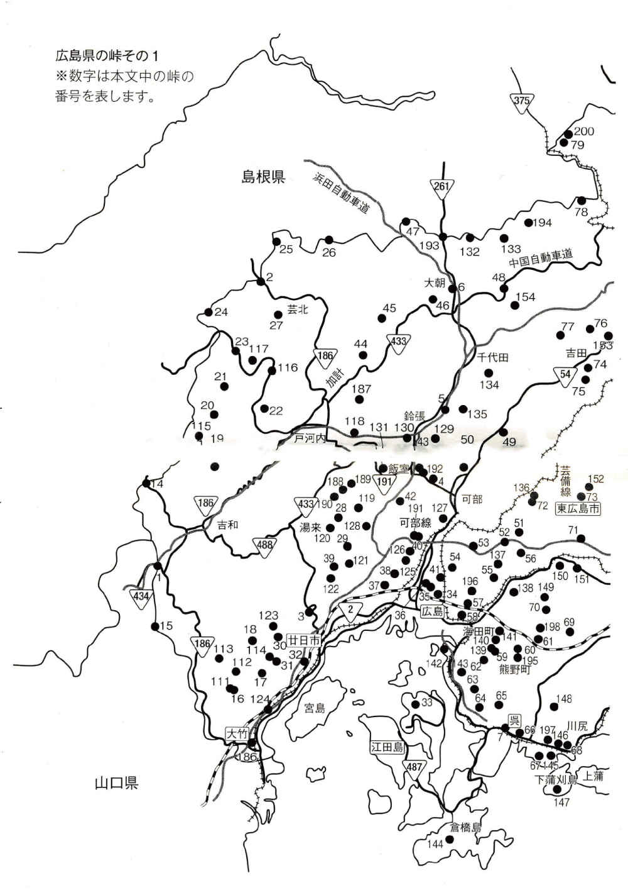

| あの峠を越えて: 広島県の二百峠を歩く (22世紀アート) | |
| 大坂 佳照 | |
| 22nd CENTURY ART (2017) | |
一．松の木峠（まつのきとうげ）廿日市市吉和・冠高原---山口県岩国市・宇佐
二．傍示峠（ぼうじとうげ）島根県浜田市波佐---山県郡北広島町・大佐スキー場
五．明神峠（みょうじんだお）山県郡北広島町千代田・本地ー安佐北区安佐町鈴張
八．王貫峠（阿井越）（おうぬきたわ）庄原市高野町---島根県仁多郡奥出雲町・阿井
九．三井野越（横田越）（みいのごえ）島根県・ＪＲ木次線三井野原駅---出雲坂根駅
十．鳥越峠（とりごえだお）世羅郡世羅町・中国バス甲山営業所---宇津戸
十一．狐峠（きつねたわ）庄原市東城町・ＪＲ芸備線小奴可駅・国道三一四号---森
十二．槙ヶ峠（まきがたわ）庄原市東城町・国道三一四号・森---三草
十三．鍵掛峠（多里越）（かっかけたわ）庄原市西城町・三坂---鳥取県日南町
十五．生山峠（なまやまとうげ）廿日市市・出合・中道---山口県岩国市錦町
十六．馬ヶ峠（うまがたお）大竹市栗谷町・奥谷尻---松ヶ原・ＪＲ玖波駅
十七．和乱治峠（わらんじとうげ）大竹市・ＪＲ玖波駅---廿日市市・渡ノ瀬ダム
十九．押ヶ峠（おしがたお）山県郡安芸太田町・戸河内---廿日市市吉和・駄荷
二十．内黒峠（うちぐろとうげ）山県郡安芸太田町・戸河内・二軒小屋---戸河内
二十一．餅ノ木峠（もちのきとうげ）安芸太田町・恐羅漢分かれ---横川・二軒小屋
二十二．梶ノ木越（かじのきこえ）山県郡安芸太田町・川手---戸河内
二十三．道戦峠（どうせんだお）山県郡安芸太田町・小板---長者原
二十四．木束峠（きすかとうげ）山県郡安芸太田町・八幡高原---島根県波佐匹見分かれ
二十五．雲月峠（うづつきたお）高速旭インター・石見坂本---北広島町・芸北大仙原
二十六．来尾峠（きたおうたお）高速瑞穂インター・越木---北広島町・才乙・大仙原
二十七．吉見坂（よしみざか）山県郡北広島町・大仙原---橋山・松原
二十八．不明峠（あけずだお）佐伯区湯来町・国原---安佐南区沼田町・戸山
二十九．桜ヶ峠（さくらがだお）安佐南区沼田町・奥畑---戸山
三十一．帆柱峠（ほばしらとうげ）廿日市市・おおの自然観察の森---大野
三十二．四郎峠（しろうとうげ）廿日市市・ＪＲ宮島口駅---ＪＲ宮内串戸駅
三十三．幸の浦峠（こうのうらとうげ）宇品港・江田島市切串港---大原
三十四．才蔵峠（矢賀峠）（さいぞうたお）東区・ＪＲ芸備線矢賀駅---ＪＲ広島駅北口
三十五．大内越峠（おおちごとうげ）東区・ＪＲ広島駅北口・尾長---中山
三十六．天神峠（てんじんだお）東区・ＪＲ広島駅北口・尾長天満宮---東区牛田早稲田
三十七．己斐峠（こいだお）佐伯区・ＪＲ五日市駅北口・五月が丘---西区己斐
三十八．畑峠（はただお）西区・己斐ｏｒ安佐南区・西山本、病院分かれ---広島市立大
三十九．栗ノ木峠（くりのきだお）安佐南区こころ---佐伯区神原・梶毛ダム
四十．萩原峠（はぎはらだお）安佐南区上安---安佐動物公園・あさひが丘
四十一．中山峠（戸坂峠）（なかやまとうげ）東区戸坂---中山
四十二．三国峠（みくにとうげ）安佐北区安佐町・久地・名原---毛木
四十三．旧・幕之内峠（まくのうちとうげ）安佐北区安佐町・飯室---可部町・勝木
四十四．鶉木峠（うずらぎとうげ）山県郡北広島町・琴谷---加計
四十五、椎谷峠（しいだにとうげ）山県郡北広島町・鳥越---溝口
四十六．船峠（ふなたお）山県郡北広島町・大朝インター---志路原・琴谷車庫
四十七．三坂峠（市木三坂）（みさかとうげ）島根県・高速瑞穂 インター---大朝インター
四十八．二重谷峠（ねぇだにだお）安芸高田市・高速美土里・桑田---漆原・高速千代田
四十九．上根峠（かみねとうげ）安佐北区可部町・大林---安芸高田市・上根
五十．越道峠（こいどうだお）安佐北区可部町三入・山倉---南原
五十一．湯坂峠（ゆさかとうげ）東広島市志和町・別府---ＪＲ芸備線狩留家駅
五十二．鍋土峠（なべつちとうげ）ＪＲ芸備線狩留家駅---小河原・ＪＲ上深川駅
五十三．三田ヶ峠（みたがたお）東区・ＪＲ広島駅北口・福田---ＪＲ芸備線中深川駅
五十四．蝦蟇ヶ峠（がまがたお）東区・ＪＲ広島駅北口・温品---安佐北区・口田
五十五．水越峠（みずこしとうげ）安芸区・ＪＲ瀬野駅---畑賀・ＪＲ安芸中野駅
五十六．榎ノ山峠（えのやまとうげ）安芸区・ＪＲ瀬野駅---東広島市・志和
五十七．甲越峠（こうこえだお）安芸区・ＪＲ安芸中野駅・畑賀---安芸郡府中町
五十八．船越峠（ふなこしだお）安芸郡府中町---安芸区船越町
五十九．串掛峠（くしかけとうげ）安芸郡熊野町・平谷---海田町三迫
六十．竜王峠（りゅうおうとうげ）東広島市黒瀬町・イラスケ---熊野町萩原
六十一．大峠（おおたお）東広島市黒瀬町・イラスケ---熊野町萩原
六十二．矢野峠（やのだお）安芸郡熊野町・平谷---安芸区矢野町
六十三．堀切峠（ほりきりとうげ）呉市・昭和支所・焼山宮ヶ迫---天応町ｏｒ二河峡
六十四．鍋土峠（なべつちとうげ）呉市・焼山ひばりヶ丘---吉浦町ｏｒ二河峡
六十五．神山峠（じんやまとうげ）呉市焼山町ｏｒ栃原町---平原・西畑
六十九．小池峠（こいけとうげ）東広島市八本松町・吉川---黒瀬町
七十．戸坂峠（とっさかたお）東広島市八本松町・吉川---安芸区・阿戸町
七十一．今坂峠（いまさかたお）東広島市志和町・志和東---八本松町
七十二．大仙峠（だいせんだお）ＪＲ芸備線志和口駅---安芸高田市向原町・有留
七十三．火打坂（ひうちざか）東広島市福富町・上竹仁---安芸高田市向原町・保垣
七十四．国司峠（くにしたお）安芸高田市吉田町・広電吉田営業所---向原町・戸島
七十五．赤峠（あかたお）安芸高田市吉田町・広電吉田営業所---向原町・戸島
七十六．印内峠（いんないだお）安芸高田市・高速高宮・印内---広電吉田営業所
七十七．大峠（おおたお）安芸高田市・高速美土里---広電吉田営業所
七十八．直会峠（すくえだお）島根県邑南町・ＪＲ三江線作木口駅---ＪＲ式敷駅
七十九．馬ヶ垰（まがたお）三次市作木町・摺滝---島根県邑智郡・美郷町
八十．札ヶ峠（ふだがたわ）庄原市高野町・下門田---竹地谷・大月
八十一．風越（かざごえ）三次市布野町・上布野---寺谷・西入君
八十三．馬通峠（まどおしだお）安芸高田市甲田町・ＪＲ甲立駅---三次市三和町
八十四．水越峠（みずこしとうげ）三次市三和町・羽出庭---安芸高田市向原町・寺山
八十五．黄幡坂（おうばんざか）竹原市新庄町・横大道 ---東広島市・上三永
八十六．仁賀峠（にかとうげ）東広島市・上三永---竹原市・仁賀ダム
八十七．恋地峠（こいじだお）竹原港・豊田郡大崎上島町・恋地---明石
八十八．尾引坂（おびきざか）三次市和知町・高速和知---庄原市平和町
九十一．しんぎょう峠（しんぎょうだわ）庄原市口和町・大月---三次市・ふぉレスト君田
九十二．坊地峠（ぼうじだわ）庄原市比和町・三河内---西城町
九十三．盤之谷峠（はんのやたわ）庄原市川北町・田の平---比和町三河内
九十四．宇賀峠（うがたお）三次市・ＪＲ福塩線甲奴駅---ＪＲ吉舎 駅
九十五．若菜ヶ峠（わかながたお）世羅郡世羅町・田打 ---甲山町・中国バス甲山営業所
九十七．幸谷峠（こうたにとうげ）尾道市向島町・川尻---立花
九十八．七曲坂（ななまがりざか）尾道市・日比崎小バス停---同小
九十九．大人峠（おおひとのたお）尾道市沖側町---三原市福地町
一〇〇．防地峠（ぼうじとうげ）ＪＲ東尾道駅・尾道バイパス---防地町・ＪＲ尾道駅
一〇一．梨峠（梨ヶ峠）（なしがたわ）神石郡神石高原町・常光---荒鍔
一〇二．呉ヶ峠（くれがたお）神石郡神石高原町・殿敷---上郷
一〇三．中山峠（なかやまとうげ）庄原バスセンター・吉備谷---雨連・高速帝釈
一〇四．権現峠（ごんげんだわ）ＪＲ芸備線小奴可 駅・保田---ＪＲ備後西城駅
一〇五．船越峠（ふなこしたわ）神石郡神石高原町・中国バス油木バス停---豊松
一〇六．粟井峠（あわいたわ）福山市加茂町・粟根---粟井・神辺町
一〇七．柳峠（やなぎだお）神石郡神石高原町・国道一八二号・坂瀬川---犬塚
一〇八．千田大峠（せんだおおたお）福山市・木綿橋跡---千田・寺西下・辻堂跡
一〇九．薮路大峠（やぶろおおたお）福山市横尾町・鶴ヶ橋---木綿橋跡
一一〇．水越峠（みずこしたお）福山市・ＪＲ備後赤坂駅---水越
一一一．善坊師峠（ぜんぼうしだお）大竹市栗谷町・大栗林---谷和・ＪＲ玖波駅
一一二．汗馬ヶ峠（かんばがたお）大竹市・ＪＲ玖波駅・後原---小栗林・ＪＲ玖波駅
一一三．札ヶ峠（ふだがたお）大竹市・ＪＲ玖波駅・栗谷町---廿日市市佐伯支所
一一五．水越峠（みずこしたお）安芸太田町・横川 ・二軒小屋---国道四八八号分かれ
一一六．虫木峠（むしきだお）山県郡安芸太田町・戸河内---松原
一一七．深入峠（しんにゅうだお）山県郡安芸太田町・深入山いこいの村---小板
一一九．仏峠（ほとけだお）安佐南区沼田町・阿戸・三王原---阿戸・高浜
一二〇．大峠（おおたお）安佐南区沼田町・吉山---佐伯区湯来町・和田
一二一．仏峠（ほとけだお）安佐南区沼田町・奥畑---佐伯区五日市町・藤の木
一二二．河内峠（こうちとうげ）佐伯区・ＪＲ五日市駅・魚切ダム---五日市町小深川
一二三．泉水峠（せんすいとうげ）ＪＲ宮内串戸駅・楢原---原・ＪＲ廿日市駅
一二四．四十八坂（しじゅうはちさか）ＪＲ大野浦駅---唐船浜
一二五．権現峠（ごんげんだお）ＪＲ可部線下祇園駅・春日野団地---沼田町伴
一二六．水越峠（みずこしとうげ）安佐南区東山本・鹿ヶ谷---高取
一二七．鳥越峠（とりごえたお）ＪＲ可部線七軒茶屋駅・緑井---安佐町玖谷
一二九．植松峠（うえまつたお）安佐北区可部町・大畑農協---安佐町鈴張
一三〇．上手峠（じょうでだお）安佐北区安佐町・飯室・上畠---関之内
一三一．うりが峠（うりがたお）安佐北区安佐町・小浜・右平---飯室・清和中
一三二．亀谷峠（時雨三坂）（かめだにだお）島根県邑南町・下田所---北広島町大朝
一三三．栗屋峠（栗ヶ峠）（くりやだお）安芸高田市美土里町・生田 ---智教寺
一三四．久々根峠（くくねたお）北広島町千代田・川井---八千代町・土師ダム
一三五．可部峠（かべだお）北広島町千代田・本地---安佐北区可部町・南原
一三六．中山峠（なかやまとうげ）安佐北区・ＪＲ芸備線中三田駅---ＪＲ白木山駅
一三七．ミノコージ峠（みのこーじたお）ＪＲ瀬野駅・立石---長者山・榎ノ山峠
一三八．舛越（ますこし）広電熊野営業所・下跡---安芸区平原・ＪＲ中野東駅
一三九．赤穂峠（あかほたお）海田・熊野町境・金ヶ灯籠山登山口---古峠・新峠
一四〇．古峠（ふるたお）海田・熊野町境・金ヶ灯籠山登山口・赤穂峠---新峠
一四一．新峠（しんたお）金ヶ灯籠山登山口・古峠---海田町三迫
一四二．鯛尾越（たいびごえ）（仮称）ＪＲ呉線坂駅・坂横浜---鯛尾・ＪＲ坂駅
一四三．天地峠（天地ヶ峠）（てんちだお）ＪＲ呉線坂駅・上条---ＪＲ小屋浦駅
一四四．宇和木峠（うわぎとうげ）ＪＲ呉線呉駅・倉橋島・宇和木---本浦・ＪＲ呉駅
一四五．戸田峠（へただお）呉市仁方町・安芸の小須磨・戸田---仁方皆実町
一四六．宮原峠（みやはらだお）ＪＲ呉線仁方駅・仁方大歳町---仁方本町
一四七．地蔵峠（じぞうだお）呉市下蒲刈町・三之瀬---大地蔵・三之瀬
一四八．勧農坂（かんのうざか）呉市広町・石内---野呂山・十文字ロータリー
一四九．笹ヶ峠（ささがたお）東広島市八本松町・大竹---安芸区阿戸町・ＪＲ瀬野駅
一五〇．大山峠（おおやまとうげ）東広島市・ＪＲ八本松駅---ＪＲ瀬野駅
一五一．飢坂（かつえざか）東広島市・ＪＲ八本松駅---西条町寺家
一五二．見坂峠（みさかとうげ）安芸高田市向原町・保垣ー東広島市福富町・下竹仁
一五三．妻坂峠（つまさかとうげ）広電吉田営業所・四軒屋---田口・ＪＲ甲立駅
一五四．時鳥峠（ほととぎすたお）高速美土里・横田---叶口・広電吉田営業所
一五五．赤名峠（赤名越）（あかなとうげ）三次市布野町横谷---島根県飯南町赤名
一五六．草峠（荒鹿坂）（くさんたわ）島根県飯南町頓原---庄原市高野町・上里原
一五七．仏が峠（ほとけがたお）三次市布野町・瀬戸・千日峠---中村
一五八．旧・便坂（びんざか）三次市・上布野---作木港・ＪＲ三江線作木口駅
一六〇．坂根峠（火打坂）（さかねとうげ）三次市十日市町・下原・植松---船所
一六一．堀坂（ほっさか）ＪＲ西高屋駅・上三永---堀坂・中田万里バス停
一六二．松子山峠（まつごやまとうげ）東広島市・ＪＲ西条駅・土与丸---上三永
一六三．蚊無峠（かなしとうげ）東広島市・ＪＲ西条駅・森近---ＪＲ呉線安芸津駅
一六四．大峠（おおたお）東広島市・ＪＲ西条駅・下長野---市之畑・ＪＲ呉線安芸津駅
一六五．戸石峠（といしとうげ）ＪＲ西条駅・下仁賀・仁賀小---印内・ＪＲ呉線安芸津駅
一六六．宇井坂峠（ういさかとうげ）ＪＲ呉線風早駅・山口---大田・ＪＲ風早駅
一六七．塞峠（さいのたお）三原市・ＪＲ本郷駅---竹原市・ＪＲ呉線大乗駅
一六八．河原坂（瓦坂）（かわらざか）竹原市新庄町・横大道 ---三原市本郷町・日名内
一六九．京之峡（きょうのかい）高速和知・平和町・水越町・三次市後山町---穴笠町
一七〇．金尾峠（かねおたわ）庄原バスセンター・高野町---口和町宮内
一七一．王居峠（おいたわ）庄原市高野町・新市---森脇・庄原バスセンター
一七二．俵原越（たわらばらごえ）庄原市高野町・上湯川---島根県奥出雲町
一七三．出雲峠（いずもだわ）庄原市・県民の森・旧若人の家---烏帽子山・県民の森
一七四．塞峠（さいのたお）庄原バスセンター・川北町須川---伊勢町
一七五．粟石峠（あわいしたお）庄原バスセンター・峰田町---総領町上市
一七六．舟迫垰（ふなさこたお）庄原市総領町上市---大谷・灰塚・ＪＲ福塩線三良坂駅
一七七．大山峠（おおやまとうげ）尾道市・因島北インター---因島総合支所
一七八．二重坂（ふたえざか）ＪＲ芸備線備後落合駅・小鳥原 ---ＪＲ備後西城駅
一七九．虫原峠（むしわらたわ）ＪＲ芸備線東城駅・小串---岡山県哲西町・上神代
一八〇．二本松峠（にほんまつとうげ）ＪＲ芸備線東城駅---岡山県哲西町・大竹
一八一．竹障子峠（たけしょうじだお）神石高原町坂瀬川・福山市矢川---姫谷
一八二．塞ノ峠（さいのたお）福山市新市町・父尾---芦浦 ・上安井・下安井
一八三．蛇切り峠（じゃきりとうげ）福山市新市町・下安井---ＪＲ福塩線戸手駅
一八四．湯ノ坂峠（ゆのさかとうげ）福山市千田町・国道一八二号---丙谷 池
一八五．鐙峠（あぶみとうげ）鞆町・グリーンライン・通盛神社---横倉・中山南
一八六．苦の坂（小野坂）（くのさか）ＪＲ大竹駅・小方町・新御園橋---縢池神社
一八七．加計峠（かけたお）北広島町・長笹・慈光庵分かれ---安芸太田町・加計
一八八．中源峠（ちゅうげんだお）安佐北区安佐町・高山---佐伯区湯来町・草谷
一八九．鉾ノ峠（ほこのたお）安佐北区安佐町・高山---佐伯区湯来町・津伏
一九〇．ドン畑峠（どんばただお）県道七十一号・沼田町丹原---湯来町・古持
一九一．岩谷峠（いわやだお）安佐南区毘沙門台東---安佐北区筒瀬・中央ゴルフ場
一九二．坊字（地）峠（ぼうじだお）安佐北区安佐町・飯室---可部町上行森
一九三．旧・中三坂峠（なかみさかとうげ）北広島町大朝・鳴滝---島根県邑南町・上田所
一九四．犬伏峠（いぬぶしたお）安芸高田市・高速美土里・生田 ---智教寺
一九五．亀割峠（かめわりだお）広電熊野営業所・小迫地---黒瀬町イラスケ
一九六．笹ヶ峠（ささがたお）ＪＲ安芸中野駅・畑賀---府中町
一九七．旧・仁方峠（仮称）（にがたとうげ）呉市・仁方旧トンネル上---広白石四丁目
一九八．笹ヶ峠（ささがたお）安芸区阿戸町・国草・熊野町海上側---黒瀬町イラスケ
一九九．灰谷越（はいたにごえ）三次市布野町・国道五十四号・落合天狗橋---君田町茂田
『広島県の峠を歩く』を出版して六年、県下の主な峠をほぼ歩き尽くしたので、今回歩いた分も含めて改訂し、『あの峠を越えて---広島県の二百峠を歩く』と題して出版することになった。
峠を意味する主な漢字は次の五つぐらいであろうか。
一．「峠（とうげ）」は国字で、もっとも一般的に使われる。「『たむけ』（手向け）の転。通行者がここで道祖神 に手向けをしてまつり、旅路の安全を祈ったところからいう。山の坂道を登りつめた最も高い所。山の上り下りの境目」（言泉）と辞書にある。道祖神は村境・峠などにあって、外からの疫病・悪霊を防ぐ神で、のち旅人の安全や縁結びの神となり、子どもと親しい神となった。くなど（ふなど）の神、塞 の神のことで、県下の多くの峠の名に、塞ノ峠（さいのたお）を見る。
二．「垰（たお）」も国字で、「たおり」（撓り）の約。「撓り」は「山の尾根の低く凹んで曲がっている所。たお」（広辞苑）とある。辞書であまり見かけない漢字である。
ただ、明治三十一、二年頃の広島県地図（縮尺五万分の一、大日本帝國陸地測量部発行）では、垰が一般的に使われているし、広島県以西、四国、九州では峠は古く垰と呼び慣わしてきた。私が峠で出会った八十歳代以上の人も多く、峠といわず垰といった。
三．「撓（たわ）」。「山の尾根の線のくぼんで低くなった所」（国語中辞典）。王貫峠、出雲峠など島根との県境、また岡山以東では峠をタワというところが多いという。
四．「越」。呉越、梶ノ木越（戸河内）など、峠と同じ意に使う。コエ、コシなど土地によって読みが違う。
五．「坂」。便坂（作木⇔ 布野）、四十八坂（大野）など、峠と同意に使う。広島県下の地図に見る峠の数は、明治三十一、二年頃で、およそ一〇〇。平成二十年代のもの（縮尺二万五〇〇〇分の一、国土地理院発行）で見ると、およそ二七〇。ただ、縮尺が違うし、明治の地図には、もっと山道があり、実際は明治の方が数はずっと多そうだ。
標高の高いのは、芸北の内黒峠、水越峠が一〇〇〇メートル、低いのは、仏ヶ峠（三原・県立広島大近く）、七曲坂（尾道・日比崎小）など十メートル。同名の峠は、水越峠、中山峠、笹ヶ峠、三坂峠、塞ノ峠など多い。ボウジ峠などは坊地、傍示、防路ほか、いろいろな漢字を当てる。越えた先の地名を付けるため、広島市の戸坂では中山峠、中山では戸坂峠という例も多い。読み方も、音・訓どちらも使い、たとえば不明峠はアケズダオ、フメイトウゲ、どちらもいうが、前者が歴史的には古い。
広島県の峠道は、山陽道、雲石・雲伯路へ津和野路などに大別される。
一．山陽道は、瀬戸内海沿いの、ほぼ現在の国道二号といってよい。つまり、福山・尾道・三原・竹原・東広島・広島・大竹のルート。ただ、八本松瀬野間の大山峠、府中甲越峠などのように、古代の山陽道、近世の西国街道、そして現在の道とで違うことも多い。
二．雲石・雲伯路とは出雲・石見 （島根）・伯耆 （鳥取）路を指す。出雲石見銀山路（大田）の代表的ルートは赤名越である。
一つは、国道五十四号（広島・可部・吉田・三次）経由。ただし、途中、可部から石見浜田路は可部峠・本地・中山峠・市木三坂越、吉田から吉田石見路は美土里・時鳥峠・栗屋峠・出羽越、浜田路枝分かれの千代田石見路は新庄・中三坂越か時雨三坂越がある。
もう一つは、尾道から国道一八四号（尾道・甲山・吉舎・三次）経由、この石見銀山道の市、宇津戸、甲山、吉舎、三良坂はとても繁栄した。一方、国道一八二号（福山・油木・東城・新見）の東城街道は、そのまま岡山へは二本松峠を通る備中越、国道三一四号（東城・三井野・木次）経由が三井野越（横田越）、広島から続く国道一八三号（広島・三次・庄原・西城・日南）経由に、日野街道ともいう伯書路の道後山の鍵掛峠を越える多里越がある。
さらにもう一つ、忘れてならないのは、国道四三二号（竹原・河内・甲山・上下・庄原・高野・奥出雲・松江）経由、阿井越（王貫峠）。三次から防地峠・新業峠を経て金尾峠か札ヶ峠を越えるルートもあるが、国道四三二号ルートは、粟石峠、盤之谷峠、王居峠など名だたる峠を越え、阿井越をめざした。また、王居峠の先から俵原越という難関もある。
三．石見津和野路は廿日市から県道三十号（明石峠・栗栖）に入り、国道一八六号、羅漢渓谷を経て県道一一九号、生山峠・羅漢山越がよく知られる。
道の歴史は、すでに古代八世紀、山陽道ありとされ、中世武田・戦国毛利氏などを経て、幕藩体制下の十七世紀、西国街道、雲石、雲伯路ともに整備され、明治に入ると、鉄道の出現、道路の拡張整備など一気に近代化が進み、そして戦後の劇的な転換を迎える。新幹線の登場、列島改造、バブル経済と続き、各地の道路が舗装整備された。特に、高速道路網の出現は一挙に道路を変えた。中国道、山陽道、浜田道、しまなみ、とびしま海道が相ついで完成。尾道〜松江ルートの完成も間近い。このような道路網の整備に伴って、古い峠道は、拡張され発展して生き延びるか、ルート変更や歩く人の減少によってすたれ、忘れ去られて消えていくか、二つに一つしか選ばれた道はない。
私は車を持たないため、バス、鉄道など、公共の交通機関を使っている。やむをえず、タクシーや自家用車、自転車を使った例外をのぞき、断りのない限り、おおむね広島バスセンター、ＪＲ各駅を起点とする記述と考えていただきたい。平成二十五年四月以降、松江行き高速バスが国道五十四号（赤名峠経由）から松江道に移った例もあり、電車・バスは最新の情報を確認して、峠歩きを楽しんでいただきたい。
最後に、峠を機能別に四分類した。大まかな分類（厳密なものではない、念のため）であるが、本文の構成はこれによっているので、参考にしてほしい。標高は、原則として、国土地理院発行の縮尺・二万五〇〇〇分の一によった。峠の読みは現地で聞いたもの、道順は歩いた順に記述してある。
〈拡張発展型峠〉国道が通り、舗装され拡張されて、人や車の往来がはげしい峠。
〈生活道型峠〉県道や市町道などが通り、多くは舗装され生活道となっている峠。
〈懐古型峠〉舗装道は少なく、多くは土道のまま残り、あまり人も通らない峠。
〈機能喪失型峠〉多くは古来の峠で、草木が茂り、峠に至る道もはっきりしない峠。

〜寂地峡 への国道四三四号、国道一八六号と分かれた県境、吉和冠登山口の峠〜
宮内串戸から広電バス吉和行きに乗車。便数は午前中は八時半前の一本だが、乗る人はほとんどいない。途中、栗栖から国道一八六号に合流して、羅漢渓谷を通り、吉和の車庫まで行く。
登山客など、シーズンにはにぎわうこともあるそうだが、たいてい車内は閑古鳥が鳴くとのこと。案の定、きょうも津田で乗客はいなくなり、運転手さんと親しく会話することとなった。松の木峠に行くには冠高原入り口で降りるのがよいとのこと、そこで下車する。
国道四三四号、岩国市錦町に向かうルートである。牧草地のようなところをゆっくりと上ってゆく。三十分弱で松の木峠に着いた。山口県との境である。宇佐を経て錦三十三キロメートル、寂地峡五キロメートルと看板に書いてある。宇佐、向峠 、錦町に通ずるルート。さびれているが、これでも国道である。あとで出会った飯山 の古老の話によれば、松の木峠の由来については、宇佐側に松がたくさん生えていたので、こう命名したとか。
右冠山とある峠の頂上で一服する。車はほとんど通らない。
引き返すことにする。最近暖冬もあるが、遊びも多様化して冬山の人気は落ち気味である。そのむかし、人であふれたスキー場はとっくに閉鎖され、いまは野菜作りなどに活路を見出しているらしく、放置され壊れかかった施設が痛々しい。
先ほど下車したバス停に戻らずに、下の道を踏んで、飯山に出た。河内神社という古い神社があり、四抱えもある杉が三本、遠くからでも見上げるほどの高さ、旧佐伯町の天然記念物に指定されている。国道一八六号に戻り、先ほどのバスの帰り便、十一時四分、下飯山から乗車して出合で下車、今度は羅漢高原の生山峠に向かう。
〜国道一八六号、大佐スキー場から波佐 へ向かう、トンネル手前の大きな峠〜
きょうは快晴。はじめて自転車を利用する。あらかじめ、運送会社に送ってもらったのである。朝、深入山のいこいの村を出発して、県境の木束峠（きすかとうげ）を経て、金城 町の波佐に着いた。十五時を回っていただろうか。町の中心部らしく、いくつかの公共施設がある。郷土史に詳しい人に出会い、しばらく会話を楽しんだ。その方は、峠は国境 にだけ用い、村境は垰（たお）を使ったという説を話された。木束垰、鍋滝垰であり、波佐の笠松垰もタオといい、傍示だけ、トウゲだとの主張である。もっともである。たしかに子どものころ、郷里にあった小さなトウゲは越道垰（こいどうだお）と称していたのを思い出した。それに明治時代の地図は多く垰の字を当てている。が、峠が明確に国境線を示すのはそうだとしても、村境の峠はすべて垰というか、例をもう少し集めないとなんともいえないような気もする。最近ではトンネルができて急峻 な峠道はほとんどなくなり、芸北、備北以外、あまり峠らしい峠がなくなっているゆえ、文献と古老に頼るしかないと思うが、どうだろう。私見では、峠道を歩いていて、年輩の人はたしかにトウゲというより、タオという人が多い。若い人が、といっても、昭和二ケタ以後の人であるが、タオというのをあまり聞いたことがない。
さて、一休みして、傍示峠を目指す。もう四時間も自転車をこいでいるので、いい加減足にきている。国道一八六号を蛇行しながら上ってゆく。自転車がなければ大したことはないと思うが、自転車押し押し、それに長い急な上り道である。一時間十五分、フウフウいいながら、やっとの思いで傍示峠に着いた。二万五〇〇〇分の一の地図には括弧して「捧路峠」と書いてある。
さて、ここから一気に下り。またたくまに、八幡分かれ。自転車は速い。すれ違った小学生が元気よく挨拶してゆく。聖湖分かれを行くころには、あたりがボツボツ暗くなりだした。道戦峠（どうせんだお）を越えるころ、ライトをつける。あまりはっきりと道が見えない。深入山いこいの村に着いたとき、真っ暗闇であった。今夜、ここに宿泊する。
〜魚切 ダム上流で国道四三三号を西へ、峠集落のすぐ先、遠く海が目に入る峠〜
ＪＲ五日市駅から湯来温泉行きのバスを利用して、魚切ダムの先、白川上バス停、国道四三三号分かれで下車。そこから、左に折れて、四三三号を峠に向かう。峠という集落まで一時間、広い、歩きやすい田舎道を歩く。峠とはそのものズバリの名前である。バス（川角〜峠）は、平日五本、他は二本、とある。すぐ峠に着いた。客人 神社は眺めがいい。魚切ダム九キロメートル、極楽寺四キロメートルとある。そういえば新聞に、景色に惹 かれて、定年後ここに田んぼを借りた人がいた。
峠から七曲峠まで三十分弱。ゆるやかな上り。七曲峠はいきなり現れた。そして、美しい海が目の中にとびこんできた。海面が白く光る。風がかすかに吹きすぎてゆく。少し休むことにする。そこから、十分で廿日市市に入り、すぐ極楽寺分かれ、左は県道二九一号。下り道にふさわしい峠である。一時間あまりで、橋本に出る。突き当たりに、道しるべ。「是ヨリ右 山縣道 左 石州道」。目の前をバスが通る。やがて、上平良 を抜け、国道に出た。
〜国道一九一号、勝木台団地すぐそば、芸藩通志地図にも見える、ゆるやかな峠〜
遠坂峠の読み方はむずかしい。飯室 で幕之内峠を調べるとき、行森 から来たという六十歳代の女性は、「えだかだお」と明言した。庭木の手入れをしていた七十歳代はじめの男性は「えざかとうげ、いうようだが......」と、あまり自信がないらしく、田んぼで野良仕事に精出していた人を指さし、「あの人は、なんでもよう知っておいでだから」と紹介してもらい、当の男性に聞くと、即座に、「もちろん、えだかだお、いうよ」と断言した。お年寄りは、トウゲより、タオという場合が多いし、エダカダオというのが古称かも知れないと、そのときは思った。
ところが後日、高宮郡の「国郡志御用につき下調べ書出帳」（十九世紀にできた芸藩通志の基礎資料に使われたもの）という書をながめていたら、勝木 村の項に「ヱサカ峠上り下り六丁」（約六〇〇メートル）とある。さらに、芸藩通志の地図で確認すると、恵坂峠となっている。というようなわけで、古くはヱサカ峠（恵坂峠）といったかも知れない。いまは確定しないでおきたい。
さて、男性は言う。やや上りとなる前方の峠を眺めながら、「むかしの峠はのぉ、あの店のところで左に折れて、お寺の横を通って上にのぼったところじゃった」と解説してくれた。もとの峠より大分低くなったようである。道路工事は、土を削っては主にトロッコ三両使って土を運んだそうで、なかなかつらかったようだが、もっぱら馬で土を引き上げる楽な方の仕事を日本人がやったということである。このあたりは戦前、筵 編みがさかんだったという。筵五枚を一まとめにして丸めたもの、これを五、六個一セットにして車力 （大八車などの荷車）にのせ、「えだかだお」を越えて可部に持って行って売るのだが、たまに車力を後ろから押して手伝ったりすると、一銭だか二銭だか、ほうびにくれたそうである。子どものころの懐かしい思い出を話す顔は、なんだか当時の少年に返ったように輝いて見えた。
あたりに夕暮れも迫り、辞去して、遠坂峠を上る。すぐ峠である。なるほど上り下り六丁はいまも同じである。ひっきりなしに車が通るが、峠に起 つとかすかにそれらしい感じが残っている。少し下ったところに二体の地蔵が祀 ってあった。下っていると、花の手入れをしていた六十歳代の男性に出会った。「車から、空き缶や弁当ガラを投げ捨てるのがおって、ほんまに困るねぇ」とのこと。「幸い、友達が花桃の苗をくれたけぇ、少しきれいになったがの。これで捨てるものも、少しは遠慮してくれりゃ、ええんじゃが......。そうそう、この前は、サルが出て、屋根に上がって大騒ぎするんで、ラジオを鳴らしたらやっと来んようになったねぇ」と。
目の前に大きな団地が建ったこんなにぎやかなところにも、サルが出るご時世である。話は続く。「シカはこの上によう来るよ。むかしは、イノシシがこの上のぬた場で四、五匹じゃれとったがの。いまはさすがに、この車と勝木台団地が建ったおかげて来んようになって、よろこんどるんじゃが......」と。大分困っているようすである。
すぐ下がバス停である。バスを待つ間に、大きな碑を見つけたので参拝する。十九歳にして戦場の露と消えた戦友をとむらうものであった。峠とも思われない平凡な峠であるが、歴史の片鱗をうかがうことができた。
〜国道二六一号、明治期、近代化の波に乗り登場した、県下有数のけわしい峠〜
四月、曇り空の昼過ぎ。思い立ち、東城行きの高速バスに乗る。車内は暑いくらい、かなりのお客だ。千代田インターで下車する。これから鈴張方面に向かって引き返し、明神峠を目ざして歩く。
ダンプの多い国道二六一号を少しそれると、なんだか暖気が戻ってきた。田んぼのほとりの土筆 が頭を出す道をのんびりと歩く。日差しは春のものだが、風は少し冷たい。二十分も歩いたころ、小川沿いの草道に松の木が一本、やや遅い食事にはもってこいの場所だ。川向こうの畑でお年寄りが野菜の手入れをしているが、時折、こちらに目を向ける。軽く頭を下げると、向こうも応じてくれる。のどかな田舎の風景だ。ひばりの声もして、まるで別世界である。
田んぼ道で草刈りをしていた老人とよもやま話をひとくさり。そこから十分あまり、楠苑 を訪ねる。聞けば、「三島のふりかけ」で有名なふりかけ博物館である。
三島食品の創始者、三島哲男氏（大正五年生まれ）は健在とか。ふりかけの種類の多さに感心しながら見学。最後に見本を一つもらって外に出た。
しばらく行くと、旧道のかたわらに石見街道一里塚跡と記した新しい石標を見つける。本地 に入り、バス停近くの民家の角に「乃木将軍休憩之跡 皇紀二六〇〇年記念 本地村」という石碑がある。昭和十五年のもの。これは乃木将軍が明治三十九年特別検閲使として可部峠を越えて、本地に入ったときの記念碑という。
ほんの少し下って、えびす橋のたもとに「安政四年 巳季冬 」銘の石の道しるべを見つけた。「右ハ大田おくすし道 左ハかへひろしま江」か？ 「おくすし」という字がはっきりしない。奥筋か？ 「かへひろしま」は可部広島。
田中橋を渡り、左に「八王子よみがえりの水」という幟旗、また、新光バス停近くには「可部峠の御神水」の幟もたくさん見える。可部冠山山系の水がおいしいのだろう。
ここから三十分近く歩いただろうか。工事中のおじさんが声をかけてきた。「もう遅いよ。冠山に登るのは」と、登山と勘違いされたので、「いや、明神峠に行くんです」と言うと、「ここらじゃ、可部峠いうそうじゃ」との言。「道路はむかしとは大違いじゃ。ようなったよ。高校のインターハイがあったときに、直したけぇの」と言われ、「はあ、そうですか」と相づちを打つ。
それからしばらく歩いて、海見山カントリークラブを過ぎると、いきなり「可部八キロメートル」、「広島三十五キロメートル」、「陰陽分水嶺」という大きな標識が目に入り、「あぁここが明神峠か」と見当が付いた。ここで流れが南北に分かれているのがはっきりする。
腕章を付けたおじさん（近頃、子どもに危害を加える不審者の情報が飛びかい、ボランティアで街頭に立つ人が増えているが、この人もそうだろう）、「わしゃ、最近この地に来たものじゃが、あの山沿いの道がそうじゃろうか」とのこと。お礼を言って、なおも行くと、五十年輩の男性に出会い、確認してみる。「いまもむかしも、明神峠はこの道ですよ。可部峠いうのは、あの高い冠山に行く道のことをいうのじゃから」と向こうの高い山を指さして、明快である。「明神峠のことは、あの下の道で耕耘機 を押している人に聞きんさい、なんでも知っておりんさるけえ」と親切な助言をもらう。
昭和四年生まれというその男性は、耕耘機を止めて、ニコニコしながらあれこれ話してくれた。この地で生まれ、この地で育ち、この地でいまも農業に励んでいる人である。
「ここが明神峠であります。むかしと比べりゃ、ずいぶん変わったもんでありますよ。まっすぐに整備する前のむかしの道は、この下じゃった。子どものころにゃ、雨の日も裸足 で一里下の鈴張の小学校へ向けて、この下の道をよう通ったものですよの。むかしは浜田へ向けて牛を追うてゆくのに、この下の道から、今のこの道を横切って上がって、明神社のところを今の道より上の方に千代田へ行く道がずーっと上っておったいうて、子どものころに親からよう聞いたもんです」と教えてもらった。
言われてみると、確かに峠のすぐ上に朽ちかけた祠 があり、これが明神社で、昭和四年銘の石灯籠が傾きかけたまま残っていた。草道もかすかに残っている。明治の近代化の中で、可部峠に代わって、広島と浜田とをむすぶ道として生まれた、この明神峠。時代の生き証人である。
バス停でＪＲバスの時刻表を調べてみた。上り、始発七時十七分、終便十九時三十九分、すべて大朝行き。下り、始発、広島駅行き六時四十六分、終便文教女子大行き十九時三十八分。上り下り各六本。下りの午後の便すべて文教女子大行きである。昼間は閑散としているが、通勤通学のお客は朝夕に集中するのだろう。
ビデオであたりの風景を撮ってみると、旧道も残り、道に沿って人家が形成される道の成り立ちが手に取るように確認される。峠道を高速道側の細い道（これが旧道）から眺めてみたら、午後の陽にシルエットとなった海見山をバックにして、次々と明神峠の急坂を下っていく大型トラックや自動車の列もなんだか魅力的に見えたことである。
坂道を下っていると、先ほど明快に峠の結論を出してくれた男性が車を止めて、「飯室のスーパーに行くけぇ、乗っていきんさいや」と親切に声をかけてくれたので、ありがたく乗せてもらうことにする。峠の風情は薄れたが、人情の方は残っていて、清々しい気持ちで帰途についた。
〜国道二六一号、県下同名の多い峠のひとつ、新庄のおいしい水が迎える峠〜
高速バスで大朝に下車。歩いて千代田方面に戻る。ちょうど地域バスというのがやってきた。乗ってみよう、と軽い気持ちで乗車。
ここは中宮ノ庄、乗って十分もたたないうちに、あわてて下車する。中山峠である。中山峠は、同名のものが広島市内の戸坂 にあり、安佐北区の中三田にあり、帝釈峡近くにもあり、まだあろうが、ポピュラーな峠の名前のひとつである。帝釈を除いては、いずれもごく低い楽勝の峠である。
この中山の歴史はというと、十六世紀の中頃、毛利三兄弟の次男、元春は父元就 の助けによって大朝の吉川 家に養子として入り、この中山峠の三〇〇メートル上に日山 城という城塞を固めた。息子広家が豊臣秀吉の命令で出雲の月山富田 城に移るまで四十年間、この城は吉川家の本城であった。そのため、麓の中山には市ができ、高田郡をはじめ、出雲、石見からも人が集まり、材木、牛馬の皮、木綿などを扱う商人が店を構えて繁盛し、江戸時代に入ってますます栄えたそうである。確かにそういわれてみると、しっかりした古い家があちこちに残り、かつての宿駅の風格のようなものが感じられる。国道二六一号は、この峠から北へ向かうとまず宮ノ庄に入り、右折し左折したら時雨三坂（しぐれみさか）（亀谷）峠、新庄から右折したら中三坂峠、そのまま大塚方面に行くと市木三坂峠をそれぞれ越え、石見に入る。
さて、まず峠の写真を撮り、バスの運転手さんに教えてもらった中山の名水を飲むことにする。円光寺というお寺の側に近年発掘されたもので、なるほど、甘露かんろであった。
もう一つ、むかしから峠の下に水車が回っていて、よく夏などは車を止めてのどを潤したものだそうであるが、いまや、あの水は飲めたものではない、とのことである。
それから、お寺の横に吉川興経公御塔道（きっかわおきつねこうごとうどう）という石標がある。元就によって非業 の最期 をとげたその興経の首塚が日山にあるというが、今回はパスする。このあたり、上を浜田道が通るようになって、千代田インターも近いため、車の量は多いが、比較的便利でバス便もよい。千代田に出ると、三次方面からの高速バスもある。
〜国道一八五号はトンネル開通、峠の茶屋も姿を消したが、いまもにぎわう峠〜
ＪＲ呉線広駅下車。呉方面に引き返して、まず阿賀の横路峠を越え、ひさしぶりに呉越をめざす。時計は三時をまわる。すぐ、右上に呉工業高校。日差しが強く、痛いほどだ。バス停に生徒がバスを待っている。それほど急ではないが、なだらかとはいいがたい坂を左折、右折、左折すること十分、もう呉越である。せまい崖の上にへばりつくように家が建つ。
バス停は「呉越」。峠の下から、中学生が上ってきたので、カメラに収める。ふと、呉に住んでいた三十数年前、この先の峠の茶屋で、ウドンを食べたのを思い出した。素朴な味だが、おじいさんのおっとりした応対が忘れられない。電車は、西は海岸通りの突き当たり、東は広交差点から右折、長浜まで通っていたのだが、昭和四十二年十二月十七日廃止、もう動いていなかった。
大きな切り通し、広い峠を越えて、西畑の町をどんどん下っていく。吾妻小は取り壊され、マンションでも建つらしい。巨大な空き地がなんだかもの悲しい。朝日町商店街もさびれてしまって、買い物客もチラホラ。呉の町も活気がない。しかし、呉駅から乗ったＪＲバスは、夕方のラッシュ時間帯のせいもあろうか、ぎっしり満員だった。
〜国道四三二号、後鳥羽上皇も越えたという、県境、高野にある広々とした峠〜
きょうは王貫峠をめざす。平日の備北交通高速バス、庄原で八時五十分、備北交通下高野山行きバスに乗り換える。勝光山の鉱山に行く人、あと一、二人しか乗客はいない。新市の母さん市に行くという女性は、峠はタオとも、ダワとも、時にダオダともいうと教えてくれた。運転手さんからは、王貫、王居、金尾、札ヶ峠などについて、バス便あるなしのくわしい情報を入手した。王貫峠には島根県の仁多からバス便が二本あるが、しかし、不便とのことだ。
金尾峠を越えるバスはない。十時五十分ごろ、王貫峠分かれ、新市下車。このあたりが高野山の中心地である。帰りのバスの関係から、きょうは特別にタクシーを利用することにした。さわやかな好青年の運転するタクシーで王貫峠に向かう。
平生は観光バスに乗っているそうだ。十分で王貫峠に着く。ここで降ろしてもらう。県境の大きな看板。仁多町側、阿井は深い峡谷となっている。国道から離れて旧道が下っているのが見える。緑が深い。峠にもどり、ソバの花、大根、稲などの背後に一〇〇〇メートル級の山が広がる。
戦前まで、峠には槙の木の大木があり、十月になっても葉が落ちないのは出雲大社に行く諸国の神様が槙の木で一時休息するためであった、という。
峠を少し下り、無人市でトマトとタクワンを求める。続いて、深石の杉神社に参拝。杉の大木があったことが切り株から分かる。十月、出雲では神有月 といい、諸国の神様が出雲に集まるが、その前にここ杉神社で出雲に入る前の出迎えをしたという言い伝えがある。貝崎、寸為 を過ぎてのどかな、しかし広い道を行く。一時間以上歩いたころ、亀山神社（祇園社）に立ち寄り食事にする。大木が何十本もあるわりには、あまり暗くない。タクワンは、少し辛いが、なかなかおいしい。
峠にしてもこの神社にしても、いかにも由緒ありげである。十三世紀、承久 の変にまきこまれた後鳥羽上皇は、七月八日出家して、十三日京の鳥羽を出発、摂津から船に乗り、岡山の児島に上陸、美作 、蒜山 を経て、二十七日出雲の美保関から出航、八月五日に隠岐の島に着かれたと吾妻鏡 にある。が、これは替え玉の上皇がとったルートであって、ご本人は三原に上陸したあと、甲山、吉舎 、三良坂、庄原、比和ルートを採って隠岐の島に向かったという伝説が、ここ高野山にもたくさん残っているらしい。九月から翌年七月までこの地で過ごされ、王貫峠を越えられたというのである。
新市の功徳寺には、「蔀山 降ろす嵐の激しくて もみじの錦きぬ人もなし」という歌が伝わり、上皇自身が万歳院と自筆されたという扁額 、あるいは硯などいまも残るという。ここからタクシーで俵原越に向かう。
〜国道三一四号、三井野原、スキー場はすたれ、ループ橋と水が人気を保つ峠〜
敬老の日。広島バスセンターから備北交通東城行きに乗り、十二時六分、庄原バスセンター着。ＪＲ芸備線庄原駅十三時九分発に乗り、備後落合駅に十三時五十分着、木次線に乗り換え、三井野原駅十四時三十二分着。乗客はまばら。降っていた雨もあがった。
スキー場は廃業してしまい、野菜作りの畑に切り替えている。
三井野越は県境を越え、もう島根県、峠の感じがよく出ている七二〇メートルの地点でシャッターを切る。近世、出雲路への横田越として開け、西城から往来があり、番所が置かれたところである。国道三一四号、木次線が併走、島根県側は急な崖となっていて、かつては名に負う難所であったらしい。
奥出雲おろちループを歩く。トンネルをくぐり、目もくらむような崖に建つ橋を渡る。巨大な橋である。渡った道の側に国道三一四号全面改修達成記念碑が平家平展望台にある。絲原 義隆氏を会長として、東城・西城・横田・仁多・木次・吉田・三刀屋 の七町村が、昭和四十五年から二十一年の歳月をかけ、国に要望し続けてようやく実現したものである。
建設大臣の揮毫 が麗々しく座っている。反対側の道の駅には絲原氏の銅像も建っている。ループ橋を一巡り、二巡りして、ようやく平地に降りた。いま渡った赤塗りの橋がはるか上に見える。六キロメートルも歩いたろうか。出雲坂根駅である。延命水で有名。由来碑があり、読んでみる。
「ここからわき出る水は、清水堀と呼ばれ、寿命一〇〇年の古狐がいたのは延命の水がもたらしたものだと村人たちは言い伝え、村人たちもまた長寿の雪水と称して飲用したという。又、横田町のたたら製鉄を岡山、広島方面に運ぶ途中、馬子たちはここに足を止めて水でのどをうるおしたと今に伝える。駅のホームに夏は冷たく冬は温 かい水がわき出ている。三井野原の稚児神社（水の神社）から分霊を受けて延命神社を建立し延命水祭りを行っている，この延命水は島根県名水百選に選定されている」と。
さっそく試飲する。美味である。国道側にも名水があり、こちらも車が次々止まり、ポリタンクに詰めて立ち去って行く。ちょうど木次線備後落合行き十四時二十四分があり、乗ることにした。スイッチバック式、三段階で山を登って行く。三井野原駅まで十七分かかった。しかし、はるか右横下にループ橋が見えるのは絶景である。もう少しとまって、この雨後のかすんだ景色を楽しみたいと思ったことである。備後落合駅で乗り換え、三次駅に着いたのは十八時二十六分だった。
〜国道一八四号、甲山・小世良 の世良八幡宮の先、宇津戸、御調の市に至る峠〜
広島バスセンターからピースライナーに乗り、九時三十分、中国バス甲山営業所下車。十分後、庄原・上下県道二十五号と分かれ、右折、国道一八四号に入り、甲山橋を渡り、十分、右に甲山いきいき村、お昼の弁当のむすびを求めて、五分。世良八幡宮にお参りする。ずいぶん古い。皇太子も参詣されていた。舞台には慶応二、明治三、八、九年の額もある。歴史の重みを堪能 して十時三十分、出発。
十五分上ると、標識があり、振り返ってみると、三次・庄原四十三キロメートル、上下十八キロメートルとある。路は広く、歩きやすい。峠も近い。開発会社の看板が右にある。十一時、鳥越峠到着。峠の右側に甲山町、平成十六年九月造の石標がある。表には、「旧石州街道 鳥越 一里塚跡」とあり、左に小さく「旧街道は南西方向」と刻し、昔の石垣が数十メートル残っている。
下り道は右に回り、すぐ左の小川の上でお昼にした。カーブが左になるところに薄緑の十五センチの蛾 がいた。カメラのシャッターを切る。めずらしい？
十二時三十分、常夜灯。「三寶荒神 金比羅宮」とあり、明治三十年銘。五分、「人と自然と白鹿の里」碑。白鹿の伝説が彫られている。すぐ下に、お地蔵さんを何体も集めてある、小さな祠。「三界万霊寺」「文政七年甲申 三月日」。標識もあって、三〇〇メートル先は「↑尾道・御調１８４←上下４０５」となっている。
十二時五十分、宇津戸の旧道に入る。十五分後、三叉路、道標があり、前は「甲山ヲヘテ 三好町ヘ」、左に「大原ヲヘテ 久井村ヘ十キロ」、右に「大正十四年一月建之 奥本吉右衛門」とある。そのあと、十五分ばかりでまた、峠。世羅町と尾道市の境だ。狐堂というバス停がある。一八四号からそれて、下の道に避け、しばらくすると、また一八四号と出合う。
十六時前、市の御調クロスロードに着くと、すぐに、広島バスセンター行きリードライナーが来た。
〜国道三一四号、小奴可 と森との間、歩道もあって、広々とした歩きやすい峠〜
少なくとも三つは峠を歩くつもりで、きのうは東城に泊まり、張り切って朝を迎えた。狐峠、槙ヶ峠（まきがたわ）、権現峠（ごんげんだわ）を越えて、西城に向かう予定である。季節は秋、空気が冷たいが、元気いっぱい、さあ、出発だ。
はじめに、狐峠。ＪＲ芸備線東城駅発、五時五十四分の電車に乗り、六時二十分、小奴可駅に着く。朝もやの中に、犬連れの散歩の人が一人、二人。成羽川を渡り、一時間、もう狐峠に到着した。特になにか記すような特徴はないが、好天に恵まれ、静かな明るい風景が広がる、いい峠である。なにより歩道があるのがありがたい。
キツネに化かされた人がいたのか、それともキツネがただ出没していたからか。なぜそんな名前が付いたか、理由は聞きもらした。七時三十分、広い里道のそばに、牛馬安全碑を見つけた。為牛馬安全碑とある。明治四十四年七月二日とあった。赤い彼岸花が一群 、こげ茶色の石碑とよく似合う。
〜国道三一四号、小奴可から狐峠を越え、右に八幡中学校の先のゆるやかな峠〜
ＪＲ小奴可駅から、狐峠を越えて一時間二十分。国道だけあって、快適に歩が進む。七時四十分、小出居棒地原というところに着いた。ふと見ると、右の角の家に大きな横断幕が張ってある。「祝 全国和牛共進会出場しげばばⅠ 」。ということは、いい牛がいるのだろう。
やがて、なだらかな山道にかかる。右の上の方に、古めかしい建物が広がる。八幡中学校（二〇〇五年度より休校）である。時計は七時五十分。狐峠から三十分ほどで、二番目の槙ヶ峠に着いた。
川鳥郵便局が目の前。左の旧道下には大正旅館。大正時代の創業なのだろうか。峠を下ってゆく。わりと車は多い。このあとは、国道三一四号から右に折れて、西城をめざし、県道五十七号にある権現峠に向かう。
〜国道一八三号、広島・鳥取県境、道後山の麓・三坂、雪シーズンはつらい峠〜
鍵掛峠は大変不便なルートである。庄原方面行きのバスに乗り、庄原バスセンター十時過ぎ、西城中野行きに乗る。ところが、西城から道後山行きバスは、いま西城交通がひきつぎ、十二時と十四時四十一分しかない。これでは日帰りは困難。やむなくＪＲ備後西城駅十一時四十七分→備後落合駅十二時六分を利用して、あとはタクシーに頼ることになったわけである。
備後落合駅から二十分ぐらい、鍵掛峠を越えたかっかけ展望台で降ろしてもらった。日南町側の展望台六九〇メートルから、上り道を引き返す。十分で左山側にコンクリートで四囲を囲んだ水飲み場があった。車止めの待避所にもなっていて、冷たい水（といいたいがそうでもない）が湧き出ている。さらに十分もどって、鍵掛峠に着いた。この峠は、「かっかけ峠」ということをさっきの看板で知った。水飲み場で話した男性もそう言っていた。いまでも車が冬には難渋するそうだが、むかしは鉤 を岩にかけて登るくらいにもっと険しい峠道であったそうである。最近でもバスが雪道を曲がりきれず、道の側壁にぶつかったことがあるらしい。
国道一八三号、標識が鳥取、広島両県境側に建っている。大きな槙（？）の樹が県境の目印になっている。きょうは快晴で道後山の方へ下る道はまぶしいほどだ。まっすぐの道である。やがて右にクロカンパークが広がる。ここで食事をさせてもらう。芝生の上の木陰で気持ちがいい。
そこから二十分で道後山分かれ、道後山の中心地、三坂である。大正末年生まれの男性が、ゲートボールに行くところであったが、足を止めて三十分ばかり話の相手をしてくれた。「この地は、三四〇年前に北村さんが開かれたところで、三〇〇年祭をやりましたよの。おっつけ、三五〇年祭もやります。北村さんは、その時、四〇〇町歩寄進しなさったそうじゃ。北村さんの名を付けた北村神社があるけえ、拝んでみなさい。栃の木は県下一の大物での。隣にあった杉は枯れてしもうたけぇ、数日前に切ったんよ、おしいことじゃった。それから、また、二代目か、三代目だったかの、庄屋さんが婦人や子供の慰めのためにの、鉾 神社を建てられたんじゃ。むかしは神主もおったが、いまは小奴可 から祭日にだけ、通っておいでます。この地は砂鉄、タタラが質がええけぇ、農器具、刃物にする。小奴可も西城も砂鉄が出るが、三坂のものには及びませんのぅ。タタラをまつった祠がスキー場の駐車場入り口の左の山の手にあるけぇ、ぜひ拝んでみんさい。ここにはむかしは、医者もおったし、西城になかった郵便局もあったんですがの」と、それからそれへと興味ある話が続いた。帰る時間のこともあり、お礼を言って、別れる。
まずタタラをまつった祠にお参りすることにした。スキー場入り口で大根を切っていた女性に確認したのに、はるか上の山の入り口まで行ってしまった。引き返し、ようやく見つけた金屋子 の祠は大木の下に笹におおわれ、ひっそりと座っていた。笹を刈り、静かに手を合わせたことである。リンゴがたわわに実っているが、持ち主はあいにく留守。買い求めることができなかった。三坂に引き返し、北村神社に参拝。神社上のトチノキ、幹回り三かかえもある大物。引っ付いた杉は伐採のアトも生々しい。巨樹群は昭和五十三年（？）、県の天然記念物に指定されていた。後ろの小学校は休校という。引き返し、今度は鉾神社に参拝する。ここも劣らず巨樹に囲まれていた。手入れも行き届き、天を突く杉、縦 などなどすばらしい景観である。記念碑もしっかりしている。巨木の切り株が三、四残っている。松が数日前切られ、切り株が道端にあったのだが、いつのまにかなくなったと、通りかかった女性が言う。神社の隣前は三坂簡易郵便局。民営化され、平日九時---十五時営業、集配は平日十二時、土曜十三時、日祝九時十分ごろ、とある。西城交通のバス停は三坂神社前とある。してみると、鉾神社は通称らしい。このあたりは杉など巨木が目白押しである。
十六時、バスが来た。一時間弱かかって、ＪＲ備後西城駅に着いた。なんと運賃三〇〇円。ここから十七時三十二分発、三次行きに乗る。途中、五校ほどの高校生、一〇〇人近く乗り降りしたが、スポーツや勉強の話、元気で礼儀正しく、なんとも楽しそうで、今時の高校生とはイメージが違っていた。
〜国道四八八号、県境吉和---島根県・匹見、長い蛇行の続く県下最難関の峠〜
深入山のいこいの村に泊まり、道戦峠、餅ノ木峠、そして、県内最高峰の恐羅漢山（おそらかんざん）（一三四六メートル）の下を通る水越峠、これも一〇〇〇メートル、その石ころ道を自転車を押したり、ちょっと乗ったり、悪戦苦闘して、ようやく旧緑資源機構の大朝鹿野林道を抜けたのが十四時前だった。そこから吉和から来る国道四八八号、匹見に向けて快適な下り、十分、上りはしんどいが自転車を押して十五分、十四時二十分、待望の三坂峠に着いた。ひとまず休憩。ぐっとコーラを飲む。こんなとき、日頃飲んだこともない、刺激の強い飲み物に限る。ただ、あたりを見回す暇 も元気もない。島根県境であるが、まだ少し上りがあり、九七〇メートルがピークである。匹見に向かって長くひどい蛇行が続いていることは、むかし、匹見から吉和まで歩いたからよく知っている。峠名は一一六九メートル、左上にそびえ立つ三坂山からきているようだ。紅葉の季節には、すばらしいハイキングルートである。しかし、歩くには、日程をよくよく計画しないと、日帰りはまず無理である。
下りは林道入り口までわずか五分。一時間で、一気に吉和入り口に出た。十キロメートルあろうか。しかし、自転車にとって、四八八号は国道の中でも難路に属するだろう。冠高原入り口まで、少し上りになっているからだ。五、六キロメートル、五十分かけて、やっと入り口に。苦あれば楽あり。ここから爽快な下り。羅漢渓谷をあっという間に駆け抜け、四十分ほどで、広電佐伯営業所に難なく着いた。十二、三キロメートルはあろう。ＪＲ五日市駅を夕方六時通過して、自宅に着いたのは二時間後であった。冠高原入り口から四時間、くたびれたが、これで自転車長距離行は終わりだと思うと胸に迫るものがあった。
〜県道一一九号、出合から羅漢山越えの手前、たまに車も往来する、県境の峠〜
羅漢渓谷が広がる出合から国道一八六号を離れ、県道一一九号に入り十五分で針山、それから中道集会所、ここまで都合三十分だ。中道は何軒か生活している人の気配がするが、途中の集落はひっそりとして人影も見ない。しかし、風景はそれほどさびれているわけではない。予想に反し、何台か車が通る。羅漢山や錦町へのルートとなっているからだろう。土地の人に近道を教えてもらい、小さな橋を渡って神社のところを上る。坂道をしばらく上って、ようやく生山峠到着。出合からおよそ一・五時間である。峠の説明板を読んでみる。
「この峠は、標高八三五メートルに位置し、藩政時代から広島へ通じる要路で、津和野藩主亀井侯も参勤交代の際、この峠を利用しました。治承四（一一八〇）年十一月八日夜、ひとむらの黒雲と共に神光が大原明神社の大岩に落ち、村人たちが様子を見にいくと、大岩に一匹の大蛇が巻きつき、大変なまぐさかったので、この付近の山を〝なまぐさ山〟といい、後年〝なまやま〟というようになったと伝えられています」
ここが広島山口の県境で羅漢山に向けてずっと上り坂になっている。峠から三十分近く上ると、無線塔があるが、羅漢山までは三十分はかかりそうなので、峠探索が目的と自分に言い聞かせて、残念ながらここで引き返すことにする。下る途中、上るとき通った橋のたもとにある河内神社に立ち寄ったりした。文久二年銘の灯籠がある。出合までゆっくり歩いて一時間あまり。出合からは一八六号を下っていく。
道の駅羅漢温泉には車がたくさん止まっている。道端のところどころにカフェを見る。ひっきりなしに車が通る。ダンプも多い。小瀬川温泉、滝和口に着いた。ここからバスで広電廿日市駅に向かった。
〜県道四十二号分かれ、奥谷尻---松ヶ原、ツツジ咲きウグイス鳴く、のどかな峠〜
ＪＲ玖波発栗谷行きは平日八時、土日祝は九時十分。運行は大竹交通。善坊師峠をめざしたのだが、途中でルートを谷和 から栗谷にさかのぼるルートにしようとしたのが失敗のもと。ぐるっと回ると近いし、楽だと思ってバスの中で行き先変更したのがいけなかった。しかし、怪我 の功名 のたとえ通り、一つ、未知の峠を越えることができたのだから、何が幸いするかわからない。とにかく奥谷尻でバスを降りて、九時四十分、何軒か人家を見送り、つい人にも聞かず山に入った。
大竹市民有林道松ヶ原奥谷尻線終点四・一二キロメートル、幅員六メートルとあったのに、まったく注意しなかった。十時三十八分、ぐるりと道を曲がったところで峠に差しかかった。ツツジが咲き、ウグイスが鳴く。まことにのどかな山道である。これが馬ヶ峠。あと、松ヶ原の老人に聞くと、「うまんたお」といった。「うまがたお」というのが正式名である。
右トタン板が数十メートル続く。この先に自然石の道しるべがあったのだが、つい確認せず見過ごしてしまったのは残念である。十一時半、松ヶ原に出る。途中、右傘山と標識があって、ようやくマチガイと気が付いたころは、もう人家が下に見えはじめていた。ＪＡで地元の人とひとしきり話して、この峠のことがわかった。恵川の堰堤 、八重桜が満開の下で食事、パンのちぎれを投げると、隠れていたのか、蛇がびっくりして川の中に泳ぎだした。白っぽい、一メートル以上ある立派な川の主である。ハヤも泳ぐ。二十センチはある。トマトの切れっぱしを投げると夢中で食べている。
十二時半過ぎ、出発。山登りの一団と一緒になる。先頭は赤シャツの男性数人。妻が思わず、○○君、と声を掛けた。驚いたことに、妻の小学校の同級生だ。後から追いついた男性にも紹介している。抜きつ抜かれつ、十三時四十五分、そろって、ＪＲ玖波駅に着いた。
〜県道四十二号、ＪＲ玖波駅から歩きに歩き、やっと越えた、舗装道も明るい峠〜
時計を見ると、九時を回っている。ＪＲ玖波駅発、栗谷行きバスは二本しかない。これをはずすと、足に頼るしかない。しかたなく、かなり坂道の県道四十二号線をテクテク、さかのぼる。玖波から一時間あまりで、松ヶ原。ここから県道をはずれ、三本道のいちばん右の舗装道を上る。道はきれいで、やがて大野の妹背 の滝そばを通って上る県道二八九号と合流し、合計一時間ぐらい歩いたろうか、ようやく和乱治峠に到着した。
峠は広く明るい。和乱治とはワラジがなまったのかと、勝手に想像しながら、四十分ぐらい下ると、渡ノ瀬ダム。憩の森分かれ、などを経て、「国道二号まで七・六キロメートル」の看板のところに出た。右折すると大野方面へ下る。
〜県道四十二号、友田・乙丸・渡ノ瀬ダムのルート、病院沿い山道の、小さな峠〜
越峠は小さい峠である。宮内串戸から、津田行き広電バスで玖波分かれ下車。友田・乙丸方面に二十分、乙丸の三叉路を左折して渡ノ瀬ダムへ下る途中、友和病院そばを左の山道に入ると、ゆるい上り。五分で通り抜ける。峠ともいえない小さなスロープ、越峠の、コシトウという呼び名にひかれて歩いたのである。明治三十二年の地図はコイトと名付ける。
近くに三島神社という、いまは風雨にさらされて見る影もない社があった。扁額も朽ち果てて字も読みにくい。明治、大正の文字がかすかに見えるのみ。このあたり、小字 が大向井という。歩いていると、大きな椛 の老樹が目に入った。案内を乞うと、上品な白髪の女性が現れた。三〇〇年以上とのこと。赤と緑の葉が出る。
向こうの道端で他の人と話していた、立派な風貌のご主人が、珍しい物を見せてあげようと呼び止め、玄関のソファに請じ入れて、自家製蜂蜜入りのコーヒーをごちそうしてくれた。
「これは、縄文後期の土器のかけらだよ。黒曜石の鏃 、それに薄青いのは石斧 じゃそうな。四十年ほど前だったかの......。わしが池を作るのに、越峠の病院のそばをブルドーザーで掘り返しておって、妙な物が出てきたんじゃ。それで、あわてて機械を止めさせてみると、これだった。話を聞いて、すぐ大学の先生が学生を四、五人連れて飛んできて、研究のために、いくらか持って帰りんさった。それから、だんだん人が見せてくれゆうて、これだけになった。これだけは、大事にして取ってあるんじゃ」と言って、ご主人にいろいろ見せてもらった。珍しいものらしい。
「それからのー、いまここにないが、むかしもむかし、宝暦六年のことじゃそうながのー。どこに行こう思うとったか知らんが、侍が一人行き倒れになって、この家で養生しとったそうじゃが、とうとう往生しんさった。それで、その侍が持っておいでんさった巻物、刀、印籠をいまに保存しております」とのこと。
宝暦は十八世紀中頃のこと。時計と見ると、十二時を大幅に回っている。また、モミジのころに寄りますから、と約して辞去することにした。このあたり一帯はむかし、峠と呼ばれた。
〜県道二九六号、戸河内---ウッドワン美術館、断層帯のある立岩ダム沿いの峠〜
三段峡行きバスに乗り、戸河内の安芸太田町役場の先の明神橋で下車。九時半。橋を渡ったところ、辻に石碑、「正徳元年辛卯 十一月廿二日 内黒山買請主人名」「明治十五年五月山縣郡戸河内邨 矢原野為不免建之」と左右に記し、中央に大きく「南無阿弥陀仏」とある。また、上「恐羅漢」、左右に「打梨 那須」「三段峡 深入山」と書いた看板、さらに、「右 三段峡」「左 吉和道」と記したかなり古い石の道しるべもある。
ここは、川に突き出したところに丹塗りの神社もあって、墓なども多い。県道二九六号吉和戸河内線 安芸太田町吉和郷というところである。直進する。すぐ「おっぱい山登山口」という看板もある。右折、そしてゆるやかに左折すると、一時間で大古屋まで来た。草取りをしていた男性に声をかける。玄関の桜は五分咲き。昨年の猛暑、今年の大雪で遅いそうだ。
ここから長い。しばらくまっすぐ、やがてゆっくり左右左右とＷ字型に十五分ぐらい歩き、左折し、やがて、小さなダム状の川となり、右折し、やや右へ行くと、打梨発電所が川向こうに広がり、山の斜面に大きな水道管が数本、上に延びる。十一時半、那須分かれ。ギャラリーが那須にはあるようだ。十二軒、十七人が住むとか（二〇〇八、二、四中国新聞）。木地師 の古里である。ここは打梨。十五分で坂根。聞くと、かつて打梨に五、六軒、坂根も五、六軒、家があったという。いま、住んでいるのは三軒、あとは時々通っているそうだ。坂根の上にも十軒ほど家があったとか。打梨小学校跡は広い。道沿いに三世帯は入れる教職員住宅とおぼしき長屋がある。そこから橋を渡り、やはり舗装した道を歩く。車にも出合う。石垣が残り、十軒以上家があったようなところが続く。
十二時二十分、清水と書いて「せいずい」、二軒の家がある。一軒は軽自動車と軽トラ、二台あり、人の気配がする。この先で橋を渡ると道は行き止まり。狭い急な落ち葉道をジグザグに上る。息が切れるほどだ。五分、上り切ると元の県道に出合う。数軒家が見える。道上の畑で鍬を使っていた七十代の女性に声をかける。「むかしはダム工事の人もいて、数十軒の家があったが、いまは川向こうを入れて三軒、ええ、峠はダムの見張り所のところ」と聞く。山県郡と佐伯郡の郡境とか。また、トンネルの上に押ヶ垰断層をよく残すが、危険なのでいまはコンクリートで固めて、見学できないとのこと、残念である。
十二時五十分、立岩ダム着。ここが安芸太田町と廿日市市の境、つまり郡境である。押ヶ垰の頂上。その少し先、流木が溜まったところで遅い昼食。十三時半、出発。三十分後、十方山登山口、トイレあり、広い駐車スペースもある。ここから少し草臥 れているので足も痛い。十五時十五分、やっと駄荷 に着いた。バスは十六時十一分までない。内外の傑作が並ぶウッドワン美術館まで歩き、十六時十四分のバスに乗り、宮内串戸へ向かった。
〜県道二五二号、標高県下ＮＯ１、戸河内・芸北山群のパノラマが楽しめる峠〜
内黒峠を歩くのは何度目になるだろうか。日曜。好天、秋に入ったとはいえまだ暑い。広島バスセンター発三段峡行き、高速道経由で早い。一時間あまり、九時半、三段峡着。三段峡交通の小型バスで三十分、葭 ヶ原まで行き、そこから猿飛、二段滝と歩く。時々の台風、洪水などで、よく遊歩道が崩れたりするが、三段峡の渓谷美は文句なくすばらしい。緑の巨樹が広がる山腹、大きな岩、白い飛沫 。青く澄んだ川の流れ。どれをとっても絶品だ。
十一時過ぎには赤いペンキを塗った餅ノ木分かれの橋に起 った。おりから、山口の団体一行が三十名ばかり、葭ヶ原へ逆行しようと待っている。こちらは横川 に向けて歩き始める。サルナシを見つけた。時は秋口、まだむろん熟していない。魚切滝にさしかかると、広い舗装路に合流、ゆるい快適な上りである。小一時間で、二軒小屋。恐羅漢 スキー場があって、冬にはスキー客でにぎわう。ここから先は十方山林道で、渓畔林が広がり、貴重な動植物も棲息、自然保護の観点から道路舗装の是非をめぐり、甲論乙駁 もめにもめていたが、緑資源機構が解散して、入り口付近で進められていた工事も中止された。さて、十方山林道と分かれ、左折して内黒峠に向かう。
少し急な上りとなる。広葉樹が広がり、ときおり、山水も滴る風景、とても魅力的である。左に左に上ってゆくことおよそ一時間、十三時十分、頂上に到着した。西は恐羅漢、砥石郷 、聖 、高岳、深入と芸北の山々が眼前に広がる。なにしろ県下の整備された峠で標高一キロメートルは、ここと十方山林道の水越峠しかない。砂利の敷かれた公園はすばらしい展望台だ。残暑の日差しは強く、登り道は汗がしたたり落ちるが、峠に起つと、頬を吹きすぎる心地よい風が一気に気持ちをなごませてくれる。峠には広島の登山家、加藤武三の詩碑がある。
「歩きにくい雪路を 四時間 標高千米の内黒峠 その頂に立って 見はるかす 北の山波 十二月の山襞 には 緑が残っていたが もう小鳥のさえずりはない きびしい 北風が 耳に鳴るのみ」
今度は戸河内への下り。こちらも申し分ない展望だ。十方山をはじめ、たくさんの山々がパノラマのごとく広がる。道はよく整備され、風景も明るく、恐羅漢スキー場へのメインルートである。変化があって、あきることがなく、上り下りのどちらにしてもおもしろい。途中、那須に下る道もあるというが、迷いそうなのでやめにする。木の細工をする人の住む、古い歴史を残すところと聞く。
およそ二時間で戸河内に着く。加計とともに名勝三段峡を控え、いまも大きな家がたくさん残り、公立の病院もある。かつてはずいぶん栄えた歴史のある町であるが、ＪＲの可部---三段峡線がなくなって、とても寂しくなった。それでも、広電バスが何本かあって、かえって時間は短縮され、一時間で広島市内に帰ってきた。
〜恐羅漢分かれ---横川、三段峡奥の旧緑資源機構道、道も真新しい、明るい峠〜
きのうは、深入山いこいの村に宿泊した。風呂は電気セラミック、サウナもある。食事もいい。料金も安かった。きょうもいい天気である。朝食を終え、弁当を作ってもらい、出発だ。サイクリングだが、強行軍の一日となる。きのう、木束峠、鍋滝峠、傍示峠など、五十キロメートルぐらい走ったあと。もっときつくなりそうだ。
宿出発八時五分。恐羅漢分かれ八時半。ここから国道一九一号に分かれ、廃止となった緑資源機構の作った道路である。上って下れば、広々とした平原のようなところに出る。九時、餅ノ木に着いた。
たまにしか車は通らない。道路は舗装され、快適な走りを楽しむことができる。ポツンと一軒、家がある。旅館、民宿「ますや」を経営していた舛見さん宅である。もう歳だからやめたとのこと。大正七年、この地に住み着いて以来、曾祖父母、祖父母、父母、そしていま、ご夫妻と、四代続けて守ってきた家である。一〇〇年近い歴史があたりに漂う。屋根などは最近改修したようだが、松、栃などのほか、名を聞いたこともない材料を使った家は、どっしりとして煤 で黒光りしている。昭和五年の来訪者名簿を見せてもらった。三段峡が脚光を浴びだしたころか、新聞記者や学者、学生、企業家、いろいろな分野の人が訪れている。また、大正十一年七月二十四日の写真にはたくさんの人が写っていた。三段峡を世に出した熊南峰を父・府一さんが連れて歩いたそうだ。懐かしい話をいろいろ聞き、楽しいひとときであった。
そこから、上り道となり、自転車を押すこと二十分、餅ノ木峠に着いた。移動式のトイレが二つ、手洗い二つ、いずれもいまは使えない。道路工事用のものであろう。山肌を削り、道を拡げ、立派な餅ノ木峠が完成していた。あまり日は経たないようだ。今度は下りである。十五分後、真新しい、田代大橋を渡り、きれいな横川 トンネルを抜ける。五分後、横川橋、これも同様。ここで旧道の土道と合流する。ここから上り、ずっと舗装路である。十時三十五分、内黒峠分かれ、二軒小屋に着いた。餅ノ木峠から、わずか四十五分、三十分は自転車を押して歩いたが、やはり自転車は速い。途中の民宿で飲み物を買い、ここから十方山林道、水越峠に向かう。
〜国道一九一号、戸河内---松原の川手から右の山道、洗川の谷渡り台杉に出合える峠〜
梶ノ木越をめざして、三段峡手前の落合入り口でバスを降りる。松原方面に向かって歩くこと五十分、川手から右手に上る坂道がある。しばらく上ると、雑草が伸び放題、手入れの行き届かないお寺と、隣接してログハウスがある。過疎化、高齢化で人手がなく、放置されているのだろう。蛇行しながら上ること数回、倒壊した石柱に出合った。表に回ると、正面の鳥居も扁額 も同様である。やっと扁額だけは直した。ボタン桜（八重桜）も枝が折れている。平成十七年九月の台風のせいだろう。河内神社に別れ、しばらく沈んだ気持ちのまま歩いていると、よく開けた小高いところに杉の大樹が見える。梶ノ木の大杉である。残念なことに、損傷したところをトタン板で被 ってあったが、あたりを脾睨 するに十分である。
分かれ道あたりから、いっそう見晴らしがよくなって、広々とした草地が目の前に広がる。大きいわらびを見つけた。斜面に桜の若木が植えられ、加計中学校の卒業記念樹のネームが付いている。公園にする計画でもあるのだろうか。弁当をひろげると、はるか前方、横に延びる内黒山、十方山など、芸北の山々の緑が目にしみる。草に座って、しばし時の移るのを忘れていた。そこから少し上ると、人家があり、梶ノ木越である。道の両側には杉が茂り、小暗い。峠の感じが出ていた。
峠を越え、戸河内に向けて降りて行く。二、三十分も下って、道を少し入ったところに珍しい杉がある。一本の杉の枝が谷を渡って根付き、そこからもすっくと天に伸びているのである。枝に座ってもびくともしない。洗川の谷渡り台杉と名付けられていた。峠から小一時間、戸河内の町が透けて見える坂に、家がある。のぞいていると、持ち主と思われる人から声がかかった。古いが、なかなかがっしりとした造りである。糸車もある。床に栗を使っているとかで、建具屋に直してもらうとのこと。こんな人気 のないところに住むなど、勇気がいるのではないか。聞けば他県の人で、帰りに山椒の大きな木をもらった。擂 り粉木 にでもしたい。
〜国道一九一号、毛利・尼子の戦 も遠いむかし、涼風が高原を吹き抜ける峠〜
国道一九一号は、かつて広電バス（深入山峠経由）が通っていたが、いまは石見交通が上り下り各二本だけ。すっかり過疎の地となり、車以外、よほど計画的にプランをねらないと、このあたりは歩くことはできなくなった。だから、深入山には、三段峡まで広電バス、そこから三段峡交通バスを利用するしかない。今回も、そのおかげでここまで来ることができた。
広い道、ひっきりなしに車。道戦峠は、国道そばの旧道にある。毛利と尼子の古戦場跡である。広い高原を吹き抜ける風にススキの穂がゆれる。涼しい。広島の軽井沢というところか。左三キロメートル下ると聖湖（樽床貯水池）。十五時三十四分、小板から益田発、石見交通バスに乗り、広島に向かう。
〜県道一一五号、車はともかく、歩いては無理、山中自転車で越えた県境の峠〜
自転車で深入山いこいの村出発、四十分後道戦峠。一時間で聖湖一周、国道一九一号にもどり、十分後、国道一八六号に至る県道一一五号に入る。五分で八幡原。ここから、ずっと上り道。自転車を押して、およそ二十分、県境の峠、木束峠である。
ここまで二十キロメートル以上だ。標識はキスカトウゲとある。川の名は木束原川。スギの林が広がるが、なんとなく明るい。道もしっかりしている。鳥の鳴き声がする。なんだろうか。今度は下り。どんどん山の中をスピードをあげて、おりていく。五分ほどで波佐・匹見分かれ。もう来ることもないと思って、少し匹見の方に上り、鍋滝峠も歩く。峠は自転車だとすぐ。巨樹のそばに、小さなホコラがある。サイクリングの安全をお祈りした。ここから、波佐の傍示峠をめざす。
〜県道一一四号、栗栖・尼子の古戦場、春は草焼き、秋は山登りでにぎわう峠〜
八時四十五分、浜田道・旭インター下車。バスは七時台しかない。道は広いが、今市の町は浜田高校今市分校が平成二十五年三月に閉校、まことに残念である。歩くスピードを早め、次第に町から離れ、四キロメートルぐらい歩いて山に近づくころ、道は上りになってきた。草野谷。右下に家がポツンと一つ二つ、左に一軒奥まったところに家があり、稲の刈り取りの最中。しばらくすると、坂本の長いトンネルに入った。一二〇〇歩、一キロメートル近い。
トンネルを抜け、下ると坂本。十時。左折すると、瑞穂方面、ここは右折して雲月に向かう。すぐに、左上に雲月山がそびえる。坂道に家が数軒、棚田は稲刈りの終わったのもある。十年ぐらい前、ここから大きな柴犬がついてきて、山を越え、トンネルを抜け、小国まで一緒に歩いたことがある。そのときは右折したが、きょうは左折して、雲月山への道に入る。十時半。途中出会った車は一台しかなかったところから、この道はほとんど利用されていないようだ。
三十分ぐらい上ったろうか、途中一時間ほど休憩。したがって、雲月峠に着いたのは一時間後の十二時二十五分。雲月山は「うづつきやま」「うづきやま」と呼ばれ、地元の小学校は雲月 小。うんげつ は音読み。峠のすぐ下が休憩所。右上に雲月山の草山が広がる。車が一台、また一台、来ては停まる。県下の峠の中でもっとも美しいものの一つであろう。かつて、栗栖・尼子の合戦のあった地も、まるでウソのよう。見晴らしがよく、気持ちいい。右は草山、眼前に芸北の山々が広がり、見飽きない。春は草焼き、秋は山登り、多くの人でにぎわう。しかし、十六時の総企バスに間に合わさなければならない。わずか十分、そそくさと食事。すぐ出発する。左の斜面に赤紫色のアケビが一つ二つ。三十分下ると土橋。大きな石碑があり、浅野長勲 の題書。この地の功労者の碑である。
だんだん芸北の町に入るのだが、これがなかなか長い。草安に入り、雲月小が右上にある。残念ながら、平成二十五年三月で閉校してしまった。峠を二つ越え、ようやく奥中原まで来ると、リンゴを売る無人販売所。橋のところにもある。五個三〇〇円。こちらを求める。大仙原の北広島町芸北支所に着いたのは十五時四十五分。あと十五分でバスが来る。暑くもなく、そんなに草臥 れもしなかったが、正味六時間は歩いた。
〜県道十一号、大仙原---越木、道のり長く、標高差大、歩きにくいが雄大な峠〜
日曜、来尾峠を目ざす。高速バスに乗り、浜田道の瑞穂インターで下車する。かつて市木は、芸州の大朝から三坂峠を越え、浜田へ抜ける途中にあって栄えた、山中にぽっかり開けた宿場町であった。いまはスキーの町である。しかし、スキーがあまりはやらなくなって、レストハウスをやめたところもある。野菜のハウス栽培などはけっこう進行しているようだ。ただ一軒のタクシーを頼む。ご本人は体調を崩して仕事を休んでいたが、いまは元気になって、ＯＫですとのこと。越木まで乗せてもらった。麓のここは標高二七〇メートルしかないが、はるか上に見える来尾峠は八〇〇メートル。比高五〇〇メートル以上。だらだらと続く勾配のきつい長い坂である。峠までおよそ一万七〇〇〇歩。十キロメートルはあった。峠についてほっとした。
木陰で食事をしていると、ジャンボタクシーが来た。女性の運転手だ。向こう側から一兵山家山（いちべいさんかやま）に登り、来尾峠におりてくるのを拾うとのこと。なるほど、登山もこういう時代である。こちらは才乙（さいおと）へ下る。草の茂る荒地に牛を放牧していた。歩く人が珍しいのだろうか、草をはんでいた牛が動きを止めて、じっとこちらを見ている。三カ所で見た。風が強い。分かれ道で道を聞くと、左折して峠を越える方が早く芸北に着くとのこと。板村峠を越えることにする。
ここからが長かった。国道に出て無人市でトマトを求める。右に十五分、バス停に着いた。峠から一万三〇〇〇歩、二時間あまりかかった。北広島町芸北支所そば。役場には宿直の女性がいて、芸北のマップと時刻表をもらった。十六時、北インター行きの総企バスしかない。乗り降りは一人だけ、貸し切り同然だ。途中、オークガーデンで求めたアイスクリームはおいしかった。
飯室着、十七時二十分。十八時前まで広島行きはない。琴谷から来たバスは乗客が多く、いつかぐっすり寝ていた。
〜北広島町大仙原、ぬくい峠・黒郷峠・吉見坂・大峠から橋山、その代表の峠〜
旧友が車を運転してくれるので、思い切って芸北の難関、吉見坂と馬越を踏破することにした。九時出発。太田川沿いを北上、飯室で右折、今度は鈴張から左折して豊平に向かい、琴谷の先、鳥越から椎谷峠を越え、溝口に出て右折、枕牧場を過ぎ、移原・小原を通り下細見に出て、大仙原の芸北支所でトイレ休憩。十時半。こんな早い時間に芸北に着くとは驚きである。
ここから、雄鹿原に向け五分、すぐ左折。県道十一号、旭戸河内線。ずいぶん広い、よく手入れされた道。一、二分でぬくい峠。越えると、黒川 という小さな川を渡り、二、三軒の家が見えるが住んでいるのは一軒だけ。また、坂道が続き、別荘らしきものもある。大きく右に曲がり、また左。黒郷峠（くろごうだお）。ここを越えると吉見坂である。ここで大正十四年生まれの男性にしばらく話を聞いた。
「そぉ古くはない。それでも、ばあさんは嘉永、ああ、向こうの家の松は一〇〇年はいわん。いまが五代目じゃけぇ、二〇〇年は経っておろう。むかしは十軒どもぁあったが、いまは二、三軒になってしもうた。それでも、道がよぉなって、橋山、あぁ、本郷いうんじゃが、林道が整備され、黒瀬峠へ向けちゃぁ、よぉなった。うん、家の上に上るのは見坂峠いうが、いまはササみちで通れんよ。えっ、クマ。毎日出よるよ。向こうの方が先に住んどったんじゃけぇ。モンキーは友達のようなもんじゃ」と。
近くの金比羅さんに参拝。急な、狭い、すべりそうな坂。苦労して登った上に小さな祠があった。集落の人が大切にしている様子がよくわかる。そこからすぐ、十字路。矢印の標識。「→深入山、←川小田、↑戸河内」。広い。また、数分。大峠（おおたお）。なるほど、ここがいちばん大きな峠。吉見坂から二キロメートル、橋山である。さっきの男性は本郷と言っていた。広く、家の数も何軒かありそうだ。三叉路の右に、明治四十一年六月と記した報国忠誠碑。「満州匪賊討伐」云々......。町道橋山小板線は、「←橋山、空城、小板」とある。橋山から十分、深入山分かれ、松原に出た。ここから三段峡分かれを経て、戸河内から中国道沿い、消えた集落、馬越を越えて、吉和方面へ向かう。
〜県道七十一号、佐伯・安佐南区の境、夜が明けにくいの意味から名付けられた峠〜
三段峡行きバスに乗り、水内分かれ下車。橋を渡り、水内方面に向かう。国道四三三号、国原から左折して県道七十一号に入り、戸山に抜けるのが正式のルート。道はよく、あまり変化はない。そのルートの頂上が峠である。
佐伯区と安佐南区との境。山の中のため、夜が明けにくいとの意から付けられたとか、フメイと音読みするのが最近の読み。変化を好む人は、ＪＲ五日市駅からバスで伏谷下車、和田から山道に入って越峠を越えて、不明峠に出るコースもある。アカマツ、スギ、ヒノキが茂り、道も悪くなく、かなり歩きやすい。このコースの場合、峠の手前に出るが、峠からの下りは、山道に比べ県道の明るさが目立って、変化を楽しめる。
伏谷口から五時間、三王原に出る。アストラムライン大原駅行きバスがある。
〜県道七十一号、西風新都発展中、狭い道が消え、いまはすっかり立派になった峠〜
もう十年ほど前のことになるだろうか、奥畑から、薄暗い、曲がりくねった道を越えて、戸山（阿戸＋吉山のこと）に出るのに、けっこう骨が折れたものである。峠らしい面影が残り、歩くのも大分時間がかかった。ところがいま、すっかり明るく広いアスファルト道に生まれ変わり、峠を楽しむというより、はやく西風新都へというイメージの峠へと昇格（？）した。
奥畑のバス停、終点から歩きはじめて、右折して、峠を抜けるのに、一時間もかからない。車の量は以前と比較できないほど多い。巨大な西風新都が開発され、ホタルの里・奥畑も時代の最先端に寄り添おうとしている。
〜県道三十号、佐伯方面からの道、最初に海が目に入ってくる、峠らしい峠〜
廿日市の佐伯支所方面から友田、玖島分かれ、峠を経て、明石峠をめざす。道は狭く、車は多い。途中、風が強いので、家の周囲に生け垣をしていた。三十分、峠という地名はここらあたりまでであろうか。ようやく明石峠に着いた。立派な、峠らしい峠である。むかしの潮見坂はここのことをいうのかも知れない。
ここから下りである。里程標がある。はっきり読める。「従是東宮内村 明治二十四年五月 宮内村」。また、横には「距 廿日市里程 弐里廿八丁四五間一尺 距 廣嶋里程元標 六里十丁十九間三尺五寸」とずいぶん細かい。少し下ったところに、下明石の里程標があった。これも大体同じ様式で、「距 廣嶋里程元標 五里十七丁三十四間弐尺 廿日市里程標弐里」とあり、やはり「明治二十四年五月 宮内村」と刻まれている。
右折して、狭い脇道におりたのが正解だった。津和野街道一里塚跡という石碑が、田んぼの上に延びる細い道の斜面に建っていた。越峠を歩いたとき、石斧など見せてくれた人が、倒れた一里塚の松がいとおしくて、切り株の年輪を数えたという話を聞いた。やっと二五六まで数えたところで根気がつづかず、あとはやめたそうである。それが三十年ぐらい前のことであろう。碑文を見ると、
「本票の立つところ 津和野街道一里塚の故地なり 昭和五十六年に至るまで亭亭たる黒松聳 え 往年の風情を残せしも時移り地形変じ ついに老枯するに至る 幕藩の世 旧廿日市の石州津和野藩船屋敷ありしため 上方往来又は山方輸送の便路としてにぎわう 世にこの道を津和野街道と呼べり 昭和五十八年三月 廿日市町教育委員会」
と刻まれている。往時がしのばれる碑文である。ここから三十分も歩くと、左右に新しい各種の店舗が並ぶ宮内の町に出た。
〜渡ノ瀬 ダム方面への道と、おおの自然観察の森への道とが、三叉路で出合う峠〜
和乱治峠を越えて下ると三叉路、左折して渡ノ瀬ダムに出たあと、上の方に少し歩き、右折しておおの自然観察の森に向かう道に入り、懐古型峠の笹峠（ささたお）を通って、十分ほどでおおの自然観察の森に出る。ここは、池もあって、子ども連れでカルガモなどの野鳥や、ベニマンサクの紅葉の移りゆくさまを楽しむのに絶好の地である。風景を目のそこに残しながら、三十分ほどで観察の森正面入り口に出た。右上の渡ノ瀬ダム方面からの舗装路が下に向けて伸びている。ここ三叉路が帆柱峠である。
「ダムまで三・六キロメートル、大野の国道二号まで七・一キロメートル」という標識。いまは樹木が茂って見えないが、そのむかし、瀬戸内海に行き来する舟の帆柱が見えたのであろうか。大野への下りは、歩き疲れていたが、いい道なので助かった。
〜大野権現山の麓、人名から付いたか、山陽自動車道沿いに伸びる、小さな峠〜
ＪＲ宮島口駅から二十分、グリーンハイツ入り口を通り、中山トンネルを抜ける。ここから峠をめざす。地元の人の話によると、人の名から付いたとか、この地は大野権現山を背にした急傾斜地のため、山腹での米作りに挑戦して失敗したとか、山から岩が転げ落ちてきたり、水害に悩まされたとか、先人の苦労が絶えなかったという。
四郎峠は高速道沿いの坂道の頂上あたり。そのまま下っていくのがおもしろくないので、高速道路の跨線橋 を渡り、そのまま高速道路沿いの道を下って、宮内串戸に出た。
〜旧海軍兵学校の島江田島、切串港で下船、海岸線を歩いて潮の香を楽しむ峠〜
宇品港からフェリーで切串港。もう秋だが、海の色は夏のまま、海面がキラキラと光り、まぶしいくらい。潮の香を楽しみながら、海岸線を右に向かって歩く。やがて、幸の浦分かれ。ここから左に、ひろーい、十メートルぐらいの新しい道路が峠に延びる。古鷹山登山口を過ぎ、旧道と出合う。港から一時間半、ここが幸の浦峠。一汗掻いた。どこの島でもよく見かける峠のひとつで、これといった特徴はないが、明るい、親しみの持てる峠である。
少し下ると右は津久茂、かつてカッター訓練もきびしかった国立江田島青年の家、いまは青少年交流の家と名称も変わり、空気も多少変化したかもしれない。そういえば、毛布のたたみ方が悪いとやり直しさせられたことを思い出した。さらに、宮ノ原、戦前、海軍兵学校として親しまれた術科学校を過ぎ、五十分、ふと目の前の丘にある江田島八幡宮に立ち寄り、参拝して御神酒 をいただく。バスに乗りかえ、柿浦峠（五十メートル）を越え、是長口から才越峠（さわごえだお）（五十メートル）も歩く。引き返し、能美町営バスで中町に向かい、薄闇が秋色を覆 うころ、船は宇品に着いた。
〜矢賀---尾長、麓に戦国武将可児 才蔵をまつる才蔵寺、東の広島城下入りの峠〜
ＪＲ広島駅北口から中山方面に歩くと、大内越峠（おおちごとうげ）。葬送場のある高天原の坂道を上る。近道の急階段もある。山の上には、広い多々万比 城跡に至る道もあるが、ここは永安館の南からアスファルト道を通ることにした。おりたところが、皇 ヶ丘。すぐ辻道に出ると、左に上る坂道。ものの二、三分、ここが才蔵峠である。ここから矢賀に抜ける。標識もある。眺めはいい。峠から矢賀小が見える。なにか競技をやっているらしく、盛んに声援が聞こえてきた。小さいがなかなか雰囲気のある峠である。
別のルートを紹介する。ＪＲ芸備線矢賀駅で下車。矢賀小のそばを通って辻道に出て左折、一〇〇メートル先を右折、山道を上ると、すぐ峠である。今度は尾長を下る。こちらが才蔵峠への正式ルートである。五分も経たないうちに、左上に才蔵寺。その下に、お地蔵さま。案内板には「地蔵寺 交通安全災難除地蔵尊」とある。
「おしゃべりを戒める広島の方言に〝わしはいわんがわれいうな〟というのがあるが、この地蔵尊は戦国時代、才蔵峠にまつられた阿弥陀さんのことで、道中安全を守る隠れ地蔵さんで知られ、『危険に襲われた時この地蔵さんの背後に隠れて〝どうぞ私がここに居ることを敵に言わないように〟』と言ってお願いすると、お地蔵さんが『私は言わぬがお前が喋 るな』と戒 めて救われた」と解説している。
旧才蔵峠や才蔵寺を紹介した「史跡 広島市井発祥才蔵寺案内」もある。もう一つは道しるべ。「大正六年一月一日 尾長町青年會第一区」が建てたものである。手の方向指示がわかりやすい。左手は「呉市中央迄 六里十八丁 安芸郡海田市町〃 一里十二丁 府中村〃 二十一丁 温品村〃 一里」とあり、右手は「広島県庁迄 一里三丁 師団司令部〃 十九丁 元安橋広島市里程元標〃 三十二丁」とある。また、これも左手で「才蔵峠ヲ経テ矢賀打筏場迄 七丁」と刻す。
これらを読んだあと、引き返して才蔵寺に参拝することにした。この道は、戦国武将や大名が才蔵峠を越えて往来した旧国道で、この付近に広島城下への東の玄関口、松山関所があったという。才蔵寺は、広島藩主福島正則の懐刀 、可児才蔵 の山荘の跡であり、原爆の被害を免れた。なるほど、案内のとおり、才蔵が戦死した兵士の菩提をとむらった石仏が石段の途中にいくつか残っていた。槍の名手だった才蔵は、関ヶ原の合戦で敵の首級をあげるたびに、背中の鎧 に笹をさして数え、徳川家康から笹の才蔵と称えられたそうである。没す前、自分の亡くなった跡に笹が生えると予言し、その通りになったという。これを才蔵竹といい、首より上の病に効くと伝えられる。また、味噌好きで、戦時に備えて味噌を集めたことから、才蔵寺、別名味噌寺として知られ、味噌と脳味噌とをかけて、受験シーズンにはにわか信仰者の参拝が急増するそうだ。
〜ＪＲ広島駅北口---小河原車庫行き路線バス、同名バス停付近、歴史に残る峠〜
十六世紀の中頃、大内義隆が、府中、出張山に立てこもる白井備中を攻め滅ぼしたとき、この峠を雪崩 のようにかけ抜けたという。オオウチゴエが縮まってオオチゴとなり、いまも峠にその名を残す、旧市内もっとも名の知られた峠である。広島駅北口から小河原車庫行き、大内越峠経由の広島バスは便数も多い。広島市の葬送場たる高天原入り口の少し下が峠である。
県道二六四号、尾長西の三本松から上る。駅から三十分はかかるだろうが、まぁ、車も多いので、それほど意欲をかきたてられる峠ではない。しかし、峠から一歩道を離れると、秋、大内越山近く、多々万比城跡には、ツリガネニンジンの花が咲くという。牛田山も近く、峠近くは自然に恵まれている。
〜ＪＲ広島駅北口---尾長天満宮ルート上、急坂を上り切ると現れる、広い峠〜
ＪＲ広島駅北口、ここからゆっくり歩いて三十分。才蔵峠・中山峠とともに、旧市内の峠は急である。駅北口の広場前の交差点を渡り、右の大きな道をドンドン行くと、右に公園のある十字路に出る。ここからまっすぐ上っていくのだが、かなり急な坂道だ。菅原道真が太宰府に流されたとき、立ち寄ったという尾長天満宮が公園の左上にあり、そこから天神峠の名がついたという。天神川の源流の近くでもある。
尾長天満宮には、数分で上ることができ、神社の右奥上の小さな流れの堤の下に、道真が腰掛けたという小岩があり、シメナワが張ってある。参拝したあと、もとの道に引き返し、急な曲がり道を右、左、右、左と十分上ると、パッと視界が開け、天神峠である。
振り返ると旧市内が一望され、とくに峠のすぐ右上の駐車場からは、春は桜見、手近の好場所である。左上に、仏舎利塔。こちらはもっと風景がいい。また、右のマンション沿いに上ると、牛田山が広がり、手軽なハイキングコースとして、市民に親しまれている。下りは、左右どちらの道でも牛田の町に出る。右手に女学院大学。けっこう車も多く、平坦地に出ると、商店街も活気がある。二、三十分かけて歩くとバス、太田川沿いに出るとアストラムライン牛田駅もある。
〜県道七十一号右折、五月が丘団地から己斐に下る途中、国泰寺近くの古い峠〜
ＪＲ五日市駅北口前からバスで二十分、石内原田で下車。県道七十一号の東に五月が丘団地が広がり、五月が丘中学への直線道路を上に望みながら、スーパーの前の大きな道を右に進む。県道二六五号、あまり広くはないが、古くから踏まれた道である。新藤兼人監督の映画『落葉樹』の中で、乙羽信子演じる母親と歩いたのがこの峠、とご本人が語ったと聞いたことがある。
およそ一時間で己斐峠。己斐から上ってくるバスとすれちがった。越えると右に国泰寺。浅野氏の菩提寺、安国寺恵瓊 ゆかりのお寺。峠のあたり、亡霊が出るという話がまことしやかに伝えられている。己斐に出てもよいし、物足りない向きは竜王公園を越え、三滝に出てもよい。
〜己斐・西山本方面と伴・市立大方面とをむすぶ、車も多く、少しけわしい峠〜
己斐、山本、市立大学いずれからでも可。ＪＲ可部線下祇園駅からのコースを紹介する。西山本から己斐分かれまでの坂は、鍬 投げとも呼ばれ、けわしい。そこで、いま拡大中の春日野団地を経由するといい。団地に向けて、左に新しいお堂を見ながら、バスの通る坂道を上って右折せず、春日野下バス停から左上に突き当たり、左、西に進む旧道に入る。高低差のない、快適な道をまっすぐ歩いて、墓苑で下からの道に合流し、急坂を越えると、右上に己斐ヶ丘病院、左下からは己斐からの道。およそ二十分の行程である。ここから五回りほど、二十分、畑峠に到着する。いつ上っても、なかなか楽ではない。
峠は広く、展望もよい。武田山、鈴峯の縦断コースが左右の尾根道から下りていて、利用する人も多い。向こうに瀬戸内海が広がり、西側には発展する西風新都の高いマンションが望める。下りは、約四十分で広島市立大学分かれ、三十分で伴に出る。
〜西風新都の下に梶毛ダムも造成中、神原の枝垂れ桜がシンボル、むかしの峠〜
アストラムライン大原駅からバス。奥畑下で下車。すぐ上に広がる西風新都、広大なこころの団地をめざし、まっすぐな道を上っていく。二十年前に通ったことがあるが、すっかり風景が変わった。奥畑下から一・五キロメートルぐらいか、峠らしいところで足を止める。最新の地図では、広島高速二号、高速バスも通るこころの団地、左に下る大きな舗装道へ向かわず、右に曲がり左におりていくあたりか。むかし、その花のすばらしさに驚いた神原の枝垂 れ桜がすぐ下。個人の家の桜であるが、季節にはたくさんの人が見物に訪れる。歩いた時は、残念ながらもう葉桜。
近くに梶毛ダムが造成中。ここから、一時間かけ、石内に下っていく。バスがなく、美鈴が丘入り口まで歩き、よくやくバスに乗る。
〜県道二六八号、上安から途中、左の旧道たどる、動物園・あさひが丘への峠〜
明治三十一年の地図は、「垰の峠」と記し、飯室・加計方面への大切な峠だった。いまは動物園・あさひが丘への入り口として、新道を車が朝夕行き交う。
峠まで三キロメートルあまり、大古は峠の下まで海が来ていたといわれ、旧道のそばに舟つなぎ石として残っている。三十分ほどで県道に合流して、すぐ峠。安佐動物公園がバス停、休日ともなれば、親子連れがたくさん訪れる。熊のクラウドは木ぎれをくるくる回して、子どもたちに人気である。私も孫をつれ、クラウドの珍芸に大喜びしたことがある。峠から右折すると四、五十分で太田川、左手はあさひが丘を経て右に行くと、毛木で太田川に出る。
〜府中・中山と戸坂・安芸大橋方面とを結ぶ、古代山陽道にも比定 される峠〜
祇園方面から安芸大橋を渡り、戸坂 の坂を上る。大上 を過ぎ百田団地北入り口あたりから峠の感じがし、長いスロープを車が猛スピードで上る。芸備線の架橋を越え右折すると頂上。府中では戸坂峠、安佐南区では中山峠。この峠は、古代山陽道ルートに比定（推定）され、戸坂から太田川に下りて、東野あたりで川を渡り、大町・伴を通って石内へ出て、五日市へと向かったという。太田川は慶長十二（一六〇七）年、洪水で流れが変わり、現在の川になったという。旧太田川は古川として残り、高瀬堰 から祇園東中のところで、太田川と合流している。
さて、頂上は第一病院入り口バス停あたり、ここの小さな中華料理屋はおいしい。もう六、七年前か、中山に下りる途中、自転車に荷物満杯、公民館でアコーディオンを教えるという八十五歳、元気いっぱいの男性に出会ったことがある。
〜久地の氷室 ・板碑 を見たあと、名原から毛木、いまは花木団地でにぎわう峠〜
三段峡行きバス、上布、十時下車。ここから左折して久地に向かう。十時半、広末の忠魂碑。陸軍大将宇垣一成筆、日清日露大東亜の犠牲者をまつる。久地小の先で、氷室は金山にあると聞く。「雪溜 なら、小学校の上をのぼったところ」と聞き、引き返すと、「雪穴 なら、子どものころ、冬にゃ、よう足で固めて遊んだ」といわれ、勇気百倍、林道を上る。十一時半、西峯川砂防ダムと林道分かれ、川沿いの斜面、スギの中に氷室を見つけた。幅五メートル、長さ十メートル、深さ三メートルは優にある。少し荒れていて、シダや雑木が茂っている。雪をどのくらい保存できたか、はなはだ疑問であるが、由来を調べる価値はありそうだ。
写真におさめ、林道の見晴らしがいいところで食事。久地の町が一望のもとに見られる。十二時半、引き返し、さっき話した人と話す。父の家は尻高山の少し下にあり、少なくとも大正時代までは、四、五軒はあったと、よく聞いたという。
十三時半。西川ゴムの先、左折して山へ入れば花木団地。きょうはまっすぐ進む。一つ町はむかし、鉱山で栄え、たくさん家があったとか、いまは二軒だけ。銅山は市がもうつぶしたという。
花木院紫金山西正寺を拝したあと、箕越で左折、川を渡り名原に向かう。十四時半、ここに、むかし名原屋という造り酒屋もしていた分限者 （金持ち）がいて、いまも屋敷跡（老人広場）は山沿いにあり、墓も古いらしく、その縁続きの人に案内してもらった。古い順に元文二、寛保、寛延、宝暦、安永と並び、一七三七年がいちばん古い。竹やぶの中に五輪塔の頭もある。昭和六十年ごろはしっかりしていたとか。そのあと、高速道下のこんもりした畑の上の板碑 を案内してもらう。九十歳代の男性が、江戸より古いのでは、と。頭が△ で下はお釈迦さんの図が彫ってあり、なかなか風格がある。古色を帯び、なるほど江戸中期以前、ひょっとしたら、戦国のころのものかもしれない。行き倒れをまつったものかとも思うが、板碑の下にある石はそうしたものもありそう、しばらく見とれていた。小一時間も案内してもらい、たいへん恐縮してしまった。お礼をいって、三国峠をめざす。
十三時半、花木団地近くの峠に到着。峠として、格別見るべきものはないが、峠らしい感じは残っている。車はよく通る。工場もある。あまり周囲を観察しないまま、毛木に向かう。この峠の形成の歴史はよくわからない。
〜トンネルが改修された国道一九一号沿いにいまも残る、明治期に生まれた峠〜
江戸幕府は巡検使を送って、国の様子を調べて回ったので、各大名は競って通行筋の道・橋・宿泊所を整備した。広島藩でも、石見浜田路に当たる新庄村、中筋古市村、八木村、可部町、上町屋村、南原村に、一里塚を置いて目印とするとともに、可部、本地には伝馬を備えた。石見銀山街道とも呼ばれ、特にけわしい可部・南原・可部峠・本地のルートが陰陽連絡道として大きな役割を果たした。これに対して、可部→加計に至る中間点に位置する、当時の飯室の道は、山すそにあちこち延びる里道があるだけで、この里道を利用して太田川筋に出て行くしかなかった。
明治十三年、広島県令、千田貞暁が三本の陰陽連絡路を計画した。広島---可部---山県---浜田、広島---可部---三次---松江、尾道---世羅---三次---松江の三コースである。そのとき、石見浜田路は可部峠経由から飯室 経由に変わり、可部から飯室に抜ける道も、急坂で人力車すらままならない坊字峠でなく、幕之内を通ることになった。竹槍を持って反対する者もいたが、結局、飯室、亀山の両村民総がかりで作業して、十八年、幅五メートル、長さ三・六キロメートルの道路が完成した。大きすぎて、オバケ道路とか半分は腐ってしまうとうわさされたが、馬車や車力を中心ににぎわった。
ところが戦後、バス、トラックが日に四〇〇台も通るようになり、おまけに狭くて急坂、急カーブ、目もくらむ断崖、バスも転落してしまう、息も吐 けない魔の峠道へと変化していった。
昭和二十九年、飯室、鈴張、小河内、亀山、可部五か村の働きかけで、総工費一・五億円、幅七・五メートル、長さ四二〇メートル、県下初の有料道路として幕之内トンネルが完成。そして、平成十四年に、幅十二メートル、長さ四九〇メートル（南側四二〇メートル）に改修、旧幕之内峠は名ばかりとなった。以上が幕之内峠の歴史である。
さて、この日は好天に恵まれ、バスで飯室の地に降り立ったのがお昼過ぎ。旧道を鈴張方面に入ると、左に霊風山 養専寺、そこの三叉路に補修した明治四十三年銘の大きな石灯籠。かたわらに大正八年九月銘の道しるべがあり、字が薄れているが、なんとか判読した。
「左 可部町へ貮里十丁、三川村古市へ三里貮十一丁、祇園村へ四里三十丁、廣島へ六里六丁 右 宇津村へ十四丁、安野村へ貮里貮十八丁、加計町へ七里十三丁、日浦及安村を経 祇園村へ至る、廣島市へ近道 北 山県郡本地へ貮里十九丁、仝壬生村へ五里五丁、新庄村へ七里八丁、島根県界へ十里十貮丁」とある。
六十年輩の女性二人に出会い、石灯籠には、栴檀 の小さな木が生えていた、とか、国道一九一号線の交差点の手前に、トンネルの料金所があった、とか、話に花が咲いた。飯室小学校百年誌も見せてもらった。坊字峠に行く道も残る、と聞いたが、時間がないので、きょうは断念する。日もやや弱くなったので、腰を上げ、旧幕之内峠に向かう。土井泉神社の下を通り、急カーブして、一九一号に沿って進み、高速道北インターの下をくぐり、料金所の横に出ると、今度は上りにかかる。今度は下に中国道を見つつ、引幕橋をわたり、上りとなり、また一九一号が下に見える。対岸の山は大きく削り取られている最中、トンネルの上には「ルールを守り命を守ろう」の看板、命は赤い○で囲ってある。もう少しで上り切りそうだ。
飯室からわずか三十分、旧幕之内峠の頂上である。峠の両側の石垣には雑草が茂り、明治以来七十年の年輪を感じさせる。車が一台、追い越して行く。峠のすぐ下右手に浄光台墓苑が広がり、トンネルを出入りして、疾走する車が見える。国道まで、ゆっくり三十分近くかけて下る。現役を引退しても、まだまだ健在、道も立派な峠である。
〜広電バス琴谷の終点から西、山道の先に絶景の棚田が現れる、県下有数の峠〜
やっと梅雨らしくなって、雨が止まない。きょうは、レインコート着用のウォーキングである。琴谷行きのバスで終点下車。ちょうど農協の夏祭り。野菜、農機具などをひやかし、結局、天上の名水二リットルを一本、二一〇円也で求め、リュックが重くなった。
十一時過ぎ、車庫のところから、雨の道を上ることにした。大朝に向かう国道四三三号沿いに大きな屋敷が見える。坂道の途中には、何軒か家があり、のどかな田舎道である。ゆっくり、風景を楽しみながら、一時間かけて上る。何度か道を曲がって、やや平坦なところに出ると、やがて視界が開け、鶉木峠の看板が迎えてくれた。峠としては、絵になる題材である。晴れていたら、なおよい。このあたりは栗園が道沿いにあって、秋には栗拾いをさせてもらうと楽しそうだ。近世、かなりやっかいな峠だったらしく、「こわやねむたや鶉木峠 加計 のすみやがなけりゃえぇ」とか、「加計のすみ屋はあってもえぇが こわい宇津羅木なけりゃえぇ」という文句を聞いたことがある。すみ屋は加計の鉄山師のことという。
峠からの下りはいくつ曲がりがあろうか、鼻歌まじりに歩くことができる。三十分もかからず里に出る。曲がり角に、お年寄りがアスパラを売っている店があった。三本一〇〇円、二つ買う。
小雨の中、坂道の途中にある小さなお宮で弁当を広げさせてもらう。山の中腹に点在する人家、神社の後ろを通って、曲がりながら下っていく坂道、段々となり下っていく棚田、それらがすべて、折からの五月雨に白くけむり、墨絵にしてもいいぐらいである。鶉木はそのむかし、棚田が美しく絶好のカメラ撮影地であったと聞いたことがあるが、現在、圃場整備が進み、その景勝は整い過ぎてきてはいるものの、眺めていて飽きない。一時間たっぷり休んだ。
さて、ここから加計までは長い。少し下ったところで右下に下り、地球塾（小学校あと）を通ってお寺のある勝草、いい道のできた川登を通って田原、およそ二時間。十五時半過ぎ、加計に到着した。五十六分、広電バスに乗る。ＴＶでおなじみの店で鯛焼き五個買い求め、二個ほど味見したところ、おいしいのはおいしかったが、一気に食べたので胸が苦しくなった。加計からは私たちのほかに「あゆをたべよう会」の人たちが十五人ぐらい乗って、ほかの乗客とあわせてほぼいっぱい、いつもこれならバス会社もホクホクだろうに......。
可部の大毛寺 で、また女子大生が十人ぐらい乗車、すぐ降りたが、バスも久しぶりに満員だった。
〜国道四三三号と鳥越で分かれ、溝口へ向かう県道四十号、人もバスも通る峠〜
空が抜けるように青い。琴谷行き広電バスに乗り、琴谷で、十時五十二分発の総企バス芸北行きに乗り換え、鳥越で下車した。春の陽光がまぶしい。広い、舗装された新しい坂道。少し気が萎 える。旧道はところどころ断ち切られ、笹が生い茂って残る。砂利を満載したダンプがあえぎながら上っていく。ただ峠道は明るい。
四月なのにそこここに残雪。三十センチは優にある。冬期には、峠を越えると風景が一変する。例年、四十センチは積もると、バスの運転手さんは言っていた。そういえば、今年の雪は近年になく深かった。数年前、島根大根島に遊んだとき、頓原を通ったが、屋根の積雪は二メートルぐらいあった。それに比べると、まぁ、いいか。
さて、頂上まで歩いて三〇〇〇歩ぐらい。志路原の鳥越から二キロメートルもなかろう。頂上の風景は平凡で特筆すべきことはない。ただ、少し下ったところに絶好の休憩場所を見つけた。茅の茂る斜面で弁当を広げる。うぐいすが遠くですっかりなれた声で鳴く。たまにダンプが通るほか、すべて世はこともなし、である。
今度は溝口に出る。ここからまた、琴谷に引き返すことにする。昼下がり、よく整備された舗装道。人っ子一人通らない。川向こうにお寺が見える。道を左に折れ、明るい十字路を歩いていると、向こうから年輩の男の人がやってきた。「琴谷に出る道はありますか」と尋ねたところ、「あるのはありますが、ちょっとわかりにくいけぇ、教えてあげましょう」と先に立って案内してくださる。大正末年の生まれ。しばらく歩くと、家の裏の雪の残ったところを抜けて、ゆるい坂道にかかる。杉のある雪道である。「ここを上っていくと、大きな岩があるところに出ますけぇ、そこを右にぐるっと回り、左に左に進むと尾根道に出ます。そこをどんどん下っていきゃあ、すぐ琴谷に出ますよ」とのこと。十分近くかかっていた。とても親切な方である。感謝しつつ、山を上っていく。雪道で歩きにくい。
さぁ、小一時間歩いたろうか。ようやく尾根道に出た。はるか彼方にちらほら家が見える。やがて下りとなる。こちらは雪は消え、石ころまじりで、歩きにくい。なんだか工事中らしい。しばらく行くと、三人が道路工事中。「どこに出ますか」と、年輩の人に尋ねると、「琴谷の少し上のほうだよ」との答え。お礼を言って、下っていく。やや歩きやすい。
すぐあとから、二十歳ぐらいの若者が追ってきて、「これ、食べてください」と言って、せんべいを二包みくれる。ためらったが折角の好意、ありがたく頂戴する。しばらくして、またその若者が引き返してきて、今度はマシュマロ様のお菓子を、どうぞ、と言う。変な気がする。お礼を言うのが気が引けるほどだ。若者は清々しい表情である。こちらがよほどくたびれた顔をしていたのか、なにも食べていないのではと同情してくれたのだろうか。そんな想像する自分が少しいやになった。なるほど、思い返すと、山仕事をする人はどこで出会っても心やさしい。自然がそこで働く人にすばらしい養分を提供するからこんなにやさしくなれるのだろうか。そんなことを考えたりした。
この道もいまは、もっといい道になっているかもしれない。やっと琴谷のバス停に出て、最終バスに間に合った。十七時までには着かないと、タクシーを呼ぶことになるので要注意だ。ダンプが疾走するありがたくない峠歩きであったが、人とのふれあいに恵まれた一日であった。
〜大朝インターから志路原への、長くまっすぐな道、広々とした歩きやすい峠〜
バスセンターから高速浜田行き、大朝インターで下車。左手の川沿いを進み、大朝工業団地を右手に見ながら、整備された志路原方面に向かって、ゆるやかな長い坂道を上っていく。道端に黄色のヒマワリが咲き、ウグイスやホトトギスが鳴くのどかな山道。土曜日のせいか、時折、車が行き交い、山中にしてはにぎやかだ。
歩き出して三十分、左手に馬頭観音。安政三年、志路原村堺、水船の地に建立 され、昭和三十八年、道が路線からはなれ、現在地の嘉助原に移動、平成十五年立派なお堂が完成したもの。参拝してまた、ゆるやかな坂道を上る。十分、一文水橋という小さな、珍しい名の橋を渡る。いくつか峠らしいところを通り過ぎるが、そのたびに違うとわかり、がっかりする。
十二時四十五分、ようやく船峠に着いた。明治三十二年の地図には、峠は垰になっている。こうした例は多い。見晴らしもよく、明るい好ましい峠である。下りもいい。すぐ別荘風の建物が数軒、右手に続く。道端で休憩かたがた、食事をとらせてもらう。広い道が続き、車もけっこう多い。スピードを上げて、通り過ぎる。一時間もするころ、最後に急坂となって、ヘルメットをかぶった中学生の男の子が自転車を押して、汗びっしょりになりながら上ってくる。声をかけると、元気な返事が返ってきた。
国道四三三号志路原・琴谷線。ここは海応寺。さらに車が増える。国道に出て一キロメートルあまり、右手に熊野新宮神社、スギの巨木が四本。うち一本は幹周り五かかえもある。一〇〇〇年とあるが、五〇〇年以上は経って見える。その裏に浄土寺。尾道の僧が建てたとか。庭に赤松の巨木が二本。折から、説教の最中。参拝して早々に辞去する。さらにそこから、二キロメートルあまり。椎谷峠との三叉路、鳥越。左手上に学校の跡。のどが渇き、スーパーの前のベンチで休憩する。十キロメートルは優に歩いた。時計は十六時をまわっている。蒸し暑いが少し風があるのが唯一の救い。
ここから最後の坂。十分かかって、陰陽分水嶺の石碑のあるあたりは五一〇メートル、船峠より高い。そこから、今度は中原八幡宮。急な九十七段の階段、長谷川某さんの寄進。階段の登ったところ、左のスギが伐採されていた。年輪を数えると、ざっと三〇〇年。ようやく琴谷着、十六時十四分（日祝なし）は出たあと。十七時十八分（最終）まで待つのがつらかった。
〜県道五号、大朝とスキーの町瑞穂とを結ぶ、トンネル中に国境碑が残る峠〜
九時過ぎ、浜田自動車道、瑞穂インターで高速バスを降りる。市木は過疎・高齢化が進み、いまはスキー、野菜作りに活路を見出している。広い盆地が南北に広がる。その中を、反対側の山に取り付き、県道五号、浜田八重可部線を上っていく。時折、木の葉越しに朝日がまぶしい。一時間半、左は石州街道、石畳に下る分かれ道、さらにそこを過ぎ、峠に近づくと、先ほどの道に出合う。まっすぐ右に進むと、峠の手前に、お蓮勘兵衛の墓がある。明治に入る直前のこと、浜田藩の下級武士の妻が、使用人と手に手を取り合って安芸の国に駆け落ちしたのが見つかって、連れ戻され、藩境で両人ともに打ち首になった。土地の人が哀れんで、建てたものである。
瑞穂から歩くこと二時間、お昼前に三坂峠に着いた。峠の道標はトンネルの中、広島への下り道に石柱として残る。「従是東安藝（國）」、裏に「山縣郡大塚村」とある。國の字は埋まって見えない。峠がトンネルになっているので、趣に欠けるが、古くから利用された道である。
峠を下って、別荘地の庭先で食事していると、ネコが寄ってきた。飼いネコのようだ。まるまると太っている。乾パンをやると少しだけ食べた。
大朝に入り、吉川の駿河丸城跡を観る。一〇〇メートル丘の上、竹藪の中にひっそりと本丸跡が残っていた。なるほど、広い大朝に城を構えたのがよくわかる。寒いところだが、案外穀物の収穫はよかったのであろう。見終えて家の木陰で水を飲む。十一月がもうすぐなのに、暑いくらいである。十五時四十五分、ＪＲバス文教女子大行きに乗る。
〜国道四三三号、桑田---漆原間、国道にしては人気 がなく狭いが、歩きやすい峠〜
高速バス美土里で下車して、二重谷峠に向かう。川根の二重谷は「ニエダニ」といい、こちらは「ネェダニ」という。むろん、土地の人の呼び方だ。広島方面から二重谷近くまで行くバス便はない。高速バスは始発に乗っても、高速美土里下バス停を通る生田方面行きバスはない。
しかし、歩いたおかげでおもしろいことがあった。廃校になった横田小が別の小学校としてよみがえり、映画の舞台になっていたからである。八時過ぎなのに、たくさん人が集まっている。何事か聞くと「ロケ」。舞台衣装の女性が撮影用クレーンに乗って、小学校の校門に向かってきた。すぐ近くに来て、これでいいわよ、と言う。有名な女優だそうだが、逆光なので、なるほどというぐらい。茶色の服、坊主頭、目のぎょろりとした男優が近づいて、なにか冗談を言うと、みんなドッと笑った。映画監督は車椅子に乗ってやってきた。そのとき、夏に上映と聞いた。
後日談があって、これは二〇〇八年上映、新藤兼人さんの『石内尋常高等小学校 花は散れども』という作品で、スクリーンで鑑賞したら、クレーンの人は大竹しのぶ、男優は六平 直政。先生役の柄本明がよかった。惜しいことに、昨年訪ねたとき、小学校はあとかたもなく、姿を消していた。
時鳥（ほととぎす）峠に行く途中、畑仕事の女性と話す。ついでに、映画の話をすると、山に行くよりエキストラに出て一日つきあった方がおもしろいわよ、とまぜかえされた。舗装道を一時間余、曲がり曲がって、ようやく時鳥峠だ。岩屋嶽 大明神はこの上にあるそうだ。下って三十分、叶口 に出た。近道を知りたくて、おばあさんに聞く。二重谷峠は、右の生田 方面に行き、石丸から桑田に道を取るのがよいとのこと。遠回りではと思い、地図を広げ、黒瀧から右折する道が早いのではないかというと、なるほどそうじゃのう、いままでしらんかったのう、とうなずいている。地の人でも、あまり出歩かない人は、特に年老いた女性などはそうだが、つい近くのことでもあまり知っていない例である。下黒瀧まで歩き、聞くがはっきりしない。ところが突然、十二時七分、バスが来た。
桑田に行き、ここにまた引き返してくる便という。歩かずに済み、助かった。運転手や乗客の女性といろいろ問答する。その女性は二重谷峠の途中まで上って、怖くて引き返したとのこと。桑田で下車。それほどのこともあるまいと、高をくくって歩き出した。国道四三三号、狭い、これでも国道か、と思ったりする。曲がり角に魚碑。軽トラが追い越し、止まっている。その男性は、キノコ採りが趣味で、香茸五本、それに紫シメジ、網茸、タヅタケなど、収穫を見せてくれた。もう三十年やっているとのこと。きれいな香茸である。卸 でも高いよ、と鼻高々であった。一時間で、峠に着いた。日が陰って、薄暗い。魅力にやや乏しいが、歩きやすい。それで十分だ。そのまま峠を下り、高速千代田まで三時間以上歩いた。たしかに、高速美土里から峠を越えて千代田まで歩くとなると、二十キロメートル以上、体力のいるルートである。
〜旧国道五十四号、新道トンネルが反対側の山を抜けたいまも車の往来する峠〜
広電吉田行きバスに乗り、根の谷で下車する。目の前に、潜龍峡ふれあいの里という小さな公園。石碑が二つ。一つは「へうへうとして 水を味ふ 山頭火」という俳句。あぁ、ここにも来ていたのか、と身近に感じる。放浪の俳人、種田山頭火のことである。もう一つ、アララギ派の歌人、中村憲吉の歌碑。「なづみ上る上根のさかのつづらをり くるまにさやる木の葉は折らず」。昭和八年七月、布野に帰郷の途中のもの。あえぎながら上根峠を上る「くるま」とは、乗り合いバスのことだろうか。
戦国時代、吉田郡山に砦を持つ毛利氏は上根峠を防衛のためにシャットアウトしたが、浅野氏が寛永年間、幅七尺（二メートル強）の上根峠を開通させ、物資を馬の背に乗せ運ぶようになった。明治二十年、広島・松江間に幅三間（五メートル強）の道路が開通した際、上根には石畳道が作られた。そして、上根に軍用の飛行場ができると騒がれた昭和十八年ごろ、県道は拡張され、現在の根の谷・上根間の曲がりくねった道ができあがったのである。さらに、平成三年三月三日、上根バイパスが完成、大型車の多くはこちらに移った。むろん、いまも時折ダンプも通るし、自家用車も通る、路線バスは電鉄が通る。ただ、三次・庄原や鳥取・米子など遠距離は中国道に回ってしまったようで、往年の混雑は見られなくなった。
石畳道が残るというので、探してみた。道の形は残っているものの、雑木草木生い茂り、十分歩いて竹ヤブに行く手をさえぎられ、調査は断念した。五メートル上は旧国道なのに残念であった。公園はよく整備されて、休憩所もあるし、最近まで池で釣りもできたようだが、訪れる客もなく、次第に寂 れていくばかりである。
霧切 谷が整備されたので、それを上る。夏から初冬にかけて、三次方面から来る霧は、フェーン現象によって、この峠で切れる。上根の坂口から根の谷に下る三〇〇メートルのこの急坂、このあたりの谷をキリキリ谷、なまってキンキリ谷と呼ぶ。十分あまりで上根側に出る。少し下った上根側にホテル、反対側に馬頭観音像がある。
さて、曲がり角の別のホテルの手前、左に道を登ると向山本郷、段々畑の美しい集落がある。斜面に十五軒ほど家が散在し、二十人足らずの人が住んでいるが、人情の厚い、日本のふるさとの原景を見る思いがする。このときは、大薄の西光寺趾 を訪ねた。濱が谷まで下り、今度は上り三十分、備前坊分かれ。西光寺趾という標識に従って左に左に上っていく。下からおよそ一時間五十分、杉林の中に西光寺趾という小さな埋もれかかった石碑を見つけた。もう尾根筋に来ていた。向こう側はネットが張ってあり、道ははっきりしない。ブヨが多く、早々に退却だ。ハミングしながら、四十分も下ったろうか、目の前の道に子鹿がびっくりして立っている。驚くまいことか、一目散に逃げていった。五分も下ると、道のすぐ下に水、火、荒神の三体を合祀 した神社。西光寺趾から一時間半、無事濱が谷に到着。かなりの強行軍であった。
〜国道五十四号、山田バス停から西へ、旧浜田道南原の集落へと下る小さな峠〜
国道五十四号、安佐北区可部町三入（みいり）の山田バス停で下車、左折してゆるやかな山道に向かうこと十五分、道は舗装されて車も通る比較的広い道、山倉と南原（なばら）とを結ぶ道、その頂上にある峠である。
戦前は人ひとり、馬車が何とか通るさびしい道で、夜は道の両側から木の茂みがたれて、なんとなく気味の悪い道であった。峠を下りると、すぐ左に火葬場があって、雨の降る夜など青白い火の玉がゆらりゆらり宙に浮かんでいたりして、小学生は夕暮れ以後、この峠を越えるのをいやがった、という。十分足らずで南原川にかかる小さな橋を渡ると、その突き当たりに小学校の分校があって、春には校舎の下の桜になる黒く実ったサクランボを拾って食べたり、いまも残る公孫樹 の巨木に登ったりしたという話も聞いた。
この分校跡上に石標がある。「上 本地村 約三里 八重村 約四里 濱田町 四十里余」「御大典記念 南原青年団」と記す。ここを右折して、南原峡に向かうルートが旧石見街道（浜田道）で、南原からおよそ三時間、可部峠を越えて、本地・壬生・大朝、そして市木三坂から浜田に向かったのである。
〜県道三十三号から、志和方面の米を積み出した狩留家の歴史を、いまに伝える峠〜
ＪＲ瀬野駅から榎ノ山峠を越え、歩くこと三十分、県道三十三号を左に少しそれた坂道で、六十代の男性に湯坂峠への近道かどうか聞く。「あぁ、あの池、この池、小野池かぁ。湯坂峠にゃ、三つ小さな池があるよ。昔はこの道も、馬車が通った。たしかに峠に出る。わしも自転車で通ったことがあるさ。ほいじゃが、いまじゃ、この上条からの道は廃道になってしもうたよの。寺もあったが、下におりてしもうた」そうである。池の名前はほんとかどうか。語呂合わせにしては、うますぎる。上条から県道にもどり、一時間。県道一七六号、小河原---志和線、別府 というところにたどり着いた。ここから上り、二十分、小野池に出た。教えられたとおりの名前である。他の池はわからない。さらに、ゆっくり上って、二十五分。やっと湯坂峠の頂上に着いた。
下りの坂道はスイスイ、足がはかどる。道端で野菜を売っていた。タマネギを買い求める。夜、スライスして食べたが、スーパーものと比べ、格段に甘かった。ふと、民家に目が止まる。由緒のありそうな屋敷である。このあたり、豪家が多い。聞けば、そのむかし、この峠を越して志和方面から豊田・賀茂郡の年貢米が運ばれた。狩留家は物資の集散地で川船に積んで広島へ運ばれたという。庄屋の黒川家が、代表的な建物として残っている。三十分あまり下ったところ、左小河原、右狩留家の標識あり。頂上から一時間十五分、ＪＲ芸備線狩留家の駅に着いた。
〜県下にいくつかある同名の峠のひとつ、小河原の山陽道下、山道の小さい峠〜
ＪＲ芸備線狩留家駅で下車。引き返して、東側の湯坂峠への道を通り、白い土壁の塀を巡らした屋敷が何軒も並ぶ中を上る。駅から小一時間、傾斜地に散在する家もなくなると、湯坂峠道と分かれ、右の鍋土峠への道に向かう。雑木が茂る、あまりかわりばえのしない山道だが、車が通らないだけいい。十分ぐらいで、あっけなく峠に到着した。
山の中腹を山陽道が走るが、下の峠からは見えない。峠から少し下ると、左は緑化センターに行く道。左前方に山陽道が見える。そのまま下ると小河原である。
〜福田---中深川、銅剣などが出た木ノ宗山ルート、歴史と伝説に彩 られた峠〜
ＪＲ広島駅北口から、小河原車庫行き広島バスに乗り、大平バス停で下車。福田から三田ヶ峠に向かうコースである。道はきれいで、歩くのに気持ちがいい。峠の手前で、畑仕事をしていた女性の二人連れと出会い、ひとしきり話しこんでしまった。池にまつわる怪談、木ノ宗山から出土した銅剣・銅鐸のこと、峠のすぐ下にある憩いの森や潜（くぐ）り岩などについて、それからそれへと話はひろがり、興味が湧いたが、目的は峠歩き、後日の研究にして、お別れする。峠まで三十分もかからなかった。
三田ヶ峠は奴田峠（ぬただお）とも書き、芸藩通志はヌタカ峠とする。また、木ノ宗山は古城跡、潜り岩は「ワクヽリ岩」とカタカナで記す。峠からＪＲ芸備線中深川駅までは五十分ぐらいかかる。
〜上温品---口田南、車も往来し、越えると延命地蔵にも出会える、すてきな峠〜
ＪＲ広島駅北口から小河原車庫行き広島バス、上温品北で下車して、小川沿いに狭い道を上る。まもなく、立派な枝垂 れ桜がある。花の時期は楽しいだろう。由来書によると、京都から求めたものという。坂道を二十分ぐらい上ったか、そこからすごい。ほぼ直角のカーブを二回曲がり、さらに上りが続き、麓から一時間、蝦蟇ヶ峠に到着した。
斜面は刈り上げ、広く明るい。安佐南区のシンボルのひとつ、阿武山が正面に見える。峠の下に憩の森公園、眺望がいい。桜が満開。すばらしい風景である。ここで昼食、たまに車も通りすぎるが、静かですてきな峠である。下りは、一時間弱、途中、菰口 延命地蔵に参拝。延命水がおいしい。目の前に、四八三メートルの二ヶ城山。戦国のことだろうか、その山城の落城したときの犠牲者を祀 った千人塚も近くにあるという。口田に下り、矢口の弘住神社で、享保十五（一七三〇）年の門柱を見つけた。
〜県道八十五号、瀬野の榎ノ山から畑賀へ下る、ゴルフ場手前、曲がり道にある峠〜
ＪＲ瀬野駅下車。きょうはみどり坂を歩いて上る算段である。駅を出発して、みどり坂の頂上に到着するまで五十分。コンクリートの階段を数えてみたのである。スカイレールみどり中街駅まで約二九〇段。中央駅まで約二七〇段。併せて五六〇段はきつかった。
みどり坂を向こうに越え、県道八十五号の畑賀分かれに下りるまで十分余。そこから、ゆるやかな上り、車にも出合う。あまり変化のないルートを歩くことおよそ一時間、水越峠である。わりと楽だった。峠のすぐ下は沼。周囲は瀬野川カンツリークラブ。斜面の松とツツジがあるところで弁当を広げていると、車が思い出したように通り過ぎてゆく。
このまま畑賀に向かわず、五分引き返して、左の福田方面の山道を通ることにした。とても急な上り道で、車が何台も追い越していくが、ダンプカーは狭いので通らない。空は晴れているのに、どんより曇り、花曇りかというと、決してそうではなく、黄砂の季節なのだ。おまけに、中国十三億人の半分近く、六億人に影響する微小粒子状物質「ＰＭ２・５」が日本にも飛来している。自動車、工場、石炭火力発電、家庭の暖房などの排煙は、バブルのころの日本のひどさに比べられないほどという。まぁ、それでも、天気は晴朗としよう。ウグイスのさえずりは気持ちをうきうきさせるに十分である。
三十分少々、峠に着いた。立石山展望園地という。眺望絶佳、水越峠に比較するまでもない。振り返ると、「← 畑賀」の印が大きい。「右 立石山（長者山方面）」の小さな看板。瀬野から一万五〇〇〇歩。十キロメートルぐらいあるだろう。
道は福田方面に下るが、途中、県緑化センターに入ってみた。月曜で休み、黄色い作業車しか見たらない。管理棟の下の方に、見事な枝垂れ桜が満開である。女性二人もこれがお目当てらしい。しばらく見とれていた。
峠から迷いながら一時間四十分、ようやくセンター入り口に着いた。少し行くと、山陽道が目の前を走る。右に行くと、狩留家の方にグニャグニャと延びて鍋土峠、きょうは、まっすぐ下る。しばらく下り、やがて平坦地に出た。ものの五分も行くと、大きなお寺。正現寺である。そこから四十分、ＪＲ芸備線上深川の駅に着いた。
〜県道三十三号、瀬野---志和の新旧二道、歩きやすいのが旧道、その先にある峠〜
ＪＲ瀬野駅下車。みどり坂スカイレールに乗って志和に抜けようと思う。運賃一五〇円、乗車時間五分。急坂だから、歩くとたいへんである。降りて、公園を過ぎ、資材置き場になっているところから階段状の道を下ると、県道八十五号、右上に榎ノ山峠に向かう道が見える。近道をしようと二人連れの女性に聞くと、ここを通りなさいよと、自宅前の道を指さす。生活道として利用されているようだ。ここでもイノシシ、シカなどが活躍しており、ホウレンソウ、小松菜が食い荒らされているとのこと。
ほんの少し歩いて、県道三十三号の新道と旧道の分かれ道に出た。旧道を上ることにする。田んぼの石をせっせと拾っていた人に聞いてみた。昭和のはじめの生まれ。以前、瀬野駅前でお店を開いていたそうだ。なんでも、先祖が甲斐の国から秀吉の朝鮮征伐に付き従って行く途中、「途中下車」し、この地に住み着いたとか。安佐南区にある蓮光寺で調べて、四五〇年前まで先祖をつきとめたという話だ。「○○とハゲは同じでキワ（際）がないけえのー」などと、聞いたこともない言葉が飛び出す。残念ながら、○○を聞き逃した。
車からゴミを捨てる人がいるので困るとのこと。新道は旧道の三倍の時間がかかるが、道が広いので大きい車は新道を利用するようだ。たしかに旧道は狭い。それでも次々に車が抜いて行く。
分かれ道からおよそ四十分。榎ノ山峠に着いた。東広島市---広島市安芸区の境界標識がある。志和の奥屋というところである。沼のほとりで昼食にする。じっとこちらを見ていた犬が突然、吠えだした。賢そうな顔をしている。留守とみえ、ここぞとばかり仕事に精を出そうとしている。こちらが相手にしないのでがっかりしたのか、しばらくして鳴きやんだ。馴れたのかもしれない。今度は湯坂峠を目ざす。
〜県道八十四号、畑賀---府中、国府越（こくふこえ）がなまったという、古代山陽道（？）の峠〜
ＪＲ安芸中野駅から畑賀 に向かい、為角 の道を上る。わりと長いし、車は多い。県道八十四号東海田広島線である。三十分ぐらい上ると、船越から急登してくるルートと出合い、ますます車が増える。犬を連れて畑仕事をしている女性に聞くと、峠の名は甲越峠ではなくて、府中峠というそうだ。四、五十歳代に見える。ただ、このあたりは甲越というと付け加えてくれた。峠名に残らず、地名に残るか。ほどなく頂上だ。右に茶臼山に登る道がある。左上には直登のロープが垂れ下がった道がある。試しに登って、五分、左右に分かれた道を右に下ってみる。鉄塔があって行き止まり。峠に引き返すことにした。
七世紀以降、各地に国府（県庁）が置かれた。府中にこの国の国衙 、つまり、県庁があった。東広島から移ったともいわれる。国府は「こう」ともいい、十九世紀、浅野藩の芸藩通志、畑賀図に「コウコヘ」とある。国府へ越える峠という意味の「国府越」がいつか同音の「甲越」に変化したという。急ではあるが、広い、明るい峠である。畑賀と府中とをむすぶ要衝として、いまなお健在な峠である。峠の少し下に、「農士を称 ふる碑」がある。小高いところに、苦労して田畑を開いた農民の姿を格調高く紹介した文章に心打たれた。
「むかし 里のひとびと深く辺りの山谷に分け入り 手をもって石をおこし土を寄せ 粒々猫額 の水田を拓 き 岩間より湧き出づる水を引き里方より苗を背負いて細道を越え 能 く一畝 また一畝となす 国のため郷土の食糧自足のため 汗と土にまみれ耕作を続けし頃の農士を偲び 感慨転 た措 かざるものあり 仍 ってここに誌 す 昭和五十年晩秋 財団法人 広島県青少年文化センター理事長 筒井留三」
ここから、ずいぶん眺めがよい。府中の町が一望できる。瀬戸ハイムの東端をおりて、船越峠をめざすことにした。途中、犬を見かけませんでしたか、我が家の愛犬がいなくなって困っています、といって、汗をふきふき坂を上る女の人に呼び止められたが、さぁ、ワンちゃん、出会いませんねぇ、と答えると、残念そうに上に上っていった。
〜県道一五一号府中海田線、狭い道を車が行き交い、すれちがうのも困難な峠〜
甲越峠から瀬戸ハイムを下り、府中・船越道路に出ると、すぐ目の前に見えてくるのが船越峠。海田と府中とをつなぐ府中海田線、旧メインルートである。峠の手前から急に狭くなり、せっかちな人は遠慮した方がいい。両側の町並みに、古くからの峠の面影は残るが、立ち止まらない。ぼおっとしていると、車にはねられてしまいそうだ。途中右折して、日本製鋼所前のバス停に出ると、仕事を終えた人が次々通り過ぎていく。
どうやらこの峠は、車の通過点として利用するにはいいが、歩くのはあまり薦 められない。ただ、歴史の生き証人として、このまま残ってほしいと思うのは、車を持たない人間のつぶやきかもしれない。
〜熊野---海田、車も時に行き交う林道、広島湾をはるかに展望する、立派な峠〜
ＪＲ呉線矢野駅から熊野方面行きバスに乗り、平谷で下車。十二時十五分、出発。峠までおよそ直線距離二キロメートル、道がよく、熊野・海田の最短ルートのため、案外車が多い。いく曲がり、五十分で峠に着いた。左に無線中継所の塔がそびえ、右の山には、金ヶ灯籠山登山口の小さな標識が見える。そこから、赤穂・古・新峠を越えることができる。
峠は広い。なかなか雰囲気もある。昼食をとり、十三時半、峠から右折して下る。一キロメートルも下りないところ、左に秋の陽を浴びて、広島湾が光る。すばらしい。ただ下りは長く、三迫一丁目まで四キロメートルはあろうか、さらに二キロメートルぐらい歩き、ＪＲ海田市駅に着いたのは、十六時。あまり古い峠ではないようだが、山の空気を思いっきり吸うのに適した峠である。ハイキングコースとしても楽しい、合格点。
〜県道三十四号、黒瀬・イラスケ---熊野・萩原、大峠の先、竜王神社が由来の峠〜
きょうは、東広島市八本松町吉川の県道三三五号、戸坂峠、わかりにくい笹ヶ峠を経て、県道三十四号に出て、津江・イラスケから黒瀬・熊野町境の大峠を越えて、今度は竜王峠である。大峠を十五分も下って、少し上りとなるところ、ここが竜王峠である。アレ、ここも峠か、という感じ。大峠より一〇〇メートル、標高が低い。峠の下、右に二十段あまりの石段を上ると、熊野竜王神社という小さな社がある。五輪塔に参拝して、由来書を読んでみた。
「この五輪塔は昭和四十六年十月三日の夜 上馬場恵宅で延命地蔵尊の御祭りがあった。其の時 中原マツヨへお告げがあり 笠井菩薩であると言って出られた。始めて聞いた名前で誰のことか判らなかった。私は今から四五〇年前に信州長野より安芸の熊野に来て修行中 竜王神社下で死亡した。私は沢山の病人や困った人を助け巡って居た。この地の人から五輪塔を建ててもらったが 県道が私の屋敷を通るので 竜王神社のそばに上げてほしいと申されたのでさがしたところ 藤川小次郎所有の山林の中より見つかった。萩原中の有志が集まり この地に上げた。由来碑が無くては後の世に知られない五輪塔となるので昭和六十一年この石文を建立した。石文建立者氏名 熊野町住人」云々、とある。
「私は今から〜上げてほしい」までが笠井菩薩のことばであり、素朴な民間信仰がうかがわれ、ほほえましい。巡礼の修行者が亡くなって、五輪塔に笠井菩薩として祀 られていたのが発見され、ここに安置されることになったのである。夕暮れ迫るころ、萩原に出て、女子中学生に芸陽バス熊野営業所まで遠いか、と聞くと、三十分との答え。くたびれたので、バスに乗ることにした。営業所で乗り換え、十七時二十五分、ＪＲ海田市駅行きに乗車。急な矢野峠を一気にかけ下りる。対向車線は、矢野峠から海田国道付近まで一〇〇台以上の大渋滞であった。
〜県道三十四号、黒瀬---熊野の境、勾配はきついが、名前のように峠らしい峠〜
西条からわかりにくかった西条・黒瀬・熊野の境、笹ヶ峠をようやく越え、津江・イラスケに出て、今度は県道三十四号、勾配のきつい、大きな舗装道を熊野の方へ上っていく。車の量には閉口する。
左折し右折し、また左折、きょうは、戸坂峠、笹ヶ峠、それに続く三つ目の峠であるが、この峠の標高が一番高い。三五〇メートル。イラスケが二三〇〜二四〇メートルだから標高差一二〇〜一三〇メートル。その間、二キロメートルぐらい。あえぎながら、峠に着いた。黒瀬・熊野町の境、広々として、峠らしい峠である。なのに、明治三十一年の地図には載っていない。ゆっくり上ったら、何か発見できるかもしれないが、やや印象の薄い峠だったのは残念である。
〜県道三十四号、トンネル道が別に抜けてもなお、車の往来の絶えない急な峠〜
ＪＲ矢野駅発の広電バスでトンネルを抜け、すぐ下車する。平谷というところである。峠に向かって在来線を引き返す。歩いて峠まで十分もかからない。「筆の町 熊野町」という筆の形をした木製の標識が立っている。車がかなりのスピードをあげて、ひっきりなしに駆け抜けていく。峠の少し下の矢野側には、「交通安全みんなのねがい」という看板がかかるのももっともだ。矢野側は急な下りになっているから、それほどスピードを出さないかもしれないが、熊野に向かってエンエン唸 って、ようやく峠を越えて登ってきた車は、ついついスピードを出したくなるのだろう。
熊野側に引き返していると、田で鍬 を使っている人に出会った。九十歳になるおじいさんである。田の周囲を土起こししている。「元気ですねぇ」と声をかけると、「もう、いけん。十メートルやったら、腰がえろうていけん」とこぼしているが、見た目は元気そのもの。「せまい道をとばしますねぇ」と言うと、「そうよ、いつじゃったか、峠の方から飛ばしやあげてきた乗用車がこの田に飛び込んで、早苗 をむちゃくちゃにしたよの。警察の人が飛んできて、泥だらけの車を揚げたのはええが、乗っとったもんはかすり傷一つないのに、田はぐじゃぐじゃよのぅ。ほんまに近頃の若いのは困ったもんよ。あっち（熊野）の方からきたんも、今はめいで（壊して）しもうてないが、家の中に飛び込んだことがあったよ。やっぱり、峠を越えてきたんがスピード出しよるけぇ、事故をよう起こすよの」とのこと。
熊野トンネルができて、バスなどそちらを通る車も増えたそうだが、トンネルを通る車は有料なので、いまでも矢野峠が時間はかかっても車の需要は多い。この県道三十四号、トンネルバイパスができて、渋滞はかなり緩和されたが、いまも朝夕のラッシュ時の峠は、何百メートルにもわたって車がひしめきあう。
〜県道六十六号、焼山宮ヶ迫から一キロメートル弱、深山の滝へ下る、天応ルートの峠〜
熊野から昭和支所行きバスに乗り、支所下車。焼山公園、ゴルフガーデンへと坂道を上ること三十分、一キロメートルもないだろうか、あまり変化のない峠に到着。
そのまま下ると、二河峡。ここは天応方面への道を選び、三十分ぐらい下り、途中、曲がり角を右の脇道にそれて上ると、奥に毛利氏や矢野町野間氏ゆかりの深山の滝がある。黒雲母岩でできた平たい岩壁に、白水がすだれのように流れ落ちるようすは気品がある。この滝を見るために、堀切峠はありがたい峠である。天応への下り道をまた左にそれて、自然歩道を歩くと、三十分弱で呉野外活動センター。下は呉昭和高である。
〜県道二七八号、県下に多い同名の峠のひとつ、ひばりヶ丘から吉浦分かれの峠〜
堀切峠を越え、自然歩道から呉昭和高、焼山西に出て、少し下ると、ひばりヶ丘団地、さらに下ると、三叉路に出る。左の道は引き返すように上にのび、県道三十一号に合流する。お地蔵さんにお花を供えていた女性に聞くと、そのむかし、焼山から砂利道を歩いて通う、呉工廠 の職工さんが、ここのお堂で一休みして、また下りていくのが習慣だったとか。県道二七八号となる坂道を右に十分上ると、自社の墓苑を宣伝する旗が何本も立つ鍋土峠に着いた。
そのまま下れば吉浦の町、左へ下ると、二河峡を経て呉の町。左向こうには呉と焼山とを結ぶ急坂の道が眼前に見える。二河峡へ下りることにする。呉の町は二十数年前「そごう」ができて、駅前も整備され、活気が戻ってきたのに、そのそごうも平成二十五年一月末で閉店してしまった。
〜呉市内に向かう、焼山や栃原とからの道が出合うところ、灰ヶ峰にも近い峠〜
ＪＲ呉駅十時半発、昭和支所経由北原行きバスに乗車して、二河峡を眼下に見ながら焼山へ向かう。支所前で下車。交番で道順を確認。十一時を少し回っている。五分も行くと右手の政畝団地に入る道路は拡張中だ。上り坂となり、左手に、焼山中央の大きな団地。続いて上り切る手前、左手に三ツ石団地が広がる。団地のオンパレードである。
ひょいと廃車の陰から、犬が出てきた。あまり大きくないが、口が大きく裂け、目も少しつり気味である。犬だろうか、キツネだろうか、まさかオオカミ、などと、思ってみる。オオカミは、もう日本列島から消えて久しい。斐太猪之介 さんが、オオカミについて何冊か書いているが、オオカミが棲めるような時代ではない。写真に撮ろうとしたときには、もう姿を消していた。
十二時、神山峠に到着した。明治三十二年の地図は、括弧して「呉峠」とする。焼山や栃原とからの道が、ここで合流する。いっそ灰ケ峰に登ろうと思い立ち、左に道を取り五分、右角に中国自然歩道の看板があった。頂上まで二キロメートルとある。
それから、四十分も歩いたころ、天井のない展望台があった。見覚えがある。娘が幼稚園に通っていた五歳のころ、親子三人で二時間ぐらいかけてここまで歩いたことがあったのを、ふと思い出した。いまは小学六年と四年の二児の母になっていて、毎日子育てに格闘しているが、少しも弱音を吐かず上り切ったのが、まるできのうのことのようによみがえってきた。
あのころのことを思い出しながら歩いていると、左手に頂上直登の道がある。手入れが行き届かず草の生い茂った道であるが、上ってみた。急坂で息が切れる。暑さとのどの渇きとが加わって、一歩一歩がつらい。三十分近く歩いたろうか。十三時五十分ごろ、草の中に八角形の屋根のある休憩所にたどり着いた。やれやれ、である。しばらく、声も出ない。水も飲みたくないし、むろんスーパーで求めたいなり寿司にも手が伸びない。汗びっしょりのチョッキ、シャツを脱いで、日向に乾かし、グロッキーの身体で板の間に寝転がった。目の前には球形のガスタンクが見えるが、上る気は出てこない。と、涼しい風が体を吹き抜けていく。やっと落ち着いた気分になった。四十分ぐらい休憩してやや体力が回復した。よーし、頂上まで行くそ、という雰囲気が生まれてきた。急坂を上ること、十五分、展望台のある頂上到着である。黒瀬、野呂山、蒲刈大橋、呉湾、岩国、残念ながら四国はかすんで見えない。
下りは平原方面に急降下と決めた。若者向けコースである。大庭山展望台まで二十分。ここから急坂。手入れはイマイチ。二曲がりして、金明水で二リットル補給。一曲がり、銀明水で頭を冷やし、洗顔。実に気持ちがよい。金銀とはうまく名づけたものである。下り道は夜来の雨で濡れていて、滑りやすい。上平原に出たのは頂上から一時間後の十六時ころ。呉の町に出て、駅に着いたのは十七時過ぎ。帰りの電車では乗り過ごすほど熟睡してしまった。
〜桃の花咲き、のどかだった道も、いま呉への近道、ラッシュに車ひしめく峠〜
ＪＲ呉線広駅下車。すぐ、ＪＲバス（西条駅行き）に乗り、塩焼で下車。善通寺に参拝。元禄二年四月十七日銘のある手水鉢を見つけた。上側部に十個以上の盃状穴（はいじょうけつ）を持った立派なもの、呉市の有形文化財である。お寺を出て、黒瀬川を渡り、木の橋をまた、渡り返した。新光寺橋である。しばらく休んで、歩道橋を渡る。横路小。さぁ、今度は横路峠に向かう常磐橋を渡る。「昭和三十六、十月築」の記念石標がある。
一息入れて、峠道へスタート。すぐに右に大きく曲がり、左にカーブ、五分もしないうちに左眼下に阿賀・広の町並み、さらに向こうには、初夏の瀬戸内海がキラキラ光って見える。左から登ってくる急坂を数えると、一本、二本、むかしからの道らしい。二十分、坂道にかかる。四、五十年輩の男性が、斜面のミカン畑で草むしりの最中。いろいろ、むかしのことを教えてくれた。
「あぁ、子どもの頃、昭和三十年代よねぇ、道は今の何分の一、狭いせまい道で、急なけぇ、みんなアズリながら登ったもんよ。むかしゃぁ、桃がえっと植えたったけぇ、桃山峠いうたんじゃ。惜しいことに、みな伐 ってしもうたがの。国道三七五号、東広島呉道は、この下の先小倉からの道が二級峡手前の白糸の滝までトンネルになるそうな。阿賀の呉越のトンネルができても、渋滞で詰まるけぇ、このタオを通る車が絶えんよねぇ」と。朝夕のラッシュ時は車がひしめくという。
十分たらずで横路峠に着く。特に注目するようなものはないが、車がポツリポツリとしか通らず、静かな峠らしい峠である。きょうは暑く、びっしょり汗。十分で大空山分かれ。横路まで一・五キロメートルとある。下ると、右上は斜面にたくさんの家が建つ。阿賀北である。ここから、呉越は近い。
〜広白岳---小坪、頂 のあたりから海はすぐ向こう、防衛道路にも合流する峠〜
ＪＲ呉線広駅下車。仁方方面に歩き、白岳入り口、九時半。右折して線路を越えると、すぐに交通安全親子観音像がある。平成三年九月十六日の建立。突き当たり、十分、前の川を左折。また、十分、稲生神社があり、隣消防署。石碑があり、「奉再建福浦稲生神社」右に「奉献者増本森吉」左に「協力者 氏子一同」、そして「昭和二十六年九月吉日建之」とある。そこを過ぎて上り道となり、左上の道路は防衛道路といって、二〇〇メートルが○千万円かかったとか。二十分、「光琳」「宣耀殿」と標柱 に記されているところで新道と合流する。
そこから十五分、十時半、ちょうど一時間で小坪峠に着く。山の中にある峠だが、さすが瀬戸内海に面する峠だけあって、風景が明るい。ここから、防衛道路に合流して、小坪におりてゆく。海が見え、小学校が右下にある。道端の、所々には桐の花がうす紫に咲いている。広い町がひろがる。二十五分で小坪に着いた。防衛宿舎が立ち並ぶ。ここから、安芸の小須磨、かつて戸田 といわれていた仁方町に向かう。
〜陸の孤島といわれた川尻から仁方へ、石造りの水飲み場に古き日をしのぶ峠〜
ＪＲ呉線川尻駅、十時四十分下車。跨線橋 を渡って、訓練休憩中の消防士さんたちに聞く。峠近くに住む人が、携帯でおばあさんに聞いてくれた。「そがぁな峠は聞いたことがない」とのこと。ついに、気の毒に思ったもう一人の消防士さんが、インターネットで調べて、「つちたお。明治三十八年に広げられるまで、追い剥ぎも出るさびしい三尺道だった」とたちどころに、わかる。携帯も利用次第でかくのごとし。お礼を言い、左に道を進む。五叉路に出合い、左に「一畑御燈明」「明治三十九年十月吉日建之」と記した石柱。桜神社という小さな祠もある。左の真ん中の道を上る。かつてバスも通ったとか。山沿いの道はもと農道だったという。また、峠に水桶があるが、もとは近くの別の場所にあって、きれいな清水が出たが、峠に移され、水源が違うため、出なくなり、もう飲めないとのこと。なるほど、水は水源が大事だと納得した。ため池（川尻町柳迫第二配水池）を左に見ながら、峠をめざす。
川尻町史には、「赤松やくぬぎ、はんの木がおおいかぶさる緑のトンネルを抜けると、見上げるばかりに高い切り通しに出る」と昭和五十八年の文章が見える。三十分足らず、正午、槌峠に着いた。切り通しの大きい峠である。峠の頂上左、セメントで固めた斜面側壁に、石造りの水飲み桶がはめ込まれている。聞いたとおり、飲めそうもない。幅六十センチ、高さ四十センチ、奥行三十センチぐらい。下にも水受けの石桶。これは牛馬用とか。水桶は右側が欠けるが、「字森」と読める部分が残り、「川尻村」と上に彫られていたのかもしれない。左に「大正八年八月起」、下に「佛教青年會」。水桶の隣には二メートルほどの休み石、「御志 大正十二年十月吉日 川尻町竹源寺」とある。なかなかのできばえ。むろん土地の人が峠を越えるときに、あるいは水桶のあったところで恩恵に浴したものだが、旅行く人も暑い夏などきっと、この水桶を築いてくれた村人に感謝したことであろう。陸の孤島といわれ、川尻と仁方とを結ぶ海岸沿いの道が開かれてもなお、この（峠の）水桶はたくさんの人や牛馬を救ったに違いない。
峠を下る。道端に、山羊 がつながれていた。犬を連れた赤シャツのおじさんが、段ボール箱をかかえて出てきて、追い越して行く。ひょいと、その段ボールを山羊に投げた。なんと、山羊は、「メェメェ」と鳴いて、喜んで食べている。山羊が段ボールが好きなどということ、はじめて知った。そこから、五分。九体の地蔵さん。そのむかし、峠にあったと聞く。お参りして、少し下、仁方の海が見えるところで食事。ここから、五分も下ると仁方の海沿いの国道に出る。今度は大歳の道を行く。
〜県道三三八号、吉川工業団地から二つ山越え、黒瀬町との境界にある広い峠〜
ＪＲ西条駅発、循環バスに乗り、吉川下車。西条盆地だけあって、道路は広い。吉川工業団地沿いの山道を二つ越える。何台か、ダンプが、ゆっくり追い越してゆく。なぜか、車があまりスピードを出さないのだ。一時間余、小池峠に着いた。のどかな、比較的広い峠である。
西条と黒瀬との境界。西条、呉、黒瀬と近く、交通の最短ルートらしい。そのため、車も多い。峠の下、武田高校のところで、カラスがトンビを追いかけていた。峠から一時間、十字路に出ると、国道三七五号、黒瀬の丸山である。ここから、ＪＲバスで呉に向かうことにする。
〜県道三三五号、ときおり車も通る広い道、砥石 も出るという、歩きやすい峠〜
ＪＲ西条駅からバス、広大西門で下車する。武士、横野から戸坂 に出て、県道三三五号、津江八本松線を歩く。峠の手前で、ご夫婦と話した内容を記録しておく。峠には、江戸期、追い剥ぎが出たというのは珍しくなかったが、戦前、山から掘り出した砥石（刃物を磨いたりする砂岩・凝灰岩・粘板岩）を馬車で駅に運び、万国博覧会に出品したこともある、と聞いたときには、ヘェッ、そんなこともあったのかと、感心した。いくつか砥石をもらい、リュックに背負うと、けっこう重い。長い上りを三十分、ようやく峠に着いた。東広島市と安芸区との境である。
途中、砥石が転がっていないか、目をきょろきょろしながら歩いたのは、われながら情けなかった。ドコモの基地局から下り、阿戸町に出る。三十分もかからない。
〜東広島市道志和東線、いまトンネルが抜けて、あっという間に通り過ぎる峠〜
ＪＲ八本松駅下車。志和方面行き芸陽バスに乗り、「ミツトヨ前」下車。田んぼの中の一本道を進み、浄蓮寺のところを左折、東広島市道志和東線を上る。車は多い。左折して大きく右折、すぐ左折、上り始めて二十分。峠にかかるのに、道がはっきりしない。山道がわからず、仕方なく、トンネルを抜けた。
地図で見るとどうやら、トンネルの中が峠らしい。むかしの峠道はトンネルの東側からは上れるかもしれない。山陽自動車道下をくぐり、川上弾薬庫沿いを八本松へ向かう。
〜ＪＲ志和口駅下車、県道三二八号、小越---有留、小さな古仏に迎えられる峠〜
八時五十一分、ＪＲ芸備線志和口駅下車。線路、橋渡り、交差点に澤原貫吾翁頌徳碑 。女性とひとしきり話したあと、九時二十分、「経有保村至向原村十粁百米」（有保村を経て向原村に至る 十・一キロメートル）という石標と二宮金次郎の像とがあるところ、左折。この日は養護施設で祭りがあるらしく、一緒に二十名ばかり下車したが、目的は右手上の建物らしい。その先が石堂。大正生まれの男性、連れの女性と話をする。峠名は大仙という山からとった。むかしは、向原方面に行くのにもっぱらこの峠を越し、馬車がよく行き来したという。
九時四十分、話を切り上げ、峠に向かう。車はよく通る。十五分、大きな家の上から坂道がひどくなり、幅員も減少する。
一つ二つ、峠によく似たところに差しかかる。十時十七分、県道三二八号志和口向原線有留という標識。それから、八分、ようやく大仙峠到着だ。峠の少し先、開けたところ、ヒノキとヒノキの間に仏の姿も薄れかけた小さな墓。手を合わせて、坂を下る。いきなり大きな道になり、右手に池。
十時五十分、有留の野光谷。小さな五輪塔が道端にあり、これにも手を合わせる。右にこのあたりの歴史が記された案内板。少し先で右折して、今度は火打坂をめざす。
〜県道八十号、上竹仁---保垣、ときに狭いが、路傍の松が美しく歩きやすい峠〜
芸陽バス豊栄行きに乗り、峠入り口が遠いので、終点から上竹仁カドーレまでタクシーを利用する。十時四十分、峠に向け、県道八十号を上り始める。十五分、クロボヤ峡分かれ、二十五分歩くと、左は土道、前に小山が広がる。県道だけに、道は舗装され、冬枯れのまだ紅葉が残る心地いい道。五分で、右石垣に「８０」の赤ペンキ、ところどころに立つ赤松がいい。すぐ小さい橋。十一時四十分、火打坂に着く。
両側石垣、峠まで歩きやすい。峠は広く、カヤなど少し茂るが、かえって風情がある。食事休憩。日差しはあたたかい。十三時、出発。ここから道は、舗装されないところもあるが、問題ない。赤松が生え、松茸が採れるらしく、ワラ縄が囲い、進入禁止の札が張られている。
十四時半過ぎ、「天吉葛命、紀元二千五百八十四年 大正十三年五月改建 保垣上組氏子」と記す石の鳥居が道の右にある。痛んでいるのか、建物にはシートがかけられている。まもなく、里に出て、十六時前だったか、愛郷の碑という大きな石碑に出合った。
「昭和五十六年 有保小学校が廃校となり、青年団が木材を背に負い、ここに集会所を作った」と記してある。
さらに三十分歩くと、左手に向原高校を見上げながら、丸山の坂を越える。三瓶山で植樹祭があったとき、昭和天皇がお召し列車から高校のサクラをご覧になって、樹種を尋ねられたと聞く。また、そのむかし、この坂は「そでむぎダオ」と呼ばれ、道の両側に茂る木々に袖を取られるほど狭い急坂だったとか。ここからＪＲ芸備線向原駅は近い。
〜県道二十九号、吉田---向原の峠の一、毛利軍に敗れた尼子の将の史跡が残る峠〜
吉田の歴史民俗資料館を訪ねる。毛利元就を中心に、中世末の吉田の歴史を展示していた。合戦に手柄を立てた武将への感状 など、興味をそそる。元就が筆まめな頭領だったことがよく分かる。ビデオもあって、勉強になった。吉田は、山間に開けた明るい盆地であるが、高速道も鉄道もはずれて、バス便だけで苦しい。ただ、いまやサッカーの町であり、平成二十四年リーグ戦初優勝したサンフレッチェは、元就の遺言とされる三矢の訓 から取ったものであり、安芸高田市の中心として、大活躍だ。元就・隆元・輝元、毛利三代のことなど、往時を思いながら、旧道を歩く。ここでも、大きなスーパーができて、古い町並みは次第に消えつつあるものの、老舗 のお菓子屋などは残り、なんとか踏みとどまっている感じである。
吉田の中心部から三十分、田んぼの中の国司の道をさかのぼる。吉田から向原に通ずる中郡 道、その途中にあるのが国司峠である。国司は元就家臣の名から付けられたのだろうか。車が多い。勾配はわりときついが、二十分ぐらい歩いて、左に回り、ようやく国司峠に近づくころ、沛然 と夕立が来た。峠である。池之内合戦の案内板のところで、解説を読みながら、雨止 みを待つことにした。
天文九（一五四〇）年六月、尼子軍は備後路から毛利軍を攻めた。甲田町の深瀬では江の川を渡ろうとして宍戸氏にくい止められたが、八月に入り、ふたたび尼子詮久 （晴久）は三万の兵で攻め寄せたのに対して、周防の大内氏を中心として、郡山からはその配下の毛利氏が出陣して、対決した。九月二十六日、尼子軍の湯原弥二郎宗綱は一五〇〇人の兵をつれて、坂、戸島に攻めよせたが、宗綱は、不覚にも馬をぬかるんだ深田に乗り入れ、にっちもさっちもいかなくなったところを、捕まって、ついに切腹した、と甲田町教育委員会の手で説明してある。このあと、尼子は毛利に滅ぼされたのである。池を囲む雑草地が広がり、古戦場らしい面影を残す。廃屋と化した温泉跡の、枯れガヤの近くに腹切り岩がひっそりとたたずんでいた。
〜県道二十九号、吉田---向原の峠の二、国司峠すぐ先、ひしね神さんが迎える峠〜
吉田・向原ルートは、向原から深川への中郡道 が広島城を造った輝元の時代に開かれたという。吉田から向原に向かう峠の二番目。国司峠を越えて、わずか五分ぐらい、すぐ赤峠である。峠の、長い下り坂のはじめに野菜など売る藁葺きの店がある。この道は吉田---向原を結ぶメインルートなので車は多い。下り坂の途中にひしね神さんなる小さなお堂がある。水がポトポト垂れていて、イボ、アセモなど皮膚病に霊験ありと書かれている。
このあと、三、四十分で県道三十七号に合流し、合計一時間余でＪＲ芸備線向原駅に着く。向原は広島市に隣接して、ベッドタウンの様相を呈しているが、広々とした田野に神 ノ倉・大土・鷹ノ巣などの山をひかえて、登山・ハイキングにも恵まれた地である。
〜県道三二六号、高宮---吉田、途中立派な舗装道も広がる、ひっそりとした峠〜
晩秋の一日、十時前に高速美土里バス停着。高宮---吉田ルートである。高速道沿いにカヤを刈った細道を歩く。夏なら不可能だろう。高田インターのあたりで、高速道を渡り、サニックスの工場前を通って、一時間あまり、原田簾八幡にお参りする。児玉希望画伯（幼名 省三 十三歳）の奉納額がある。加藤清正虎退治の図。威風堂々たる清正、無念そうな虎、さすが後年の大家、コピーではあるが、食い入るように眺めた。石段に座って、景色に見とれながら食事をする。秋晴れの田園風景もまたよし、である。
ここから、小さな薄暗い峠を越える。金口というところは家は数軒、さびしいところである。ところが、しばらく歩くと、急に見間違えるような十メートル道路ができている。山奥にまったく不似合い。この地に生まれ育った、草刈り中の男性に聞く。「みんな、びっくりしております」と、心底驚いている風である。ただ、戦国からあったであろう、古い道であることもたしかである。「ここにゃぁ、一里塚ではのうて、弐里塚 いうのがあったんじゃが、いつか無くなった。毛利元就がＮＨＫで放送されたころだったですかのぅ。道路横に古い墓があったがこれも無くなった。やはり時代でしょうかの」と言って、モラルの低下を嘆くのはいずこも同じ。ひどい時代になったものである。そこから、旧道に入り、おばあさんからシカ、イノシシの害を切々と聞いた。
道をぐるりと回り、上りになるところから、いま歩いてきた数軒の集落が見渡される。いずれも無住化、高齢化で耕作も難しいようだ。さらに山の中に向かう感じである。やがて、印内の集落に着いた。住んでいるのは一軒か。その証拠に犬が吠える。廃屋が道下に何軒かある。進入禁止のテープあり。被害にでも遭ったのか、警察一一〇番なる紙が何枚か貼 ってあって、人間不信極まれりといった感じで、さびしい。印内峠の近く、むかし鶏舎があった跡は崩壊して跡形もなくなっていた。
やっと峠に着いた。八幡さんからたっぷり一時間はかかっている。ここだけはむかしながらの峠の雰囲気があり、救われる。左に入る道は進入禁止だ。山側にスギヒラタケが密生していた。これは脳症の犠牲者が出て、近年食べる人はいない。近くにイノシシのヌタバ。沼があり、釣りをする人がいる。なにか釣れるらしい。いつものことながら、下りは足がはかどる。一時間経たないうちに、山部に出た。ここまで県道三二六号。ここから吉田へは、予想より長くかかった。
〜中国道をくぐり、吉田の市場に向かう道、広い側道沿いに折々の花が咲く峠〜
松江行き高速バスに乗り、十時半、美土里下車。バス道に出て県道六十四号、右へ歩く。十時四十分、左に作木・高宮への広域農道、五分でＪＡの県北部営農総合センターのところから右に入り、すぐ先に頌徳碑がある。中国自動車道開設に功績のあった政治家を称えたもの。また、すこし先には「鳥信記念碑」と表書き、「昭和二十一年八月十八日入植し平成三年八月 四十五周年を記念して之を建てる」として十九名の名前が刻まれている。このあたりは戦前は荒蕪地であったのだろうか。しばらく碑の文面を読み、十一時過ぎ、三叉路を右折して中国道の下をくぐり、大峠に向かう。
道下に「あと二・八キロメートルで元就の里別荘分譲地」看板。山道に入るといきなり、右に小さな神社。大仙神社。参拝して道を上る。側道が付いているが二メートルはある。十分後、左に大きなため池。看板があり、ふるさと開発連絡道大峠線植栽図として、ベニヤマザクラ、ツツジ（吉田）、キンモクセイ、大盃サツキ（美土里）、ユスラウメ、ヒメリンゴ、ナツメ、ビワとある。少し休憩して、また上る。右に太刀持つ小さな石像。すぐにモミジの森。十一時五十分、峠に着く。
新しい石の道しるべあり、「是従 南 吉田町」「是従 北 美土里町」裏に「平成五（一九九三）年三月」と記す。また、同五月の林道大峠線完成記念植樹 美土里町長川手哲夫と記したものもある。側道近くの山道にて食事休憩。
出発して十分、右雑木林の中に別荘。十五分も歩くと、市場に出る。すぐ多治比に橋渡る。しばらく歩き、サンフレッチェの寮のそばを通り、木の橋を渡る。体育館、グランド。大迫峠二・一キロメートルの標識を見つけ、吉田の町に入る。市役所の図書館はとても立派、二時間余り過ごしてセンター行きバスに乗る。
〜県道四号、お寺とお宮の間の急坂を上ると、やがて国境の碑に出会える峠〜
ＪＲ三江線作木口駅から江の川沿いに少し下り、橋を渡る。三江線沿いに五分さかのぼる。そこから左折、青山を上っていく。松木林道、ミョウガの花が咲く。峠を越え、上ヶ畑林道、ここまで四、五十分、十字路に出た。ここも峠。相ヶ峠。左の道を下り、左折した。これが正解であった。分かれ道の上に急な石段が上り、はるか上にお宮が見える。幟も立つ。ここを左折、すぐに大きなお寺があり、三、四人が下りてくる。峠を聞くと、すぐこの上だと、答えが返ってきた。
一時間はたっぷり、もっとかかったかもしれない。待望の、直会峠である。急坂を上ったところに、突然出現した。なかなか雰囲気のある峠である。古くは、「かいち峠」といい、垣内という字を当てた。「従是南安藝國」という国境を示す石標がある。根元から折れたと見え、継いだ痕 が歴然としている。六地蔵をまつるお堂もある。この道を県道四号、甲田作木線が通る。川根に下る道である。戦国の世、吉田郡山の毛利氏をねらって、石見の尼子氏が進軍した道といわれる。地元の農民を動員して、夜を徹して作ったという尼子道 。実際の尼子道は、山裾などにところどころ残るとされ、石標も六地蔵もよそから持ってきたものという。そこまで確かめる余裕はなかった。というのも、ここから式敷駅までが長かった。「なあに、四、五キロよ。それも下りじゃからわけはないよ」さっきのおじさんの言だが、なかなか、たっぷり二時間、着いたのは十六時半だった。
近くに、めずらしい「下川毛 の渡し」と記した縦長の楕円形の丸い石を見つけた。近世、江の川が式敷川と合流する、船津という渡し場にあったものだが、昭和四十七年の洪水で式敷大橋下の川の中から発見されたという。石には縦書きで、表はまず「定 佐々部村」、二行目に「一 當横渡 ---」として下に「ちんせん」「五もん」と二行に書き、三行目に「尤 も水はかりのハ」、そして四行目に「三分」。裏に、「安政五年」「午 二月 建之」と二行。近くに説明板がある。読んだあと、駅に引き返して、おやつのリンゴを食べたり、途中で見つけたアケビに舌鼓を打ったり、なんとか時を過ごしたが、電車が来るころには、いつしか空は茜 色に染まっていた。
〜三江線伊賀和志 駅近くの山中、風景に見とれながら美郷 町へ下る途中の峠〜
一回目は旧友の車で、ＪＲ三江線伊賀和志駅手前から山中に入り、防路峠（ぼうじだお）に挑戦し、作木の坂根さんの親切な助言にもかかわらず、防路峠を確認できなかったのは残念であった（二〇〇．防路峠の項、参照のこと）。しかし、そのかわり、馬ヶ垰を教えてもらったのはありがたかった。教えてもらったとおりに、防路峠に入る林道の下から両国トンネルの方に下る。十五分ぐらい下ると、標識があり、道は分岐する。「→大和 馬ヶ垰 ←摺滝」となっていて、文句なく右折する。道は整備され、ところどころ廃屋がある。しかし、景色はまったくすばらしい。
峠はすぐ。明るく、見晴らしのいい峠である。坂根さんの話のごとく、峠というより地名という方がいいのだろうか。むかしの峠は少し中に入ったところかもしれない。しばらく進むと、道は右折して、なんと展望台があり、もう作木町から島根県美郷町上野に入り、向こうに石見都賀 の町が広がり、江の川が光って見える。そこから下り、江の川の手前で大きな道を右折して、両国トンネルを抜け、大津の川の駅で食事。鮎のうどんもあって、おいしかった。
〜県道三十九号、下門田---大月、山中ゆえ、たまに通るバスを利用して越える峠〜
草峠（くさんたわ）を越え、高野山の下門田に出たときのこと。札ヶ峠をめざしたいが、このままだと、時間的に到底無理である。ところが、リンゴを買い求めて、バスがあるかなぁ、と思案していたところ、親切な宮司さんに出会って、車に乗せてもらい、十分であっという間に札ヶ峠に着いてしまった。ありがたい。
峠に上ると、なんと、隣は尾道---松江横断道の工事の真っ最中だ。後日、平成二十五年三月末、尾道松江自動車道は三次---松江間が完成した。高野、口和にインターチェンジができて、ずいぶん便利になったが......。当時は、すぐ下にできつつあったが、こうして旧道はさびれていくのかと実感したことである。
県道三十九号の真金原、落合と一時間以上歩いた。稲刈りの最中。バス停近くにアケビがぶら下がっている。薄紫のおいしそうなやつはすでに野鳩の食糧となっていた。それは近くにいたおばあさんの目撃談である。
バスが来た。バスはゆっくり竹地谷を下ってゆく。運転手さんに、しんぎょう峠や防地峠の話を聞く。この札ヶ峠経由、三次---新市ルートは、金尾峠ルートより新しいということだ。同乗の女性が折からの雨を眺めながら、「藤兼の寒雲洞門を抜けると、天気ががらっと変わるねぇ」というと、運転手さんが、「そのとおり。三次に入ると、天気が一変するよ」と相槌。「どのバスにも乗務するけぇ、また来てください」との声を背に、三次で高速バスに乗り換えた。
〜上布野---寺谷、急な坂を上ると牛舎がちらほら、その先の平坦に続く峠〜
赤名方面からバスに乗り、十二時半、便坂口で下車。国道五十四号の左右には柿が鈴なり。今年は豊作だ。二十分後、坂の途中の広々としたところに畜魂碑。また開拓入植者、藤原伊三郎以下七名、裏にも長谷川蕎二以下五名。一九八八年のもの。林道風越線の標識あり。そこから汗をかきながら十分、峠に着いた。峠の名前は近くの風越山から付けられたものか。今度はムカゴが鈴なり。煎って食べると、なかなかおいしい。
十三時四十分、引き返し、十四時二十分、上布野バス停からまたバスに乗る。朝の運転手さんである。下布野（大谷）道の駅で下車。野菜をはじめ、この地の特産物が並んでいる。十五時二十三分、広島駅新幹線口行き高速バスで帰宅する。
〜県道四三五号、東入君 から西城川沿い折原へ、牛も見送ってくれる広い峠〜
三次から永田行きバスに乗り、君田支所前で下車、右折して、県道四三五号を進めば堀越を越えられるが、きょうは、藤兼で下りて南雨峠（みのうたお）を越え、東入君に出た。東入君のどんど橋から右折して、堀越入り口まで十分あまり、山裾 を歩く。十一時十五分、東入君と木呂田とを結ぶ県道四三五号に出た。広く快適な道。坂道を上ると、左は牛舎。山の斜面に草を食べていた十数頭の牛が人の姿にびっくりして、牛舎の方に走りかけたが、すぐ立ち止まってこちらを見ている。今年生まれた子牛が特に不思議そうにこちらを見ている。とてもかわいい。十分でもう堀越。麓から五〇〇メートルあるかないかだろう。
十一時半、三叉路近くの右に君田村ライスセンター。二十五分、圃場 整備記念碑。正午、中国電力森原発電所。西城川そば、県道一八六号の折原橋に出て食事休憩。ここは船着き場として、栄えたようだ。「木呂田の舟泊り」という案内板がある。
「三次から四キロメートル、西城川をさかのぼった曲折点、県道新市三次線と、県道木呂田本郷線の合致するあたりは、君田村東入君木呂田の集落である。この地は、古来から君田村の櫃田 （高野町、口和町竹地、宮内方面）からの物資の集積、輸送の拠点で、その主要のものは、鈩 製鉄による鉄の積み出し、鉄山用品（鉄山米、日費用品、軟鉄等）の陸揚げ貯蔵・配送地であった。
さらには、上流の庄原方面への舟便の休憩所でもあり、旅館・煮売り屋（食堂の一種）等も建ち並び、人の往来も頻繁であった。当時の旅館兼食事処『ハマ屋』の器物（酒徳利など）・伝承は現在も木呂田の地に残り、鉄山米、日用品等を保管した土蔵は改築されたが、往時を偲 ぶことができる。『平成十五年三月 君田村文化財保護委員会』」
ここ木呂田から、君田別のバス停まで三キロメートル以上、ずいぶん歩いた。
〜県道五十二号、高林坊の先、甲田町、三和町境。いくつもの歴史を見てきた峠〜
ＪＲ芸備線甲立駅に着く。県道五十二号、まず、庭の松も美しい高林坊に参拝。とても大きな伽藍 である。その先で、八十年輩の老人に出会った。馬通峠のことを聞くと、ついこの間まで、その峠の改修をしていたそうだ。工事で痛めたのか、足を引きずっていた。
山道の手前で、六十年輩の男性と米作りの話をした。四町ばかり作っている、とか。
「あそこもここも、もう空き家になってしもうたよ。年寄りはみんな出て行ってしまったけえ。しようがないのう。それで、耕作を依頼されとるんじゃ。九月になると、新米ができるよ。玄米三十キロ○○円、餅米○○円。電話してくれたら、確保しておくよ」とのご託宣。安くて、おいしい、とのこと。たいてい機械がやってくれると言って、明るくニコニコ、胸を張っているが、いやいや、なかなか大変だろうと思って別れた。
長い坂道を上る。茂って通行の邪魔になるのだろうか、道路沿いの木を伐採していた。車は徐行して上る。小一時間でもう、馬通峠に到着である。真ん中の石碑に、峠名が「訣別の跡 馬通峠」と大書されている。ほかにも、大きな碑が二つ建っている。一つは、太平洋戦争の犠牲者の名が刻まれたもの。この峠で、出征兵士を涙ながらに、万歳をして、見送ったと記す。昭和十年代後半のことだろうか。世に、万歳峠というが、王居峠でも聞いたし、各地に残っていることだ。二つ目の碑には、碑誌として、この峠の由来を書く。
「昔この峠は備後国と安芸国の境になっていた。地名の由来については、急峡な坂道の為、馬も倒れる『馬倒し』が訛 って『まどおし』となったと言い伝えられている。
峠を含むこの道は、江戸時代には『御通筋』といわれていた。それは、浜田藩・毛利藩などの石州・長州諸藩が江戸や大坂と国を結ぶ道路として、この峠が尾道・甲山・小国・吉田・八重を結ぶルート上に位置していて、頻繁に利用されていたからである」と。
ここは四つ道路になっていて、峠としてはたいへん広い。越えて、左折すれば上川立、真ん中は下板木、右折すれば上板木、左折以外は国道三七五号に出る。
〜県道四三八号、大土山のウラ、まっすぐな長い道、三次・安芸高田市境の峠〜
ＪＲ芸備線甲立駅から高林坊、馬通峠を越え、右に下り、しばらく行くと牛乳の加工場があり、ブルーベリーのアイスがおいしい。四十分、ここで県道五十二号、世羅甲田線と分かれ右折、とたんに車は少なくなる。ここから五キロメートルはあろうか。季節は夏、木陰はあるが、途中からまっすぐな、長いアプローチをたっぷり一時間、くたびれながら水越峠に到着。三次市と安芸高田市との境。山中で静かなこと、この上ない。
下ると、一時間余で坂寺山に出た。バスに追い越された。残念。おや、左折したぞ、間に合うかもしれない。
なんと二分後、幸運にもバスの人となっていた。
〜国道二号と並走する西国街道、上三永近く、山沿いの小さな坂に名を残す峠〜
広島バスセンター発、竹原行き、竹原市新庄町横大道下車。十一時十分過ぎ。西国街道を西に向かう。まず、道端に古いお地蔵さんを見つけ、二十分、右に大きな石碑。呉の沢原の先祖、「大正三年四月」、「文澤原為綱篆額 吉備高於亀三撰文」とあり、漢文で薄れ、判読できなかった。十五分、右に小さな石柱。「大乗妙界六十六......日本国」か、これも薄れて読めない。
崩れかかった石段を上ると、法光庵跡とか。明治四十四年三月五日納の八十八翁手島篠山謹寫 、法華経一字石供養塔と表に大きく刻んだ墓があり、近くに大師墓のようなものが二つ。あたりはすっかり荒廃している。
そこから、さらに西に向かい、二十五分あまりで国道二号に出て、川を渡ると、湯坂温泉入り口、目の前は賀茂川荘。右折して川沿いを歩く。これが旧西国街道（山陽道）である。十月はじめ、川向こうはコンバインで稲刈りの最中、その一〇〇メートル向こうは国道二号、トラックが疾走するが、その上の山並みは澄んだ秋空のもと、濃い緑も一ヶ月もすれば紅葉が混じるようになるだろう。マンジュシャゲは色あせたのもあるが、赤い花が眼にしみる。ここで食事休憩。
十二時四十五分出発。川沿いにホテル跡。風景はいい。十五分、「これより旧山陽道 田万里往還」の看板。また、十五分、橋の反対側にお地蔵さん。すぐ左手の石垣の家の上に朽ちた石灯籠。祠も二つ。十分、茗荷 の清水。小さな池の水はきれいだ。続いて祠、また、石恵比須神社。となりは「初代田万里小校長 高橋諤志 翁碑。従四位勲二等江木千之 題」とある。
少し歩くと、墓碑。「辞世 世の中ハ水になかして納涼舟」とあり、明治二十八年のものだ。十分、瀧ノ荒神社、荒神ノ瀧。道のすぐ上。小さな滝だがなかなか格好いい。その先に古い墓が並び、天保五年建の原翁頌徳 碑がある。
十四時、ゆるい坂にさしかかる。右草むらの中に「黄幡坂一里塚跡」の看板。ここが西国街道黄幡坂である。近くに四、五十センチほどの小さな祠。坂の途中、右手に下りる道があり、お寺の門、お寺の赤瓦が見える。坂の頂上は変哲もないが、むかしはここらで一服したのであろうか。今度は三永の石門をめざす。
〜国道二号を上三永から南へ県道三三〇号、道路が拡張され、新しくなった峠〜
国道二号、西条---竹原線の上三永から右折する。仁賀分かれ右の築地神社には、乃木将軍揮毫 の藤原春鵲 碑（明治の医者）がある。ここから県道三三〇号を歩くこと二十五分、仁賀峠に着く。道は整備され、峠の近辺は道路が拡張されて、峠らしい雰囲気がよく出ている。
旧道ははるか下を通る。大きな仁賀ダムが眼下に広がる。平成十七年に完成した、巨大な四本×二の鉄鋼で支えた橋を渡る。すぐ下が仁賀小だ。峠から一時間二十分かかった。このあとは、左折して、ぐるりと回り、国道二号に戻るのがよいが、今回は炎天下、山中に入り、戸石峠を歩くことにする。
〜白水から島内バス利用、恋地下車、左折しトンネルそばを明石港へ下る峠〜
広島バスセンターから、高速道経由竹原行きかぐや姫に乗り、終点の竹原港フェリー乗り場前に九時四十分到着。十時十一分、直通の白水行き。三十分余りで白水港。十時五十四分、さんようバスで大望月邸、広島商船高専、大崎海星高など経て、恋地に着いたのは、十一時二十分。まっすぐ進むとトンネルを抜けるが、ここは少し引き返して、右の山道を歩く。五分で才ノ峠の林道分かれ。アケビの花がそこここにムラサキの美しい固まりとなって咲いている。
二十五分で恋地峠。明治三十一年の地図には、恋路峠、コエジとルビを振る。ついでに記すと才ノ峠も載る。どこにでもあるような平凡な峠に見えるが、よくよく観察すると、深い切り通しがなんとなく心そそられる。下りは風が強い。
三十分近く歩くと、また小さな峠にかかる。梅ヶ谷を過ぎて、まだ、上りが続く。向こうに大崎下島、岡村島をつなぐ、とびしま海道の橋が二つ見えるところで食事。そこから下り。明石の密集した民家が視界に広がり、五分、明石の港に着く。
バスを待つ間、小さな町を一周。郵便局前でデコポンを買い求める。バスでもと来た道を白水に戻り、竹原行き乗船。ＪＲ竹原駅へ向かった。
〜高速道近く、国道からも少し離れた小さな坂、近世・明治期の面影を残す峠〜
高速バス庄原行き、和知下車。高速道をくぐり、すぐ国道一八三号線から左折、旧道に入り、二〇〇メートル先をまた右折、ゆるい坂を上る。
左に広い立派な屋敷、達筆な草書で家名が書かれている。おばあさんと応答。「広島に通ずる便利なところ」と聞いて嫁いだと笑いながら言う。「ええものはみな、広島に持って出たけぇ、大事なものはなにもない。なんなら、あなたの家と換えてあげてもええ」と冗談めかしては笑う。「就職のことで世話した生徒が、そぅ、今時の、耳になんか付けた生徒さんじゃったが、運良く合格して、なんとまぁ、お礼に来たがのぅ。帰るとき、『ありがとうございました』と、最敬礼して、角を曲がって帰ったときにゃ、うれしゅうて涙が出ました」と。帰り際に、「さびしいでしょう」と言うと、「なあぁに、イノシシが朝夕耕してくれて、守ってくれますけぇ」との答え。いつまでも、お元気でといいつつ辞去した。十分足らずのところを、話しながらなので、小一時間は優にかかった。
また国道に出てすぐまた左折。国道に並行して数十メートル。山の斜面に「明治四十三年正月末旬」と記された小さな石像。坂の上、小さな店があり、信号もある。道を聞くと「この国道は明治以降のもので、むかしゃ、伯耆備中（ほうきびっ ちゅう）街道はこの辺りを通っておったそうです」と言って、山王社までのルートを紙に書いてくれた。信号を渡ると、老人ホームの人が散歩している。左が新しい道で、八束神社に参拝して、突き当たったところに旧街道の尾引坂、南西から北東にまっすぐ伸びていた。これが古い道である。
後日、再挑戦した。今度は和知で高速を降りて、そのまま高速沿いに歩き、左に小さな森を抜けると、もう峠だった。峠で出会った人は、「明治の大火でほとんど焼けてしまい、道も中国道の開通で寸断され、さびれてしもうた。むかしゃぁ、どこの家でもどぶろくを作っておって、税務署が来たら、『おーい、ウシが出たど』と言って仲間に知らせたもんじゃ」と往時をなつかしんで話してくれた。
尾引市組といい、かつてずいぶんにぎわったところ。古い造りの家もある。一軒、建て替え中の家の主人、大きなスギ丸太は廊下の横木、衝立はヒノキ。先祖は鉄屋という屋号を持ち、鉄のほか手広く商売していたとか。奥さんにナスビ、クリ、それにジュースまでいただき、お礼を言って道に出た。
すぐ右にお堂。昭和八、十二、二十一の記載あり。新橋という小さな橋を渡り、水道下水処理場のそばの公園で食事。今年は猛暑で九月末まで大変だったが、ようやく秋らしくなり、さっきはコスモス、いまは稲穂の広がる気持ちのいいところ。池が切れるところに碑がある。「天明六年恵蘇郡百姓一揆 主謀者 源右エ門 市三郎 処刑地 昭和五十八年十二月建之 発起人 滝口倫 弘長重勇」と。水の涸 れかけた池の中にコンクリート囲いの高い碑があるが、ぬかるんでいてそこまで行けそうにない。
百姓一揆については、十分下った日吉神社、通称山王さん入り口に詳しく記した掲示板があり、以前通った三河内 にも関係があるらしい。山王さんは広く、寺宝を収めたコンクリ製倉庫が二つある。お参りした後、奥さんに見せてもらった。八幡太郎義家着用と伝える鎧甲 は国の重文。も一つの倉庫の頼杏坪 の讃のある絵図が二点ある。一つは日本最初の敬老会として戦前の教科書にも載った老人を慰労する図で、杏坪の、天明の飢饉以後の巧みな庶民懐柔策を示すものという。不意の訪問に快く見せてくださった奥さんには感謝のほかない。そのあと、山内小学校（全校五十人ばかり）バス停から十四時十八分の便でＪＲ芸備線三次駅に向かう。
〜県下の代表的な峠名のひとつ、備北ののどかで明るい風景を堪能 できる峠〜
高速バスを中国道・和知で降り、高速道沿いに尾引坂に向かい、前にお世話になった廣安さん宅でお茶をいただいたあと、平和町で県道四五五号金田平和町線を上ってゆく。まず右手の児童公園で早めの食事休憩、そこから、スタートしたのが十一時五十分。
十分、右手に石仏池、すぐ峠だ。のどかな、明るい峠。小さな牛馬供養の石像、観世音菩薩で平成二年のもの。峠のすぐ下にバス停があり、堂迫という。お堂もある。菜の花が道端に咲き、春らしい。車はときどき通る。バスは庄原へは月水木に九時台各一便、高茂へは木曜日に一便多く、十四〜十六時台。
十二時二十五分、水後公民館前。道端に鳥居が残り、戦没者慰霊碑がある。ゆるやかな下り、尾道松江線の高架が山間 に建設中だが、ほとんど完成している。後日、平成二十五年三月三十日、三次・松江間は開通した。十三時五分、水後 小跡に出る。いまは別の施設になっている。ここから、京之峡（きょうのかい）に向かう。
〜下金田 ---上金田、途中、山の上には牧舎、山中に生きつづける、のどかな峠〜
南雨峠、堀越を越えたあと、食事休憩して、十二時四十分、西城川沿いの君田町折原出発。二十分、圃場整備記念碑。昭和六十二年二月建之と記す。五分、橋を渡る。「はぎかわばし 平成十四年八月」とある。ここから口和町。下金田 で佐屋越を聞いたのが十三時過ぎ。川沿いに「←下金田」の標識を確認して、口和町生活バス停のすぐ上、左に上る道をたどり、すぐ下金田老人集会所、五分後、右の小高いところに牧舎。広い。左下は田が広がる。その向こうの丘に数軒。道沿いにも家数軒。
十分、また碑。「圃場整備事業 着工昭和五十五年四月 完成昭和五十七年三月」。その先に三叉路。十五分、お地蔵。「昭和五年二月三日為牛○○」。○が読めない。畜魂碑かと思う。二十分、右上、下金田酪農組合。左には家。十四時ジャスト、ようやく佐屋越。道上は水路であろうか、樋状のものが横切っている。
山中ののどかな峠である。十分、峠を下り、大きい舗装道に出る。永田からの県道一八六号。十分、湯木川口。高いコンクリートの橋脚が二本。「尾道・松江道 湯木川橋PＣ上部工事 完成予想図 大林組」という写真の看板、上を高速道が通る。十分、塩谷分かれ、また十分、新大田橋。十五時、下金田口に舞い戻り、二十分、木呂田の折原橋を過ぎ、西城川に沿って下り、穴笠バス停、中郷橋バス停の先は、すぐ天津 神社。「棟札護持河内治部師隆孚 奉行人福万内蔵助孚実 神主羽櫛 淡路守良久」とあり、三次藩主十二代三吉豊高、十三代致高 、十四代隆亮なども参拝したという。
十六時十五分、君田別。待つこと三十分、三次行きバスに乗った。
〜県道三十九号、人気温泉ふぉレスト君田も近い庄原・三次境、バス停のある峠〜
庄原市高野山から金尾峠を越えて宮内に出たあと、君田庄原分かれから口和診療所前までバスに乗る。しんぎょう（新業）峠はその先、口和と君田との旧村境にある。いまは庄原と三次との市境。バス停が峠。鉄を運ぶために新しく設けられた峠、という説を、バスの運転手さんから聞いた。車がひっきりなしに通る。低い、苦労のかからない峠であるが、新市、永田などと三次を結ぶ主要道となっている。
最近の地図は、しんぎょう峠と仮名書きになっている。ここから上泉吉田に出て、人気温泉ふぉレスト君田はスグそこ。温泉に入らず、そのまま三次に向かう。
〜県道五十八号西城比和線、県下同名の多い峠のひとつ、往来の少ない静かな峠〜
盤之谷峠（はんのやたわ）を越え、三河内 に出て、小和田南を通り、比和地区農免道を行く。ひなびたところである。四十分、小和田東、すぐ県道五十八号、西城比和線に出る。左折して山道を上ってゆく。二十分で界谷小峠（さかいだにこたわ）。同じぐらい歩いて、ようやく坊地峠に着いた。ボウジは、防地、坊地、傍示、棒地などいろいろな字をあてる。もともと、榜示杭といって、中世、領地の境に杭 を打って、境界を示したところから出たものという。したがって、ボウではなく、木偏や片偏にツクリ、旁と書いて、ホウと読む。ジは示が正しい。旧比和村との境界である。
小和田は近世、鉄穴 流しが盛んで、鑪 製鉄で使う木炭を百姓には使用禁止としたためでもあろうか、享保三（一七一八）年には一揆が起こり、三河内で七人捕らえられ、坊地峠近くの獄門谷というところで処刑されたという。どのあたりであろうか、いまは広い草原となり、何事もなかったかのように、静かな峠が下っている。右は今櫛林道、今櫛神社の参拝道となっているが、二万五〇〇〇分の一の地図には神社は載っていない。
峠から二十分、里に下りてきた。小一時間で、二本栃。ここからが案外、長かった。一時間以上、やっとＪＲ芸備線備後西城駅に着いた。駅の人に東城の宿を紹介してもらい、予約する。きょう一日、切符を買う人はなかったそうだ。なんと夕方七時五十分まで電車がない。スーパーの近くで夕食を取ることにした。お客さんと峠の話などで大いに盛り上がり、あやうく終電に遅れるところだった。
〜県道四六七号、田の平---比和、頂上が長く、リンゴ畑も広がる、のどかな峠〜
庄原バスセンター発下高野山行きバスに乗り、九時過ぎ、田の平で下車する。広いのどかな道だ。草刈り機を使っている男性に、この道で大丈夫か確認する。「もう少しで県道に出るけぇ、大丈夫。草木の茂らんええ道じゃ」とのこと。県道に出ると、右下に集落が見える。左の道を構わず上ってゆく。人も車も通らない。四十分ぐらいで、県道四六七号、庄原新市線川北の標識に出合った。急ではあるが、それほどつらくはない。左に大きな家がある。道を聞いた。奥さんが丁寧に教えてくれる。電話していたご主人が出てきて、まぁ、座って話しましょうと言われるのに甘え、玄関に腰を降ろす。おだやかで、とても博識な人である。「いまは国道四三二号が比和川沿いに移ってしもうて、すっかりさびれてしまいましたのう......。むかしはねぇ、この峠は、奥出雲に抜ける重要な道でありまして、馬車、逓送 、さまざまな人や車が行き交 い、にぎやかでした。それじゃが、特に冬にゃぁ、郵便を配達する人は郵便物を背負って、一歩ずつ深い雪道を登ってゆくのは、大変なことじゃった。いまでも、四十センチは、優に積もりますけぇのぅ。それから、この地の木炭、比和炭いいますが、火力が強く、火持ちがよいので人気がありました」とのことである。
コーヒーをよばれ、よもやま話につい時を過ごした。十時半、辞し、峠に向けて上る。二キロメートルと聞いた。三十分、盤之谷峠に着いた。峠の名前については、正嘉二（一二五八）年の将軍家政所下文というのに半矢、芸藩通志には半野谷、半野屋とあるそうだ。右上に建物があり、犬が一斉に吠え始める。
かなり長い。平坦な道が続く。リンゴ園が左に広がる。ラジオが鳴り、一人でリンゴを軽トラに積んでいた白髪の男性に話しかけた。一人で経営し、買いに来てもらったり、送ったりするそうだ。元気そのものである。「何歳？ 顔のツヤがええし、元気で若いねぇ」と反対にほめてもらった。おまけに、リンゴを二個もらった。
記録では、天文五（一五三六）年、尼子氏が一二〇〇騎、元亀三（一五七二）年、山内豊通が二五〇騎、この道を駆け抜けた。近世には、百姓一揆で騒然となったこともあるそうだ。明治三十四年、大改修されて、旧峠道の二倍、九・二キロメートルとなった。峠には五軒、茶店が並んでいたという。大正八年、庄原新市間に乗合自動車が通り、終戦直後には、比和側の坂では降りた乗客が木炭バスを押していたという話である。昭和四十年代、峠道は拡張舗装されにぎわったが、昭和五十年代、森脇、王居峠方面のバイパスが完成、いまは王居峠トンネルを通って高野山、新市方面はあっという間である。したがって、いまはほとんど誰も通らない。
十一時二十分、峠を越え、比和町へ出る。景色はよい。四十分後、三河内。いい道だ、きれいに舗装されている。三十分歩いて、小和田南に入る。ここで食事休憩して、今度は坊地峠をめざす。
〜県道二十七号、甲奴---吉舎、廃道化した旧道と新道が合流するところにある峠〜
広島バスセンターから甲奴行きピースライナーに乗り、終点で下車。十時、ＪＲ甲奴駅のトイレの注意書き。「東や西にかれるなよ南見る人北ながる」とある。駅から西に銀山街道を取り、西野から左折すれば県道五十一号、甲山甲奴上市線、小童 を経て甲山に至る。ここは、県道二十七号（銀山街道）と五十一号の間の農免道に入ることにする。一時間、高山大池に出る。昭和二十二年五月完成したもの。石碑に補助金五九一円、農家負担二〇二七円、計二六一八円を投じたとある。経費を記したのはめずらしい。それにしても、当時としては大金であったであろう。
しばらく行くと、左に牧場の看板が出ている。そこから十分、広石東、ぐるっと回って、こちらは県道四二七号、宇賀矢野線である。芝栗の小さな実がたくさん落ちていた。動物もあまり食べないのか、いないのか。和田地蔵尊を経て、四十分ぐらい歩いたろうか、ようやく宇賀に出た。交差点手前に殉難士之碑。明治三十七年清国遼陽陸軍云々、明治四十一年七月二旬廣定村、と刻んである。
旧道を少しさかのぼると、郷地蔵尊があった。不動明王や弘法大師を祀 り、縁日供養報恩謝徳とある。ここで昼食を取らせてもらうことにする。暖かい午後の日差しの中にトンボが二匹、縁 に止まった。ここから、坂道を上る。三十分後、宇賀峠に着いた。県道二十七号、車は多い。仕方なく、通行止めの旧道に入る。廃道になっていて、道路も決壊、道路標識も壊れている。薄暗い道を歩くこと二十分、新道に合流した。車の多いのに辟易する。
四十分ほどで、県道二十七号、油木吉舎 線の終点に出た。ここで、国道一八四号に合流する。艮 神社に参拝。ここにも、隠岐に配流された後鳥羽上皇が立ち寄られたという伝説が残されていた。近くに、県農事試験場跡あり。農山村の過疎化がいっそう進んでいるようすがわかる。残すのは平成十七年の記念碑のみ。旧道に歴史を求め、吉舎の街をぶらぶら歩く。川沿いに大きな酒造場がある。橋のたもとの田中写真館をカメラに収める。十五時、ＪＲ福塩線吉舎駅。駅員さんはタクシー兼業。いや、駅との兼業だろう。創業時の駅の品番が柱に残っていると教えてもらい、これもカメラにパチリ。十六時十分、三次行きに乗車した。
〜県道二十五号、田打---甲山ルートの入り口、明るい風景に悲しい伝説の残る峠〜
甲奴行きピースライナーに乗り、九時二十分、田打（とうち）というところで下車する。この路線は、高速三原久井インターで降り、在来線三原東城往還を甲山、甲奴に向け走るものだ。歩き始めて数分、坂道にかかる。ここはまだ峠ではない。三十分ぐらい、ゆるやかな上り、ほとんど上り切ったところ左に、小さな池があり、地元の小学校児童の手になる、「わかな峠の悲しい物語」と白ペンキで金属板に書かれた文字をたどってみる。消えかかった文字を、なんとか読み取ることができた。
「昔、太一という若者が尾道で丁稚 として働いていました。太一はその商家の一人娘と寺参りするほどの仲になりましたが、その仲は他の丁稚たちの妬 みを買い、太一は商家から追い出されてしまったのです。太一が出ていった後、『若菜』は部屋に閉じこもる毎日が続きました。ところが、『若菜』がぬぎ捨てていた履 き物は、毎朝べっとり濡れているのです。不審に思った『若菜』の父が夜中に『若菜』の様子を窺 うと、『若菜』の姿はありません。その時、『若菜』は、尾道から市村、今津野、下津を経て、太一が幼少の頃過ごしたここ田打の峠へ飛ぶように走ってきたのです。『若菜』が峠の池に入るなり、その水は熱湯となり中から大蛇が出てきて荒れ狂うのでした。『若菜』の父はそれを見るのがやれで（やりきれないで）、ついには『若菜』を斬り殺してしまいました。今でも、この池を『若菜ヶ池』と呼び、近くには『若菜』さまの墓が建てられています」と。太一は田市と記す本もある。
この看板のすぐ上が峠である。お地蔵さんを祀るお堂には、幟も立っていた。ゆるやかな上り、あたりは広々としている。明るい、ほのぼのとした峠道である。峠を越すと、広大な世羅盆地が目の前に展開した。ここは車を避けて、左の山裾 の道を歩く。路傍に文政年間銘の石碑がある。判読しにくいので、そのまま通り過ぎることにする。小一時間、甲山の町に出た。三次行きバスで三次まで行くことにする。
〜国道二号、県立広島大のすぐ近く、新倉橋を渡ったその先、国境碑が残る峠〜
きょうは毛利元就三男、小早川隆景の誕生日、その肖像画が国宝に指定されてからちょうど一〇〇年、ということで三原の米山寺 に参拝することにした。
ＪＲ本郷駅で下車、歩くつもりのところ、思いがけず女性に、タクシーに同乗させてもらい、車中、先祖が浅野の家臣で、おかげを被 ったという話を聞いた上、料金まで負担してもらい、感謝のほかない。歩いたら四キロメートルはある。
米山寺は曹洞宗、小早川家菩提所で土肥、小早川歴代の宝篋印塔 二十基を祀る。まさに圧巻。やがて、ご住職の納経、続いて三原名物やっさ踊り（これも地元のエース級取りそろえ）。そして、宝物館が開放されて、かつての国宝、今重文の隆景像が中央に掛けられている。右には、同じく隆景の真筆。なかなか近くでお目にかかれる代物ではない。
檀家と地域の人、それに三原の観光協会も協力して、この寺をもり立てているらしく、ご住職は今後もかけがえのない文化財を大切にしないといけませんとお話を結ばれ、お別れした。地元の歴史研究会の人から、ぜひ古高山、新高山の二城を登るように勧められたのも収穫だった。
そこから、今度は二番目の目的地、安芸の国と備後の国の国境碑をめざす。野中の道で出会った男性は、五キロメートル、沼田 川の土手に出て、ずっと川沿いに三原に向かうといい、と言われたが、行けども行けども道なお進まず、といったところで軽トラを止めて聞くと、ウーン、としばし思案、三番目の橋を渡れ、とのこと。たっぷり二時間はかかった。
新倉橋、大きな橋である。その橋から県立広島大を右上に見る小さな峠が県境の峠であった。大学下、新倉ハイツ入り口バス停の近くに目的の碑はあった。峠の位置はどこだったか、近くの家の男性に由来を聞く。
「むかしは、この辺に家はなくて、今の碑のずっと下から碑のずっと上に向かって堺の道があって、峠は今の新倉ハイツじゃ、ろう。うちも上の家から分家して、今の道のそばに建てたんじゃ。うちの土地に碑はあったが、あそこに移した。車が当たって折れたけぇ、今は継いどるんじゃ。道の反対側に青年団が建てた碑もあるよ」
なるほど、石碑は折れ、金輪で継いでいる。表には「従是 東備後國 従是西 安藝國」と二列に書かれている。「明治十一年十月再（建）」と裏書き、（建）の字は見えない。したがって、本来のものではない。道の反対側には、「従是西 安藝國豊田郡長谷村本郷駅東備後國御調郡西野村三原駅」という、少し小さい碑がある。まず縦に「従是」がやや大きく、その下二列に、「西云々 東云々」と少し小さく彫られている。裏は読みづらく、縦三列に、「大正三年四月／西野村／大串 ○○／部落 青年會」とあり、二列目の「西野村」の下、右の「大串」と並ぶ左の集落名○○が読めない。「須波」ではなく、大串の近くの地名らしい。
十七時半すぎ、循環バスに乗り、ＪＲ三原駅に向かう。
〜向島インター下車、川尻から、かつての日本一健康長寿村 立花に向かう峠〜
フラワーライナー因島行き、向島ＢＳ下車。引き返すこと十分、池のところを右折し、年配の女性に峠を聞き、弟の新田弘量さんを紹介してもらい、川尻や向島のこと、歌島の由来や島の歴史について興味深い話をいろいろ聞いた。
幸谷峠は、「しゃぁのたお」というのが土地の人の呼び名で「さい」は塞・幸などの字をあてるようだ。すこし足が痛い、ひと年取るとなかなか思うようにはいかなくなる、などと言いながら、向嶋岩子嶋（むかいじまいわしじま）村史や興味深い本を見せてもらった。そのあと、親切にも幸谷峠を越え、立花まで自動車に乗せてもらった。
峠には、川尻を背にして「塞ノ神」と刻んだ石仏が祀ってあった。詳しく調べるゆとりはなかったが、かなりの年数が経っているような古色があった。川尻の池から一キロメートルあまり、都合立花まで三キロメートルほどである。峠の手前左折、急坂を上ると高見山（二八三メートル）がある。
車なのであっという間に立花の集落に着いた。昭和二十年代、立花は日本一健康長寿村と賞賛され、それを祝した石碑が海岸沿いに建つ。新田さんに紹介された藤原康裕さんを訪ねた。「昔の立花村」という著書を書いておられ、貴重な原稿をいただいた。立花村の昔が手に取るようにわかる。感謝のほかない。立花は海岸線がきれいで、大勢の海水浴客がお宅の前の海水浴場に来て、泳いだり、船に乗ったりして楽しんでいる。親切にも、娘さんが歌のお寺の話をすると、そこまで車で送りましょうと言ってくださる。初対面なのに、この地の人はまったく親切である。その言葉に甘えて、乗せてもらう。
お寺の名前は西金寺 。奥さんに聞くと、新田さんから聞いた反故裏経 は、いまは厳島神社に奉納されているという。そこから、才越という小さな峠を越え、高速バスの停留所に向かった。
〜県下でただひとつ、小学校の校庭が頂上、子どもが喜々として走り回る峠〜
因島行き高速バス、フラワーライナーに乗り、尾道の日比崎小前下車。旧西国街道の七曲坂をめざす。女性の二人連れに聞いて、目の前の陸橋を渡り、坂道を上る。急坂だがすぐ、小学校の校門の下。入らせてもらい、坂道を一回転すると校庭に出る。折から、たくさん小学生がドッジボールの最中。もうここが、七曲坂の頂上である。
ここが県下でただひとつ、学校の校庭が頂上となっている峠である。すみっこを通らせてもらい、ちょっと先生にあいさつして、「ここが、七曲坂の頂上なんですね」と言うと、えっ、そうですか、と言って、びっくりしておられる。どうも地元ではあまり知られていないらしい。十分足らずで峠に到着であるが、西国街道の峠のひとつ、小学校校庭が峠とはめずらしい。明治三十五年の地図（五万分の一）で見ると、田んぼの中に道がついている。今度は校庭から、西に下り、吉浦町・手崎町・沖側町を歩いて、大人峠（おおひとのたお）をめざす。
〜尾道・三原の境、国道二号バイパス跨線橋 を越えるあたりにあったという峠〜
七曲坂の日比崎小から下に下ると、吉浦町に入り、山陽線の線路沿い右手に、崖に岩を掘って造った磨崖仏を見る手崎町までは、迷い迷いの行軍であった。
七曲坂から二〇〇メートルぐらい下ると、大きな通りに出て、さらに下ると、右に西国八十八ヶ所最後の大窪寺のあるところ、この辻を左折していろいろ迷いながら、日比崎町から吉浦町に入り、手崎町に向かう。明治五年、国道が開通するまで、山陽線が通るあたりから上は厳通鼻と呼ばれ、栗原川西岸は海に面していたため、山伝いに道は作られ、七曲坂のような峠道ができたわけである。線路沿いの保育所で運動会の最中。入りきれない親が狭い道路に面した金網にもたれて応援に精を出していた。
二十分後、国道二号線尾道バイパスを渡り、すぐ吉和小学校。小さな橋を渡り、おもしろい話を聞いた。四十歳代の男性が、九十歳のおじいちゃんから聞いたという話である。近所の人らしい。郵便局のすぐ向こうとか。老人の祖母の話である。
「なんでも西郷隆盛が江戸城で勝海舟と談判して、無血開城を計ったころのこと。九十歳のおじいちゃんの、そのまたおばあちゃんが、『西郷隆盛が家の前を通りよる』という声に、あわてて家の前に出てみると、たくさんの警護に守られて、西郷さんがカゴに乗って、家の前を通っていったそうじゃ。ひと目顔を拝みたかったが、カゴから顔を出しちゃなかったんで、よう見んかった。一生、おばあちゃんの自慢じゃったそうです。そうそう、私の先輩の家は鹿児島ですが、西郷さんが西南の役のときに、十七日泊まって、西郷さんの似顔絵が残っているそうです」と。
仕事が見つからないで、困っているとか。若い人がつらいと聞くと、やりきれない。 ちょうど正午。沖側町の旧西国街道を西北に向かう。十分足らずでゆるやかな坂道。前には国道二号が広がり、トラックが爆音を上げて行き交 うのがわずかに見える。五分後、国道二号線バイパス橋を渡る。このあたりが、大人峠であろう。すっかり山はえぐり取られて、低くなり、昔の面影を探そうにもその手だてはない。
バイパス橋を渡り、三分左に下ると、三叉路に真新しい石碑がある。
「大人峠一里塚跡」とあり、左側に、「三原市内一里塚の最東端」、右に「協賛」として、三原市・久井町・竹原市とタテに三名連記し、裏に「平成十三年 みはら歴史と観光の会」とある。
ここから、下り、十五分、吉川七号トンネルで国道二号バイパスを抜け、折から満潮と高潮の時刻は少し過ぎていたが、海に近い川はもう少しで道に海水があふれそうであった。線路を渡り、すぐ左、尾道バス登山口、バスで尾道に向かう。
〜西瀬戸自動車道尾道インター近く、旧番所跡、国境碑が残る、県内屈指の峠〜
福山美術館で三蹟展（藤原佐理・行成・小野道風）を鑑賞したあと、ＪＲ東尾道駅で降り、防地峠に向かう。駅前から十分あまりで国道二号を横切り、旧道を西に進む。途中、堀出地蔵尊はじめ、地蔵堂や小さな石仏を並べた御堂などに出合い、高須では一里塚跡を観察して、西瀬戸自動車道尾道インターをめざす。道のそばに二メートル以上、南無阿弥陀仏と大書した石塔もある。そこを右折、二キロメートル弱でインターの下を越え、尾道バイパス沿いに六〇〇メートルほど上り、さらに、その下を上ると、十分ばかりで峠に到着した。
峠には番所が残り、備後・安芸国境の碑がいまも健在。県下はもちろん、全国的にも珍しい。「番所保存会」の案内板には、「防地峠と番所」と題して、こう記す。
「......大名行列も、お伊勢参りや、地方巡業の芝居や相撲、行商人や、一人旅、二人旅、早馬も、飛脚も、様々の旅人や荷動きを見張って来ました。明治維新で国境は無くなり、番所の建物もどんどん姿を消してしまって、いまや全国で三棟だけしか残っていません。しかも現地にあってそのままの条件で残されているのは、ここ防地峠の番所だけなのです。幕末、この峠で、尊皇倒幕の急先鋒長州藩と徳川親藩の福山藩の武士たちが、武器を構えて睨 み合いました......」と。
また、「防地番所址 」という看板には、
「この上にある建物は江戸時代の芸州・福山両境の番所址で、そのうち旧福山藩の番所の建物である。廃藩置県以来約百年ほとんど昔のままで保存されている貴重な遺構である。ここから左に旧西国街道の方に従是 東・福山領の石柱があり、道をへだてて従是西・芸州領の碑が立っている。芸州藩の番所の建物がなくなっているのは淋しい」とある。
説明板を読んだあと、管理されている人に声をかけ、見せてもらった。番所はきちんと保存されており、大体当時のままのようで、時代の証人の姿に接し、感動した。山の斜面であるが、案外車は多い。帰りは、尾道の町に小一時間かけ、下る。
〜県道二十七号の常光と県道二十六号荒鍔 とを結ぶ、長生きの水も待ち受ける峠〜
神石高原町の県道二十五号、三原東城線の呉ヶ峠を歩き、正午のバス、神石高原病院行きに乗り、四十分後、常光下車。運転手さんがとても親切な人で、大変お世話になった。下車したところは、むかしながらの広々とした田園風景の地。もう刈り入れは終わったらしく、晩秋の雰囲気。風が少し冷たい。
呉ヶ峠からの県道二十五号、二十六号が重なり、二十五号は田頭 で分かれ、右折して上下に向かうが、目的の梨峠は、そのまま二十六号（田頭から新市）を走って、途中から県道二十七号、吉舎油木線に入り、「←上下、→油木」という標識のある常光で下車、今度は右折して、向かう道。道は広く、時折車が駆け抜けてゆく。
十三時、右に大きなため池。少し寒いが、ここで三十分食事休憩。峠はもう少し先。峠まで、よく整備された、明るい広々とした道。
十分で峠に着く。典型的な峠風景である。今度は下り。十四時、標識があり、「右 小畠 左 上村」また、「右 大師道」。そして、「百年先を見通した森づくり」と題した、「神石高原輝きの森」という看板があり、「平成十九年度施行、神石郡森林組合」とある。三十分足らずで「長生きの水」という清水が出るところを通過。女性がポリタンク二つ三つ並べて取水している。むかし、ここに鍛冶屋があり、「カジヤの水」といって、親しまれてきたという。休みの日など、遠くからおいしい水を汲みに来ているそうだ。
二十五分後、父木野入り口。十五時、荒鍔に出る。バスは平日十六時四十一分、油木行き。福山は十九時過ぎしかない。通りかかった女性の車に道を聞くと、どうぞ、とすすめられ、遠慮なく乗せてもらう。里帰りしている赤ちゃん連れの娘さんが、我が家の近くに勤めていたとか、妻は話がはずみ、私も塞ノ峠の一升水や蛇切り峠の話で盛り上がり、ケーキを買いに府中まで行くついでだからと、中国バスの営業所まで乗せてもらった。ありがたい限り。
おかげで、十六時前のリードライナーで予定より、三時間早く帰宅した。
〜県道二十五号、福山や東城から歩くと日暮れに着いたという、旧宿場町の峠〜
ピースライナー甲奴行き、上下で下車。十時四十七分、呉ヶ峠行きバスに乗り換えて、十一時二十二分、終点の呉ヶ峠下車。県道二十五号、三原東城線と二十六号、新市七曲西城線との分岐点だ。峠らしい感じはあまりしない。このあと、梨峠も歩くので、正午の神石高原病院行きに乗らないといけない。急ぐため、妻に役場に行ってもらい、峠近辺の様子を聞いてもらう。
バスは新道を通るので、旧道を歩いてみる。ここは三叉路で古い歴史がある宿場町の雰囲気がある。古い旅館が二つ目に入ったが、人気 はあまり感じない。駐在所を見つけ、聞いてみるとこんな答えが返ってきた。
「なんでも江戸時代に、福山から歩いても東城から歩いても、ちょうどこのあたりで日が暮れるので、この峠を暮垰（くれ だお）と呼んだそうで、それがいつか呉ヶ峠と変わったとそうです。私の同僚にも自転車で通勤する人がおりますが、確かにこの下あたりで峠の感じがするよ、といっていますよ」と。そのとおり、あとで確認すると、明治三十一年の大日本帝國陸地測量部の地図は、暮ヶ垰となっていた。
神石牛の記念碑もある。トンネル手前、殿敷寄りにピークがある。旧道を戻り、交差点の上の急な石段を上ると、八坂神社・天満神社があり、眼前に立派な神石中学校が見え、聞くと、祭りには人出でにぎわうとか。交差点には神竜湖六キロメートル、帝釈十二キロメートルの標識もある。バスに乗る前、もう一度交差点からぐるりと町を眺めたら、たくさんの人々が往来する宿場町の様子が目の前に浮かんだ。
〜県道二十三号、県下によくある同名の峠のひとつ、すぐそばを中国道が走る峠〜
朝から東城・西城の四つの峠を歩き、庄原バスセンターに着いたら、十四時を回っていた。今度は中山峠を越える。吉備谷行きバスは、三十分余りで終点に到着した。十月に入って、十五時を過ぎるのに、二十一度。峠まで歩いて引き返し、終便のバスに間に合わせようと、急いで上る坂道はつらい。四十分、なんとか中山峠に着いたような気がしたが、違っていた。立派に見えたのは中山峠ではなく、まだ途中のこぶであった。汗がしたたり、重い足を引きずり、坂道をジグザグになりながら上る。リタイヤしようかと弱気になりかけたところで、やっと、高速道に隣り合って、「ここは中山峠」という大きな標識が現れた。バスを降りて一時間、なんの変哲もない峠である。さっきのこぶの方がよっぽど峠らしい、などとブツブツ呟 いてみる。県道二十三号、庄原東城線帝釈峡の標識がある。
ここから大変だった。これでは、さっきの引き返し便にはとうてい間に合わない。仕方なく、帝釈に停まる高速バスの時刻表を調べた。あった、十七時四分。しかし、三十分しか余裕がない。あわてて、峠から帝釈までの距離を地図で確認してみると、ざっと三キロメートルぐらいだ。大丈夫、少し急ぎ足で下っていこう、などと、はじめは歩いていたが、雨連（なめつら）を通り過ぎるころには、もう定刻十分前である。どうしよう。走るしかない。走った走った。バス停に上がるやいなや、バスが来た。車中、しばらく動悸が止まらなかった。
〜国道三一四号を森で分かれ西城に向かう県道五十七号、鉄壁に守られる狭い峠〜
ＪＲ芸備線小奴可駅から狐峠、槙ヶ峠、松ヶ峠、三つ連続して峠を越え、川鳥に出て、三十分、帝釈分かれに着く。県道五十七号、東城西城線川鳥の標識がある。
田園の中を歩いて二十分、小さな、古ぼけたおもしろい橋がある。大正時代のものだ。名前は笠取橋という。風が強い土地柄なのだろうか。そして、保田。ここにも八頭橋という古い、小さな橋がある。カメラに収める。八頭線に入る。近道のようだ。新しい道は途中で切れている。左折する。左からの県道に合流したところが権現峠である。小奴可を六時二十分に出発して、およそ四時間の行程であった。
峠は両側から迫られてごく狭い。山からの崩落を防ぐため、峠の片側に鉄壁が建っている。味気ないが、安全には代えられない。下ると長谷の集落、といっても数軒。ダンプが数台、大規模な脱穀もしている。おばあさんにここから西城まで、三、四十分で行けますかと少な目に言ったところ、まあ、四、五十分あれば十分とのこと。実際は、なんと、たっぷり一時間以上かかった。
途中、大きな山を削ってセメントの材料にしようとするのか、粉塵が舞い上がっている。お昼過ぎ、やっとのことで、西城の町が見えるところに着いた。金屋子神社に参拝。急な階段が近道である。痛い足を我慢して、西城病院までたどり着いた。運良く、二十分余りで三次行きの備北交通バスが来た。
〜県道九号、油木---豊松、途中、道近くの山中の丘に宝篋印塔 が祀られる峠〜
よく晴れているが、風が強い。ＪＲ福山駅、九時二十五分発油木行き中国バス乗車。十時四十分、油木終点で下車する。百彩館やスーパーで市場下の「歌の御堂」のある場所を聞き、ようやく探し出す。地元の人も年寄りしか分からない。西行法師の、「手にむすぶ 岩間の清水底澄みて 行きかふ人のかげも涼しき」という歌とともに、お堂が残っていた。西行さんは、ここまで来ていたのか、と感心する。手入れが行き届き、すっきりしたお堂である。
十一時を回っている。ここを出発して、県道九号芳井油木線に入り、船越峠をめざす。すぐ県畜産技術センター広島牛改良センター、こんにゃく実証展示ほ場とあるのを左に見て、やがて高水池 の集落をよぎる。ここから四巡り。船越峠を越えた。特徴はないが、山の中の峠である。十二時であった。このまま行くと、八鳥 に出るのだが、バスの時間の関係で引き返す。あらかじめ調べた地名事典では、高水池の最高地に後醍醐帝の偽陵があるという。これを探したいと思っていたので、高水池までもどり、高台の人に詳しく聞く。
峠の手前、建築現場の仮設トイレを過ぎ、大曲がりするカーブのところをそのまま左手の山道を上がり、涸 れ池の右の丘に上るとあるとのこと。引き返して、また峠をめざして上る。二、三〇〇メートル上ったが、それらしきもの見当たらず、さらに進む。境界線の草道に出て、間違いに気づき引き返す。涸れ池の手前、左上、丘状の小山に大きな木が二、三本見える。これだ、間違いない。数百年の赤松の巨木、スギなどをバックにして、崩れかかった宝篋印塔が、木漏れ日の中にひっそりと建っていた。
後醍醐天皇は配流 の地隠岐を脱出して帰京され、復帰むなしく、吉野に移り、亡くなったのが史実だから、偽陵の主は誰なのだろう。静かに手を合わせる。薄暗いが好天ゆえ、あたりはよく見える。何本か酒瓶が転がっている。ここで酒宴を開いて、花見ならぬ墓見でもするのだろうか。それにしても、見事な赤松である。宝篋印塔は年代を示すがごとく、傾き、いまにも倒れんとしている。
しばらくこのまま時を過ごしたあと、涸れ池に降り、高水池に出て、油木に戻った。十四時をだいぶ回っている。次の福山行きまで三十分近くあるので市場周囲を一巡り。百彩館でリンゴなど買い求める。油木の道の駅はなかなか繁盛していた。
〜加茂の粟根からのゆるやかな坂、相撲大好きな白狐が棲んだという、古い峠〜
高速平成大学行きバスに乗車して、終点下車。中国中央病院前、十一時二十三分、粟根行きに乗り換え、終点下車。
炎天下、まず旧井伏鱒二邸を右に仰ぎ見ながら粟井峠に向かう。十字路左の小さなスーパーで昼食用パンを買い求め、すぐ庭田橋を渡ると、もう正午を回っている。やや空洞化した大きな木。少し上り、峠の手前、山の木陰ではるかに旧井伏邸を遠望しながら食事休憩。むかし、訪問したとき、甥に当たる方が敬愛するこの作家のことをいろいろ話してくださったのを思い出した。「丹下氏邸」だったか、引っ越し中の郷里のことを描いた文章が脳裏に蘇 ってきた。たしか、さっき渡った加茂川で魚をとった文章もあったように記憶する。
そういえば、粟井峠は、途中出会った人は「アワダオ」というと教えてくれた。このあと、中条公民館で聞いたら、「アワダワ」と土地の人はいうそうだ。備後・備北では峠はタオといわず、タワという。安芸とその点がちがう。山道に向かう。十分、南無法蓮華経法界と刻んだ石。すぐに猿彦権現と刻んだ昭和四十八年建の石碑。休んだところから二十分であっけなく峠に着いた。小さな池、茂った草木、ごく見慣れた峠風景である。しかし、なんとなく好ましい空気が流れていた。砕石中の小さい石を運ぶ車、倉庫など雑然とした、やや町中に近い農村が広がり、このあたりは粟井、中条集落の一番上の地名である。下り、平坦地に出た。粟根から一時間、十三時を回っている。
数百年は経っていそうなエノキが根本から二本、空に向かって伸びている。もう、天然記念物指定が解除されたとか。公民館に寄り、地区のウォーキングマップをもらい、土地の話を聞いた。むかし、地方の相撲取りがこの地でよく相撲を取ったそうだが、この地の狐は大の相撲好きで、高いところ（粟井峠）からいつも見物していたそうで、いつか峠を重機で広げたとき、白狐の棲 んでいた大きな穴がみつかったそうな。大坊の中条保育所から加茂町の坂梨に抜ける論ヶ峠（ろんじがたわ）は東西中条の論所、土地の境を争ったところだったとか。また、山野に抜ける伊地・中条小三谷分校の間にある地蔵峠には、中条に奉公していた娘が峠で雲助に殺 められたが、のち雲助は改心し坊さんになった話も伝わる。
公民館をあとにして五分、大坊古墳は羨道 、玄室など整備された、巨石で造られていて、県指定の文化財として一見の価値あり。平成大学にもどり、十六時過ぎのバスで広島に向かう。
〜国道一八二号、三和 道の駅下車、犬塚---すろとりに至る、旧道ののどかな峠〜
ＪＲ福山駅発九時二十五分、国道一八二号経由、油木行き中国バスに乗る。国道とはいえ、ずいぶん曲折のある変化に富んだ道である。というより、運転に注意を要する道である。きのうは油木の船越峠。きょうは柳峠である。きのうと同じ運転手さん。こころよく応対してくれる。とても親切だ。停車、発車のたびに、やさしい声で乗客に注意を促す。
十時三十分、犬の馬場、変わった停留所で下車した。さんわ一八二ステーション。三和の道の駅である。車が駐車場にあふれていた。たくさんの人が我勝ちにこの地の農産物を買い求める。私も、安いので、イチジク、ナメコ、姫リンゴなどを購入した（姫リンゴは冷蔵庫に三ヶ月以上滞在したあと、消費された）。犬塚に向かって、ゆるやかな坂を下っていく。
十時五十五分、国道沿いに瑜伽 大権現という神社を見つける。なんでも岡山児島の神社の分社らしい。その先から旧道に入り、十一時、樫の大木に出合う。道端の家にいたおばあさんに聞くと、あの木にゃ、金神 さんいう神さんを祀ってあるけぇ、拝んでいってください、という言葉が返ってきた。拝んで樹に触れる。あとで調べると、方角を司 る神で、金神さんのいる方角に建築・旅行・嫁取りなどするのをタブーとするとのこと。風格のある巨樹であった。三分後、すぐ先に犬塚大明神がある。文政年間の刻字。この大明神については、道の駅の下に看板があって、むかしこのあたりの素封家が稗 、粟 など人々のためによく賄 ってきたが、悪狸がおって害をなしたので、出雲から権 の神という犬をもらいうけてこの狸を退治した、と書かれていた。土地の守り神であろう。
十一時十分、坂瀬川小（大正三年創立）の廃校跡。木造の建物で、見た目まだ建物はしっかりしているように見えるが......。旧道を抜けて、車がスピードを上げて通り過ぎる国道に戻ったところに、「すろとり」という変わったバス停がある。このあたりで柳峠は終わるのであろう。ここから左に折れて旧道に入り、竹障子峠をめざす。
〜木綿橋跡から奈良津街道、国道三一三号手前を左折、宝篋印塔 等が迎える峠〜
入船町でバス下車。交番で尋ね、木綿 橋跡を出発したのが十時三十分。今町でＪＲをくぐり北上。大黒町、胡町、二十分、大きな惣門のある外堀川にかかる赤い願掛け橋を渡り、東に向かい、バス通りに出てさらに北上、五分で北吉津町の交差点角に案内板を見つけ、傍 らの石の道しるべに見入る。「従是東 京大坂道」「従是北 石州道」。出会った人が道しるべまで案内してくださった。三・一一の原発事故のほか、数々の傾聴すべき話を聞いたあと、長島茂雄、王貞治、山本浩二、前田智徳のサインのある名刺を見せてもらった。
ここから東、奈良津街道を歩き、国道三一三号の手前を左折して、正午前、国道の下をくぐり、小川沿いを少し上って十分、右から上る大きな道に合流、このあたりが千田大峠の広い上り道、正午、ようやく峠に着いた。
広い峠だ。右側の道端に宝篋印塔や法界石などが立ち並ぶ。少し峠を下って、蔵王 山憩いの森に上る日陰の道の斜面で三十分休憩。山陽自動車道の高架をくぐると、右手の池が丸池。傍らに一里塚松の支えだった大きな石柱が残っている。また、常夜灯も古い。ここから十分、角に辻堂跡のある国道一八二号に出た。
〜出雲大社道鶴ヶ橋から高速道くぐり、狭い道を南へ、むかしの面影が残る峠〜
千田大峠、湯ノ坂峠を歩いたあと、十四時過ぎ、国道一八二号近くの丙谷 池を出発。左に天理教会（氏山城跡）を過ぎると、すぐ国道一八二号と三一三号との立体交差点。右に福塩線の線路を見ながら三一三号を歩くこと二十分、鶴ヶ橋の三叉路に着いた。袂 に石柱。「文久三癸亥 正月十七日八雲琴當領......世話山崎......」。......は下が埋もれて読めない。出雲大社道の道しるべである。新しいのも並んで建つ。
ここから南へ、福山に向かう薮路大峠をめざす。この辺が横尾の集落で、歩道はほとんどなく、道は広くないが車はひっきりなし、スピードを上げて通り過ぎる。左側に古い大きな屋敷がいくつか残っているが、なかには人気 がないものもある。二十分ほど歩くと、国道を離れて右折、西側の道に移り、山陽道高架をくぐり、薮路大峠道を上っていく。二十分、十五時をすぎた。にごり池、千田薮路天神坂馬供養碑を見つけ、手を合わせる。いくつか、ここに至るまで碑を見る。
十五分、天保十三年記名の法界石を右に見て、十五時三十分、峠に到着。道は狭いが、むかしの面影が残り、峠らしい峠である。右側に数軒家があるが、なかには空き家もありそうである。すぐ右手にＲＣＣ福山放送局を見て、吉津坂を下る。途中に実相寺。ここで休憩、もう少しで十六時。そして、三十分、北吉津の交差点にもどり、福山の町に入る。天満屋で暑さを冷まし、高速バスの人となる。
〜ＪＲ備後赤坂駅近くの西国街道、済美中近く、かつて潮も越えたという峠〜
ＪＲ備後赤坂駅、十四時前に下車して国道二号越え、旧西国街道に入り、済美中の下のあたりにある峠、水越峠をめざし、東に向かう。道は広くないが、平坦な道。かつてＪＲ備後赤坂駅は水越駅といったそうで、ここらあたりは海岸線に近く、満潮のときには波が岸辺を洗って、歩くのも困難だったという。
駅から七、八分でもう峠。北側、山の上は、済美中。道は広く、両側には大きな屋敷やたまに店なども並び、歩きやすい。峠はゆるやかであるが、峠らしい坂道が東へ続いている。往復一時間かけて、峠の周辺も歩いてみたが、落ち着いた風景が広がり、満足して備後赤坂駅に戻った。
〜休校した栗谷中の生徒も歩いた石ころだらけの山道、その頂にある静かな峠〜
栗谷町の大栗林で出会った九十歳の男性は、「むかし、善坊師峠を越えて谷和 へ行ったことがあるが、いまは木が倒れたりして、歩くのはどうかのぉ。それでも、最近、単車で通った人がおったそうじゃ」と。それを聞いて、まぁ、大したことはあるまいと安心する。時計を見ると、十時四十分過ぎ。
栗谷中を過ぎ、大下橋を渡り右折、六十年輩の男性は、「二十年前は友達が何人も、谷和から栗谷中に通ったもんじゃが、最近はスクールバス。もう中学校も廃校ですかな」と、話す声にも力がない。坂道を上る。道の両側に十軒ぐらい別荘風の建物がある。独りでペンキを塗っている人もいる。洗濯ものが干してある家もあるが、閉まって人気 のない家もある。十五分で人家が切れ、急に石ころだらけの歩きにくい山道になった。さらに二十分、右は木橋が落ち、小さな流れを渡る。すぐ左に折り返し、小さな流れを渡る。またすぐ右へ流れを渡る。
三分後、また左へ流れを渡る。大石がある。ここまで、入り口からおよそ一時間。右へ流れを渡ると、前方上に、峠らしきものが見えてきた。正午ちょうど、善坊師峠到着である。立木も大きくなく、明るい感じ。ひっそりとした静かな峠である。落ち葉がクッションとなり、食事休憩におあつらえ向きだ。
三十分後、峠を出発。しばらくすると、木の朽ちた橋、またすぐ丸太の朽ちた橋。十三時前、道が二またに分かれ、左上からも道が下り来る。右の道に進む。五十分で、また峠らしいところに出た。五分後、右上から、大きな道が下りて来る。権現山からの道かも知れない。十三時、舗装道に出た。左は奥谷尻と後原との間の谷和分かれに上る道。こちらは右に下る。舗装され歩きやすい。谷和の集落である。
折から日曜、ゴールデンウイークの最終日。子供たちが親元に帰っているのか、何軒かの家に車の姿を見かける。右手の別荘風の家で庭先の草の手入れをしていた七十代の男性、「もう、手入れが大変になった、そろそろここも引退しなければ」と言ったあと、おいしい井戸水をくださり、休んでいくよう勧められたが、バスの時間があるので、残念ながら辞退。
そこから十分、右に大きな石の鳥居、上る石段があるが、神社は見えない。三キロメートル先にお宮は移ったとか。左折、道の両側は田に水が張られ、遠くの田のアゼに芝桜が美しい。数十メートルはあろうか。一列に赤紫の花が続いている。山中に開けた桃源郷とはこの地のことか、しばらく見とれていた。
道の両側の鉄柵はイノシシ、シカ除け。山道に入る手前、萬覚禅寺は手入れが行き届かず、地域の集会所にでもなっているのか。十四時を回った。横道峠、ヨコドウダオ、という峠が地図にあるが、聞くと、よくわからないと答えが返ってきた。三十分後、左に大きな舗装道、入道禁止。もう十五時近い。ぼつぼつ足に来るようになった。大きく左折する角でガードレールを越え、急降下する道を下りていると男性に出会い、この道は錦竜ノ滝に行く道、その先は細いマムシ道で四、五十分くだらないと、黒川に出ないとのこと。男性に付いて舗装道にもどり、そこから痛い足を引きずりながら大迫・谷和分かれに向かって歩く。ところが驚いたことに、さっきの七十歳代の男性が車を止めて、待っていてくれ、ＪＲ玖波駅まで送ってもらった。思い返すと、大栗林から何人もの人に出会い、道を聞いたが、だれもみな親切だった。また一人、とても親切な人に出会い、まったく感謝の気持ちでいっぱいになった。
〜後原・佐古田神社から、山道を越えると佐伯四十三番札所が迎えてくれる峠〜
ＪＲ玖波駅九時十分発栗谷方面行きバスに乗る（時刻は大竹交通に確認のこと）。バスは大三郎滝まで行く。県道大竹湯来線、栗谷大竹線、大野線と変化する。松ヶ原、渡ノ瀬ダムまではまっすぐだが、そこから曲がりくねった狭い道が続き、うっかりすると大事故につながりかねないから運転手さんに話しかけない方がいい。
九時四十五分、後原下車。玖島川に架かる登里橋を渡り、峠の由来を聞くがわからない。馬も汗を掻くほど、急な峠の意か。少し歩くと、佐古田神社。狛犬 は古い。ここまで舗装路。その先から山道、いわゆる三尺道、里道である。昨夜雨があったはずだが、あまり濡れていない。
道は左に向け、ゆるやかに上ってゆく。ときおり、倒木や木の枝が道をふさいでいるが、あまり急でもなく、概して歩きやすい。十五分で峠に着いた。振り返ると、後原の集落が横に広がって見下ろされる。峠はちょっとした広場であるが、馬が何頭も休めるようなところではない。見晴らしがいいので、しばらく休息する。下りは上りに比べると薄暗いが、十分ほどで竹林に入り、平坦になるとすぐ左上に、佐伯八十八ヶ所第四十三番札所と書かれた古ぼけたお堂がある。三分下の道に出ると、今度はきれいなお堂に出合った。ハート型の手水鉢がある。道のすぐ左隣に、臨済宗天竜寺派 雲林山安楽禅寺がある。最近修繕されたらしく、山の中の禅寺としては驚くほど立派。ここは栗谷町大栗林という。今度は善坊師峠をめざす。バス便は少ないが、ＪＲ玖波駅行きもある。
〜三倉岳公園のある栗谷側にくらべ、浅原側はやや荒れるが、歩きやすい峠〜
十月も終わりの好天の日、ＪＲ玖波駅八時十二分（土、日は八時四十二分。時刻確認のこと）発、栗谷マロンの里行きバスに乗る。実家へ里帰りして、米収穫の手伝いという若い女性と同車。先祖は四国の栗谷から来たという。バスは渡ノ瀬 ダムを通り大竹の飛び地に入って行く。今年は猛暑が十月に入っても続き、雨降らず、マツタケは不作だが、米はよいようだ。
谷和分かれ、後原をあとにして、八時五十五分、栗谷支所で下車。広い。四、五十軒はありそうだ。北へ伸びる道を上ってゆく。九時三十分、三倉岳公園に着く。チェンソーを持ったおじさんと話す。右に登坂壁。国体に使ったものだが、高くて危ないので上半分を切ったそうだ。マツタケは不作だが、奥の道端で四本見つけたという。大栗林から後原への道は汗馬ヶ峠（かんばがたお）というそうだ。札ヶ峠までが大竹市。ボランティアで草刈りをしたが、浅原側は草を刈っていないらしい。しかし、決壊した川なども応急処置で直し、車が通れるようになったとのこと。
峠に向かう。通行止めとなっている。道の両側にビニールテープが張ってある。当地の森林組合がマツタケの共有山としているのだ。手入れの行き届いた松林に感心して歩いているうちに、小一時間、あっさり札ヶ峠に着いた。峠の向こう側に通行止めの看板。浅原に向けて下りる。日当たりのよいところにはムカゴが鈴なりだ。渋柿も同様である。一つ二つなっているのが一輪挿しにちょうどぴったりだ。
十二時二十分、浅原本郷の金刀比羅神社で食事休憩にする。文化年間の創建。建物は新しい。川向こうは小学校。県道二九三号本多田佐伯線。やがて白河（しらっこ）。戸屋原、保曽原、林を経て津田に出た。
十四時二十分、佐伯文化センター、駐在所、佐伯支所と集落の中心地である。日露戦役以後の忠魂碑。真幡神社の大カヤなど見る。そこから歩いて十五時、浜本工芸前バス停に至る。道しるべがあり、大正十年製、「向て右ハ新道 左ハ旧道」とある。また、昭和三十九年十一月建立の交通安全を祈る大きな観音像もある。山側には無名の宝篋印塔。いずれにも手を合わせたあと、バスで廿日市に向かう。
〜渡ノ瀬ダムからおおの自然観察の森のカヤの茂る土道を三キロメートル、標識のある峠〜
ＪＲ玖波駅から和乱治峠を越え、渡ノ瀬ダムへ下り、ダム沿いを上ること五分。そこから右の、おおの自然観察の森の土道へ入る。むろん、車両通行止めだ。三十五分ほど入ったところで休憩。カヤなど生い茂り、ハイキングに最適の自然が残っている。小鳥のさえずりが耳にこころよい。ここから二十分、ややぬかるんだ道を進むと、雑木雑草茂るなかに笹峠という大きな標識が現れる。ゆるい坂。ほとんど峠の名称に値しない、小さな峠である。
池もあって、渡り鳥など野鳥の観察、紅葉の季節の散策にもよく、子ども連れの姿も見かける。峠からしばらく歩くと、観察の森の入り口、渡ノ瀬ダム・大野ルートの交差するところ、帆柱峠がここだ。
〜三段峡の奥、十方山 林道工事はストップし、いまは通り抜けるのが大変な峠〜
水越峠は自転車で越えた。深入山いこいの村から自転車に乗り、国道一九一号から餅ノ木林道に入り、餅ノ木峠を越えたあと、十時四十五分、横川 、二軒小屋に到着。ここから、自転車を押して、水越峠に向かう。そのとき、先はまだ道路工事中だった。藁葺きの家が一軒。もう汗びっしょり。この家の主人と工事の人に紅茶缶をいただき、おいしかった。ありがたかった。
五〇〇メートルぐらい進んだら、すぐ石ころだらけの酷いガタガタ道と変わった。自転車を押して行くのも大変だ。こんなに石ころ道がつらいとは、むろんはじめての経験である。台風や洪水でめちゃめちゃになったのだろう。やれやれ、十一時三十分、十方山分かれ。広島森林管理署の恐羅漢・細見峡自然休養林とある。
至る所に付いているカメラのセンサーが反応して、シャッターが鳴る。十一時四十五分、内黒峠分かれから二時間、やっとのことで水越峠に着いた。恐羅漢山からスノーボードで広見に誤って下山、廃校跡で二昼夜を過ごし、生還した人がいたそうだが、このあたり、冬でなくても迷ったら危ない。戦前、民俗学者の宮本常一さんが、横川、二軒小屋を通り、雪の水越峠（傍示峠とある）を越え、広見に出たと書いた文章を読んだことがあるが、どうやらここから右折して横川越 を取ったと思われる。林道開設記念、昭和二十八年十一月竣工、○○工業という石標がある。オートバイが通りかかった。県北の町からとのこと。この石ころだらけ、まさに修行道、自転車押しても大変だが、オートバイはもっとたいへんだろう。
ここからはしばらく下り。石ころだらけだが、さほどひどくないところもある。ゆっくりのんびり、急がないよう、自転車をセーブしながら運転する。一時間ぐらいだろうか。一回転するぐにゃぐにゃ道に出た。標高が七五〇メートルから八〇〇メートルの上り、今度は七八〇メートルの下り、また八五〇メートルに上る。あとは比較的ゆっくりした下り。国道四八八号、匹見吉和線に出たのは、およそ二時間後の十三時五十五分。内黒峠分かれからだと三時間以上である。歩いていたら、おそらく五時間ぐらいかかったであろう。
ちなみに、この大朝鹿野線第八工区（十方山林道）は交通止めになっているが、なぜか一台、四輪駆動に出合った。たしかにこの林道は渓畔林が自然や動植物をよく残し、得難い登山道である。舗装して、排気ガスをばらまき、よく見られる観光地に俗化するのはむろんいいはずはないが、はたしてこんな酷い道をだれが通るのだろうか、などと思った。その意味で今回、自転車で、この超難路を踏破したことは記念として残しておきたい。なお、緑資源機構の廃止により、平成二十五年現在、この十方山林道工事も中止されたままだ。
〜国道一九一号、戸河内---松原、トンネルができ人気 のなくなった、旧道の峠〜
三段峡からタクシーで国道一九一号をさかのぼる。旧道に入る前で降ろしてもらう。十年前か、もっと前、松原との間にトンネルが抜け、車はそちらを通るようになって、旧道はすっかり廃 れ、草が生い茂っている。
歩いて上ること十五分、虫木峠が広がる。峠からの眺めはすばらしい。眼前に青々とした夏山、その芸北の深い山あいを、白く光る道が下に延びている。この道は明治三十九年頃、車力 道として整備された。しかし、旧峠道も廃されたいま、若者の車の発進練習に使われているのか、ところどころに急ブレーキの跡が残っていた。
だいぶむかしのことになるが、夏のある日、この峠を歩いたことがある。休んでいると、突然、キューヒュルルルルという声が谷間に鳴り渡り、うっとりとして聞き入ったことがあった。アカショウビンの鳴き声であった。あの時はまだトンネルがなかった。
むかし、下流の板ヶ谷の人と松原の人とが、村境のこの峠で出会い、虫送り（実盛送り）をするようになったため、いつかこの峠を虫木（虫ノ木）峠というようになったと伝えられている。タクシーのため、じっくり見ることもなく、深入山いこいの村に送ってもらった。
〜旧国道一九一号、バスも走り、にぎわったのはむかし、往来のなくなった峠〜
連日の猛暑、この二、三日、多治見、熊谷などでは四十・九度を記録して、熱中症で倒れる人が続出している。さて、きょうは涼を求めて深入山へ。三段峡行きのバスを三段峡で乗り継ぎ、葭 ヶ原に向かう途中、深入山レストハウスで下車する。帰りは三段峡行きが十四時しかないのが不便であるが、しかたない。深入峠ルートはブナ、ナラ、トチの木もある静かな散策コースであるが、クマ出没注意の看板を見たとたん、楽しいハイキング気分が少し減退した。右折左折、ゆるやかな、旧国道一九一号線、そのむかし、広島電鉄のバスでここを通ったのを思い出した。そのとき、まだ車掌が乗っていて、客は私一人、はじめてウドを教えてもらった。
四十分あまりで峠。五分ほど下りたところで、畑仕事をしている男性に話かけた。数年前に仕事を辞めて帰郷、カヤ葺きの家で母親と二人、暮らしているそうだ。「こっちに帰ってきたときにゃぁ、キュウリ畑にクマが出たり、床の下にミツバチが巣を作ったり、困ったこともありましたよ。それでもいまは、山菜採りに山に入っても、鈴さえ付けておりゃぁ、クマに遭ったことはありません。クマも人が、おそろしいですけえのぉ」と、田舎生活をすっかり満喫している様子。野菜の苗を植え付け中だったが、「元気なら、こがぁに、ええところはありませんね」と言って、にっこり。「ほいじゃが、小板に一九一号線が移ってしもうて、この道が町道になってからはさびれる一方、日に一台か二台、車が通ればええほうですの。むかしは、バスが家の前で停まってくれたもんですがねぇ」と、当時を懐かしむ風。元気を祈って別れた。
ところで、後日、ドキュメンタリー映画『藝州かやぶき紀行』を広島の映画館で鑑賞した。驚いたことに、この人が画面に登場、カヤは毎年刈ってやると、細くなっていいカヤになります、とコメントしていたのである。映画終了後、この映画を作った青原さとし監督が話してくれた。平成十五年には県下三〇七棟だったカヤ（わら）ぶき家屋が、翌年二〇〇棟に激減し、十九年には一〇五棟、いまに消滅するのではとの報告であった。志和堀は十二棟から七棟に減ったそうだ。カヤぶき職人は会津、筑波、藝州の三つが有名だとのこと。後日、地元の中国新聞がコラムでこの映画を詳しく紹介していた。
〜津浪から林道をさかのぼり、西谷・東谷線終点、焼却場を経て澄合へと向かう峠〜
三段峡行き広電バス、十一時過ぎ、加計の津浪で下車する。広場に案内板があり、いろいろ名所旧跡を紹介している。右上に中国自動車道を見ながら上る。なかなか急坂で、少しつらい。汗を流しながら、西谷の集落を経て一時間、林道津浪西谷線を右に向かう。道幅三メートル、ここから舗装なし。四十分歩くと、林道は終点。左に砂利道が続くが、かまわず大きな舗装道を右に行く。十三時二十五分、右に津浪東谷林道終点という標識のあるところを通過。右下の東谷から上る道の終点だ。そのまま左の舗装道を行く。左折、右折して進むが、道はあまりよくない。十四時三十分、左折し、右へ下りていくこと二十分、黒峠と思われるところに出た。振り返ると、いま来た道は交通止め。前に、「ポックルくろだおクリーンセンター」という大きなゴミ処理場がある。地図で確認するが間違いない。
十分、右に下ったところで、大正末年生まれのご夫婦に出会った。家の前、やや斜面にトタンの囲いをして、野菜を栽培、いま作業中である。ご主人は、シベリアに何年か抑留されたという苦労人である。ここの地名は穴という。縦貫道が付くということで、トンネル工事から出た土砂をここへ持ってきて、大きなスポーツ広場ができた。記念碑も集会所もでき、すっかり様変わりした、とのこと。
「このあたりは広いし、見晴らしもええ。サクラも咲いて一週間前までは、ぎょうさんな人出じゃった。いまは少しほかの花が咲いとります。そうそう、黒峠はむかし、ええ、戦前のことですよの。処理場の向こう側は臼峠（うすがだお）といい、ここらは黒柆（くろくい）というた。それが一緒になって、黒峠（くろたお）いうようになったんですよ。ほれ、この下に境石がある。あれは、むかし、坂根の山にあったものですけぇ」と、黒峠の由来を聞いた。坂根はこの地の北東、右上だ。あとで見ると、「黒柆ニ至ル 黒峠ヲ経テ加計ニ至ル 昭和五年三月立之」と三面に彫った、四十センチぐらいの境石があった。隣には小さな祠がある。祠には、三体の地蔵が祀ってあるとのこと。十五時二十分、お礼を言って辞去する。旧道も教えてもらったが、くたびれたので、新道を下る。急坂のため、舗装道に滑り止めの切れ目を入れている。大きな曲がり。右は上ってきた津浪林道につながる。
十六時、澄合に出た。運のいいことに、十六時十八分、広電バスが来た。
〜安佐南区の仏峠の一、かつての阿戸---高山ルート、いま尾根道たどり着く峠〜
奥畑の同名の仏峠とは反対側、三王原から行くもう一つの仏峠に上る。アストラムライン大原駅発バスで三王原に着く。天皇原ともいう。県道七十一号、不明峠（あけずだお）ルートを上る。すぐ右手にゴルフ場。十五分で右の林道三王原線に入る。ここから、急な上りとなる。間違いやすい道なので注意しながら上っていたのだが、ついに間違った。十時、右通行禁止なので、丹原分かれと思って進んだところ、デンデン虫道のＮＴＴドコモの中継塔のある五八八メートルのピークに出た。引き返す時間と、休憩も入れて五十分。本物の丹原分かれに着いたのが十一時五十分、左の丹原道は通行止め。右に歩を進め、送電塔近くまで来た。ここで昼食。四駆の農業用車を運転する人が止まり、タラの芽、タケノコをくださった。車であちこちするらしく、蘊蓄 を傾けた講義は興味深いものがあった。それにしても、こちらが食事をする間、一時間もつきあってもらったのは気の毒だった。
十三時過ぎに出発。十五分後、辻道に出合い、左を進む。ところが、その先は車が通れない、崖崩れだ。またいで渡ると、左前方に、木を切り出すワイヤ線がある。十四時十分、ようやく、仏峠に着いた。前の道はくすの木台に続いているようだが、途中で切れている模様。左は切り立っていて、土がずり落ちている。かつての阿戸・高山ルートと思われるが、いまは宇賀峡方面へ下りるのは困難だ。
峠付近は明るい。峠のすぐ右下に地蔵さんが祀ってある。よく手入れされており、参拝する人もいるようだ。手を合わせたあと、峠を下る。やや急な坂。陽が射さない道である。不意に日向がぽっかり開いて、そこに寝そべっていたタヌキが慌てて逃げていく。
約一時間、阿戸の高浜に出た。左に道を取り、橋を渡る。右に大きな桜の木二本、地元の人が花見をしていたのが終わり、後片付けの最中である。親切に、一緒にどうですかと勧められたが、丁重にお断りする。バスの時間がずっと遅いので、くすの木台まで歩いた。これが正解、十五時五十五分、くすの木台でバスに乗り、大原でアストラムラインに乗り換え、一時間後には自宅でくつろいでいた。
〜安佐南・佐伯区の境、東郷山の東、パイプのハシゴを利用する、けわしい峠〜
アストラムライン大原駅発バス、戸山下車。法隆寺というお寺の上の大谷橋一号橋から直登。急な上りで、東郷山分かれを過ぎ、第二送電塔のところで休息する。ここまで、二時間。見晴らしは最高だ。十人ほどの年輩グループに会う。気はすこぶる若い。まだとんだり、はねたりできそうだ。
ここから大変だった。パイプの組立ハシゴ三連の急直下を下り、ようやく大峠に到着した。和田側に下りてもいいが、戸山側に引き返すことにする。下りは楽々、五十分で舗装路、十分足らずで藤田橋に出た。大原駅行きのバスで帰る。
〜安佐南区のもう一つの仏峠、奥畑から藤の木団地へ下る、向山近くの峠〜
アストラムライン大原駅下車、直ちに奥畑行きバスに乗る。七時五十五分、終点で下車。犬（喜助くん？）連れの男性と話をしながら、並んで歩く。いろいろおもしろい話を聞くが、なにしろきょうは、この仏峠のほか、もう一つ、大峠という難関が待っているので、心が急 き、ゆっくりしていられない。八時四十分、家が切れるあたりまで上った。古色を帯びた門柱が立っている。そのむかし、某学校の門柱だったものだそうで、めぐりめぐって、いまここに鎮座しているわけである。きれいに手入れされ、本望であろう。
道順を教えてもらったとおりに進む。十分で駐車場、窓ヶ山南登山道入り口、頂上まで一・八キロメートルとある。ここの真ん中に、昭和四十六年、全国植樹祭で天皇お手播 き、平治造林組合憩の森管理部の名がつく、比較的大きなヒノキがある。ここを左、ここから舗装しない四メートルの林道だ。九時五分、林道は終わり、直下およそ四十メートル、仏峠の道に合流する。
そこから十分、仏峠に到着した。藤の木側から仏峠を見ると、仏峠という案内板があり、「←窓ヶ山→向山↑奥畑↓藤の木」となっていて、大変わかりやすい。風景もいいが、藤の木団地へ下りる道はどうであろうか、はっきりしない。すぐ引き返して、今度は古い本来の道を下りることにした。五分で林道下の舗装道に出た。すぐ車道となり、なんと往復一時間足らず、九時四十二分の奥畑発バスで大原にトンボ返り、今度は大峠を目ざす。
〜魚切ダム上流から山道を上ること三十分、都志見往来日記にも登場する峠〜
ＪＲ五日市駅から湯来方面行きの広電バスに乗り、河内下原で下車する。橋を渡ると、魚切ダム湖畔には十本ぐらい桜の木があるが、まだつぼみである。中国自然歩道の案内板。ダムは、治水、上水、発電などの目的で昭和五十六年三月完成したもので、五日市の水害予防、農業用水のほか、廿日市、大野、宮島町へも、一日に最大七三〇〇立方メートル補給している。
標識があり、旧河内峠一・三キロメートル、窓ヶ山一・七キロメートルとある。湖畔から山に取り付く。比較的ゆったりとした上りで、木の間から左手にダム湖畔の県道四十一号、五日市筒賀線が目に入り、車の行き交 うのが見える。県・環境庁の「ゴミは持ち帰りましょう」「山火事注意」の看板もあって、整備されている。しかし、登るにしたがって、水害の爪痕が歴然として、歩きにくいところがある。木橋を渡るあたり、石垣が残っている。三十分ほどで峠に着いた。
落ち葉に埋もれた峠は静かだ。木漏れ日の中に「中国自然歩道 旧河内峠」という大きな案内板が目立つ。この峠道は、明治のはじめごろまで、五日市と湯来とを結ぶメインルートであったらしい。解説は、広島藩のお抱え絵師、岡岷山 が、十八世紀末、山県郡北広島町豊平・都志見の駒ヶ滝を見物したときの、「都志見往来日記」を紹介する。
「......ようやく登りて河内峠に至る。しばらく芝居 （草の上に休む）してながむるに、北に大山ががとし、中腹に細ききこり道あり。下に谷川帯のごとくにめぐれり。上より見ればこの川、ところどころ渕ありて藍 のごとくにわかる。この峠より西北の方へ斜めに下りて谷に入る。左山高く、右に流れを見て行くほどに、樹木茂り、隠隠 として冷ややかなり。道の辺り、くハとう（くわという）蘭（山ぜり）雪もよう美しく花咲けり。......」と説明が続く。
ツバキの大木が切り倒され、赤い花びらが散る。なるほど、絵になる峠である。峠を下ると、やがて、大きな堰堤が築かれていた。平成十一年六月二十九日、彩 が丘、小深川 地区では豪雨災害によって家屋がたくさん流出、大惨事となった。いま、あのころの面影はない。
〜峠は広場近く、入り口に注意、急な下りの細道だが、歩きがいのある峠〜
ＪＲ宮内串戸駅で下車、八時三十分の吉和行きバスに乗り、玖島分かれで玖島行きにバス乗り換え（九時三十分）、十分、楢原で下車。左に旧造り酒屋の広大な屋敷、郵便局を見て、左の団地に入らず、十分で、右に八田酒造主、二メートル以上の八田新七信敏翁之碑のある勁操 園から山に入る。およそ一時間、舗装路が二またに分かれ、左の大きい道を選ぶ。
道は思いがけず、広く舗装され、峠の近くとおぼしき右上に達すると、なにやら工場のようなところで行き止まり。主がいて、泉水峠はここではなく、少し戻って広場の軽トラの止まっていたところを右に行くとすぐ峠とのこと。お礼を言い、来た道を五分引き返し、広場の先、注意して見ると、少し木が途切れた右に細い、下りの土道が見えた。これが泉水峠である。二またのところから、一時間弱。落ち葉の重なった道だ。ここで食事休憩。
この峠は入り口が要注意だ。下りは二万五〇〇〇分の一の地図にあるとおり、急降下のようである。それほど歩きにくいことはない。三十五分で廃屋の跡に出る。突然、右の茂みからサルが跳びだして左の山に消えた。
ここからが長い。少し足が痛い。峠から二時間、ようやくＪＲ廿日市駅に着いた。運良く、すぐ電車が来たので助かった。
〜西国街道の難所の一つ、残念社が目印、道はわかりにくいが海の見える峠〜
西国街道（旧山陽道）の難所の一つ、四十八坂に挑戦する。ＪＲ大野浦駅下車、西に一五〇メートルほど歩いて、歯科の看板のあるところからまっすぐに坂を上る。まず塩屋坂。すぐ右手に椎の老木がある。樹下の、西南戦役の死傷者を悼 んで建てた小さな祠に参り、狭い街道から広いバス道路に出ると、左に本覚院、もうここで唐松峠など三つ、四つ、坂を通ったことになる。向原の清水峠になろうか。平成三年から二年、広島大学の発掘調査で石畳が出たところという。いまは仮舗装されて埋め戻されている。
また、バス道路に出て、向かい側古代山陽道の史蹟の看板があるところの小道を下り、すぐ石畳のモニュメントを上る。右の道を上ると、今川貞世の歌碑があって、「浪の上に藻塩焼くかと見えつるは あまの小舟にたく火なりけり」とある。
山陽自動車道の高架をくぐると、「残念さん道」（妙な名の坂である）という青い札があり、それを目印に雑木雑草の中を分け進む。クモの巣が行く手をはばむが、ムキになってかまわず歩いてゆく。石垣が残り、田んぼがあったことがうかがえる。
右手上に中電の大きな砂防ダムが広がった。九十五メートルの帆柱峠であろう。左に下りる道にかかり、すぐ砂防ダムの堰堤のところに出る。石の二つ、三つ踏んで渡ると残念社。ここまで二時間半。さすがくたびれて、休憩する。第二次長州戦争で和平の使者として長州に派遣された丹後宮津藩士依田伴蔵が、残念と言い残して、長州藩士に誤殺されたのを悼み、建てられた社 。「わすれめや 胡蝶の夢のつかのまも花にやどりし春のめぐみを」と無念の思いを詠んだ歌が残っていた。
五十メートル先右手、山道入り口に腰掛け岩。なんでも、囚 われの身となった吉田松陰が、輿 の窓から周防の山を望み見て、一人ほくそえんで、漢詩によんだところとされる。すぐ上に依田神社。ここもお参りする。下ると舗装された道に出た。墓苑の下の道はやがて高速道沿いに続く。見晴らしがよいところにベンチあり。休憩し、高架をくぐり、下ると、鳴川。橋を渡ると行き止まり、その先の細い道が上に上っている。鉾の垰（ほこのたお）への石畳道。雑草が茂る。一〇〇メートル行くと山陽線のトンネルの上に出た。柵沿いに恐るおそる下りていく。下りたところが国道で唐船浜といい、四十八坂も終わりである。四十八坂は始終八坂で、低いがいつも坂ばかりをいうか。
〜春日野団地---伴、人の行き来でにぎわった旧山本街道、武田山の最短の峠〜
ＪＲ下祇園駅から、春日野団地の坂を急登して、広島市水道局の調整池の下まで来ると、すぐ峠の入り口がある。ここまで一時間は優にかかる。左にモリアオガエルの棲息池、急な山道だがわずか十五分で権現峠に到着する。切り通しがすばらしく、小さいが、とても雰囲気のある峠である。
越えると、峠のすぐ下に権現社。このあたりは草木が刈られたとき、明るい日だまりとなる。峠から十五分、伴方面に出ると、山の斜面は整備され、三菱団地を経て、アストラムライン大原駅も近い。
権現峠のルートはかつて山本街道と呼ばれ、大正時代、だんだん自転車が普及してきても、伴方面の人は、大町を回るのとあまり時間が変わらないため、とくに旧制の中学生や女学生、あるいは干し魚や衣類を背負った商売人がこの峠を越えたという。それも、昭和の声を聞くと、急に人影が絶え、いまは武田山や火山を縦走する人がたまに利用するくらいで、めったに人は越えない。
〜県下同名の多い峠のひとつ、権現峠と並ぶ鹿ヶ谷 ルートの峠〜
ＪＲ可部線下祇園駅から武田山と火山の間の鹿ヶ谷を通って、相田・高取方面へ向かうルートは二本ある。ひとつは鹿ヶ谷からまっすぐ、右の武田山から下りる道を越える鹿ケ谷峠ルート。もう一本は、鹿ヶ谷から左に上る水越峠ルート。
武田山は、ＪＲ可部線下祇園駅から移転が決まったコベルコの間の道をまっすぐ憩いの森に向かう。上りはきつい。馬返しの直前もきつい。急坂をさらに上り、石が積み重ねられた城門跡に着くと、汗びっしょり。城の入り口となるところ。まだ上りが続き、本丸があったとされる千丈敷に着く。ここで、ほっと一息。小竹やツバキが生えている。
すぐに武田山山頂。四一一メートル。一時間以上はかかる。山頂には、台形の大岩があり、天守台だったといわれ、ＪＲ可部線・口田方面・広島湾などが、手に取るように輝いて見える。西、火山方面へ尾根道を進むと、弓場跡で高取・動物園方面を眺め、峠に着く。これが鹿ヶ谷峠（ししがたにたお）。下ると、相田、安小、正傳寺 方面に出る。
さて、水越峠ルート。駅からまっすぐ憩いの森に向かう途中、右前方に祇園中をはるかに見て、坂道を左に折れ、山沿いの道を西へ二十分ぐらい歩くと、右に上る道。鹿ヶ谷林道である。しばらく上ると、左に大きな池。さらに上ると、小屋があり、広場にテーブルも置いてある。戦後、開拓団が入ったところで、小屋はそれだろうか。ここで、折にふれ行事がある。右上に三鬼堂。その先、道は左右に分かれるが、右が鹿ヶ谷峠、水越峠は左の道。二十分ほどで峠に着く。
「武田山二九七メートル、東山本登山口六三〇メートル、東亜ハイツ登山口一一〇五メートル、火山一三五入メートル」という道標。落ち葉がふんわり散って、すっきりした峠である。深い切り通しが峠の表情を残している。東亜ハイツ側の下り道には、イノシシのヌタ場が随所にある。二、三十分で高取、平和台団地、安西高校方面に出る。
〜阿武山と権現山との中間、芸藩通志地図に見えるが、いま行き止まりとなった峠〜
ＪＲ可部線七軒茶屋駅から車道を右に取り、椋木神社、ちびっこ広場、緑井老人公園広場まで二十分、そこから歩きにくい、笹の生い茂る谷沿いの小径を上ること二十分、権現山・阿武山分かれの尾根道に出る。ここが峠。
芸藩通志の地図に見え、近世、緑井方面から筒瀬方面への近道として、よく利用されたらしい。ところが、筒瀬側の玖谷にゴミ処分場ができてから、玖谷方面へは通行止めとなった。これまで、何回も玖谷に出たことがあるが、もう歩かない方がいいだろう。一方、きびしかった権現山・阿武山の尾根道は、スポンジ状の楽しいハイキング道に生まれ変わり、大いににぎわっている。
〜伴---阿戸、大切なルートだったのは遠いむかし、いまはもう人影も消えた峠〜
アストラムライン、戸山方面へのバスを利用して、下大下で下車、左折して、沼田運動広場、環境局安佐南工場を過ぎ、ウォーキング中の女性に道を教えてもらい、三十分で椎原第二橋のところまで来た。山道まで十五分、分岐で右折。松食い虫、伐採中との看板がある。さらに十五分、持ち山の手入れに余念のない男性に声をかけた。
「家にいると、ズイタレ（合間にものを食べること）をして、身体に悪いけぇ、ええことはないよ。山仕事がいちばん。あぁ、舗装道はつい先で切れとる。タオはついそこ。道をいまさっき、きれいに下刈りしたけぇ、楽に歩けるよ」とのこと。それから、だいぶ話が弾んだ。
「父親が言うにゃぁ、そう、明治、大正ごろのことよ。水内 から杉丸太を筏 に積んで太田川を下って、広島の寺町まで運んだあとの帰り道は、大塚を通って、舟のカイを背負って、この姫路峠を越え、戸山に出て、麦垰（むぎだお）を越えて水内に帰ったそうじゃ。子どものころ（昭和十年代後半？）、水内から牛二頭追って、この峠を下りてきたのを時折見かけたよ。広島で売って、またこの峠を上って帰ってゆくんじゃが、峠の手前、十分ぐらいのところに茶店があっての」と。それから、小学校時代のつらい話となり、何がつらいといって、親爺 と弟と三人で松茸を採りに行くぐらいつらいことはなかったそうだ。
「山のあっちこっちをチドッテ（千鳥って）さがして歩いたあとはのぉ、昼飯を食べ、それからすぐ稲刈り、鎌で稲を刈り取るのはたいへんじゃったよ。親爺は親爺で、夜、採った松茸を選別して、月曜の朝、己斐に売りに行ったんじゃが、ほんまに月曜はやれやれ、学校に行くのも難儀じゃった」と話してくれた。同じような思い出を心で反芻 しながら、ウンウンとうなずいたことである。
さて、礼を言って、峠にかかる。五分もしない。小さな峠である。十メートル下に道しるべがある。正面には今来た道について、「東ハ伴村ヲ経テ広島市ニ至ル」とあり、そして左右には、「左ハ戸山村阿戸ヲ経テ佐伯郡水内村ニ至ル、右ハ戸山村阿戸ヲ経テ高山及ビ加計ニ通ズ」、後ろに「昭和三年十一月吉日 御大典記念 槇原組青年団建」とあった。
下り道は平成十八年九月の洪水の被害甚大なこと、いずこも同じ。杉、縦など大木も倒れている。二十分で戸山の阿戸に出て、くすの木台を過ぎ、幸の神で県道に合流。千年杉案内板がある。登山道を上ると、左に天を指す大杉に出合った。大下国有林のため、池の上にある。樹高四十・三メートル、県内でも一、二を争う高さである。斜面に立っていて、足場が悪いが、周囲を整備すれば......と思って、岳山 千年杉を後にした。
〜庄原往還と呼ばれ、可部峠とともににぎわい、福王寺の参拝にも使われた峠〜
広島電鉄琴谷行き、上勝木下車。右の大畑 方面に向かう。約三十分、大畑農協前バス停（綾西農協前）の小さな橋の袂 右に、二つ道標がある。手前のものは「是ヨリ 右ハ谷和道 左ハスゝハリ道」、裏に「明治四十二年三月十一日中野直 建」とあり、一つは渡った右のところに、不鮮明だが、「南ハ可部道」「西ハ飯室鈴張道 東ハ福王寺三入大林道」「大正十五年四月 当所 上平氏建之」と読める。
さて、ここから、峠に向かう。三十分足らずで、立入禁止の柵に出合う。ここまで車は可能である。道はさほど荒れていない。小川沿いの柿の木に、赤い実。途中、八幡神社に参拝、十五分で、峠とおぼしきところに出る。植松峠と記した札の下に「←頂上」とあり、まぎらわしい。念のため、左の道を上ると、五分ほどで、よく開けた鞍部に出た。鉄塔があり、日当たりがいい。国有林野借受標識があり、火ノ見山国有林とある。少し下りてみるが、道らしきものはない。引き返すにしかず。十三時ちょうど。
札のぶら下がるところが植松峠と確信した。飯室・鈴張側は、熊笹で荒れているが、カマで刈ると、すっかり峠らしくなった。ここから下る。三十分も下りると、石垣が二つ、三つ、旧庄原往還に違いない。さらに十五分、しっかりした道に出た。峠から五十分、小さな廃屋。ここまでは人が時々上ってくるらしい。さらに三十分、峠の入り口に出た。右に田んぼが広がる。イノシシ除 けの柵。向こうに中国道の橋脚が見える。
十分、やっと人に会い、聞く。「昭和二十五、六年ごろまで、植松峠を越えて、福王寺に時折、お参りしたよの。へえじゃが、道普請 （道の手入れ）せんようになって、道が荒れてしもうたよのぉ」と、残念そうに語ってくれた。
ここから十五分、狼峠（おおかみだお）に上る急坂を越える。いまはこのあたり、森城団地となって、すっかり開発されてしまったが、当時はオオカミも出る山道であったに違いない。
やがて、森城第四団地、ここらから清水峠となる。この峠は、庄原往還。可部から、植松峠、狼峠、清水峠と越え、豊平町の琴谷に向かう庄原往還として、山県郡の主要道であった。このあと、スギの大木のある若宮堂に参拝、ハシ峠などを見て、飯室に向かった。
〜飯室の山の手の、道のべに竹やぶが茂ったり、石垣もそのまま残る小さな峠〜
上手峠という小さな峠を訪ねる。原田良造さん（大正十三年生まれ）には安佐町の峠歩きに大変お世話になった。いくら感謝してもし足りない。きょうも、原田さんの軽トラで、国道一九一号、飯室の広電バス安佐営業所から橋を渡り、清和中手前の狭い道を右の山に向けて五〇〇メートル、右折して峠手前の山道まで乗せてもらい、峠に向かう。
すぐ峠。峠の両側にスギが茂って、やや薄暗いが、道は手入れが行き届き、いまも生活道として利用されているかもしれない。小さな峠だが、ひっそりとして、いかにも静かで心地いい。草道が足にいい。
少し下ると、孟宗竹ほど大きくないが、竹が道の脇に垂れ、石垣も片側に残っており、午後の陽に竹の葉がキラキラ光って、心安らぐ思いがする。むかしながらの峠道だ。三十分足らずのごく短いものだが、これこそ求めていた峠である。すぐトンネルの手前の新しい道に出た。ここから、飯室の広電安佐営業所バス停まであまり時間はかからない。
〜中世、甲斐国から移住した佐々木氏ゆかりのしゃくなげ、二本スギの待つ峠〜
飯室の広電バス安佐営業所で今吉田行きに乗り換え、小浜で降車。少し後戻りし、部木谷橋という小さな橋〔「遍きた爾はし（へぎたにはし）」と彫る字も古い〕を渡ると、左に畜魂碑、昭和三十三、十一吉日とある。
ここから右平。角に山水を溜める穴。道を聞きながら上る。四十分あまり、釣り堀が左、親子連れが釣りに夢中になっている。橋からおよそ一時間、花園の里入り口に着く。かつてこの辺には十五軒ばかりの家があって、小学校はうりが峠を越えて、飯室小学校に通ったそうだ。草木の茂る中、左に高野 に行く道があって、高野にも十五軒、家があったとか。小川の右に花園の里に行く道があるのだが、柵が閉まっているので、そばを通り抜ける。
しゃくなげが道沿いに植えられ、季節には壮観であろう。道はきれいに手入れされていて、気持ちよい。行き止まりの広場に車が四台。大きなトイレがある。隣にログハウス。ここまで十分。佐々木英六屋敷跡で、石垣の上の建物は新しいのだが、その上には先祖を祀るお宮があり、歴史を負った空気が漂っている。遊歩道も整備され、かなり広いスペースがある。おいしい水も出る。建物の先を左折して上に上る。道をジグザグに上る。道は倒木を伐って、歩きやすい。
三十分ほどで、峠らしきところに着いた。数百年を閲 した大スギ二本、その間に小さな地蔵堂がある。佐々木氏がそのむかし、甲斐の国から移り住み、持ってきた地蔵菩薩を祀り、記念にスギを植えたという慶応年間記の立て札がある。地蔵堂も立て札も比較的新しいが、なかなか由緒ありそうな雰囲気があたりに漂っている。
そこから、ゆるやかな上りとなる。かなり荒れているのではと覚悟してきたのだが、よく手入れされ、歩くのに何の問題もない。この数日に伐ったらしく、木の切りくずも真新しい。ようやくうりが峠に着いた。二本スギから二十分、中電の巡視標が二本、それに火の用心という札も垂れている。左右の牛頭山、本串山に向かう「よい道」、飯室に向かう「草の生い茂る道」、まことに対照的である。うりが峠の道は、右平側はいいのだが、飯室側はいまは利用されなくなって、すっかりさびれてしまった。なんでも、右平から通っていた、小学校高学年の児童が宿題を忘れ、取りに帰らされたのが、あんまりではないかと問題になって、その帰らせた先生は、次の年、転勤となったとか。子どもの足だから、往復四時間以上掛かったに違いない。そしてまた、二時間以上掛けて帰るのだから、たまったものではない。むかしのこととはいえ、ずいぶん罪なことをしたものである。いや、そのぐらい、教育に厳しかったというべきかもしれない。
峠は、風も通り、小虫も寄ってこない。右平側はスギがよく茂っているが、飯室側はほとんどなく、雑木が茂る。食事休憩して出発。二十分、石碑のようなものがある。なにも刻んでいないが、風格のある石である。いまは木が生長して、向こうがあまり見えないが、かつては見晴らしのいいところであったろう。子どもたちは、おそらくここで休憩して、景色を楽しんだのではなかろうか。
さらに下り、滑 めらを渡るが、草が茂り、すぐ下で滑 ってしまった。さらに滑めらを渡る。左にさらに下りる。食事休憩したところから、一時間半弱、カヤの茂った入り口に出る。小浜からおよそ三時間、ゆっくり歩いたので、普通ならもうすこし早いかもしれない。十五分あまりかけて、安佐営業所に着く。後日、安佐公民館主催で再び、うりが峠を歩いたが、もっと歩きやすくなっていた。
〜下田所---大朝の亀谷林道、近世、時雨三坂と呼ばれ、番所も置かれ栄えた峠〜
ふつうは下田所でバスを降り、亀谷林道を上って、集落を通って、峠に向かうのだが、きょうは苦労して旧中三坂峠を越えて、国道二六一号の分岐点から、右へ八キロメートルぐらい曲がりくねった道を歩いて、亀谷峠に向かう。このとき、十時三十分。すぐ舗装した道の真ん中でクマの排泄物を見つけた。すると、歩いてきた旧中三坂のカヤ道を踏み分けたのは、クマだった可能性が高い。まだ新しい。しばらく、笛を鳴らしながら歩くことにした。道はきれいに舗装されていても、気持ちが悪い。
七キロメートル上ったところで、四輪駆動に出合った。若い夫婦、子供は二歳ぐらいの子を入れて四人。今時珍しい。自然に触れ、ここで食事をするそうだ。とてもいいことである。舗装が切れ、法面工事の最中、ほぼ九割は終わっている。およそ三分、十二時三十分、十字路に着いた。ここは中三坂峠、亀谷峠、千代国峠、大朝からの合流点だ。むろん、下田所から上ってくる亀谷林道もここで合流する。見晴らしもいいので、食事休憩にした。そのあと、歩くこと十分、ようやく亀谷峠に着いた。
別名、時雨（しぐれ）三坂峠。石見浜田路は中山峠を経て、新庄に入り、大朝に向かうのだが、途中、宮ノ庄から分かれて、石見銀山路は亀谷境の時雨三坂峠に向かう、と芸藩通志は記している。峠には番所を設けて、番役人一人（扶持米は年三・三石もらう）置き、道なおしなどは郡割りでやらせた。大森銀山の往き来をはじめ、ご公儀が通行する際には、番所脇で帯刀し送迎したということである。石見に抜ける三つの三坂とは市木三坂、中三坂、時雨三坂のことで、この時雨三坂は市木三坂と並んでにぎわったものらしい。峠には国境を示す、「従是安藝國」という石標が残っていた。ここからなだらかな急斜面が広がり、見晴らしがよい。左に折れ右に折れた道が真下に見える。
三十分後、鳥居の向こうに天磐門別 神社。さらに四十五分。八栄神社。ヒノキの二大木。県の天然記念物だ。ここから二十分、宮ノ庄に出て、中宮ノ庄からバスに乗り、千代田に向かった。
〜トンネルが抜け、車の往来する県道六号に比べ、草茂り人気 のない旧道の峠〜
高速バス美土里バス停の下から、風の谷、内山行きという響きのいい円バスに乗る。三十分足らずで、青というバス停に下車する。県道六号、吉田邑南線、歩くこと三十分、栗屋トンネルの入り口まで来た。トンネルを抜けず、その手前、右に上る旧道を歩く。もうアケビが口を開いている。ススキの穂はまだ出ていない。だんだん小暗い、草の茂る道となっていく。
三十分ほどで、あっけなく峠に着いた。苔むした石垣が残り、峠の目印だろうか、何も彫ってない大きな石が置いてある。写真に収め、今度はループ橋に向かって下っていく。峠から三十分弱、長いトンネルの上に出た。ここはまだ美土里町である。目の前にループ橋が広がる。
公園で少し休んで、そこから三十分も下ると、智教寺である。道の上の丘に、天下人の墓がある。室町幕府最後の将軍、足利義昭のものと伝えられる。周囲の笹を刈り、墓に手を合わせた。毛利に追われ、尼子にも頼ることができず、この地で病に伏し、最期を迎えたとか。県北各地に残る、後鳥羽上皇の隠岐ルートと同じように、伝説化されたものであろうか。
すぐ上の橋のたもとが、安芸の国と石見の国との境である。国境碑にからみ付いたツタを払い、百石 に向かう。今度は亀谷峠を目ざす。
県道一〇九号、高宮線久喜 手前で右にそれる道であるが、県道六号はまっすぐ、こちらは左の町道後木屋 線を取る。出羽 近くで生まれ育った八十年輩の女性に話をうかがった。
「私ゃぁ、ここに嫁いできたんじゃが、戦前は、ここにもバスが通っておったです。いまはこんなにさびれてしもうたが......。私の生まれた出羽は、特別にぎやかなところでして、牛市が立つ日にゃ、下出羽の酒屋の方まで青竹を巻いた牛がびっしり並んで、特に郵便局のところが人だかりがしてのぅ。サーカスや動物園まで来たこともありますよ。そりや、とてもにぎわったもんでした」と、目を細めて懐かしそうに話してくれた。
十一時二十五分、久喜鉱山跡を見る。廃道が奥に向かっていた。長い石垣が往時の繁栄を物語っている。樅の大木二本、山神社とある。参拝。
正午、いよいよ山に入る。ここから一キロメートルぐらいで千代国峠に出るはずだ。川沿いの山道を七〇〇メートルぐらい進み、途中二本の細流が左に二本、二本目を右に行く予定なのを、新しい道が川沿いに左に進んでいたのでつい、その道に入る。家屋があり、その先ブルドーザーが放置されているのが変であったが、かまわず進んだのが運の尽き。道は切れていた。そこで引き返したらよかったのだが、かまわず藪こぎしたのがいけなかった。
迷い迷い、右に二つ谷を越え、道に出た。十三時四十分。この道もいけなかった。やがて消え、また藪こぎ。右に谷を越えると、また高い尾根が広がっていた。道に迷ったとき下に降りるのは鬼門であるのも忘れて、谷に下ってしまった。杉の倒木が谷川沿いにびっしり。そこをこけつまろびつ、一時間半、ようやく、十五時四十分、舗装道の近くに出た。谷川の水を一リットル、冷凍のペットボトルに入れていたのをむさぼり飲んだ。内山であった。バスを降りた青の終点である。ヤマメ、イワナを養殖しているおじいさんがいて、女性が軽トラで鳴滝まで行く便に、同乗させてもらった。やれやれである。今回の失敗を貴重な教訓にしたい。
〜土師 ダム記念公園の上、ひっそりとした山道の先、すばらしい展望が待つ峠〜
高速バス千代田下車。県道五号、土師ダム方面に進むこと三十分、中国道下の阿戸橋を渡る。橋のたもとに馬頭観音あり、お参りする。二十五分、県道三二一号美土里分かれ。三十五分、青が平バス停。広島センター行きは一日一本、朝しかない。あと四本は八千代支所行き。その先の橋の手前を左折。芸北広域きれいセンターの看板。しばらく歩くと、山の上に大きな、そのゴミ処理施設。数人、草刈機で道路清掃中。一人に聞くと、昭和三十年代、自転車を押して峠を越えたとか。丹比 に出て吉田の町に映画を観に行ったとき、上りは押して峠から向こうは乗って下りたそうだ。「クモの巣を張った道じゃったが、いまはどうかの」と。それから、「そうそう、景色がえかったが......」と付け加えてくれた。十二時十五分、土師ダム沿いの道から久々根峠への道に入り、食事休憩。
地図では点線の道。しかし、思ったより広く、ところどころ砂利も敷いてあり、歩きやすい。道幅四、五メートルありそうだ。十分、鉄板を敷いた橋を渡る。土師ダムを工事するときに、この道を広げたのだろうか。十分で左折、五分後右折、さらに、十分、境界見出標（大阪営林局）。三角点もある。すぐに右、木の枝越しに土師ダム上流の家々、川、きれいセンターなどが一望される。食事休憩から一時間、ようやく峠の頂上に着いた。あとで、明治三十二年の地図を調べたら、大きな峠道が付いていた。
見晴らしはいい。さっきの男性の言った通りである。峠を越えると、三叉路に出た。二十五分で久々根峠入り口に出る。いま来た道は、整備されていないせいか、通行止めになっている。左に行けば津々羅、右は土師ダム。この津々羅---土師ダムルートはよく整備され、車の通行量が多い。四十分あまりでダム湖畔の記念公園に出、左にサイクリング道を歩く。国道五十四号に出るなら、車のあまり通らない県道三一九号を歩くのがよい。 十七時、勝田着、二十分待って、バスセンター行きに乗車する。
〜石州街道難所のひとつ、数々の歴史に彩 られた、本地から南原に下る峠〜
ＪＲ可部線可部駅前発、大朝行きＪＲバスに乗り、明神峠を越え、新光の停留所に着いたのは午後一時前。伊勢坊谷の入り口には、可部峠の御神水を宣伝する青い幟がたくさん立っている。雪が消え残る坂道を二十分ぐらい上ると、ここも新しい橋が架 かっている。上ること、およそ二十分、耕作を断念したかに見える田畑が左に広がるなか、御神水に到着した。向こうには、白壁の大きな門構えの屋敷がポツンと一軒。御神水は、池のほとり、駐車場が前にある。次々と車が止まり、大きなポリ容器を何個もかかえた人が降りてきて、設置された蛇口から容器を満杯にしてゆく。蛇口は何本もある。水をくむ人に聞いてみると、ここの水は硬水で、近くの延命水、よみがえりの水は軟水、どちらも好きずき、ただ、こちらの方が便利なので人気が高い、と説明してくれた。私もならって、ありがたくペットボトルに御神水を満たす。広島県環境保健協会合格と記した詳しいデータの標示が人気を証明していた。
隣には真新しい伊勢神社。また、御神水の奥には、「可部峠哀歌」なるものが紹介されていた。これは峠手前の長助茶屋跡にも同様のものがあり、「昭和六十一年十二月作 伊勢坊泉」の署名があるが、若干文句に違いがある。御神水のものは長いが、峠の歴史が知られておもしろい。
一 米は一石作ったけれど 四斗五升は年貢にとられ しかも可部まで運んで行って頭こなしに叱られ乍 ら ご尤 もでとだまって帰る
二 三里可部峠あざなを付けて 馬糞峠（まぐそだお）やマンサク（浜田から入る魚）峠 日毎越す人三百余人 川戸（千代田の地名）千石年貢の米も 馬の背にゆれ泣き泣き越した
三 七代続いた長助茶屋に 今日も茜 （暗赤色）の前掛けすがた 『お茶を参れお茶まいれ』登り下りへ声かける 長助爺の愛想よさ
四 筧 の水で渇きをいやす 年貢運びの百姓おやじ うちで待ちよる妻子を思や 親の椀（大きな椀）一ぱい八文の 豆腐汁さえままには（思い通りには）喰えぬ
五 浅野石高四十と二万 三百年もの長い間絞りに絞った年貢米 飢饉に餓死する百姓あれど 武士に餓死者はいなかった
六 壬生の伊関屋 有田の青木 共に名代の悪庄屋 一揆の手始め此処 ぞと計 り跡形残さぬ焼き打ち勝負 日頃の無念も煙と消える
七 憤怒 に燃えた五千の民は長助茶屋へと勢揃い 前の竹藪切り尽くし 穂先揃へて南へ進む 歴史へ残る大一揆
八 冠 り背にして南原 へ可部へ 山県奥・中・口筋（入り口）と怒濤の如き人波は緑井祇園と人数添へて 城下取りまく二十万
九 浅野の上京喰いとめて 目的果たした森脇武一 古保利 薬師（有田）へ祈願をすまし四十八歳晒 し首 唯一局の棋の如く唯一局の棋の如く
森脇武一郎治政 一名有田の武一 明治四年十一月四日処刑 享年 四十一才
御神水から、雪のなか、人の足跡をたどりながら、右折左折を繰り返すこと五十分、ようやく長助茶屋跡に到着した。六〇〇平方メートルあり、石垣の跡も残る。四メートル×六メートルの蔵もあったという。白ペンキでトタン板に、「維新の謎」と題した文章が雪道のかたわらに残っている。これも長い。適当に句読点を打って、読んでみた。
「備前池田藩は徳川と親戚の大名である。維新政府を転覆さして、徳川幕府に再度天下を取らせる為か、或いは最後の悪あがきか、兎に角多数の攪乱 隊を出して、近郷の諸隊を煽動して反乱を起こさせ、又は百姓共をして百姓一揆を引き起こさすのを目的に、大監察付徒士 上席探索方で白楽 東一郎重房に和気乕 太郎という間者をつけて、広島---山口方面へ攪乱隊として出したのである。勤王の雄藩防長に於てさえ、討幕成ったその後は何もして呉ないので、放棄された如く勘違いをして、反乱さえ起こしているのである。維新政府はそれどころではなかった。内閣の編成、廃藩置県の後始末、鎮台の制定、法律の創案等、地方の末端まで手の届かなかった一時期があったのである。以上は明治三年の事であって、武一騒動があったのは翌年の明治四年であるが、関連性なしとは言えない。各攪乱隊は殿の密命を忠実に実行して廻ったが、どこに行っても政府の達しが廻っていて、喰い込む隙がなかった。遂には身の安全さえ危うくなり、白楽東一郎と和気乕太郎は蔵迫の勝竜寺に於て自殺したのである。邪は正に勝ち難しとはこのことかも知れない。
辞世の句
白楽東一郎重房 行年 三十八歳
年の内に春立つ安芸の山県に 泡と消えゆく峰の白雪
岡山藩士 和気乕太郎
ひととせの内ぞと歩む旅の空 今日立つ春を梅や告げけん」
まことに看板の多いところで、「峠の茶屋---長助茶屋の歴史」という、立派な木製の大きな説明板もある。以下五つ、ポイントのみ記す。
一つ、長助茶屋、別名大杉茶屋、峠から本地（北へ）約二〇〇メートル下にあり、一代〜七代が長助、八代富太郎、九代春三と名乗り、大正十四年二月に廃業するまで、旅人は、お茶の無料サービス、谷の湧き水に暑さをいやした。
二つ、お返しに、関係する町村、浜田藩主から毎年一回、米三斗ずつ礼米を贈られた。
三つ、『上の間』は畳一枚敷きの一段高い座で、参勤交代の浜田藩主や芸北管内見回りの浅野藩の重臣が休憩をとり、主人は桜のくり抜き盆に、茶色の花柄模様の大湯呑みを乗せて、さし出した。
四つ、明治四年、山県武一を先頭に、百姓一揆の大衆が広島へ向かう途中、ここで勢揃いして、茶屋前の竹やぶの竹を切りつくして竹槍を作った。
五つ、家の前の三かかえもあった大杉は、明治の初年伐られ、いまはない。
さらに、可部峠を通った主な部隊の紹介があり、若干補足して記す。
一つ、永正十四（一五一七）年二月十日 有田城攻撃のため、三入の高松城主 熊谷伊豆守元直、八木城主香河行景 以下五百余騎峠越え。毛利元就二一才、初陣の有田合戦で、元直は生きてもどらなかった。
二つ、明治四年八月四日 山県武一、総勢五千人引きつれて、峠を越え、南原峡を下って広島へ向かう。
三つ、明治四年八月十七日 百姓一揆鎮圧のため、賀茂郡志和村の神機隊、広島の応変隊の兵千人、峠を越えて、本地に下り、翌日は壬生村へ向かう。
四つ、明治三十九年八月十四日 特命検閲使陸軍大将 乃木希典以下三百人、峠を越え、本地に向かう。本地には、乃木将軍休憩の跡なる記念碑が建っている。
また、「石州街道（石見街道）と可部峠」という看板、これもメモする。
一つ、石州街道は、浜田藩主の参勤交代の官道として整備され、道の幅員を七尺（二・一メートル）とし、道中一里塚に松を植えた。
二つ、浜田---今市---市木---中山---本地---可部という参勤のルートは三日間かかった。藩主は広島藩内では、本地---広島に泊まった。
三つ、民衆の生活道として、山県の東部・石州を結び、牛馬・荷物ともににぎわった。
四つ、明治二十一年、鈴張経由の国道二六一号が開通、大正八年には乗り合いバスが通ると、茶店も廃業の止むなきに至り、大正十四年、可部峠はその使命を終えた。
以上、長助茶屋跡にはたくさん看板があって、メモするのに一時間かかった。なお、最近、こんなことを耳にした。この峠を歩く人は、「本地の大柿、南原のおおばいと」を目印にしたとか。「おおばいと」とは大きなネズミモチのことで、某家にその孫の木がいまもあるという。
確かに、明治のはじめまで、可部峠が、陰陽連絡に果たした役割は大きいようだ。しかしいま、ハイキングする人ぐらいしか通らなくなって八十年、時の流れを感じる。茶屋跡から五分、右折すると峠である。峠はすっかり狭くなって、木の茂みが覆 い尽くす日も近いかもしれない。それでも、可部峠と書いた木の一里塚が残る。古くない。可部峠は草峠（くさたお）とも呼ばれたとか。あたりは静まり返り、どことなく、歴史の重みが感じられる峠である。
左小掛、大掛山、右は十分ほどで可部冠と案内している。可部冠に上り、岩の上に立つと、可部の町並み、太田川、堂床・海見・白木の山々や芸北の山々など、ぐるりと三六〇度見渡せる。
さて、峠に引き返して、三十分も雪道を下ると、しるべ石に出合う。「可部町←→可部峠」とある。ここは間違いやすいところ。ありがたい。やがて、舗装路に出たが、あの平成十八年九月の洪水で、至るところ寸断されていた。
さあ、峠から一時間半ぐらいか、キャンプ場を過ぎ、南原峡分かれまで下りてきた。
「南原峡 頭に積む雪の岳は一揺り吹きておろす」（昭和八年十二月）という句碑。独特の文字、河東碧梧桐の作である。この近くは、サルがたくさん集まったことから猿ヶ馬場と名付けられ、中倉から八千代町畑に向かう分かれ道。また、失恋した遊女、吉川元春に関わるともいう女性が沈んだと伝わる傾城ヶ淵（けいせいがぶち）、いまはダムの底に姿を消してしまった。
中電研修センター発、広島交通バスに間に合わず、南原口まで四十分かけ歩く。三月の空は、いつか薄赤く染まっていた。
〜県道三十七号そば、かつてＪＲバスも通った、中三田旧道上の目立たない峠〜
ＪＲ芸備線中三田駅下車。三田歯科の下、点滅信号のところから、かつてＪＲバスも通った旧道に入り、坂道になったところ。峠には見えない、低い小さな峠。最近、また歩いてみたが、地元の人もほとんど知らない。二軒の家で峠の名前を聞いて、やっと存在が確認できた。もうすっかり生活の道にとけ込んでおり、峠という意識はないようだ。峠の東側には家、西側は石垣、その向こうは芸備線が走っている。
峠からすぐ、三篠川沿いの新道に合流、旧道の下方には、三田往来の立て役者楢崎圭三の功績碑、福永八幡宮がある。また、福永左京の住んだ五庵城跡からは、大正三年、芸備鉄道の建設工事で、刀剣と兜の鉢を飾る金色の前立てが出土したが、いまは行方不明である。
最近、毛利輝元が開いたという中郡 道の「中郡古道散策地図」をいただき、地図の二ヶ所を歩いた。中山峠の古道（下栗原集会所が入り口）は、上り下り二十分、火葬場跡が頂上で「松風や 先行く人の声かとも」の句が残り、三篠川沿いの宮原観音から柳瀬吊り橋に至る道は十分余、どちらも落ち葉散りしく石畳がところどころに残り、すばらしい。
〜立石山登山口から一時間、小河原---みどり坂の分かれ、千丈岩が上で待つ峠〜
ＪＲ瀬野駅からみどり坂を経て、県道八十五号を左折、水越峠の少し手前まで行き、そこを右折して舗装道を上る。十三時前に立石山展望園地に着いた。立石山への登り口で昼食して、同三十分に出発。三十分で立石山、十四時三十分、一時間ほどでミノコージ峠に着いた。途中は、のどかな、明るい山道。楽しい山歩きをすることができる。峠には、「右 立石山登山口」、「左 小河原」という立て札がある。ミノコージ峠登山記念の札もぶら下がっている。昭和六十年、○小学校同窓生とある。見通しはきかない。あたりは荒れていて、みどり坂への道はそれでも比較的よいが、小河原の方には下れそうにない。むしろ上り道の方がしっかりしている。予定を変更して、小河原の方に下らず、このまま、上に上ることにする。
休んでいると、不意に、上の方から中年男性の二人連れが下りてくる。「きついですよ」とのこと。へなへなとなるが、ともかく、意を決して、そのまま上ることにした。続いて、ラジオを鳴らしながら、身体の引き締まった老人が一人ゆっくりと下りてきた。歳を聞いたら八十五歳、なんたる偉丈夫！ 我が身の不甲斐なさに鞭打つ気が湧いてきた。
峠から二十分上ったろうか、つい立て札を見過ごして、大きな岩（千丈岩）を経て〔これは手前で左方向への小河原への下り道（あとで山の本で調べたら、石ころだらけのがれ場で下りないのが正解だったらしい）を踏み外して、右に巻いたためだったが〕、長者山へ出てしまった。これが十五時十分ごろ、長者屋敷跡とか、長者門とか、興味深い名前のところを通るには通ったが、アップダウンが激しく、ゆっくり見る余裕が生まれない。落ち葉の踏みしく道とはいえ、尾根道でなかったら、途中で放棄したいほどだった。
ずいぶん歩いて、十六時三十分ごろ、ようやく榎ノ山峠に到着した。瀬野駅に着くころには、空がすっかり黄金色に染まっていた。
〜下跡---平原、舛越橋を渡ると舛越、地名そのまま、鉾取山にものぼられる峠〜
ＪＲ呉線矢野駅で広電バス、熊野営業所で、阿戸学校行きに乗り換え、終点の阿戸小中学校で下車。熊野下跡で小さな橋を渡ると、左に吉野古武術研究所。ここから上り、この先が舛越の集落となる。次の橋、舛越橋から近いが道が急である。どちらも、五分も上ると合流する。
右手斜面に五、六軒、家が散在する。舛越神社が坂道の左にあり、清掃も行き届き、気持ちがよい。神社には、肉弾三勇士の写真もある。スギの大木もある。ここで食事休憩。
ここからまた急な上り。すぐ左に家、右の斜面にも四軒。一軒を除き、廃屋のようだ。その一軒を訪ねると、いきなり鉄の檻 にイノシシの親子三頭。びっくりしてあばれ回るが、すぐ静かになる。犬は吠えない。無人のようだ。
もとの道に戻る。林道舛越線、幅員三・〇メートルという標示板が坂の途中にある。すぐに、道は切り通し、Ｓ字状に右に曲がり、その先、左上に骨組みだけ残った二階家がある。振り返ると、右下がいま通ったところ、その向こうに阿戸・西条の山が見える。県道から二五〇メートルぐらい標高差があるだろう。大体まっすぐな上り。
少し歩くと、左上に「さざめの滝 南岳」。小さいが、すっきりした滝だ。小休止用のイスもある。ここから右折。左折、峠の手前で道を間違い、この日は引き返した。ただ、舛越の集落で、七十年輩の男性に興味深い話を聞くことができた。
「阿戸の人はみな、この舛越を越えて、中野東の平原に出た。......道は古いといいますよ。なんでも、毛利のころにはもうあったそうで、舛越神社の祭礼も宮島の管弦祭と同じ日にやります。事解男神（ことときおのかみ）、伊弉冉尊（いざなみのみこと）、速玉男尊（はやたまおのみこと）が守り神です......むかしゃぁ、病人をトイタに乗せて、この峠を越えて平原へ出て、海田や広島の病院に連れていったそうです。それから、弘法大師の足跡いう石が中野側、四〇〇メートルぐらい下りたところで見つけたことがあります。下切にも瀬野に出る峠があって、キッツイといったそうですが、どういう字を書くのか、わかりません」と。コーヒーをいただき、小一時間楽しく時を過ごした。
再挑戦。前回の失敗に懲りて、少し速いバスを利用。同じルートなので途中省略。十一時過ぎ、舛越神社。小さな橋が権現橋。川は舛越川。五分、人家、イノシシを見たところを通り、岩に挟まれた切り通しを過ぎ、窓がない二階家、さざめの滝。ここまで一・八キロメートルぐらい。その先、右左に曲がり、左は竹が茂るところを過ぎる。
正午前、左の道は閉鎖され、その先の、右から左に向かう道まで舗装、以後土道となる。十分、左の草茂るところで行き止まり。ここで前回、失敗した。木に黄色いテープ、その木の右に左に向かう小さな道がある。ここが注意点だ。三分後、十二時十七分、案内板がある舛越の峠に着いた。よかった、成功！ 標高は三九〇メートルぐらい。尾根道を左に一分弱、ここが鉾取山と中野東平原分かれ。こちらが峠とすれば標高四〇〇メートルぐらい。ふもとから三・五キロメートルぐらいか。
標識を確かめ、ついでに鉾取山に上ることにした。一時間あまりで山頂。三十分、憩いの広場の手前の十文字で食事休憩。十五時三十分、峠に戻った。今度は、平原に下る。五分でおいしい水。十五分、椿の下を左折、黄色い火の用心のテープ。すぐ左、木通 棚の木の標識。すぐ右折、椿のトンネル。その先も椿、椿、椿のトンネル。椿が多いが、梅雨の季節には草木が茂り、道がわかりにくくなりそうだ。道は小石もまじり、細く、歩きにくい。十分、少し歩きにくさも和らぎ、さらに十分、ようやく東広島・安芸バイパスの上に出た。下をくぐると、舗装道に出た。小川のそばに古い石標。「左ハあと道」とある。
八十年輩の女性、元小学校の先生曰く、先祖はこの下でワラジを売っていて、ここで舛越を越えた人が新しいワラジに履き替えたそうだ。舛越で炭を焼き、舛越を越えて、浅野さんに納めたと言う。鉾取山・原山登山口という案内板が道の角にある。ＪＲ中野東駅は近い。
〜海田・熊野町境の三つの峠の一つ、平谷無線中継所の登山口から上る峠〜
曇って、いまにも落ちてきそうな天気であるが、思い切って出発する。バスセンターに着くと、すぐ芸陽バス三迫行きに飛び乗った。比較的スムーズに終点に着いた。九時過ぎだ。
三迫川沿いを上ってゆく。五十分ほどで、左に水場があるところを通る。顔を洗ってさっぱりする。五分も歩くと、「→浄光寺バス停二・五キロメートル、←三迫バス停三・〇キロメートル」という中国自然歩道の標識に出合った。出発して一時間あまり。平谷無線中継所、マイクロウエーブがそそり立つところに出た。金ヶ灯籠山の登山口。朽ちかけた木標がある。三十分ですんなりと着いた。串掛林道、串掛峠の頂上である。五三二メートル。わりと広い。周囲に大きな赤松が何本も生えている。「→城山九十分、←海田側二十分」の標識がある。
ここから尾根道を進む。赤松が心地よい。四十分ぐらいで高圧鉄塔があるところに出た。電線に沿って、広く切り開かれていて、視界良好。ここで、ポツリときた。あわてて、大きな伐採木三本拾ってきて、鉄塔に立てかけ、ビニールシートを押さえ、即席の屋根にする。見晴らしはいいし、昼食にもってこいだ。熊野側が灰ヶ峰、野呂山、海田側が極楽寺、武田山、呉娑々宇山が見える。
ところが、このすぐ下が赤穂峠であった。比較的大きな峠である。標示板もある。左右の道もしっかりしている。赤穂・古・新峠の三つとも明治三十五年の地図に載る。ただし、峠は垰の字をあて、タオと読む。ここから、およそ一時間三十分、城山に着いた。五九二・八メートル。ケルンあり、三角点を確認した。今度は古峠をめざす。
〜海田・熊野町境の三つの峠の二番目、赤穂峠と新峠の間のむかし風の狭い峠〜
海田の三迫から串掛林道を上り、串掛峠、金ヶ灯籠山登山口から赤穂峠を越え、城山を経て尾根道を進む。そこまで三時間近くかかろうか。城山からは二十分ほどで古峠に着く。海田側に、「陸軍 第六 昭和十五年 陸軍輸送港域第（二区標）」という石標がある。
赤穂峠と新峠との間にあるため、この峠はゆっくり休息する余裕がないのが残念である。明治三十五年の地図によっても、熊野、海田の境にある赤穂、古、新峠のなかで、他の二つは道が広いが、この峠は狭い。字のとおり、三つのなかでいちばん古い峠なのだろう。熊野側へ下る道は荒れているが、海田側はどうであろうか。
〜海田・熊野町境の三つの峠の三番目、名前にふさわしく、よく利用される峠〜
海田の三迫から串掛林道、串掛峠から赤穂峠、古峠を経て、三番目の新峠をめざす。五六六メートルのピークを過ぎ、三十分で新峠到着。古峠と同じように、「陸軍省 陸軍省港域第二区標 第七」という石標がある。戦中、敵襲に対する備えとして密かに確保されていたのか。新峠は広い道。
洞所山、原山、鉾取山などの登山口に利用されるのだろうか、歩きやすい。峠は比較的広く、休むのによい。「運動公園一・一キロメートル」という標識がある。熊野へも下りられそうだが、今回は海田側に下る。二十分で公園、峠から二時間後、やっとＪＲ海田市駅に着いた。海田の三迫にバスから降り、串掛・赤穂・古・新峠の四峠を越えて、三迫を経て、ＪＲ海田市駅まで歩くと、だいたい六時間以上、たっぷりとかかる。
〜住吉神社から急な細い道を上ると小さな畑、そこがなつかしい瀬戸内の峠〜
坂横浜から鯛尾に越える目的で、ＪＲ坂駅下車。隣接する図書館で情報を得て、呉道路近くの道を海沿いに歩くと、左は港。砂浜にカラスが群れ、なにやらしきりに啄 んでいる。十分も行くと、左上に大きな切り通しが広がり、鯛尾へのバイパスのようである。そちらに行かず、まっすぐ町中を進み、坂道近くの住吉神社にお参りする。鳥居のすぐ左、高さ二十メートルは優にある大きなクスノキ。二、三〇〇年は経っているようだ。
そこから上り。急な細い道だが、見返すと目の前に呉道路が山裾 に続き、その手前は坂横浜の湾が右手の雑木越しに見え、左はお寺を囲んでぎっしりと家並みが続き、視界を占領する。五分もせず、段々畑が散在する細い草道のところに上り、ここが峠の頂上である。鯛尾越は仮称。坂横浜側の眺めはいい。
そこから草の茂る三尺道を数分下ると、左からのバイパスに出合う。鯛尾の町は工場がたくさんあって、活気がある。やがて海沿いに出ると牡蠣 の養殖筏も盛んに営業中。海上に仁保から伸びる呉道路が左から右に続く。ぐるりと一周、広いグランドのようなところに出てきた。世界各地の石がはめ込まれたウォーキング道が歩くのに気持ちいい。坂中を過ぎるころ、ちょうど放課後の掃除中、男の子がせっせとほうきを使っている。「コンニチハ」と元気な返事が返ってきた。
〜天狗岩遊歩道ルートを途中東へ、天狗岩とは対照的、取り残された谷間の峠〜
ＪＲ呉線坂駅から歩いて、天狗岩遊歩道・頭部（ずぶう）ルートを使って、天地峠（別名、天地ヶ峠）をめざす。入り口、十時四十五分出発。山歩きに詳しい人がいっしょになり、後ろから付いてきてくれるのが心強い。十五分、左にベンチ、五分後、右に大きく坂、広島湾が見える。平岩で休憩。見晴らしがいいので、十分休憩。二十分、見晴らし岩。五分、せんこうず部（ぶう）、四等三角点。ちょうど正午、「左 天地峠」の表示板。そのまま歩き、天狗岩を一望する。このルートのハイライト。すばらしい岩である。ここから引き返し、五つほどコブを越え十分、十三時十五分、さきほどの天地峠入り口に戻る。
表示板のある入り口からはおよそ三十分、ようやく天地峠に到着。明治三十一年の地図には、堂々と道が描かれている。よく歩かれていたのだろう。しかし、いま、上下の上り下りとも薄暗くて、あまり楽しい風景は展開しない。二四八メートルと地図にある。そのまま、まっすぐ上ると絵下山。ここは十文字の辻になっている。坂上条、本郷側は道が広い。下る小屋浦側は道が狭い。峠は狭く、ツバキがやっと峠に花を添えている。
五分休み、歩行開始。五分進むと、少し広くなる。十分、石垣があり、畑があったことがわかる。すぐ、小さい石の橋を渡る。イノシシのぬた場。十五分、右小川沿いにクイ、トタン屋根、畑もある。五分、十文字に出る。右、白塗りの鉄板に「てんぐ ↑」。道しるべがある。右「坂一里八丁」、表に二行「みぎひだり山 なかわ（は）さか行」左「大正三年建」。五分休憩、橋渡る。そして、今度は、パイプ橋。十四時三十五分、左に広島県・環境庁の看板「中国自然歩道 絵下山三・六キロメートル」。すぐに砂防ダムが右に広がる。五分、左に坂町遊歩道マップの入ったボックス。絵下山三・八キロメートルとある。右に家。すぐ左、高さ五メートルはありそうな一枚岩。
十五時、呉自動車道の下に出た。天地川公園入り口。循環バスもある。新宮神社に参拝、ＪＲ呉線小屋浦駅に着いた。
〜県道三十五号、トンネル開通、人や車の往来はないがいまも明るい旧道の峠〜
ＪＲ呉駅から、呉市営バス。後日、広電に買収されたが......。頼山陽も訪れた、鹿老渡 行きは、日に九本、九時四十九分を逃すと、十一時十九分までない。途中、バスは音戸の瀬戸の清盛塚を横に見て、風景を楽しみながら、およそ一時間、宇和木に着いた。いまは、宇和木トンネルができて、倉橋へ一気に抜ける。しかし、きょうは、宇和木峠をめざすので、宇和木の旧道分かれでバスを下りる。ここから峠まで、二キロメートルもない。勾配があるので、ゆっくりと上る。明るい道で、小鳥の声が心地よく、車はほとんど通らない。一時間近くかけて、ようやく峠に着いた。
ここはむかし、バスの停留所となっていたと記憶する。左に上ると、火山。古く、都と九州とを結ぶ船への通信に狼煙 をあげたところから付けられた名前という。国会議事堂にも使われたという、花崗岩の大岩を賞美できるのだが、今回はそのまま本浦に下る。両側が迫った峠のすぐ下に、倉橋八十八ヶ所お大師道の案内板があり、造船が盛んだった江戸中期に作られた信仰の道と紹介する。そういえば、峠にも石仏があった。
下っていく。途中、野ブドウを見つけた。甘いブドウに慣れたいま、この味はなんだか懐かしかった。峠から、一キロメートル足らず、ぐるりと回ってまもなく、トンネルの横に出ると、眼前がぱっと開けて、倉橋の町、海がキラリと光って見えた。ここにきれいな休憩所ができている。食事休憩にちょうどよかった。
倉橋の本浦は、背後に火山、町中に春日神社、塩窯神社（古色を帯びたコマ犬がおもしろい）、榊神社、桂浜神社（本殿は重文）など神社が多く、海辺は白砂青松、美しい砂浜が広がる、古い歴史を持つ町である。万葉集の長門島は倉橋のことという。「岩ばしる滝もとどろに鳴く蝉の 声をし聞けば都し思ほゆ」（大声でなく蝉の声を聞くと、都が思い出される）とか、「わが命を長門の島の小松原 幾代を経てか神さびわたる」（長門島の小松原は、どんな年月をかけてこんなに神々 しくなったのか）などは、ここで詠んだといわれる。
桂浜には一〇〇年以上前のドックの跡が残っており、そこへ渡る石橋のたもとには、天保十二年と刻まれた石標がある。夏には、人で混雑する砂浜も少し季節はずれで、ウイークデイのためか、人影もまばらであった。大正の末には、江田島から来た軍艦が沖に停まり、海軍兵学校の生徒が泳ぎ回ったものだ、と義母から聞いたことがある。大きな松がそびえる砂浜を歩き、往時を回想したことである。
しゃれたカフェで冷たい物を喫し、十六時三十分過ぎのバスに乗った。
〜安芸の小須磨、戸田---仁方・皆実、小さな切り通しにも風情 を感じさせる峠〜
呉の広白岳から小坪峠を越え、小坪に出て海岸線を歩くこと二十分。安芸の小須磨といわれた戸田 に着く。風光明媚 とはこの地のことか。むかし、一度お参りした磯神社。室町幕府滅亡の年、社殿改造の際、九州の日向 から移された松。周囲四・三メートル、高さ三十一メートルもあった。「天正二年〜昭和五十三年」という、四〇〇年もの巨樹の写生が本殿にある。また、白井水軍のこと、毛利元就奉納という手水鉢 など再確認して、波止に出て、「波止修築碑」（大正四年八月竣工）、「道路記念碑」（昭和九年六月吉日）などの碑を見る。
海岸から山に向かう。峠への入り口。西条ガキの巨樹を見せてもらい、いろいろ話を聞く。その上の家は、三刀寛一郎（天保八年、仁方生まれ、適塾に学び大正八年に亡くなった医者）家で、三刀家資料がいまも残るという。
続いて左に「戸田説教場」。十分、左の舗装が切れているところに来て、引き返す。老美婦がミカンの手入れを終えて帰る途中、峠を聞くとていねいに教えてくださる。アマナツをいただいた。
もう十二時半を回っている。急坂を上っていく。タケノコ、今年は豊作、にょきにょき、小道沿いに生えている。十分で峠に着く。宮原峠に負けず劣らずのすばらしい切り通し。山を垂直に切りさげたような、狭い落ち葉の積もった峠。先ほどの男性が、年一回、仁方まで祭りの前に掃除をするが、だいぶ落ち葉が積もっているでしょう、との言だったが、比較的歩きやすい。ここで昼食。仁方の工場からトントンという槌の音、海が少し切れて見える。
下りが歩きにくい。地面に切れ目を入れているが、急なのでかえって歩きにくい。十五分で砂防ダムのところに出る。五分、仁方皆実町に下りた。帰りはそのまま、呉の市役所に行く。呉の峠をインターネットで調べてもらう。感謝。図書館でもコピー。バスで途中下車、収穫がいろいろあった。
〜仁方・大歳町、大正六年に掘りさげられた切り通し、タイムスリップした峠〜
仁方本町三丁目から国道をはずれ、山側に入る。大歳町である。十三時、大歳神社に参拝。二かかえもある大公孫樹 。「明治十一年九月 宮原谷中建之」と記した記念碑がある。神社の社殿を再建した謂 れが書かれていた。
十分も進むと山道に入り、どうやら峠らしきところに差しかかった。これまであまり見たこともない、めずらしい切り通しである。右側山斜面に石柱と記念碑らしきものがある。登って読んでみる。小さい石柱は難なく読めた。「峠掘下修繕 金六十円」「大正六年七月」とある。しかしもう一つは石の彫りが浅いのと、下に倒れ落ちそうなのでワイヤーで縛ってあって、おまけに危なっかしい斜面のため、何とも読みにくい。判ったのは、「天下太平」と右に小さく彫ったものぐらいで、あとは「奉納......六十七......日本......国供養」。左にもあるが判読不能。
ちょうど自転車を押して差しかかった、大歳で生まれ、今は広町に住んでいるという人にいろいろ聞いた。この峠を越えて学校に通ったこと、昭和二十六年、切り通しの右の山側を削って広げたこと、よく友達とこの峠で肝試しをしたこと、大歳の上にある大岩に登って花見をしたこと、この丘から仁方の海が眺められること等々話したあと、このへんには、中峠、前峠などという、峠にちなんだ名字が多いという、興味深いことを教えてもらった。山城もあったとか。
十四時半、峠を下り、旧トンネルの上の仁方峠（仮称）をめざす。
〜下蒲刈島三之瀬、大地蔵へ抜けるトンネル、人影もまばらな、暗い隧道 の峠〜
呉そごう（平成二十五年閉店）前発の瀬戸内産交バスに乗車、下蒲刈に向かう。むかし、上下蒲刈、豊島、大崎下島は離島だった。それが、上下蒲刈は蒲刈大橋、豊島・大崎下島は豊浜大橋、そして、安芸灘大橋の開通で陸と島とがつながり、最後に上蒲刈と豊島が豊島大橋でつながった。いま、大崎下島・愛媛県の岡村島まで車で行くことができ、とびしま海道はとても人気だ。
さて、下蒲刈島まで五十分、三之瀬でバスを下りる。すばらしい松が道の両側に並ぶ。坂を三十分上ったところが公園。峠のすぐ手前である。ここで食事。日陰は風が少し寒い。赤松がすばらしいが、途中で見た松が枯れかかったのが目に付いたのは、残念だ。空中散布をしなくなった影響かも知れない。
五分上ると、峠は隧道になっていて、薄暗い。さあ、四、五十年は経っていよう。ほとんど人は通らないようだ。峠から三十分、大地蔵に出た。県道七十四号下蒲刈川尻線。大地蔵はすっかりきれいになり、道の両側には青石が並び、松が彩 りを添え、松風公園もある。波止も整備された。
海岸から山中に入る。イノシシが道を梳 いている。左折、人も車もまばら。四十分、今度は右折、道が開けたところはミカン畑が左斜面に展開、ここだけ陽が当たり、ミカンがたわわに実っている。もう十五時を回ったころか、右手は広々と陽が射し、ミカン畑は赤く色づき、まさに絵を見るようだ。
アップダウンの急道があちこちにある。若い女性がミカンを摘んでいた。声をかけると、持っていきませんかと言って、紙袋からあふれるほどいっぱいのミカンをくださった。お礼を言って、見戸代港に向かう。
十六時に近い。さっきバスが出たばかりで、一時間待つしかない。港で、三人の親子連れが、さびき釣りをしているのを見学した。メバルが数匹。風は寒いが時間待ちにちょうどよかった。
〜江戸期、野呂山開拓の代名詞だったが、いまはさびれゆく、人気 のない峠〜
広島国際大学行きバスに乗り、十時半、終点下車。大学を見学。立派な建物だ。三十分、中畑から野呂川ダム分かれで右折。十一時半。勧農坂を聞く。市原神社は天正十（一五八二）年創建、観音堂あり、菩提樹は四〇〇年。阿弥陀堂は慶安三（一六五〇）年と古い。正午を回り、橋を渡って右折すると舗装道、と聞いていたのに、右折せずに行き過ぎ、野呂山の十文字ロータリーまで歩いてしまい、食事休憩となった。十四時半、開拓記念碑に出合う。読んでみる。
「昭和二十年には 大東亜戦争の終結に当たり 県内各地において 二七〇〇戸の開拓者が 五四〇〇町歩の荒地を開墾して 戦後の食糧不足に貢献した業績を後世に伝える為に建立したものである 昭和六十年十月十日 広島県開拓農業組合建之」と。
十五時半。かぶと岩展望台から、安芸川尻駅まで四・六キロメートルとある。十分、仏石。大仏、小仏と奇岩があるが、特に大仏が壮観。入り口に、「御仏 と愛称される仏石野呂山守れ千代に八千代に」という歌が紹介されていた。十五時半、ＪＲ呉線安芸川尻駅着。
再挑戦。今度は石内から上る。ＪＲ呉線広駅下車、すぐＪＲ西条行きバスに乗り、国道三七五号、上石内（下石内に停まらない）で降り、十時四十五分、下石内に引き返し、坂を上る。十八分、舗装道が切れ、簡易舗装となり、七分上ると、橋を左に、「膳棚山←三・九キロメートル、三七五号→一・四キロメートル」。十五分、「同三・二キロメートル、同二・一キロメートル」とあり、土道となる。二十分、左に比較的しっかりした石垣、五分、左上に堰堤 、石の小さい橋。五分後、「同二・二キロメートル、同三・一キロメートル」。そして、ようやく正午、「石内、勧農坂」という小さい標識を見つけた。山の斜面で、坂というイメージはあるが、峠という感じはしない。勧農坂ルートということのようだ。十五分、左にせせらぎを聞き、大きい道に上る。「同一・二キロメートル、同四・一キロメートル」という標識がある。上は鉄橋の林道。舗装道は皐月 橋、左下は二級峡コース、ここが勧農坂。
明治三十五年の地図には、勧農坂から五本、かなりの道が川尻、石内、三津、中畑、市飯田に下りている。近世、野呂山開発のためにできたルートである。そのなかでも、石内ルートが最短距離のようだ。「二級峡四・七キロメートル、十文字ロータリー三・〇キロメートル」。「中国自然歩道 勧農坂」という標識。さらに一時間、ようやく十文字ロータリーに着く。
このあと、野呂山ロッジの庭で食事。弘法寺参拝、しいたけを一つもらう。十三時を回っている。安登への道はそれほど悪くない。一時間ぐらいか、観音堂があり、右の細い道を下る。十七時をだいぶ回り、ＪＲ呉線安登駅十七時四十二分発、マリンビューに乗り、広駅で乗り換え、広島に向かう。
〜自衛隊原演習場の南、大竹から人気 のない山中を阿戸へ下る、切り通しの峠〜
ＪＲ西条駅から芸陽バスに乗って二十分、出ヶ原で下車。自衛隊原演習場の南。笹ヶ峠の入り口、大竹まで四十分あまり。若者に道を聞くと、親切に教えてくれる。平成九年の地図に載る池は消えていた。左折して、土道を行く。コシアブラが群生している。天ぷらにするとおいしい。
静かな道を二十分、あっさり、切り通しの峠に着いた。峠としては見応えもあるが、見晴らしがよくない。そのまま、下ることにする。十分もかからず、いきなり、ぱっと前が開けた。鉾取、その右向こうに呉娑々宇の山々が春光の中にくっきりと見える。
昼食を終え、正午出発。急カーブを下り、左、右折して三十分、国有林道終点、一般車両通行止め、という標示板。十三時、阿戸町の川筋に出る。つい、橋を渡ってしまった。車が疾走して、耐え難いからである。ところが、残念、五分先で道は切れていた。
耕耘機を直しているおじいさんと、立ち話をした。「むかしは、マッタケ、コウタケ、クロッコウ、いっぱい採れた。いまは松の手入れをせんので、ぜんぜん生えん。もうだめじゃのぅ。あぁ、この先に橋があったが、大水で流れてしもうた。急なが、小径はあるよ。この前も、自衛隊の人が、七、八人来て、そこを上って尾根道に出て、また引き返してきたよ」と話してくれた。
引き返して、十四時前のバスに乗り、ＪＲ瀬野駅に向かった。
〜八本松・瀬野の間、山陽道きっての難所と呼ばれ、歴史に数々の名を残す峠〜
ＪＲ八本松駅から、国道二号線を広島方面に向け歩くこと十五分、八本松交番が目に入る。大山峠への道かと尋ねると、「行ったことはないが、いままで引き返したという話は聞かんけぇ、大丈夫じゃろうねぇ」との返事。
新しいバイパスの下を抜けると、「西国街道（旧山陽道）、←瀬野」という標識がある。右折し、すぐ左に大山峠の矢印を示す金属板がある。やや急な山道を上る。途中、すぐ左折の道もあるが、そのまま、まっすぐ上る。イノシシが道を荒らしているが、歩きやすい。交番からわずか三十分、あっけなく大山峠に到着した。
さすが旧山陽道きっての峠だっただけあって、なかなか広い。道標には、旧山陽道大山峠、安芸の国最高点とある。説明板を読む。
日本書紀崇神天皇（三世紀前半）の条に、「西道 」のことがあり、これは後の山陽道のことだといわれ、そうであればこの道も弥生時代すでにあったことになる。その後、山陽道は京と筑紫太宰府を結ぶ官道となり、道路区分では大道で、この付近に延喜式にいう大山駅が置かれた。そしてこの道は、明治十七年（一八八四）二号国道が新設されるまで、国の幹線道路としての役目を果たしたのである。その間、九州へ派遣される防人 もこの峠に立ったであろうし、元冠の急変を京に知らせる早馬も駆けすぎていったに違いない。また、明治維新の志士吉田松陰や高杉晋作らもここを通っているのである。その他、多くの人々が希望や失望を胸にしながら越えていった峠で、その時代時代の歴史を見てきた重みをささえている峠でもある。それに多くの人々が詩歌や紀行文を残している峠でもある。万葉の読み人知らずの歌もあれば、応安四年（一三七一）四月、九州へ下向の今川了俊も軍の先頭にたちながらものにしを「道ゆきふり」の中の、大山峠を越える一文のようなものもある。西から上ってくる坂を「代官おろし」とよぶがこれはいかなる権威ある人でもカゴからおりたという、難所であったことを意味し、峠より西十メートルの大山清水は、旅人の喉 をうるおした名高い清水であった。この位置は、江戸時代 憩亭（いこいてい）のあった位置で、参きん交代の大名が休憩したところであるが、平素は村人が旅人にわらじやいり豆を売っていたという。
東広島ウエストライオンズクラブ 東広島郷土史研究会 昭和五十八年四月吉日
左上は曽場ヶ城山。さて、下りにかかる。この峠道は上り下りとも、イノシシが掘り返している。峠の下の清水は、水がもう涸れていた。
瀬野川の支流で大元谷川の源流と記した標識がある。さらに五分下ると、「大山刀鍛冶の墓」の説明板があった。
芸藩通志に大山の鍛冶の祖は筑前左 の一派で、建武年間（一三三四〜三七）守安というのが移り住んだのが初代であるといい、刀剣名鑑などによると「大山荘守安」と刻んだと見えるが未だ発見されていない。続いて重守（貞治年間）---守重（応安年間）---宗重（康正年間）......宗重（天正年間）とあるが、最後の宗重を除いては実物の刀が発見されておらない。天正年間の宗重は現在県下で数振りが登録されていて、中には国の重要刀剣、県重要文化財指定のものもある。毛利輝元の家臣鷲頭弘氏（わしずひろうじ）が、この宗重に注文した刀が現在しており、その銘には、大山住宗重延道彦三郎作、天正五年八月吉日多々良朝臣鷲頭左馬助とあり、宗重の氏が延道であり、通称が彦三郎であったことがわかる。なお、この付近に刀鍛冶の屋敷跡があってたたらなど出土していたが、昭和二十年の水害の際流出してしまっている。ここにある数基の五輪塔などは、かれら大山刀鍛冶の墓だと伝えている。昭和五十八年四月吉日建
大山峠の説明板と同じ作者である。宗重（一五五八〜九二）については、脇差（一尺九寸三分）が広島城に残っているが、少し後代のものかともいう。目立たない、小さな墓があった。お参りする。
さらに下って、旧山陽道安芸郡境の標識を確認する。住宅地の入り口には、「瀬野馬子唄発祥の地」という看板があって、保存会の手によって馬子唄が残されていた。
瀬野の三里とエー 大山の峠 とヨー 大須 なわてがなけにゃエー
瀬野の馬さはエー 金つき馬でヨー 夜 になってもせいをだす
瀬野の大山はエー 一石五斗のヨー 米を振り分け馬の背に
当時を想像させるに十分な唄である。
ところでいま、目の前に三十メートルはあろうかという巨大な橋脚が二本そそり立つ。八本松と海田を結ぶバイパスである。あたりの風景は一変してしまいそうだ。そこから三十分。国道に出る手前に、歌碑がある。
「まきのはのしなふせのやま しぬばずて わけこえゆけばこのはちりけむ」（瀬野山の槙の葉が風にたわむのを見とれもせずに、急いで越えてゆく私の気持ちを知って、木の葉は散ってくれたのだだろうよ）とある。これは、万葉集の小田事 の歌（二九一）であるが、はて、この地を詠んだものかどうか。ＪＲ瀬野駅までは長かった。
〜八本松のシャープの先、ミツトヨの横から上るとすぐ、むかし懐かしい峠〜
ＪＲ八本松駅九時三十分、下車。跨線橋を渡り、国道四八六号を少し西条よりに歩いて右折、大きな通りを進むと、右に八本松中学校、すぐ左に県立教育センター、センターに沿って左に行くと、十時、左奥に妙福寺。すぐまた右に清水川神社、十五分、池の先を左折、大きな通りに出ると右手はシャープ。シャープに沿って二〇〇メートルぐらい歩くと、左右に比較的大きな道が続くが右前が公園。ここに旧国鉄の碑が立つ。「日本国有鉄道 八本松材修場跡 初代場長 増岡照一書 昭和六十年十一月吉日」と表に大書して、裏を見ると、このように記す。
「ここに国鉄材修場あり 百余のレールマン戦後復興とロングレール敷設 に萬丈 の気を吐く 年移り国鉄業務刷新の命重くその業を廃す 別離の職員惜みてこの碑を立つ」と。
飢坂への入り口がわからず、西条庭園という古い家の事務所で聞いて、地図を見せてもらい、ようやくミツトヨという会社の横を山に向かうのが正解、とたどりつくまでだいぶかかった。
十一時五十分、飢坂の細い、草茫々の荒れた道を上る。しかし、それはたった五分。すぐ峠である。真新しい石碑がある。「旧山陽道 飢坂」と記す。
ゆるい坂を下る。こちらはいい道。両側はわりと大きな池。どちらの池のほとりでも、年寄りが釣り糸を垂れている。一人はちょうどお昼なので、食事中。その先、二分もかからないところに、案内板がある。
飢坂の由来 この飢坂には次のような違った二つの話が伝えられている。
一．大昔、土与丸 （西条町）に牛万匹 という長者がいた。西条一万六〇〇〇石の収穫物は全部自分のものであった。長者の田植はにぎやかで一番東のはし歌謡坂 （方言で、うたあうたあざか）のところから歌をうたいながらはじまり、浜田（西条警察署のあたり）で中食をたべ、さらに植えていき、夕方この坂にたどりつくが、腹がへってたおれそうになるので飢坂というようになった。
二．大飢饉の年であった。飢えに苦しむ人々が、食べ物を求めて、街道筋は行列をなしていた。ここでは村人達が炊き出しを行っていたが、この峠に達するや、力つきてたおれ死ぬ人も多く出た。それから飢坂と呼ぶようになった。この祠 は、その人達の霊を慰めるために作ったものと伝えられている。あれから数百年、今に至るも、お線香、お花、食べものなどのお供があとをたたない。
東広島ウエストライオンズクラブ 東広島市郷土史研究会 昭和六十年三月八日
山の形を上に彫り込み、朱を塗り込めた境界見出標もある。大阪営林局。飢坂路越西ヶ谷向原飢坂和田ヶ谷という字が彫り込まれている。
すぐ先にも、寺家の歴史散歩道と記した案内板がある。十一時四十二分、寺家賀茂ハイツが見えてきた。ここで食事休憩。三分下の県道分かれ、大きな庭に石の並んだ家でいろいろ聞いた。昭和三十年代まで、峠の池の側に二本、寺家の町に四、五本大きな松があったとか、この前まで、家に江戸時代の駕籠 があった、いまも火縄銃や槍が残っているとか。残念だが、お昼時なので、遠慮させてもらった。ここから、時友橋を渡り、東広島市一のマンモス校にふくれあがった寺西小のそばを通って、ＪＲ西条駅に向かった。
〜鷹ノ巣 山の中腹、舗装された長い道、ときに雄大な景色を眼下に見下ろす峠〜
ＪＲ芸備線志和口駅下車、小越・石堂・有留間の大仙峠、有留・保垣間の西峠を越え、保垣の岡谷橋を渡ったのが十二時前。大きな道に出て、東広島方面に向かうのだが、いきなり火打坂方面は車通行不能の看板。左手のお寺の屋根にシラサギが止まり、写真を撮ろうとすると飛び立った。近くの人に聞くと、火打坂は止めたほうがいいと忠告された。それより、鷹ノ巣山の下の林道を通って、福富の下竹仁 に出たほうがいいと。火打坂は、地図で確認しているので、大丈夫だとも思ったし、それに鷹ノ巣ルートは曲がりくねっていて、判りにくいのでいやだと思うが、道は舗装されていて、大丈夫と言われ、明治時代の見坂峠越えは果たしてこの道か、見当も付かないまま、ともかく挑戦することに決める。
十二時十分、橋の下をくぐり、登山口を出発。左に道は曲がり三十五分、清水がしたたるところを過ぎる。できるだけ早く頂上に着きたいので足を早める。十分後、右が開け、眼下に保垣らしき家並が見えるが、ゆっくり楽しむ余裕がない。三十分、ようやく鷹ノ巣山登山口のプレハブ小屋（「財」広島県農林振興センター）が道端にあり、登山口は舗装中。頂上まで二・七キロメートルとある。ここはまだ峠の頂上ではない。ときに右下に景色が広がるが、なかなか峠に着かない。途中で出会ったコウタケを探す軽トラの男性は、まだ福富境の頂上じゃないよ、もう少し先、と教えてくれた。
いくつか切り通しを通り過ぎ、十四時、やっと向原町と福富町との境に着いた。大きな看板、星見台とある。さらに十分、どうやら峠である。見通しが悪いので、もう少し下で休憩。きょうはもう、朝から五時間ぐらい歩いている。少し足も痛い。しかし、これからの道のりを考え、食事もそこそこに、十四時半、早々に立つ。
途中、右への道を左に下り、また上り、右へ下ると、人声がした。車が止まり、小さな子供二人連れの女性。歩いていると、さっきの車が止まり、乗って行きませんかと親切な誘い。いいかげん足が棒になっていたこともあり、ありがたき幸運。地獄で仏、とはこのことか、しゃくなげ湖というダム、湖畔の里福富という道の駅まで乗せてもらった。感謝、感激。
おまけにそのあと、職員の方にバス停まで車で送ってもらったが、きょうは日曜、十八時までバスがない。しかし、おかげでダムをぐるっと一周してもらい、道の駅に戻ると、今度は舞台で石見神楽、八岐 の大蛇 をたっぷり一時間、十七時半まで楽しみ、餅まきのモチ、紅白二つももらった。怪我の功名ということばもあるが、天国と地獄を味わった一日であった。
〜郡山---甲立ルート、四軒屋---上甲立田口の広島県自然歩道、歩きやすい峠〜
バスセンターから広電吉田営業所までバス、そこから四軒屋までタクシー。国道五十四号、道端 から北、高小屋山（五〇二・七メートル）への比較的歩きやすい峠道である。十一時二十分、歩き始める。十分ぐらいで左に石垣が残る舗装道が終わり、右に上がるやや荒れた土道が峠道である。
三十分後、右に小さな池。二万五〇〇〇分の一の地図でもよく見ないと見過ごしてしまいそうだ。十二時六分、峠に着いた。途中、石が転がり、やや歩きにくいところもある。峠はよく刈り込んであり、広く明るい。羽の一部が青い蝶が、目の前の朽ちて苔むしたベンチの近くに来て止まった。カメラに撮ろうとしたがなかなか羽を広げてくれない。ルリタテハではなかろうか。
ツツジももう少しで満開、アセビはいま真っ盛り。看板には四〇〇メートルの標高。薄緑の樹木もすばらしい。食事をするのも楽しい。さすが、広島県自然歩道である。
十三時前、出発。下りは落ち葉がすべりやすく注意が肝要だ。山桜が美しい。やや急な道は、五十メートルほど標高差がある。これが二十分ぐらい続く。十三時半、小さな橋を渡ると田口の集落である。両側は鉄柵で囲われ、まるでイノシシが主 で人間がその僕 のようなものである。
左手に宍戸神社。宍戸隆忠（末兼弥四郎隆忠）が祭神。元源 の次男。急な石段を登ると巨木が出迎えてくれた。モミ二十四本、スギ五本、ヒノキ十四本、シラカシ十八本が、一九八二年三月三十一日、県の天然記念物に指定されている。
十四時半、国道五十四号に出た。川のそばに二メートル近い石の道標。正面に「石州街道」の太い彫り。「距口羽 七里三十五丁 距出羽 七里十四丁」とその下に二行にわたり彫られている。
北は「甲立村甲立市船佐村宇野野部間里道改修三里二十三丁 明治四十四年三月竣成 甲立村長 勲七等神田方策 船佐村長 勲八等香川亮 元船佐村長 勲七等永井義夫 甲立村 故三上永一」。南には「甲立村甲立市来原村原田市間里道改修一里三丁 明治四十三年三月竣成 起業者 甲立村長 勲七等神田方策 来原村長 勲七等秋田秀一 甲立村 故三上永一」とある。
ここから、ＪＲ甲立駅まで一キロメートルもない。
〜県道六号、横田---叶口 へ抜ける山道、和泉式部も越え、歌を詠んだという峠〜
平安時代の歌人和泉式部が、石見国、柿本神社に参拝に行く途中、横田から叶口に出るときに、越えたといわれるのが時鳥峠である。高速道美土里で降り、バス停から歩くこと一時間、時鳥遊園キャンプ場入り口に着いた。ここから右折、ゆるやかな勾配が続く。夏休みももう終わり。親子連れのワゴン車が、一台、また一台と上っていく。
入り口から一時間、ようやくキャンプ場の湖畔に着く。キャンプ場は有料で、峠の登り口に食堂がある。運よく、おむすび四個を買うことができた。食堂の上には、式部の大きな石の歌碑がある。
「はるばると聞きに北野の時鳥 ただ一声を国のみやげに」
芸藩通志に載るということだが、はたしてほんとうに、この峠で式部が詠んだものやら。「聞きに来た」のキタと「北野」のキタとをかけているのであろう。
ここから先の道は、舗装したのが右の道、これは後日、上ってみたが、一時間は優にかかり、風景はいいし、明るく申し分なかった。ただ、当時の道とは異なるものであろう。舗装道も悪くないが、むかしからの道を歩くのが目的なので、この日は看板のあるところを左折することにした。案の定、夏草が生い茂り、そのために用意した分厚いカマで、草をなぎ倒しながら進む。ごく短い距離であるのに、四苦八苦すること四十分、やっと、右から舗装道の上ってくる峠に着いた。しっかりした道だった証拠に、ところどころ舗装の跡が残っている。上るのに、案外手間取ったものの、峠は比較的はっきりと残っており、茂った木々の間を涼風が吹き過ぎていくと、式部もかくやと想われて、しばらく空想にふけったことである。
下ること三十分、叶口に出た。日曜なのでバスはなく、歩くしかない。吉田まで二時間余、新装となった安芸高田市の庁舎を見学、バスの人となる。
〜国道五十四号はトンネル道、いま観光の目玉と期待されている旧道の峠〜
きょうは日本列島全体、五月晴れ。九時過ぎ、横谷で松江温泉行きのバスを下り、赤名峠へと向かう。道は広く、自動車が猛スピードで通り過ぎる。
昭和三十九年、国道五十四号線の全面改修によって、標高五六〇メートルのところに、六・五メートル幅の赤名トンネルが完成した。全長六〇〇メートル、峠の長さは三分の二に縮まった。ただし、きょうトンネルは通らない。旧赤名峠は、トンネル手前左のモーテルの裏を通って上っていく。草だらけの土道を右折したところ、ちょうど右から上ってくる細い道との合流地点に、旧出雲街道の案内板はある。したがって、旧出雲街道はトンネルの右手から上るのであろう。この合流点から道はすぐ左折して、しばらく行くと赤名峠に着く。
峠には、飯南町の作った新しい案内板。
「赤名峠は島根、広島両県の県境に位置し、標高、六百八十余米 、延長、二粁 。赤名峠の歴史は、古く万葉の昔から出雲、備後をつなぐ重要幹線として、江戸時代においては、幕府直轄の大森銀山から銀銅の運搬に荷駄をつらねた難渋の峠として有名、近くに、小松の宮殿下お手植の松もあり行き交 う旅人の無事を願う『いぼ地蔵』峠茶屋の跡もこのあたり。赤名峠を幾度も越えた万葉の歌聖柿本人麻呂をしのんで
斉藤茂吉の歌『人麿のことをおもひて眠られず 赤名を越えつゝ行きしおもほゆ』
中村憲吉の歌『君を送りて国のさかひの山越えの 深き峡路にわかれけるかも』
飯南町」
島根県側には、「従是出雲廣瀬領（これよりいずもひろせりょう）」「従是備後國藝州領（これよりびんごのくにげいしゅうりょう）」「平成十九年七月建之 銀山街道を訪ねる会」という新しい石標。
広島県側には、同年六月、横谷の八幡神社からもどってきた天保年間築造の二代目石標があり、「従是南藝州領」「従是南備後國」「三次郡横谷村」と読める。峠は年々きれいになり、春、ここで赤名・横谷、島根・広島両県側からたくさんの人が参加して催される綱引き大会も、恒例になってきた。ちなみに、平成二十五年で六回目。過去一回、雪で中止となっただけ。勝った方が峠から大会当日だけ一メートル、領地を広げる。四月二十一日、赤名が勝ち、三勝二敗となった。
さて、かつて峠には番所が置かれ、役人も配置されて、国境警備に当たった。また、昭和の初めまで茶店もあり、繁盛したという。
山代巴の『荷車の歌』という作品は、明治、大正、昭和、激動の時代に、荷車を押して生き抜いたセキさんの物語である。場所は特定されていないが、布野、横谷、赤名峠へと続く、急な峠道のあたりが連想される。それからすると、眼前の峠への道は、むしろなだらかといった方がよい。そうはいうものの、峠から国道に出るまでの距離は長い。トンネルの音をはるか左に聞き、道は右に蛇行しつつゆっくり下っていく。島根県側の入り口に着いたのが約一時間後であった。
ところで、国境碑は二つあったそうで、明治二十年、峠を広げるとき、力自慢の若者が一つずつ背負って、八幡さんに下ろしたとか。訪ねると、「従是南廣島領」「横谷村」と彫った享保五（一七二〇）年、広島築造という石標が、竹藪の中に薄黄茶色の姿でひっそりと立っていた。古色を帯びて、とても品があった。
このあと、快晴の女亀山 に登った。頂上は、ブナのあざやかな薄緑に息をのむ思いだった。なお、松江道の開通により、バス便が不便になったのはつらい。
〜頓原---高野を結ぶ峰越林道、昭和五十四年、古代からよみがえった古い峠〜
松江行きバスに乗車、頓原で下車。バスの関係上、歩くのは無理。仕方なくタクシーで草峠に向かう。坂道を上る。霧雨に煙る山も捨てたものではない。頓原から二十分、草峠に着く。途中の景色、晴天ならさぞやというすばらしさであった。
真新しい峠の道標があり、荒鹿坂（あらかのさか）と旧名を併記している。「備後の恵宗郡の堺なる荒鹿坂に通ふは、三十九里二百歩なり。径、常に剗 あり」（出雲国風土記）と紹介する。セキというのは難しい字で臨時の関のことをさす。ここになにかの行事があったとき、臨時の関銭を徴収したというのである。もっとも、この草峠が古代荒鹿坂ではないという説もあって、頓原から大万木山 の東を通って、門坂（かどさか）峠を越え、和南原の篠原 に出るルートが荒鹿坂であるとする見方もあるらしい。
見晴らしがいい。峠を越えるところに道祖神がある。このあたりは指谷山という。峠から右上に向けて、琴引山に達する草茫々の道が上っている。この峠道は高野と頓原とを結ぶ峰越林道といって、昭和五十四年六月開通、その後さらに改修されたものである。この日、峠は通行止め状態であった。
峠を下っていく。サルナシを見つけ、クマ、サルの分を残し、少しいただく。歩くこと一時間、林道入り口に出る。ここも通行止めになっている。十五分、大万木林道三国谷線分かれ。どうしたことか、アベックの車が上ってきた。木地山川はところどころ決壊したらしく、護岸工事のあとが生々しい。上里原に出た。ここもまた、通行止めになっている。
ミニ公園で食事。下門田に出て、リンゴを買い求める。小さいがおいしい。ここで、幸運にも通りかかった神社の宮司さんの車に乗せてもらい、札ヶ峠に向かう。
〜上布野の瀬戸・千日峠から上ると、牧場と石仏とが迎える、出雲街道の峠〜
庄原行きに乗り、三次バスセンター下車。ＪＲ芸備線三次駅に引き返し、八時九分の赤名行きバスに乗り換える（何年か先、ＪＲ駅前にバスは集約されるようだ）。快晴、三次は霧の町であった。
霧の撮影で有名な高谷山のことでＴＶの取材を受け、『ナニコレ珍百景』の名のあるボールペンをもらった。
八時四十分、石貝下車。郵便局から道を上ると、千日峠。折から、道を調査中の人に聞くと、舗装したいい道だが、峠の向こう側は土道。広いいい道と聞いて、安心して上る。入り口のあたりは千日谷といい、川の名前にもなっている。
三十分でもう峠の頂上。右前に桧高牧場の緑が広がる。左に小屋があり、祠と隣り合って石仏が二つほど、一つは途中から折れ、つないである。分かれ道に、「旧出雲街道 仏ヶ峠」という標識。ここから左に道は下っている。草が茂るが、道幅は二メートル以上あって、歩きやすい。
十五分くらい下ると、道は左折、日当たりがよく、草が道を覆う。鎌で道の中のカヤを刈った。そこからまた十五分くらい下ると、道は舗装され、さらに十五分、右に砂防ダム。廃屋がポツポツ。野谷川沿いに下り、中村の田んぼのほとりで、食事休憩。すぐ下、集落の入り口、右に大きな一里塚がある。「左ハたげ道 右ハ 雲州 大社 松江 石州大森 道」。三角形の石の道しるべである。
その先の「すひあり橋」を渡ると国道五十四号に出て、十二時十分、常磐橋バス停からバスで上布野に向かう。
〜新便坂トンネル道ができ、にぎわった歴史がウソのよう、忘れられていく峠〜
松江（いまは赤名）行きバスに乗り、上布野で下車する。駐在所のお巡りさん曰く、「二週間前にクマが出たので、特に頂上付近では注意してください。もしもの時は携帯で知らせて下さい」と。鈴を鳴らしたり、笛を鳴らしたり、時に親指を並べて手のひらで笛を吹いたり、ラジオも入らないものの、ブウブウ鳴らしながら行く。林道を突き切り、わずか三十五分、便坂の峠到着だ。案外なのに拍子抜けである。道の両側は車が通らなくなって、草木がうっそうと茂っている。いかにもクマが出そうな雰囲気である。そのせいか、峠に立ててあった、「御苦労さまでした。やさしさを心に車に歩行者に安全運転でお帰り下さい。またどうぞ」「緑と水のオアシス作木へようこそいらっしゃいました」という、もうずいぶん古びた看板に心なごんだ。いまはもう少し赤名側に新しいトンネルができて、この峠を通る人や車はほとんどいない。
十月になろうとするのに、ここは陽が射さないのか、アケビがまだ口も開けないで垂れ下がっている。やがて、新トンネルと合流する県道六十二号に出て、二時間ほどで、作木の集落に下ってきた。東光坊というお寺に参拝。石山合戦で先代住職が手柄を立て、顕如上人から何かいただいたとか、故事が紹介されている。門の側の松は見事である。
十二時前、常清 滝を見る。日本の滝百選に選ばれただけあって、高さ一〇〇メートルもあろうかという見応えのある滝である。滝壺の少し上に見晴らし台がある。見飽きない。役場の上を下って、作木港に出て、江の川を渡り、ＪＲ三江線作木口駅近くから、今度は直会峠（すくえだお）をめざす。
〜藤兼---東入君、短いが、その名前にひかれ歩いた、山中に残る低い小さな峠〜
松江（いまは三次か庄原）行き高速バスに乗り、八時過ぎ、三次バスセンター着。九時十一分、永田車庫行きに乗り換え、藤兼下車。昭和初年生まれのご夫婦に道を聞く。
ご主人の話では、養護学校から三次に抜ける道は棒路峠といい、子どものころ、よく馬車の後ろにぶらさがって峠まで行ったとか、その馬車も峠が難儀で一休みしたとか、奥さんの言では、中学生の息子さんが、マラソンで泉吉田まで走るのに鋳原 の先のしんぎょう峠は、いまは「なるうなった（平らになった）」が、当時は急坂でしんどかったそうだ。道しるべがバス停近くの十字路にあると聞き、引き返し調べる。はっきりしないが、「安政四巳七月日」と右に彫り、「右ハ 鷹の山いつし 左ハもた 道」とあり、「いつし」と「もた」の下タテに二行あり、右は一字、左は「辰巳市郎右衛門」かよくわからない。
さて、右に道を上ると、十分あまりで三叉路。左は三次地方森林組合分収林、右の大きい道は新しいと聞いたので、左の古い道を行く。十分あまりで第一の峠、三分で第二の峠、いずれも二六〇メートル。このところが南雨峠であろう。ひっそりとした、目立たない峠である。
峠から七分で東入君に出た。ここが君田町の中心。小、中学校、週数回だが医師が往診する診療所もある。神野瀬川をはさんで、東西に入君が分かれる。東入君が中心部のようだ。西入君の西が石原、ここから西に風越を越えて上布野に向かう。石原から北に向かえば茂田 。藤兼の川西の茂田への道端に石橋があったが、いまは竹藪に隠れているとか。南雨峠から下りたところが「どんどばし」という小さな橋。私と同年輩の女性と話して、古い石段を上る。お宮には注連縄 を飾る。「奉加 平成二十二年十月長寿会・若連中」とある。二かかえのスギがお宮の右、石段下、標柱 両側には二本、サクラ一かかえ半、モミの巨樹もある。村社だろうが立派。ここから山裾伝いに堀越をめざす。
〜中国自動車道でさえぎられ、草木の中に消えてゆく雲石街道、三次入りの峠〜
三次バスセンター下車。国道一八三号をしばらく西に進み、国道三七五号分かれ手前の十日市の十字路を左折、ＪＲ三江線高架下をくぐり、今度は芸備線をまたぎ、左折。そして、右折して三分、駅からおよそ二十分、下原。ここから、坂根峠をめざす。
ゆっくり歩いて二十分、片丘川にかかる坂根橋を渡ると、左上に、「さぎのこさん」の愛称で親しまれる鷺神社がある。四、五十段の石段を上ると社。お参りする人があり、記帳が毎日続いている。
もとの道に戻り、峠を上りはじめて数分、左側にかなり古い、大きな木柱が建っている。前は「旧雲州石州街道」、左「石州大森銀山十七里」、右「雲州尾道十七里」とあり、裏に「白鷺会」とある。そばに、背丈ほどのお地蔵さんもある。そのあと十分も歩くと、右は広々としたところ。植松残土処分場とある。平成四年の空中写真によると、このあたりは広々とした棚田が続き、のどかな田園風景だったところ。いまも十日市やその向こうの山々が見渡され、三十分ばかり食事休憩にする。
「ひかりボクシング」と書いた平屋。ここから、十分弱で中国自動車道の高架橋（奥田橋）に出た。このあたりが、かつての坂根峠の頂上であろうか。初代三次藩主浅野長治が藩主として出迎えられたのが、この峠という。雲石街道の三次への入り口であった。頼杏坪 はここで詩を詠んだとか。もう一本、数十メートル下にも高架橋があるが、こちらは雑草がからみ、そこからの道も消えていた。高速道路そばに、通学路の看板が朽ちたまま転がっている。小学校も、とっくに新しい国道の東に移転した。国道へ出たところ、向こう側に運輸会社があり、このあたりが火打坂だろうか。
急坂を下ると、船所に出る。さて、ここから悲惨だった。日祝にはもはやバスはない。小一時間、三十九度と標示された、炎天下の国道五十四号を汗をふきふきさかのぼり、ようやくＪＲ芸備線西三次駅着、運転手さんが待ってくれたおかげで、なんとか広島行きに間に合った。
〜西高屋から呉自動車道の黄幡橋を渡って山道へ、倒木にも悩まされ越える峠〜
広島空港近く、桜の記念樹が立派に生長しているのを確認したあと、バスでＪＲ白市駅に引き返し、ＪＲ西高屋駅に下車したのが十一時前。
白市方面に少し戻って線路を渡り、右に高屋中を見て、今度は左折、少し道を下って数分、右の道端に白鳥神社の謂 れを記す石碑がある。神武東征伝説にからむおもしろい話が述べられており、しばらく読みふけった。神社は右の白鳥山の上にあり、折から祭りの最中だろうか、ドンドン太鼓の音が聞こえてくる。
二十分、山陽道をくぐって、新しくできた呉道路をまたぐ黄幡橋を渡る。途中で出会ったお年寄りに道順を聞いていたのでスムーズにここまで来たが、ふつうなら迷うところか。下の高速道を、時折、ダンプがスピードをあげて走り去っていく。橋のところから右に二、三分、すぐ左折して山道に入る。
ここから堀坂（ほっさか）への峠道。道は左に進み、十五分、水音がして、右折するところに呉道路建設の際、移った古い墓石がひとつ、手を合わせる。土道に入っておよそ三十分、峠らしいところに着いた。大体、この峠道は高屋・白市側が麓の溝口の入り口あたりで二八〇メートルほど、峠のピークが三〇〇メートル、あまり標高差がない。カヤがところどころに茂ってはいたが、峠まで大して時間はかからなかった。十三時過ぎまで二十分、食事休憩。峠周辺は、倒木もあるが、比較的明るい。
堀坂への下りは、あまり快適とはいいがたいが、なんとか歩くことはできる。五十分ほど下ると、ここまで車が入るのか、右下の小さな流れの上に乗り捨てられた自家用車。車体番号も付いている。どうしたことであろうか。
十分で砂防ダム。そこから舗装道である。十五分、道の向こう、左上に石段。一〇五段？ 上ると、なんと竹原上水道の田万里二号配水池。ここから二十分、国道二号に出た。ここが堀坂。ありがたいことに、中田万里バス停。待つこと五分、広島バスセンター行きバスが来た。
また、その一ヶ月前に竹原市新庄町横大道から黄幡坂、堀坂、中田万里バス停を通り、三永の石門まで歩いたので、付記する。
堀坂から四十分、昭和五十五年一月、東広島郷土史研究会などの手による旧山陽道茗荷 清水跡の看板。清水跡を小屋で囲ってあり、「音に聞こえし茗荷の清水 三原御前酒におとるまい」という歌が添えてある。
二十分、三永の石門に着いた。下は水路、上は道路として使われた国内唯一の門、十メートルあるかないか、がっしり石で囲われた門は午後の秋陽に輝いて見えた。一見の価値あり。ただ、西条行きのバスは少ない。
〜旧国道二号、西条土与丸 ---上三永、松子山「カゴ松」の碑に迎えられる峠〜
ＪＲ西条駅からＪＲ安芸津駅まで歩く。まず、土与丸に向かう。九月とはいえ、広島県の過去、約一〇〇年間最高の三十六・九度となった西条の街を東に進む。バイパスができ、車がスピードを上げて走り去る。自転車で通りかかった年輩の男性に道を尋ねると、旧道を指さして、ていねいに教えてくれた。土与丸入り口に歌謡坂（うたうたいざか）という坂があり、一里塚があったというが、むろんいまはない。二十分あまり行くと、松子山浄水場、坂を少し上るとすぐに「カゴ松」の碑あり。地元老人会長を発起人とする碑には、背面に次のように書いてあった。
「カゴ（かご）松は、松子山峠西入口、旧山陽道に面して屹立 せる、幹廻り四人抱えと称せられし巨大な老松にて、往時参府等の途次、この樹陰にかごを駐 めらるゝを例とせられしに因 り、カゴ松と名付けられ、郷党は勿論、通行の旅人も一入 景慕の念を以て、此の老松の威容に接するの実情なりしが、過ぐる太平洋戦末期に至り、惜しくも枯死し、昭和十八年遂に売却伐倒され、可惜 、郷間唯一の史実も、其の片鱗だにとゞめざるに至る。仍 て、有志相謀 りて、その跡地たるこの処に碑を建て、以て後世の資とす。昭和四十四年建之 助実老人会」（適当に句読点を付けています）
そこからやや平坦な道、旧国道二号を十五分も歩くと、待望の松子山峠である。ゆるやかな上り、ゆるやかな下り、その中間にある目立たない峠である。下りは少し道が広い。すぐ東広島のゴミ処分場。かなり高い、白茶二本、巨大な煙突が異様である。
峠からおよそ三十分、国道二号、上三永に出た。ダンプが疾走する。国道に併走する旧道をたどることにする。神社、お寺と続き、十五分で仁賀分かれに到着した。ここから仁賀（にか）峠に向かう。
〜県道三十二号、トンネル手前で旧道に入ると一転、瀬戸内の自然に癒 される峠〜
ＪＲ西条駅から、竹原行きバスに乗り、森近上長野で下車する。歩いて十分、蚊無トンネル入り口に着く。旧蚊無峠はここから左の山道を上る。木の枝にぶらさがる、紫色もあざやかなアケビも自然のめぐみである。今年は九月に入っても三十度を超える日が続き、二ヶ月雨もなく、柿など不作、きのこ類も同様らしい。
峠の手前左上にＮＴＴ無線中継塔。ゆっくり景色を楽しみながら、蚊無峠に着いたのが旧道に入ってから、およそ五十分、ふつうはそんなにかからないだろう。
越えたところは明るく広い、光のたまり場である。峠の左上はずっと生活環境保全林となっているらしく、野外活動、親水、自然探索の三ルートの説明板がある。ここで食事休憩。
下りもゆるやかであるが、瀬戸内海に向かう道らしく、気持ちいいウォーキングロードである。ゆっくり歩いて、十三時三十分、トンネルの下に出た。県道三十二号に合流するが、すぐまた旧道に道を変える。おばあさんが一人、農作業に余念がない。声をかけて通る。以後、ずっと人影を見なかった。県道にもどり、蚊無の集落を抜け、印内に入る。
二、三十年前に造り酒屋を止めた家の前で、八十年輩の男性に蚊無峠の由来を聞いた。
「蚊がおらんところじゃから」そういったそうである。なにかの本ではまったく逆で、「蚊がワンワンおるから、おらにゃええのに、と思って、そういうようになった」と書いてあったが......。
一時間あまり歩いて、十四時四十分、ＪＲ安芸津駅に着いた。駅にリュックを預け、町内を歩く。正念寺、まず参拝、途中出会ったおばあさんが、「むかしは繁盛した、ええ街じゃったが、皆年を取って、ぼろぼろになってしもうたよのう」と、手押し車を押しながら、寂しそうな表情で話してくれた。
曹洞宗正福禅寺は上が公園になっていた。弘安元（一二七八）年、漁師の佐久間孫太夫が海から薬師如来の木像を引き揚げ、お寺の本尊としたと伝える。佐久間家の墓がたくさんある。曹洞宗福寿院も小高いところにある。
安芸津は酒どころ。古い屋敷があちこちに居を構えるが、いくつかは朽ちて時代に取り残されていくようで、なんとも惜しい気がした。
〜芸陽バス下長野下車、カヤ茂り湿地も続くが、寛延年造の石仏に出合える峠〜
ＪＲ西条駅から竹原行きバスに乗り、十時四十分、下長野に下車。十分、引き返して右折、長野橋を渡り、山に向かう。十五分、右に大きな池。ボートでなにやら調査中の人を見かける。ここまでは道がいいが、ここから草も茂る山道。十分、池の入り口の水路を横切り、わかりにくい山道を上る。倒木、カヤ、イバラ、いずれも山道の障害の最たるものだが、それほど大したこともないので、あとの人のためにできるだけカマで切り払って進む。また、湿地帯で道がぬかるむのが少し気持ちが悪い。しかし、それに沿って歩けば、なんとか道を見失わずに済む。
入り口からおよそ一時間十分、十二時半にやっと大峠に着いた。峠の両側に雑木が立ち並ぶが、比較的明るい。ぬかるんでいて歩きにくいが、広く石垣もあり、立派な峠である。かつて西条と安芸津とを結ぶ大切な交通路であったと、あとで市之畑の人に聞いた。
峠は広く長い。しかし、乾いていないので、十四時、峠を越えたその先で食事休憩に入る。三十分後、赤・黄の色を塗った石標をはずさないように、注意深く下る。段ボールの紙に「入山を禁ず 平成二十三年度 受け主」と書いてあり、時には人も入ることがわかる。
五分後、基準点あり。そのすぐ下、山の左斜面に石仏が鎮座する。枯れ葉や草木を払い、水をかけて拝む。並んで二体、下のは小さい。表に「有情」「親友」と左右に彫り、真ん中に「延命菩薩」と大きく彫り込む。左上側に「奥道魚商人仲間造立○」、○がよく読めないが、「曽」という字なら、コレと読めるのだが......。右下側は「寛延四未年 六月念四日」と思う。未は字がはっきりしないが、あとで年表で調べると、寛延四年は十月二十七日に宝暦に変わるから未の字で間違いない。また、念は廿の意と辞書ではじめて知った。右下の四、五十センチの墓は上に「丑年男」、下に願主の名前があるが、よくわからない。それにしても、一七五一年とは！ と感心したことである。
十五時過ぎ、三十分休憩。十五分で右折、舗装したところに出た。五分後、大峠橋。十七時過ぎ、夫婦滝分かれ。滝は〇・五キロメートル上とある。その先、昭和池が左に広がる。そして、市之畑に出た。そのまま印内を通って、ＪＲ安芸津駅まで歩く予定だったが、曲がり角の家で道を聞いたところ、六十代の男性に車に乗せてもらい、出発点のＪＲ西条駅まで送ってもらうことになった。聞けば、十年前、心臓の手術、ステンを入れ、いまは釣りだけが楽しみとか。おかげですぐ電車に乗れた。感謝のほかない。
〜仁賀小---印内、人影もまばらな山越え、懐かしい風景が残る、歩きやすい峠〜
東広島市上三永から仁賀（にか）峠を越え、さらに戸石峠をめざす。仁賀小の前を山に向かって上る。道は細い。しかも急である。九月というのに、異様に暑い。十分歩いては、水を飲む。今回いいのは、それが氷水だということ。冷凍水が入ったペットボトルを携帯用の保冷袋に入れ、買ったジュースを、その都度ペットボトルに入れては飲むのだ。我ながら、いいアイディアである。これがなかったら、とっくにリタイヤしているところだ。
軽トラが通ったので、道を聞こうとして手を挙げたのだが無視された。無理もない。サングラス姿、風体の悪い老人（本人は若いつもり）、それに運転手は中年女性だ。きっぱりと、あきらめる。
小学校から五十分、大谷を通って大谷峠（仮称）を越える。標高は仁賀小一〇〇メートル、峠三五〇メートル、比高は二五〇メートルである。やっと、戸石の集落に出た。ほとんど空き家のようだ。限界集落という言葉が思い浮かぶ、まさにこれだ。
冷たい水を飲みながら歩く。一時的に気分がすっきりしても、すぐまたのどが渇く。峠の近く、見晴らしのいい広い道で、若いシカがいきなり飛び跳ねた。ほとんど人が通らないから、よほど油断していたとみえる。
小学校から一時間十分、少し上りとなったところが戸石峠である。標高三九〇メートルくらいあろうか。両側の草木が刈り込まれ、狭いけれども、ござっぱりとした峠らしい峠である。このルートは中国自然歩道らしく、看板があちこちに見えるが、いまでは道が消え、新しいルートも混じるのだろうか。ここで休憩する。幼いころを思い出させる、懐かしく心なごむ峠である。冷たいジュースがのどに心地よい。
今度は下り。三十分あまり歩くと、岩伏。民家も見える。稲刈りから収穫まで一部始終を見物。稲刈り、脱穀、袋詰め、あっという間に終わってしまった。どんな米ができるのだろうか、不安な気持ちでしばらく見呆けていた。
大きな池を過ぎ、小一時間で印内に出た。ここから右折すれば新蚊無峠、東広島に通じる県道三十二号だ。西条行きの芸陽バスが通り過ぎていく。傍らに道しるべ。名所鸚鵡 石釈迦堂と大きく記し、「右ハ呼岩道、左ハ西条道」とある。公園がある。新たに飲料水を求め、ペットボトルに入れ、冷たくして飲む。きょうの飲料水消費量は三リットル近い。十六時過ぎ、ＪＲ安芸津駅に着いた。
〜いまも残る浦辺道 の代表的なひとつ、お地蔵さんも大切にまつられている峠〜
お世話になった方から聞いて、安芸津の宇井坂峠を歩く。町誌編集をはじめ、歴史にたいへん造詣の深い方で、私もご著書をいただいた。当日は何人か同行された。
まず大田、小象 の端 からスタートする。石を切り取ったような三尺道が数メートル残っている。橋に「か免 山」の字、「明治三十四」とある。そこから、十分そこそこで宇井坂峠に着く。手前に道標があり、「左ハひろしま道 右ハ四日市道 施主 小早川切徳」と彫る。峠には、いわゆる首無地蔵が安置され、「文治元（一一八五）年藤原景清建立」とある。大坂屋三津右衛門屋敷と伝える屋敷跡がそのお堂の上に広がる。そのあと、山口まで旧道を歩き、風早の和食店で食事をいただいた。
一ヶ月後、再び訪れた。ＪＲ呉線風早駅が最寄りの駅だが、この日は十時、ＪＲ安芸津駅に下りた。折から、ちょうど春の例祭、真っ最中の正福禅寺に参拝。歩いて、山口から古い坂道を上っていく。二十分で宇井坂峠に到着した。首無地蔵堂に参拝。このあたりはかつて「タオマチ」と呼ばれ、茶店などもあり、ずいぶん繁盛したという。お地蔵さんは、法性 地蔵ともいわれ、お堂は憩い亭と呼ばれた。浦辺道とは、竹原の下市村（三津村とも）〜阿賀村のルートで、吉名・木谷・三津・風早・大田・女子畑 ・三津口・内海などの村々が含まれるという。きょうは、ＪＲ風早駅に向かわず、バスを利用するつもりで、黒瀬の国際大学まで歩くことにする。
白坂を過ぎ、正午前、安芸津・安浦分かれ。石標があり、「基本山林参町歩 女子畑区在郷軍人青年団」、横に「大正十年二月吉日 世話人藤井禎次」とある。女垣内 が右、行き止まりという。三十分、女子畑の椎森大歳神社にて昼食。天気が良く、見晴らしが利き、赤向坂（あこうざか）へ向かう車が見える。
十三時半、出発。「道路拡張記念碑 大正十三年女子畑上」とある碑。小学校らしい建物も見える。赤向坂で出会った少女は、「もう学校がなくなるの」と言って、さびしそうだった。
下垣内 に着いたのは十五時前。黒瀬に越える峠、十六時少し前。国際大学に着いたのは、十六時四十分。四時間ぐらい歩いた。まもなく、広島バスセンター行きバスが来た。
※付足。平成二十五年四月、再びお世話になった方の指導される会に参加、祝詞 山八幡宮を振り出しに、中世、近世、近代の道を宇井坂峠まで歩いた。米寿が近いのに、なおお元気な姿に接し、感動した。
〜なだらかな長い道、古い道しるべのところから上ると、遠くに海が光る峠〜
ＪＲ本郷駅に下車し、塞峠をめざす。駅前の突き当たり三叉路に「仏通寺道」の道しるべ。稲荷道ともあり、「文化六年己巳 二月廣島檜皮 屋造」（？）とある。なかなかおもしろい。国道二号に出て横切り、小原橋を渡り、少し歩いて左折、振り返って小早川隆景の高山、新高山城の二つの山をカメラに収める。
小さな峠を越え、松江の市道に出る。ここまで二十分。お地蔵さんを拝み、まっすぐ道を渡るところに大きな石柱があり、「安藝國長圓寺七里結界」と大書し、「永禄二己未 歳開基 入道浄心」とし、裏に「浄土真宗本願寺派 敷地寄進 六地正行 平成七己亥 歳三月建立 施主 板箭 光樹」とあり、むかしのものを再興している。「永禄二」は一五五九年。
草刈りの翁 に道を聞き、政治の話をひとしきり。どこに行っても、世の中の悲憤慷慨 は収まらない。すぐ右に大きな沼、二十五分後、そこから小さい峠を越える。小さいお地蔵さん。十一時二十分、蟇沼 に出る。市道。東禅寺参拝、二人に道を聞き、突き切ることにする。二十分、沼。災害復旧祈念碑。「総工費百四拾六万二千円 昭和三十六年四月十五日」とある。
ちょうど正午、落ち葉を敷いた小さい峠を越え、県道七十五号、甲原に出る。求職中の男性に会う。五十歳余、この二十年政治はまったく悪いとぼやき、来週仕事が入っているがと、それでも少し明るい顔を取り戻し、去っていった。左の道が塞峠への道らしい。
県道から分かれ、少し小さい舗装道に入ろうとして振り返ると、県道脇に、四十センチぐらいの古い道標がある。苔むして読みづらい。「右竹原 左福田」はすぐ読めた。北と南にある文字が読めない。草で文字をこすりつけても、よくわからない。「すくに三原」か、「すくに」はまっすぐ、の意なら、よくわかる。もう一つは「せら久井」かどうか、くずし字で不鮮明。二十分悪戦苦闘したが、わからない。
ここから、すぐ左に小さな橋を渡り、上りになる。峠に近づいたと思うころ、右に別荘風の建物があり、聞けば、三原にちなむ浮城窯という窯で焼き物をしているとか。すぐそこが峠、その先は見晴らしがいい、とのこと。正午五分前、塞峠に着いた。
峠はきれいだが、見晴らしは今ひとつ。少し先を下ると、キラキラ光って海が見える。座ると海が見えないので、立って食事。棚田が左に広がり、ウグイスが鳴き、夏グミが赤く色づいている。ふと、スピーカーの「魚の御用はございませんか」という女性の声が、風に乗って聞こえてきた。詩情が湧 く。瀬戸内海が手に取るように見える。黄砂がひどく、花曇りという季節を表すいい言葉も、いまは中国の煤煙が混じるのかと思うと、なんだか楽しい気分がしぼんでくる。
その先、小屋もある。やがて、畑が広がり、人家もポツポツあるところ。おじさんがいて、話す。さっきの小屋の持ち主。「小屋を直して、ソファを入れて楽しもうか思うとる」とか。
十四時過ぎ、ＪＲ呉線大乗駅着。駅前の店でハッサク五個×二＝四〇〇円で買った。安芸路ライナーは速い。
〜横大道から草の茂る坂、かつて中国駅伝のランナーも走りぬけた、小さな峠〜
芸陽バス竹原行き、横大道下車。ここは西国街道の十文字というところ。左道端に石碑。表「東大坂 西廣島道」下「南竹原 北三次」上「明治三十四年四月」裏「施主新庄 河崎辰二郎 阪内弥作 兼本利吉 平山敬助 西川竹蔵 山田斉 市原勝助」とある。前の小川沿いの坂上にはお地蔵さん。雨乞い地蔵とか、子供のお守り地蔵という。ここらでは小川に子どもが落ちてもケガをしないとか。やさしい表情のお地蔵さんである。「法界」「當村正五郎建之」「寛政七卯年三月廿四日」とある。一七九五年の作である。
七十代の女性に、入り口まで案内してあげるという言葉に甘え、坂道を上る。五分、左の分かれ道の田んぼのそばの、平たい石はカゴ置き石。ここでカゴを置き、しばし休憩したところ。右の草の生えた古い舗装道を上る。次第に道は荒れ、ついにはササ茂るやや歩きにくい道に変わる。一ヶ所崖崩れ。十五分で峠に着いた。本郷町側はもっとササが茂っている。五分休憩して横大道に引き返す。
十分間ぐらいで、横大道の十文字に引き返す。さっきの女性は、そうでしたか、峠歩きの日には草を刈るのですが、と申し訳ない風情。家の前の小川にはハヤが二十匹ほど泳いでいる。なかに十五センチもあるのも。ご飯粒をやると寄ってきて、子どものようにかわいい、とのことである。ここから西国街道を西に向かい、黄幡坂や堀坂、三永の石門まで歩いた。
後日、再挑戦する。横大道でバス下車、横大道の十字路に、「旧山陽道 河原坂峠」の標識を確認。石標の反対側の集会所は、むかし、旅籠だったとか。草道に蛇が出るかもしれないから気をつけて、との声を背に、坂道を上る。まず竹原市教委の横大道古墳群の案内板。十分、カゴ置き石のところで出会った七十年輩の男性は、「この石はむかし、峠にあったそうです。道を小さな水路が渡るところが新庄と本郷の境で、その上が峠です。峠は三原市本郷分、だから、河原坂とも瓦坂とも、日名内峠ともいいます。むかし、この峠辺の土が粘土質で、瓦作りに使われ、それで瓦坂というのか、詳しくはわかりません。中国駅伝は、この坂を走っていた。たしか昭和二十三年まで、二十四年から新道（現国道二号）に替わったと記憶しています」と。そういえば、前回話した女性は、弟が高校でここを走ったと言ったのを思い出した。十一時、坂道のその市境。小さい水路が横切る。二分で峠。入り口から十五分。万歩計で二五〇〇歩、一・五キロメートルほどか。標高は地図では一八九メートル。広いがササが茂る。
ここから、日名内へ下る。シカか、イノシシか、あわてて谷を逃げていく。五分、広い道路の下に出た。草道でズボンはびっしょり。二十分で国道二号、日名内芸陽バス停。林道下日名内---今井谷線を歩き、二十分で典型的な峠、風景もいいし、まったく車に出合わなかった。三十分、今井谷橋。十分で錦泉の常徳寺。日清、北清、日露戦役碑。五十分、楽音寺。大きな寺である。本郷橋、錦山神社、大師堂を経て、十六時前、ＪＲ本郷駅に着いた。
〜県道四五五号、小車目 の先左折、米子 で子牛に別れ、段々畑を望む絶品の峠〜
高速和知でバス下車、庄原平和町から県道四五五号、水越町の表水越を越え、水後小に下りたのが十三時過ぎ。辻の右手道端 に小さな道標。「右ハ水越 左ハ高茂 」とある。道を聞いて、四五五号をそのまま、まっすぐに坂道を上る。二十分、拓幸の里の碑、小車目。変わった地名。バス停もある。四十五分、分かれ道。右にまっすぐ行くと西城川、金田 に、ここは左折、こちらは狭い。すぐ右に一キロメートル行くと、粟段のサクラ。大回りなので左に歩く。十五分、後山米子（よねご）という小高い峠のようなところに出た。右奥に大きな屋敷があり、道端にはまだつぼみだが、サクラの木が何本かあって、絶好の花見場所となっている。一段下の田に牛が放たれ、飴色の子牛が二頭、親牛が三頭、八ヶ月育てて売るそうだが、つぶらな瞳はなんとも愛らしい。
その先を右折して、およそ十分、段々畑が下に広がるすばらしい眺めが展開する。京之峡（きょうのかい）。この地の名前でもあるが、峠としてすばらしい。しばらく休憩。まだ梅が満開、四月も中旬になろうというのに......。
右下にお寺が見える。福善坊というが、もう廃寺のようで、下から見上げると石段の石は取り除き、草が斜面を覆っていた。坂道左手前に「京之峡集会所」という看板のかかった建物。ここから、穴笠町に出て、西城川沿いを歩いて、君田別のバス停に着いたのが一五時半、十分ほどで広島バスセンター行きが来て、大いに助かった。
〜県道一八六号、高野から八国見山を見ながら宮内へ越える、古来歩かれた峠〜
庄原バスセンターからバスに乗り、新市着、十時前。スーパーで、むかしの道しるべを聞き、カメラに収める。建設会社の経営するタクシーに乗ったのがその直後、まったくあわただしい。曲がりくねった道で、視界はあまり利かない。それでもはじめての景色に見とれながら、女社長の運転で峠に着いたのが十時半。お釣りがなかったので、安くしてもらった。申し訳ないことである。峠まで八・一キロメートルぐらいと教えてもらった。
頂上は木が切り払われ、一気に明るくなっている。ワイヤーで木材を運搬している。傾斜地に、ポツンと一本、大きな木があり、サルナシのツルがまとわりつき、実が生っているのが見える。サンパチ豪雪（昭和三十八年）では、高野山で四メートル積もったというが、この峠もそのぐらい降ったであろう。いまでも、一メートルは積もるらしい。それにしても、宮内側の風景はすばらしい。八国見山がぬっとそびえ立つ。
峠から十分、県道一八六号、新市三次線口和宮内分かれの標識に出合った。ずっと下りである。二十分で左曲がり角にスイス村。十一時四十五分、廃止された緑資源機構の林道比和新庄線が左に急坂となって上る。十二時五十分、多加意加美 本宮神社。大きい。クリーニング店のご主人が、本宮神社というんだと教えてくれた。ここは宮内。陰陽を結ぶ古くからの宿場である。後鳥羽上皇が隠岐に配流されたとき、通った道という。また鉄を運んだ道でもある。天文九（一五四〇）年、吉田郡山合戦に敗れ、尼子軍が遁走したのもこの道。おばあさんが声をかけてきた。「あんたぁ、見たことがあるようなが、ナバ採りの？」「いや、峠歩きをしているんですが。古いものが残っていますか」「この上に道祖神がありましたろう」などと、問答を交わす。写真に撮ったものだった。何体かあったが、なにより表情がいい石仏だった。
十三時、君田庄原分かれ。ちょうどバスが来た。
平成二十五年五月、尾道・松江道の三次以北が開通し、再訪した。高野インターでバスを降り、下宮内まで歩いた。快晴で、峠付近は県下一の眺望と感激した。下宮内から三次行きバスがある。
〜国道四三二号、近くに後鳥羽上皇ゆかりという王居神社、そのすぐそばの峠〜
庄原市高野町の新市からタクシーを利用し、俵原越を確認して、上湯川中に戻ると、すぐ王居峠である。ここでタクシーから降りる。いまは、この峠の下をトンネルが走っている。国道四三二号である。高野と比和の町境である。むかしからの峠道は、峠からすぐ左に下りていたことは、母さん市でバスを降りた女性が教えてくれた。トンネル道ができるまでは、右に下るルートを使っていたのである。
さて、峠に王居神社がある。これも後鳥羽上皇に謂 れのある神社である。スギ、ヒノキ、コナラ、ホオノキ、ミズキ、モミノキなど、なかには三かかえもある大木がある。ミョウガが大群落を作っている。峠を下っていく。戦前は多くの峠がそうであったように、この峠も出兵兵士の見送り峠であった。万歳峠ともいう。歓呼の声に見送られ、帰ってこなかった人はどれだけいたであろう。
はるか彼方に吾妻山連峰が見渡される。アケビが鈴なり。そのため、少し実が小さい。道は極端に右折して、また左折する。五十分歩いたろうか、国道の近くに出た。山王。ここも王の字が付いている。午後の日射しは強いが、風が心地よい。今年の夏は猛暑が続いたが、ようやく秋が近づいているようだ。バス停近くの家の池に大きな鯉が泳いでいる。お菓子をちぎってやると、はじめは不思議がっていたがすぐ慣れて、集まってきてむさぼり喰う。
十六時五分、森脇から庄原行きバスに乗る。
〜国道四三二号を上湯川から島根県に越えるルート、歩くのは大変な山奥の峠〜
亀山神社（祇園社）からタクシーで新市に戻り、上湯川から奥に入ってもらう。県道一一〇号、小馬木を通って奥出雲に出るルート。近くにモリブデン鉱があると地名辞典に載っている。峠近くに家はない。クマが出るそうだ。歩いてみたいルートである。
不意に大きな家があり、イチゴ栽培の事務所とか。その上にものすごく大きなイチゴハウスがある。大阪に出荷しているそうだ。十五〜二十分も上っただろうか。俵原越だ。たまに車が通るかどうか、途中、一台も出合わなかった。峠の写真を撮って、すぐ引き返す。歩いたら、往復、十四、五キロメートル、たっぷり四時間以上かかりそうだ。
〜比婆山・県民の森、六の原の旧若人の家---烏帽子山、老いも若きも上る峠〜
広島バスセンターからバスに乗り、庄原バスセンターで八時二十九分、西城中野行きに乗り換え、西城からはタクシーで約三十分、比婆山県民の森に着く。入り口の六の原石碑から十分。いまは廃屋となった、旧若人の家の前が出雲峠の入り口である。
九時四十五分、出発。秋の好天。粒は小さいが柴グリがたくさん落ちている。峠の標高は七三〇メートルぐらい、標高差二五〇メートルほどある。木もれ日が、澄んだ空気にとけ込むように気持ちがいい。十分で左に道があるが、右に取り、さらに十五分、右は毛無山への道、小さな木橋を左に渡り、十時二十分、右斜面にクリの木、左も開けている。六、七分でトイレ、避難小屋、水道もあるところに到着。二十年前はこんな立派なものはなかった。十時四十分、あっけなく出雲峠に着いた。
「右毛無山一・二キロメートル、左烏帽子山一・六キロメートル」の標識。斜面の開けたところ、というイメージは残っていた。道は左上に上がっていく。野生鳥獣生息数調査地点を過ぎ、「出雲峠〇・六キロメートル、烏帽子山一・〇キロメートル」という中国自然歩道の標識前で休息。
出雲峠から一時間ちょっと。そして、十一時四十五分、広い、烏帽子山の頂上に着いた。道後山、大山、三瓶山、吾妻山などの方角を示す石の標識。山の天気は変わりやすい、晴れていたと思ったら北東に薄黒い雲が横に広がり、急いで弁当をしまって、十二時二十分、条溝石を見て出発することにする。石に人工らしい筋が残っている。すぐ烏帽子山の標識のあるところ。十五分、西回りと条溝ルートが一つになり、すぐに十字路、左はブナ林・センター、前は御陵、右は大膳原。そして、十三時五分、御陵に着いた。ブナ原生林がひろがり、おごそかな雰囲気の中に小さな祠があり、手を合わせる。
そこから、おっぱら越えというルート、同三十五分、峠の鞍部をセンターに向けて下る。越原峠という標識のあるところまで二十分かかった。そして、ぐるりと一周、金屋子 神社のある芝生広場に着いたのが十四時三十分、歩いたのが合計四時間十分、一万七〇〇〇歩、八キロメートルぐらいだろうか、もう少し長いかもしれない。
そのむかし、生徒とキャンプしたとき、寝転がって満天の星を眺めたことをふと思い出した。あのときは、比婆山をぐるっと一周した上、たしか翌日は毛無山のご来光も拝した。若いし、みな元気だった。往時茫々 、しばらく感慨にふけったことである。
県民の森の出雲峠を歩いたあと、今度は、釜ヶ峠（かまがたわ）をめざす。県民の森から下りなので、比較的歩くのは楽だ。十四時四十分、センター石碑前スタート、四ノ原、一ノ原、一ノ原製鉄所跡を過ぎ、十五時四十五分、人詰の橋を渡り、中組から県道二五六号分かれ、ＪＲ木次線油木駅をめざし、山道に入る。左、右、左と大きな曲折があるものの、きれいな歩きやすい山道だ。峠は釜ヶ峠。四十五分間、途中、一台しか車に出合わなかった。静かな自然に触れながら、ＪＲ油木駅に着いた。ここで地元の人から、峠はタオとはいわず、タワというと聞いた。出雲峠はイズモダワ、釜ヶ峠はカマガタワという。
十六時五十分、ＪＲ木次線備後落合行きが来た。
〜庄原の山中、ササも茂り、歩く人もないが、かつて小学生の通学路だった峠〜
庄原出身の人に庄原の峠の話をしたところ、一度須川の峠を訪ねてみたらと、誘いを受け、二人の幼なじみを紹介してもらった。その際、そのむかし、この峠は川北の小学校の通学路だったと聞いた。
広島バスセンター発、東城行き備北交通バスに乗り、十一時、庄原バスセンターで下高野山行きに乗り換え、二十分あまり、須川トンネルを二つくぐると須川大橋。ここで下車。すでにお二人は車で待っていてくださる。あいさつもそこそこに、郷の原まで乗せてもらっていく。道の曲がり角、赤瓦の立派な家の前で一旦降りる。
お一人が峠まで案内してくれるとのこと。申し訳ないことである。軽自動車で小さな橋を渡り、右手に続く狭い道を慎重に上っていく。十分あまり、左右に分かれるところで車を降りる。
ここから歩く。予想していたより道は広い。今時のこととて、道の手入れは十分にはされていないが、それほど歩くのに困難ではない。さあ、十分以上歩いたろうか、伐採された木などに覆 われてわかりにくいところに出てきた。ここが分岐点。右に行きます、と注意されて、少し上りにかかる。ここからも十分ぐらいだったろうか、やがてスギが右斜面に広がる、やや明るい、見通しの利くところに出た。ここが峠である。
「○ちゃんが、二年前かしら、峠の下に転がっていたお地蔵を拾い上げて、ここに据 えなおされたそうです」とのこと。○ちゃんとは、県外の人で、ここにわざわざ地蔵を据えるために、地蔵を背負ってこの道を上ってきたのだそうである。案内してくれた人も、あとで聞くと、体調万全ではないのに無理を押して、わざわざ案内してくださったとのこと。まったく感謝のほかない。厚くお礼を言い、お別れした。
食事休憩かたがた、いただいた住宅地図のコピーを開いてみると、道ははっきりしている。お地蔵さんの周りのカヤを少し刈り、峠のあたりをカメラに撮り収めた。特別変わった峠ではない。むしろ平凡といった方がいい。しかし、県北の冬は長く厳しい。不意に、そのむかし、雪の降り積もったこの峠で、何人かの小学生を連れた一人の少年が、学校へ行こうか帰ろうか、どうしよう、と思い悩んだ風景が頭に浮かんだ。聞けば、少年はその選択を任されていたそうである。幾星霜にわたってこの地の人々を支えてきた、歴史の生き証人としての峠の重みのようなものがひしひしと胸に伝わってきた。そして、いまも大切に峠を守っている人々の姿がそれに重なって見えた。
下りは心配していたのだが、たまに倒木があったり、カヤなどが茂っているのをのぞいたら、広く明るく、どちらかというと歩きやすい峠道である。二十分も下ると、右に行く道にイノシシの柵がある。ここで間違った。右折すべきを左折。また三十分、民家があるところに出た。右上は大神宮。女性と立ち話。柵を上げてもらい、神社に参拝。道両側にスギの巨木が立ち並ぶ。あとで、中に二本、三〇〇年以上の老木があり、県内有数のものと知った。
川北小学校で校庭の石碑を見ていると、校長先生が応対してくださる。また、そのあと見た矢の原の田んぼの中にある柿は県内一の巨木、五〇〇年も生きてきたもので、秋、子どもたちが干し柿にして、学校で地域の人に食べてもらいます、と校長先生から聞いた。
歩き出したところで、雨が急に襲ってきたが、すぐ晴れた。庄原バスセンター着は十七時半過ぎ。バスは出たところで、次は一時間後しかない。急ぐ旅でもないので、県立大経由、三次まで在来線を通るバスに乗ることにした。
〜国道四三二号、いまはトンネル道、かつてバスも通った山上の旧道にある峠〜
庄原バスセンターから吉備谷行きバスに乗り、十時五十分、峰田農協で下車。粟石峠について、畑仕事の男性に聞く。現在、トンネルが開通し、車はこの新道を通る。トンネルは岩盤が掘りやすく、予定より一億円も安くあがったそうである。旧道は狭く、車は軽しか通らないが舗装してあり、歩くのは大丈夫とのこと。十一時三十分、トンネル入り口は雪霜という。寒い地なのであろう。トンネルと分かれ、上り道をゆっくりと上る。わずか三十分、あっけなく峠に着いた。標高三八〇メートル。家が二、三軒、木を切る音がする。斜面はきれいに草が刈ってある。陽が射し、チェンソーの音以外なにも聞こえず、のどかな気分に浸った。ここで昼食。
下りはすぐに、左が切り立った崖となっている。急斜面の、はるか下に田総側のトンネル入り口、そこに続く新道が秋陽に白く光っている。庄原バスセンターで出会ったお年寄りが、むかし、旧道からバスがまくれ（ころがって）落ちたことがある、と話してくれたのを思い出しながら、これならさぞかしと考えたことである。このあと、総領支所から乗った中国バスの運転手さんによると、それは三十数年前のこと、乗客は二人、途中の木に引っかかって、大した犠牲者は出なかった。運転手もケガはしたが、命は助かったそうである。それにしても、こんな狭い道をよくバスが通ったものだ。
十一時三十分、田総の上市に下りた。大きなお寺がある。龍興寺。毛利氏の家紋がある。道のそばに龍興寺一本堂。むかし、僧行基が雷を避けて雨宿りしたとき、桑の巨木で観世音菩薩を彫って観音堂に安置し、残りの一部で本堂を建築した、と由来を説明している。いまは欅 となっているとか。
歌が一首付いていて、「名にしおふ 一本堂を傘にきて たぶさの里に雷はあらじ」とある。道の駅で当地名物の羊羹、味噌など求め、中国バスに乗り、尾道に向かった。
〜灰塚ダム完成で風景一変、ともゆきの里の上、ミツマタの花の咲きにおう峠〜
庄原バスセンターでバスを降りて、すぐ近くのＪＲ庄原駅に向かう。八時二十八分、上下行きバスに乗り、田総車庫下車。上市。三良坂方面へ向かう。
すぐ右の道路脇に、なにやら古い墓石らしきもの。聞くと、ずっと古くからあり、明治か大正か、持ち主がどこかへ引っ越ししたあと、処分するわけにもいかず、そのままになっているとのこと。
二十分、消防記念碑。表に、陸軍中将廣瀬壽助書とある。「昭和九年一月、田総村長従六位勲五等 原土忠太郎撰」、その左下に「瀬羅隆雄書」と少し小さく、裏に殉職者一九八名の名、建立者発起人、最後は村長の名を刻む。からまったツタやカヤを取りはらって、表の字が見えるようにする。カメラに収めるまでに、優に三十分近くかかった。
その先、右斜面に大英仏と彫った石。上はお宮。右上の方に大きな八幡宮。須佐神社過ぎ、十時、龍興寺に着いた。入り口に一本堂。両脇に松のある道を一〇〇メートルも歩くと、本堂。大江広元、つまり、毛利元就と同じ先祖ということで、三丸の一文字、毛利の家紋。このあたり、かつて相当栄えたところだろう。
十時半、意加美神社、「オガミ」と読む、小石を敷いた大きな新しい社 。すぐ先に石段に鳥居。表底神社で地元中学校生徒の手で旧意加美神社とあり、上に小さな新しい祠。もとはここにあったらしい。
十時五十分、ようやく、舟迫垰の入り口に着いた。障害者療養施設ともゆきの里。その上は総領町斎場やすらか苑。ここから峠への、とっつきが不明瞭である。ともゆきの里の上の斎場行きの道の先はササが茂り、山に入るのがやや困難。斎場下から山に付いた、やや大きな草道を右に下り、小川を渡り、堰堤 右の山道に取り付くのがベストのようだ。
折から、白と黄色のミツマタの花が、倒木のあるやや歩きにくい道沿いに咲き誇り、強烈な香りがくたびれた気持ちを救ってくれる。だいぶ手間取って、十一時四十分、峠に到着。明治三十一年の地図には、舩迫垰、フナセコタオとルビを振る。
シダを刈り払う。案外やっかいだ。峠は広く、上と下に二本、スギの倒木。快晴なので、少し上の日だまりの斜面で昼食。きれいに手入れすれば、すばらしい峠に生まれ変わるに違いない。なにか建っていたらしく、金属の支柱と針金が残る。虫がうるさい。
小一時間休んで出発。こちらは道がいい。三十分あまり下ると、灰塚ダム入り口、大谷の橋に出た。少し下ると、左に石碑。平成十五年県植樹祭の碑。桜の幼木がたくさん植えられている。県庁前から生徒とバスで植樹祭に参加したのを思い出した。
ダムの道に出た。暑い。二十度はありそうだ。休憩して水を飲む。灰塚大橋に来た。橋を渡らなかったのが失敗、しかし、おかげで、反谷大橋、自鷺神社まで足を伸ばしたのはよかった。また灰塚大橋に戻り、渡る。時刻表で調べると、ＪＲ福塩線三良坂駅発は十六時三十一分。うーん、だいじょうぶか？
そこから早足になり、くたびれた。高いところに家が移り、新しい集落ができ、トラクターが広い田んぼに動く。道を聞くと、三・五キロメートルはあるとか。ここは、才ノ峠、ここから下り。景色を楽しむ余裕がない。近道を教えてもらい、線路を歩いてＪＲ三良坂駅に着いたのは、なんと、ちょうど十六時。よかったが、くたびれた。駅前の本屋をのぞく。閉まった店もあり、歩く人はたまに同年輩か、少し上の人ばかり。町はさびれていた。
〜因島北インター下車、鹿穴（ししあな）を通り、青影・奥山ハイキングロードを越える峠〜
因島行き高速バス、フラワーライナーに乗り、因島北インター下車。九月の声を聞いても日中は相変わらず三十度を超える。ただ、吹く風はどこか頬に心地いい。三十分は歩いたか、鹿穴というところで、道路改修に功績のあった郷土出身の久保田権四郎を称える花井卓蔵撰、地元の楢崎孝如書、浅野長勲篆額 の碑。
右の山の上に小さなお城のようなのが見えるが、通りがかりのおばあさんに聞くと、水軍城とか、道順も教えてもらった。二十分ぐらい、大浜町と分かれる五叉路を右折、中庄町に入る。小学校を右折、植木がきれいに手入れされた長福寺で話を聞く。奥さんがとても親切に教えてくださる。その助言に従って、まず水軍城。見晴らし抜群、柑橘で栄えてきた山々、大きな島であることが実感できる。瀬戸内海を制した因島の歴史が、村上水軍関係の古文書で、手に取るようにわかる。毛利元就、隆元、輝元三代の書状も興味を引く。
そこから少し先、金蓮寺 の裏に出る。斜面一帯が墓地、上に最近のもの、下には丸い石を積み重ねたのや、一メートル以上の堂々たるものが横に何列も並んでいる。村上家累代の墓を集めたと書かれた、十八基の宝篋印塔とたくさんの五輪塔は壮観。金蓮寺からすぐ、船の資料館がある。幕末の日の丸を付けた船がおもしろい。資料はたいへん参考になった。
むかしながらの道を進む。公民館で地図をいただき、大山峠の入り口に向かう。山口屋と屋号を刻んだ石碑のある家で大山峠に至る旧道を聞く。
その数分後、電柱の根本に四、五十センチもあるだろうか、小さな石の道しるべがある。上は右向きの矢印の指文字、その下に大きく「右」とし、下にいくつか地名、そのまた下に、大きく「道」と刻んであるが、間の文字は右から順に「三庄 」「田熊」「土生 」「へんろ道」と思われる。最後が少し怪しい。
少し上ると道は二またに分かれる。十七番井戸寺（四国巡礼札所）のところで食事。そこから、草も茂る坂道、左に石碑、きれいなので難なく読める。「為日露戦後経営明治三十九年十月竣工」と前書きして、中央に大きく「里道改修記念碑」、上に小さく「自字 山口」「至字大山」（字山口より字大山に至る）と二行に分け、左に少し下げて、「御調郡中庄村建之 」と刻す。その道の上、急に左折して右折、やがて最初の池、ここを過ぎると、右手の新しいのはトンネル道。そちらに行かず、旧道の介護施設のそばを通り、さらに上る。ここまでに、柏原君をたたえる「昭和四年一月中庄村建焉 」という「義捐 改修之碑」や、文政八年銘の六十六部日本廻国供養 碑、小さな落人 之碑がそばにある力行 之碑などに出合いながら、三番目の池を過ぎる。ここまで山口から一・五キロメートルはあろうか。ゆっくり歩いたので一時間近くかかっていた。「右 田熊道」「左 土生 三庄 道」と書かれた比較的新しい道標が道の右に立つ。
そこから三〇〇メートルぐらいはあろうか。坂道の前方に明るい広場が見えてきた。大山峠到着である。もうとっくに十三時を過ぎている。広場に案内板があり、青影・奥山ハイキングコースのルートが書き込まれているが、土生に出るルートはない。左右に続く道は整備されているが、目の前の峠を下る道は草が茂り、はっきりしない。試しに数メートル下り、右に二十メートルも進むと行き止まり。土をえぐって、向こうはよく見えない。
峠に引き返す途中、下に行く急な木道を見つけた。草に隠れていたのだ。やや急だが、道は歩きやすい。そういえば、因島高校の生徒がこの道を通って、土生の学校に通ったと長福寺の奥さんに聞いた。三十分あまり下ると木の道しるべ。ここで間違い、右に行くべきところを左の細道に下り、あとで、五十一番札所石手寺の家の人に、高圧線の鉄塔下を真っすぐ下るとここに出るということを、山と高圧線とを指さしながら教えてもらった。
ここから十分、南中（旧因島高）のところに出て、右折十分、芸予文化情報センターで因島のことを調べ、因島総合支所からバスに乗り、尾道で高速バスに乗り換えた。
〜奥八鳥 の跨線橋 渡り、小鳥原から右折、坂道の牧畜舎上を右折するあたりの峠〜
ＪＲ芸備線備後落合駅下車、十二時五分。十五分、右折して奥八鳥跨線橋を渡る。「福山八十四キロメートル、東城二十三キロメートル」の看板。左の斜面の家の女性に聞く。ここは、高尾 。
小川の向こう、二重坂側は小鳥原。ちなみに、二重坂を下りたところは内京 。その先は八鳥。地名は読むのが難しい。
十二時五十分、高尾の橋を渡り、二重坂地区に入る。十分、左折すると家。戸は開いているが、人はいない。五分、坂道の左の家は乳牛を飼っているのだろうか、家の五十メートル上に大きな牧畜舎が広がる。十三時十分、左に大きく曲がる道、このあたりまでが、二重坂である。十分、「（財）広島県農林振興センター造林地 二重坂事業地」を過ぎて、右下は広く広がり、牧草地として活用されてきたようである。上ってきた途中の牧畜舎が右前方に見える。見晴らしのいい、峠の曲がり角で食事休憩。ここが桜が峠である。
二十分後、道は分かれる。四叉路に出る。下は一般車両通行止め。下の小さな草道が江戸期のものと、あとで聞いた。
左の大きな道を行く。四十五分、ぐるりと左に回り、しばらく歩くと右に開け、小さな集落に出る。内京。小さな橋を渡ると、大きなスギの一本柱を横に渡した家があった。いまは高齢の母親と親子二人暮らし。右下の山沿いで、そのむかし、茶店をしていたそうだ。してみると、この山道はよく利用されたようだ。
ここからＪＲ備後西城駅まで長かった。七、八キロメートルはあったに違いない。駅に着いて時計を見ると、十七時近くだった。
〜県道十二号、下千鳥から右折して小串、山中を上神代へ下る、岡山県境の峠〜
高速バスに乗り、十時過ぎ、東城に着いた。町を一めぐりして、飲み物を買い、駅待合室で少し早い食事をする。十二時の粟田・小奴可行きバスへ乗車した。十二時三十分、千鳥支所前下車。県道十二号、足立東城線となっている。いきなり鄙 びた田園風景が広がる。初冬の午後の陽は、なんだかうらさびしいものだ。お年寄りとすれ違うが、どことなく荘洋として、話しかけるのがためらわれる。
二十分、山間の道を歩く。小串に出た。ここは比較的奥が広そうだ。右上の高いところが虫原峠であろう。
道を聞く。大きな車が四、五台止まっている。大きな家で、土間に入ると、こたつの上にミカンが載った暗い部屋に、おばあさんが一人座っている。私の地図を指さして、この前の道をずっと上れば峠だと教えてくれた。坂道を右折、ゆるい上りで、今度はおじいさんに聞く。舗装はそこまで、右左と曲がりくねった道を一時間も上ると峠だとのこと。教えられた通り、坂道を上っていく。落ち葉道は心地よい。小鳥も鳴かず、ひっそりとしているが、わずかに車の轍 の跡が残り、誰かが何日か前に通ったことが分かる。
予想より早く、十三時五十分、一時間足らずで虫原峠に着いた。備中との国境である。片方を石垣で築くが、崩れかかっている。頂上は薄日が漏れ、暖かい。帰宅して、明治三十四年の大日本帝國陸地測量部の地図で調べてみたら、虫原峠とし、峠はタワとルビを振っていた。
下りは早い。三十分足らず、もう大金分かれである。名前に魅かれて下りてみたいが、地図で見ると、たっぷり一時間以上、二時間近くかかりそうなので、次の機会に譲る。十五分で舗装道に出た。左上神代 、右宮尾か。新見の国道に出た。十五時を過ぎている。車が多いので、矢神に入る橋のところ、川沿いに左折して、旧道を通り、四十五分、獅子山八幡宮に参拝した。石段脇に大公孫樹 がある。根回り七・二メートル、枝南北二十三メートル、東西二十二メートル、高さ三十五メートルの巨木だ。善江院のメスに対し、こちらはオス。石段六、七十段上ると神社。天明八年寄進の手水鉢がある。巨大な夕日が真っ赤に山肌を染めるなか、新道に出て、二本松に向かう。
薄暗くなって、十七時ジャスト、東城の町に入り、スーパーで小奴可のリンゴ、東城の豆腐などを求めて、十七時二十八分、東城発高速バスの人となった。
〜国道一八二号近くの旧道、国境碑や若山牧水ゆかりの歌碑が迎えてくれる峠〜
東城行き高速バスに乗り、十時過ぎ、終点下車。国道一八二号を通って二本松峠に向かう。東城工業団地を過ぎ、峠らしいところに一時間もしないうちに着いた。
駐車場があり、「巨樹を訪ねる会」と貼り紙したバスが止まって、二十人ぐらいの集団が山の方から下りてきた。私たちも旧道に向かって左折、すぐそこが旧二本松峠である。 古い峠道が東西に細く延びている。正面に、二本松峠と刻んだ真新しい石碑がある。右に行くと牧水公園。小さな池のそばには、岡山の有本芳水を訪ねたあと、中国路の東城まで足を伸ばしたとき、牧水が泊まったという旅篭 が復元されていて、いい眺めである。公園にはこの峠で詠んだという、「幾山河 越えさりゆかば淋しさの はてなむ国ぞ今日も旅ゆく」というよく知られる歌碑。喜志子夫人の歌、「うつそ身の老のかなしさうらめしさ ただ居 つ起きつ志のぶばかりぞ」、それに子息の旅人の歌、「若くしてゆきにし夫 のかたはらに 永久 の睦みをよろこばむ母は」もある。親子三人の歌が刻まれているのはここだけかも知れない。
お昼前になり、旅篭の縁側に座って食事をする。
そのあと、備中備後の国境に立つ御境杭木（おさかいこうぼく）の復元したのを見ていると、ちょうど草刈り機で草刈りを終わった人が上から下りてきたので、話しかける。 ここの番所跡の家のご主人であった。明治初年の生まれの祖父、明治末年生まれの父、ご主人と三代にわたりこの地に住まわれ、ご本人は仕事を終えて帰郷後、公職に就かれたり、いまは道の駅などに関係されているそうである。先代が、石垣だけは壊すなといっておられたそうで、たしかに番所の入り口と思われる部分の石が、縦にまっすぐに残っていた。
「従是西（これよりにし）備後國 奴可郡福代村（ぬかぐんふくしろむら）」というのと、「従是東備中國 哲多郡大竹村」という二つ、これが国境碑の文面である。奴可郡の代官頼杏坪 の筆による碑は明治のはじめ、東城のお寺が県から五十銭で買い上げたと何かの本に書いてあった。したがって、備後の国の国境碑は模造品である。備中の国のものは本物とか。ご主人から、幕末に描かれた福代村絵図（コピー）や哲西町発行の「幾山河」（牧水に関するもの）などを見せてもらった。お礼を言って、辞去する。
帰りは古い峠道を通り、東城に戻り、国境碑があるというお寺に参拝した。十七時前、東城小バス停から備北交通の高速バスに乗車し、帰路に就いた。
〜国道一八二号、柳峠近くのすろとりから、丸沢田・矢川経て、菅町へ出る峠〜
国道一八二号、油木行きバスに乗って犬の馬場で降り、柳峠を越え、十一時三十分、すろとり、という妙な名のバス停から国道を渡り、東の旧道に入り、竹障子峠に向かう。 このあたり、家は高台にあり、急斜面となっている。おばあさんが二人、日向ぼっこ、庭先には筵 が広がり、椎茸や小豆が干してあった。畑も転がり落ちそうな傾斜地に耕作されている。しかし、日当たりは良好で、谷間の道沿いにある田んぼに稲、畑に野菜、案外収量はありそうだ。
車はほとんど通らない。畑のほとりで話していたおじいさん二人、竹障子峠を聞くと、口を揃えて曰く、「そがぁな峠は聞いたことがない」と。それでも一人が、「じゃが、矢川の正明寺まで五キロメートル、ひょっとすると、一本松のところのことかも知れん。菅町までは十キロメートルあるかの。だいぶあるよ」とのこと。実際には、三和の道の駅から姫谷まで、その倍近くあったのであろう。万歩計で三万歩かかったから......。
十二時十分、本流寺跡分かれ。本流寺には、むかし、源頼光、渡辺綱、坂田金時、貞光光成、季武源馬などここに籠ったが、頼光が死んで四散、大ダヌキが住むようになった、と解説する。春秋には、湿地植物が可憐な花を咲かせる地という。
十二時二十分、坂瀬川芳井線分かれ。すぐ先で、道しるべを見つけた。「慶応二年、寅九月明神屋三四一」と読める。お坊さんの手で方向指示が彫られているのは珍しい。
十二時三十分、丸沢田。マルゾウタともいう。谷間の盆地。日射しのある、明るい土地である。背の高い合併記念碑。その裏に、それより少し小さい石の地神さん。これは古い。江戸か、明治はじめか。ここで三十分、食事休憩。記念碑がひときわ大きく見える。むかしの田舎が生きづいていた。
そこから二十分、県道一〇四号、矢川にさしかかる。十分後、塩川神社。この神社は、案内板によると、古書に記す、崇徳天皇の御代、吉備の国の霊山に五柱をまつる社のことか、と書かれていた。十五分後、山野・姫谷分かれ、県道四一八号となる。そして、十四時二十五分、やっと竹障子峠に到着した。大崎上島町出身の政治家、望月圭介の篆額 （篆文の題字）が付いた、漢文の道路開通記念碑あり。作田高太郎撰 藤原禎次郎書 昭和十二年十二月十三日とある。薄暗くて字がよく見えない。
右折、ここから坂となる。十四時二十五分、菅町。高台の見晴らしのよいところに出た。見上げるようなナシの大木。九十代というおばあさんが、「あれは毎年たくさんなる。実は小さいがの、食べてみんさい。おいしいよ。ワシもここで生まれ、ここで育った」とまだまだ元気である。斜面にゴボウ、野菜。出荷するのだろうか。日当たりよく、おばあさんのひ孫が走り、犬がついて走る。のどかな光景である。
それからは下りとなった。十五時二十分、菅町のしだれ桜。右上の高台、日当たりのよい場所の斜面に見事な桜の大木がある。その前は時代を感じさせる旧家。門も庭も屋敷も立派。桜は、春はさぞかし綺麗だろうと思わせる。
姫谷に着いたのは十六時過ぎ。バス停の上に姫谷焼の旧窯場跡が残る。国道一八二号下の茶畑の椅子に腰掛け、一服する。斜面に六段ぐらいの窯があったらしい。陶工市右衛門と伝わる墓もある。
十六時四十分、福山行きバスが来た。
〜父尾の高龗 神社から上る、幸の神も祀られる明るい峠〜
ピースライナーで福山に向かい、福山発八時三十分の新市経由尾道行きに間に合い、府中高木で下車。タクシーで鵜飼工業団地を通り、金丸から県道四〇〇号に入り、父尾の高龗神社まで連れていってもらう。ちょうど神主の松村成美さんが病院に行くところだったが、娘さんの好意で五分だけ時間をもらい、神主からきわめて的確な情報を手に入れた。そして、「葦原中つ国の物語」という、古事記・日本書紀の神々とこの地方とのかかわりを研究したご労作を譲っていただいた。
神社の石柱と父尾の風景を写真に収め、十時、峠に向かった。右の家が切れる先から、かなり急で狭い山道、ゆっくり上ったので、峠に着くのに四十五分かかった。
峠までシダが茂って、倒木もあったため、山道は二十五分かかったが、普通なら十五分あれば十分であろう。それほど楽な峠であった。神主によれば、この坂は、古くは神谷坂（こうごんざか）といい、峠の名は才野峠と書いて、シャアノタオと読んだという。また、途中、両手ですくうと、ちょうど一升ほど入る石の囲いがあって、それを一升水といったそうだが、あいにく見つけることができなかったのは残念である。
峠には、幸の神が祀ってあり、表に「塩川大明神 北山観世音 天神丸儀平」、左に「府本山や直平 たむや忠助 中山や柳之」、右に「世羽中や和世 佐太や庄平 近田や庄呟」となっているように見えたが、どうも正確ではないようだ。「儀平」「たむや」「柳之」「羽」「呟」などどうも......。石標のうしろに「これより奥 大平向 中組共有山」「幸の神 中組共有山」と書いた金属板がぶら下がっており、これらを背景にしてシャッターを切った。
上ってきた西以外、峠から南、北、東、きれいにササが刈られ、おまけにきょうは快晴、すばらしい眺めである。道は左右に林道が広がり、ササが刈られた左から下に下りる道は、五分もしないうちに行き止まり。右に下る広い林道を進むことにする。すぐ先は見晴らしがいいので、食事休憩にもってこい。正午までササ刈り、休息。
さて、立ち上がって、右へ道を下ろうとすると、峠の南尾根、天神山あたりに犬が二匹、人がいるのにびっくりして、いきなり吠え出した。ハンター犬か、野良犬か、わからない。十五分、芦谷三叉路。右山裾 に「中組共有山所有地」のセメント標。左折して、十分、舗装道に出る。十五分、右に堰堤 。「芦谷川砂防堰堤 平成十五年」。まだ新しい。すぐ先に家があり、芦浦 の集落に出たようだ。
やがて二十五分後、三叉路、火の見櫓の鉄塔。右向こうの山裾の家の前には、茶色のニワトリが放し飼いになって、しきりに時を告げる鳴き声をあげている。やがて、神谷川入り口、上安井、下安井と道を下る。今度は、蛇切り峠に向かう。
〜新市町高野池・開削池から上ると案内板、お地蔵さんも出迎える明るい峠〜
新市町父尾の天神山の北の塞ノ峠を越えたあと、上安井、下安井に出て、教え子のくれた詳細地図（コピー）を片手に高野池をめざす。十三時半、下安井、神谷川。四十分後、開削池の上、峠の入り口。お地蔵さんが迎えてくれた。五分で大きな道路を横切り、見晴らしのいい山道にかかる。
二十分、あっけなく、蛇切り峠に着いた。詳しい案内板があり、お地蔵さんが迎えてくれる。休憩所もある。多くの人々に愛されているようだ。一〇〇メートル左上、五分上ると石碑があり、「蛇斬七五三之張之古跡」として、「此古跡ノ説明ハ菅茶山 先生ノ稿ニ成ル福山史料に詳 ナリ 紀元二千六百年三月十一日建之」とある。昭和十五年のこと。ここから七、八分上ると、見晴らしのいい山頂近くに明見社あり、標柱に「明治三十六癸卯 之歳十二月吉日 小埜 武平建之」。参拝。さらに右は、柏観音。十九世紀中頃、天保や嘉永の石仏が山壁にあり、建物も大きい。こちらも参拝して、引き返す。六分で峠に戻った。
道は舗装され、時に車も通る。すぐ左に大山祇神（おおやまずみのかみ）の石像。二十分あまりで右に大佐池。その向こうは、新市クラシックゴルフ場。二十分、八幡神社。戸手の集落に出た。すぐ下、「心身息災祈願、昭和六二、四信者一同」と記した稲荷神社と薬師如来、大仙地蔵を祀るお宮。すぐ下に荒神社。二かかえもあるクスノキ。いずれも参拝する。
十六時過ぎ、道標が左にある。「御大典記念」「昭和三年度北六十間」「夫役中戸手區」。ここからしばらく歩くと、芦品まなび学園の建物が右に見える。
国道四八六号に出て、新市と府中分かれの先に高速バス停があると聞き、歩いているとなんとリードライナーが追い越して行く。新市大橋のバス停で見ると、次の便まで小一時間。しかたなく、芦田川の土手に座って、時間を待った。夕闇があたりを包み、川向こうの車のヘッドランプが七台、八台と赤くにじんで見えてくるころ、なんとなく幸福感が胸に広がってきた。これはこれでよかったのかもしれない。
〜千田大峠の先、「唐丸坂開鑿碑 」の次、同様に、小さな切り通しを抜ける峠〜
千田大峠はＪＲ福山駅近くの木綿橋跡から神辺に通う、一キロメートルも続く神辺街道の大きな峠であり、車の往来ははげしいが、見るべきものがいくつかあり、歩くのも楽しい峠の一つ。一方、湯ノ坂峠も小さいが、雰囲気のあるすばらしい峠である。
国道一八二号、千田寺西下の辻堂跡で道路を渡り、西へ三〇〇メートルぐらい神辺よりに歩くと、信号の右は二ッ川、唐丸の地である。十三時ころ。折から、十人あまりの人が倉庫様のところで、集落の八幡さんや道沿いの清掃が終わったあとの食事中。目の前、すぐ先の坂を指さして、あれがそうですかと尋ねると、目的の峠はその先で、湯ノ坂峠とはいわず、湯坂というそうだ。そして、目の前の坂には名はない、とのこと。礼を言って立ち去ろうとすると、よく冷えたお茶のペットボトルをもらった。暑くて、汗を流しながら歩いているのを見て、気の毒がってのことか、ほんとに親切で優しい人たちである。ありがたく、いただくことにした。冷たくて、人情の機微が身にしみてうれしい。
切り通しを開いた峠道はきわめて短い。十メートルほどだ。しかし、両側が昔の山を切り開いた様子がしっかり残っている。右に、「唐丸坂開鑿碑」が立つ。「大正四年十二月三十一日藤井時太郎撰 藤井正一建之」と記す。天明六、明治十六、大正四年と三回にわたって、山を切り開き、切り通しの近道を作ってきた先人の労苦が偲 ばれる。
道は少し下りになり、すぐまた切り通しの坂が迎えてくれる。ここが、湯ノ坂峠である。この地に生まれ育った女性が峠の歴史を語ってくれた。
むかし、道はいまの半分もなかったが、戦後、東側は山の斜面で、納屋のある西側を切って道を広げたとき、雨水が納屋に流れ込むので側溝を町に作ってもらった。また、道は三十センチ以上高くしたそうだ。右に折れ下る坂が湯ノ坂峠であるが、峠という意識はなく、このあたりは湯坂谷といい、家は一軒だったそうで、この家もその前の小山から下りてきたという。
唐丸坂、湯ノ坂峠、どちらも地元の人にとって、坂とか峠というイメージはなく、確かに千田大峠と比べると、楽々と越えられる単なる山道といっていい。下るとすぐ右手に丙谷 池という中規模の池が広がる。十四時少し前、ここで休憩にする。すぐ近くが、ＪＲ福塩線、井原鉄道の神辺駅だが、今回は、国道三一三号、鶴ヶ橋に出て、木綿橋跡に向けて藪路大峠を歩くことにする。
〜鞆のグリーンライン、沼隈道・横倉道と歩いた先の通盛神社、その近くの峠〜
敬老の日、ＪＲ福山駅下車。休日のため、予定した横倉行きバスはない。しかたなく、十一時、鞆行きに乗り、鞆中で降りる。ここからグリーンラインまで約一時間、三巡りの曲がり道、途中にビューポイントが何ヶ所かあって、鞆の浦のうららかな景観を楽しみながら歩いた。グリーンラインから右の沼隈道に入り、犬がワンワン吠えるところを横倉道に入る。木々の間から海を見ながら、右に左に、かなり歩いたころ、ようやく小さな峠を越える。ここで小休憩。小虫が目のまわりにまとわりつき、うるさい。
十三時二十分、通盛神社に到着する。横倉道に入って五十分ぐらいだろう。壇ノ浦の戦いに敗れた平家が、ここ横倉谷に隠れ住んだとされる。平通盛を祀るこの神社には、祭の日になると、海岸部から平家蟹が参拝に訪れるという。神社の東は菖蒲園となっており、その季節にはたくさんの人でにぎわうらしい。通盛お手植えの松は二代目でまだ小さい。井戸は見つからなかった。
いよいよ、鐙峠をめざす。上横倉。十四時十五分、峠分かれ。大きな標識がある。坂道は乗越（のりこえ）。十五分で峠に着いた。平家の落ち武者が鐙 の片方を落としたという故事から付いた名前である。近隣の人も時には利用する峠道であろうが、素朴な味が残っている。しかし、ここもご多分に漏れず、道路が拡張されるらしい。目印の杭が打ってある。鐙峠が、近代的な風景に様変わりする日もそう遠いことではないだろう。
ここから一時間、中山南 に出て、六本堂からバスに乗る。途中、少しくたびれて歩いていたところ、ブドウを二袋くださる人があって、疲労回復に功あり、とてもおいしく、ありがたかった。
〜筑紫から幼児連れ、厳島に向かう市杵島姫も、縢を捨てた苦の坂、竹茂る峠〜
苦の坂（小野坂）をめざすには、ＪＲ大竹駅が近いが、ほかに見たいところがあるので、ＪＲ玖波駅下車、まず駅北の高札場跡・禊 井戸を見学したあと、ゆめタウン行きバス（無料）で小方まで行き、そこから亀居 城をめざす。
旧道のほとりでケゴロモの碑（芭蕉一五〇年忌）を拝し、鉄道跨線橋 を渡り、亀居城に向かう。作詞家石本美由起にちなむ、詩の坂道があり、「柿木坂の家、長良川艶歌、悲しい酒、憧れのハワイ航路」などの詩碑がある。六、七十畳もありそうな舞台で昼食。欅 はやがて広場のひさしになるだろう。
このあと、新御園橋を渡る。ＪＲ大竹駅からだと、国道二号を小方手前で左折して、山陽道沿いのこの橋を渡ることになる。
急坂を五分、右に上る階段を教えてもらい、草の茂った斜面を上る。五分もかからないうちに針金の柵を越え、すぐに竹林がきれいに整備されている苦の坂に到着した。旧暦六月十七日、筑紫から安芸の宮島に市杵島姫命（いちきしまひめのみこと）が二歳の子を連れ、この坂に差し掛かったとき、とても苦しくて、「えらや大儀や この小野坂は鉄 の榺 もいらぬもの」と詠んで、縢を投げ捨てたという。榺は「チキリ」と読み、糸巻きの道具という。
四十八坂などに比べて、それほど難儀とも思えないが、女性の身には堪 えたかもしれない。そこから小瀬川（広島県では木野川 ）をめざして下っていく。十分もすると。縢池神社が右に見える国道一八六号に出る。ここに案内板があり、この峠は、この時通行止めになっていた。桑の実が真っ黒に熟している。そこから長かった。
二、三十分も下ると、道路沿いに清流の囲い井戸があり、ヌサを奉 っている。木野の渡し場まで、さあ、小一時間はかかっただろう。山陽道、芸防の境である。ここからＪＲ大竹駅までは一時間以上かかる。
〜「都志見往来日記」作者岡岷山 も越えた、笹茂る北広島・安芸太田町境の峠〜
広電バス琴谷行き、戸谷バス停に下車したのが八時半。好天、暑いくらい。以前、鉙原 でおばあさんから卵や椎茸をいただき、その次歩いたとき、お礼に訪ねたところ、そのときは閉まっていたのに、きょうは家の戸が開いていた。声をかけると、出てきた男性が、家の中から「ムカデが出た！」の声で引き返したが、また追ってきて、「母は二年前亡くなった」とのこと、ご冥福を祈り、お別れした。
県道三〇一号から西の長笹に入り、山道となる加計峠入り口、十時前スタート。十分上ると、道標。前に「→長笹 經 吉坂 安野」（吉坂が上、安野が下）、峠側に「←籾祖 經 戸谷」、長笹側に「教育勅語 御下賜三十年 紀念」（右に教育勅語、左に御下賜三十年）。すると、大正八年ころのものか。
四十分、分かれ道となり、加計峠はそのまま、まっすぐの木々の茂る山道。右の舗装道は、すぐ慈光庵という廊下の長い広い家に至る。赤い橋を渡ると、「宝暦十二年先祖当地に住す 信仰経読に至る慈光に心住む身と成り心新に一切に唯々合掌 」と由来が記され、「人の世は 照る日くもる日ある中に 眞 一つがたよりなりけり マツエ 七〇才」などという、人の道を説く石碑がいろいろある。引き返し、加計峠への山道を上る。
ちょうど十一時。ところで、平成七年の地図には、慈光庵分かれから、加計峠へ向けて点線の山道があったが、最近の地図には消えている。残念！
慈光庵分かれからの道は荒れていて、ところどころ、慎重に進む必要があるが、峠に至る少し手前まではまず間違うことはないだろう。ただ、峠の手前に、左に行く道があるが、途中はっきりしない。地図によると、横山に上り下る道のようだ。ここ、分かれ道あたりが加計峠となるが、どうも納得できない。したがって、右の道を上って行く。ここで補足すると、いま長笹から、横山・水谷・加計に抜ける、立派な車道が付いている。これは、まったく別の道である、念のため。
十一時半、さあ、ここから峠まで、陽が当たるところは、笹がものすごい。一〇〇メートル（？）もないのに、カマで笹を払いながら、進む。二、三メートル進んでは休む。汗も目に入る。四苦八苦、十二時ジャスト、やっと加計峠に到着だ。思わず、万歳！ と、叫んだ。加計峠の踏破は、この笹のところをくぐり抜けることが秘訣だ。
広島藩のお抱え絵師岡岷山は、寛政九（一七九七）年八月二十七日（現十月十六日）、加計峠を越えている。「今日ハ市日 なり、毎月七の日ことに市ありと云 、夫より板橋を渡りて東に向ひ山に登る、去年水損 の跡ありて、砂石谷川に満る所あり、此峯を加計峠と云、峯近き所左の方に千貫岩 あり、高さ三尺はかり、横五尺はかりもあるへし、青石にして盆石の如し、下に石を畳て是を乗す、嶺を下りて長笹村に至る」とある。これで見ると、岷山が加計を通過したのは、ちょうど市の立つ七日、加計から板橋を渡って山に入ると、前年の水害で谷は砂で埋まり、山頂が加計峠、峠近くの水谷に、折り重ねた石の上に、縦〇・九メートル、横一・五メートル、盆栽の青石のような千貫岩があり、「峠を越え、長笹村に下る」と書いている。青石はまだ見ていないが、まるできのうのことのようだ。
さて、峠は上ってきた側が明るく、下る側は薄暗い。タオルを振り回し、虫の渦の中を歩いて下る。虫も来ない場所まで歩いて、やっと十四時まで小休止。途中、水谷の旧道を下る。石垣がたくさん残るが、もう畑も家もない。近世、この道がメインルートで、千貫岩もこの水谷、加計峠もきょうのルートと思う。
十四時半、清々しい気持ちで、加計中央に着いた。ＴＶでおなじみの店で、アイスクリームを求める。アイスクリーム、かき氷が一〇〇個売れたと、翌日の中国新聞で店主が話していた。加計はこの日、三十三度、全国四番目の暑さだった。
〜高山・草谷の境、雑木・雑草おい茂り、いま草谷への道も消えてしまった峠〜
安佐北区安佐町の高山・丹原 地区には、東から順に三つ峠がある。鉾ノ峠（ほこのたお）、中源峠、ドン畑峠である。きょうは快晴。その中の二つ、径 なき径、はっきりしない峠を踏破する予定である。六時過ぎの三段峡行きバスに乗る。七時二十分、槇原（まきはら）下車。宇賀峡に向かう赤い釣り橋を渡る。トラックは通れない。宇賀ダムを上り、通行止めの道をさかのぼってゆく。四十分はかかっている。
八時過ぎ、中国電力の「お願い」の立て札があり、ここから山に入ると、巡視路となるが、川沿いの道を進むこととする。平成十一年の洪水で川が決壊し、十八年九月の大雨が追い打ちをかけた。歩いた日、まだ川や道路は改修工事中だった。右から林道（廃道・通行止め）が下りてきたところにさしかかる。
八時三十分。少し行くと、道が決壊して車が通れないところに出た。ここは、三週間後には整備されて、通行できるそうだ。数分上ると、高山地蔵尊がある。ここに車が置いてある。高山の人か。あとで車に乗せてくれた人のものだった。「山登りですか」と言って、その車が追い抜いて行く。八時五十分、丹原、高山分かれに着く。左は丹原、小さい橋も落ちている。丹原方面は集落が自然消滅、道もほとんど通行できない状態だ。右折してしばらく行くと、高山に到着した。
家は七軒ある。見れば、どの家も手入れが行き届き、庭の植木もきれいなものだ。さつき車で追い抜いた人と話す。ここは四〇〇年前に開けたところとか。いまは町に住み、通いで家や山の手入れをしているそうだ。ダットサンで中源峠の近くまで行くとのことで、乗せてもらう。すぐ上が高原小学校跡で、門柱のみ残っていた。むかしは、二階建ての校舎と職員住宅があったそうだ。昭和三十年代までのことだろう。昭和四十五年三月の宇賀小学校高山分校の閉校式の写真には、三十人ぐらいの大人と、二匹の犬の姿はあるが、子どもの姿は見当たらない（「安佐町想い出写真集」）。この前後、この地区の他の三校も閉校となっている。ちなみに、平成二十五年に廃校になった小学校は、県下で二十九校だったとか。三原市が十一校、北広島町が十校と、少子化がどんどん進んでいくのは残念でたまらない。
車は左折して、少し上ったところで終点。二軒ほどの家。道は悪い。人がいて、ダットサンが止まっている。ここから中源峠に向かう。右上に神社があるのか、山に向かって石段が上る。石段の両側に、「神徳千古香」「皇基万世安」と記した標柱 （シメナワを張る石柱）がある。その上奥には「大歳大明神」なるこれも立派な石の鳥居。御大典記念に建てられたものである。いつのことか、聞き漏らした。
九時二十五分。家の前を通って、中源峠へと上っていく。川は決壊、石や岩がむきだしのガタガタ、径 とはいえない。棚田だったところに沿って、小川らしきところを、強引にさかのぼる。雑木が茂り、倒れ、川は石と岩と倒木とで成り立ち、一苦労である。喘 ぎ喘ぎ、杉の棚田沿いに、ぬかるんだ径ともいえない径を上ること三十分、さらに杉の中を数分、ようやく峠らしきところに出た。
ここが中源峠であろう。三十五分ぐらいかかった。杉などが立ち、小暗いし、向こうへ越える径は見当たらない。この峠の下は、佐伯区湯来町草谷だが、道はない。ここから教えてもらった尾根道を行く。尾根に沿ってヒノキが植えてあり、その境界は歩きやすい。少し雪が残る。
十時二十三分。標高六二三・八メートル地点を過ぎる。十時四十分、広い道に出た。ここから、鉾ノ峠に上ることができるかと、少し上るが判りにくい。下った方がよかろう。下っていくと、先ほど人に出会ったところに戻ってしまった。
十一時。さっきの径を、今度は歩いて下る。十分で、中源峠と鉾ノ峠との分かれ。献燈がある。「寄進者 大嵜枳三郎 昭和五年十一月吉日」とあった。そのまま下ると、高山の集落に出て、宇賀ダムを経て、国道一九一号に向かう。
〜高山からの峠のひとつ、頂 までは明るい石コロ道、その先カヤに消える峠〜
安佐町高山の中源峠分かれ、献燈のあるところから五分。右折して、石と岩と、決壊した道を上っていく。まことに歩きにくい。二十分、峠とおぼしき笹道が上に伸びているが、標識も何もない。鉾ノ峠だと思うが、確信が持てないので、平成十六年完成の林道を右折して、もう少し上ってみることにした。実はこれが間違いで、この笹道の上、一〇〇メートルも上らない上が鉾ノ垰であったのだが......。二十五分ぐらい歩いて、見晴らしのよいところで昼食にした。十二時を回っている。
やはり先ほどの笹道を上るのであろう。そう思って、引き返し、林道入り口を上る。峠までわずか三分。笹が茂り、峠らしさはない。向こうに下る道もない。下れば、湯来町津伏であるが......。いまはまったく機能していないようだ。地図とにらめっこして、何度も確認してみたが、ここしか鉾ノ峠は見当たらない。きれいに笹刈りをしたら、峠らしい峠に変貌するのであろうが、二度とそうしたことはないであろうと思うと、便利さだけ追い、自然を破壊する車社会、あるいは台風、豪雨、洪水がもたらす自然の怖さ、いずれもいまの時代の現実、まあ、わかってよかった、と一面ほっと思い直した。
笹ヶ峠を確認したあと、右折して、踏み跡をたどりながら、笹ヶ丸山に上る。二十五分で登頂。この山は山歩きの人にはよく知られた山らしい。頂から南西を眺めると、右下に林道が見える。少し道を踏み外し、後もどりしたりして二十分（たぶんその半分で下りられる）、先ほど通った林道に出た。今度は、自信を持って下りることができた。無駄歩きも無駄ではない、としよう。
さて、その林道をさらに歩いて（行き止まりまで進まず）、右のべろ道 を下る。十五時、高原小学校跡までもどる。同十五分、丹原分かれ。十五時三十分。廃林道分かれ。ここから走ったりして、どうにか十六時二十六分、旗原通過のバスに間に合った。
〜丹原からの道は消え、県道七十一号の小さな鳥居から、スギ林をよじのぼった峠〜
アストラムライン大原駅からバスで山王原まで行き、林道山王原線をさかのぼる。道は急なところもあるが、比較的広く、歩きやすい部類に属するだろう。丹原の直前まで道は続き、その先は切れている。廃屋が残るところから、左折して、尾根道を上ってみたが、道を失い、峠を踏むことはできなかった。そのかわり、雑木雑草が茂り放題、道なき道を高山分かれに下りる途中、丹原の地が九〇〇年前に開かれ、交通不便なため、ついに残った三十軒ほどが離村に至ったことを記す有馬一族の記念碑（昭和六十二年）を感慨深く読み、あるいはまた、木の間から白水が流れ落ちる滝を見て、宇賀ダム沿いに下り、槇原からバスの人になった。後日、当地出身の有馬静男さん編集の「ふるさと丹原」を読んで、その繁栄と消滅の生々しい歴史を知った。
そして別の日、三段峡行き始発バスに乗り、七時二十五分、久日市 で下車。湯来、湯ノ山温泉方面へ橋を渡り、国道四三三号を行くと、下川井に林泉山明法寺がある。水難救助に果てた教師の殉職 記念碑に目が留まった。碑文は漢文書き下し文で、濁点はないが、適当に句読点を入れると、なんとか読めた。
「碑文 時ハ明治三十三年七月十一日 連日ノ霖雨 （長雨）、水量激増シ、氾濫セル水内川ニ降校帰宅ノ途次、過ツテ転落シ、方 ニ溺死セントスル吾校女児ノ状ヲ見ルヤ、惻情 ニ堪 ス（たまらなく可哀相になり）挺身 （身をもって）濁流ニ投シ、百方救助ニ努メシモ、満々タル水勢ハ遂ニ闘力ヲ奪ヒ、哀レ、殉職ノ美名ヲ残シ、其身ヲ永久ニ葬 リ去リヌ。此ノ純情勇敢ノ士、誰トカナス。コレゾ、元佐伯郡水内 尋常小学校准訓導（助教諭）、内藤先生其人ナリ。先生、名ハ語一、古文ト号ス。明治十一年六月、神石郡豊松村ニ生ル。資性（性格）、剛毅果断 （意志が強く思い切りが早い）、幼ヨリ孝悌 （親孝行）ノ名高ク、長シテ、職ヲ教育ニ委 スヤ、克 ク子弟ヲ薫陶 シ、大ニ令名アリ。将来見ルベキモノアラントス。而 シテ、一朝、此 難ニ遭フ。勇敢義烈、正ニ世ノ亀鑑 （模範）トシテ、炳焉 （はっきりと）、乾坤 （天地）を、照スモノアリ。其英霊ハ将 ニ天地尽キサラントス。
建設主催者佐伯郡教育会長 海軍中将正四位勲二等功三級 正木義太」
八時七分、ささき観光バスに乗り、柏原にて下車。地元の男性に詳しく道順を聞いて、八時四十五分、古持 川を上り始める。川は荒れ、石ころだらけ、道には倒木、歩きづらい。川の詰まったところで左から下りる谷に取り付き、すぐ右の山道を探せ、との言であったが、それらしいもの見当たらない。右の涸 れ川を強引にさかのぼることにした。水源に近いあたりは、連日の日照りで水がないが、ふつうは到底無理。
十時二十分、ようやく尾根道に出た。国土地理院の道標に沿って歩く。三等三角点を過ぎ、十一時、ＮＨＫのケーブル塔から直下に下る。気が付いてみたら、湯来側の下井谷に下りていた。二万五〇〇〇分の一の地図に、この道は載っているのに、丹原峠が越えられず、残念！
そこで、最後の手段となった。県庁を訪ね、森林管理所を訪ね、ついに詳細な林界地図を見せてもらった。そして、挑戦すること三回、きょうは、八時三分、久日市からささき観光バスに乗り、国原下車、橋を渡り、阿戸に出る県道七十一号を十五分、鳥居があるところにさしかかる。ここから境界区標にしたがって、急登する。地図によると、鳥居のあるところが九十、ドン畑峠が五十の番号が付いている。直線距離は一キロメートルぐらいか。鳥居のある九十（標高二五〇メートル）から上る。大きな岩に赤いペンキの目印、特に三〇〇メートルまで十五分、つらかった。急壁といっていい。五五〇メートルまで息をつくひまもない上り、あとは四八〇メートルの峠まで下り、一時間五十分、やっとの思いで峠に着いた。
峠は広い。かつて、かなりの峠であったことがわかる。しかし、いまは荒れ放題。丹原、古持、どちらに行く道もスギなど針葉樹、イバラなど雑木雑草生い茂り、歩行は不可能である。ちなみに、明治三十五年発行の地図には、丹原からドン畑峠を越えて古持へ向かう、はっきりとした点線道があり、現在もこの道は国土地理院の地図に残る。しかし、丹原の集落の消滅とともに、この峠道もまた消滅したのである。
そこで、いまはまた、境界区標にしたがって下山するしかない。伐採したあとに石標がつぎつぎと建ち、ゆっくり進めば間違うことはない。転び落ちそうな斜面を、用心深く、ブレーキをかけながら七十分、鳥居まで下りた。やっと、ドン畑峠、踏破である。バンザーイ！
〜大々的に開発された毘沙門台、ゴルフ場と化した東奥の、消えてしまった峠〜
サンハイツ行きバスに乗り、毘沙門台東で下車。地図で見ると、峠まで五〇〇メートルぐらいしかない。数年前の夏、場所をよく確認せず失敗したので、今度は入念に確認、どう見ても毘沙門台東一丁目の団地の角、まっすぐに伸びた地点から上るしかない。運良く、石段があり、そこから右に少し行くと、白ペンキ塗りの鉄柵。ただこれは、どうも鉄塔のところで終わり。
そこを強引に上る。やがて、右上はるかに鉄塔が見えるが、左斜面はガサガサ、歩きにくい。地図と地形とを比較しながら、少し下降気味に進むと、「昭和五十六、復旧治山事業渓間工事、ｎｏ６」のダム堰堤に出合い、地図で確認すると、三つのうちの一つ、一番道に近いものとわかる。道はもっと右だと確信する。二十分、迷い迷って、ついに岩谷峠に向かう道らしきものに出合う。
ここから、三分も歩かないうちに、突然角の大きなシカが目の前にいた。こちらもびっくりだが、向こうはもっとびっくりしたらしい。一目散に逃げた。
さて、ここから、はっきりした道を二十分、やがて右下に逸 れ、倒木や底がえぐれ、水がたまって、ヌタ場となったところに出た。カマで木を切り、道を作り、二、三分進んで行くと、向こうに話し声が聞こえ、木の間から広いゴルフ場が透 けて見える。ちょうど正午だ。トタン板と針金で通れないようになっている。ここが峠の下り道だとわかった。よく見ると、道標がある。「右 安道」「左 廣嶋道」「勅語下賜記念 大正九年十月廿日建之」「筒瀬青年団」とある。「勅語」云々の面にツタがからみ付き、わかりにくいのできれいにする。トタンに隠れ、雑木が茂り、道も崩れているので、あたりを少し整備すると、なんとか、かつての岩谷峠の入り口らしくなった。
少し上の日の射す道で小休止。むすびを頬張る。帰り道はもう道がわかる。上り気味にゆっくり歩くこと数分、突然、また、シカに出合う。今度はこちらを見て、ジッとして動かない。こちらの様子を窺 う風だ。十メートルもない。デジカメを出して、シャッターを切る。鉄塔に上る道に合流し、石段を下りる。岩谷の集落におりて、畑で白菜を手入れする女性、また通りかかった男性に声をかける。
「私のところで、草履 を履き替え、町に下りていったもんじゃ。おじいさんが話好きで、まあ、関所だったよの」と女性。「峠の名は、岩谷峠なんぞいわん。岩谷じゃ、前が峠（まえがたお）、筒瀬の人は後ろ垰（うしろだお）いうたよの」と今度は、男性が女性に相づちを求める。
二人に分かれ、緑井に出て、安の遊歩道を歩いて、我が家に向かった。
〜幕之内峠の発展につれ、ササ茂り、忘却の彼方へ......いま蘇 ろうとする峠〜
飯室の広電バス安佐営業所で下車。この地の原田良造さんに、坊字峠などに関わる詳細な住宅地図などを見せてもらい、いろいろ歴史的な事柄のご教示を受ける。原田さんには、いつもお世話になり、ありがたい。
坊字峠をめざす前、折から、飯室小学校で催されていた農業祭（竹の風車をもらった）を見学し、見晴らしがいいと聞き、三須城があった土井泉神社に参拝。『千の風になって』が流れ、舞台のダンスが遠くに見える。食事休憩のあと、神社をおりて、舗装した道を上る。二十分で源徳神社、さらに二十分、石垣が残る広い、カヤが茂るところ。実はここが坊字峠。それを知らず、急坂を上り、峠らしきところに着く。振り返ると牛頭山、前には可部側の山が見える。中電の中継塔が下に延びる。下りは、コブを三つ越えて二十分、中継塔の下コブを四つ越え、二十分、小屋があるところに出た。途中、谷が決壊、孟宗竹が遮 り、わかりにくい。舗装道に出て、国道一九一号に向かう。
さて、峠を確認せず、失敗を重ねて、これで三回目。二回とも、峠までは間違っていなかったが、そこから中電の鉄塔に向かわず、右折するのが正解。そこで、今回その正しいルートを記す。古市の元沢井病院の東に「かべちか道」という手の指差し印の道標を確認して出発。山沿いの三尺道を右に進み、高速道をくぐり、源徳神社、そこから二十分、鉄塔の手前、ササが茂っているところが本当の峠である。
殿様の休息するカゴ屋敷があったという。石積みが残るのがそうかもしれない。いまは日当たりがいいので、カヤが一面に茂り、歩きにくい。カマで刈るのに一時間近くかかった。峠の下に、大正のはじめまで茶店があった。棒川さんという老夫婦が「駄菓子や草履 、わらじを売り、お茶を用意」していたそうである。
さて、峠から右へ十分下る。はっきりした道だが、途中から、背丈ほどのササが鬱蒼 と茂り、トンネルのような、低いけもの道が丸く延びている。五分ほど進んで、湿地に出た。さらに同様の道が続き、歩くのは困難と判断して、その日は引き返すことにした。
そして、四回目。今度は峠から十五分、ササの茂る中をシャニムニ進むこと二十分、そして、とうとう小さな土橋のところに出た。ここまで距離にすれば、一〇〇メートルあるかないか。橋から十分で行森の集落に出る。田んぼの角に、二メートル近い、細い石柱があり、表には、「飯室 鈴張ニ通ズル近路」、上に「可部町 鈴張 マデ各約一里十八町」、下に「明治四十二年十一月 行森青年會建之」とある。ここからすぐ、国道一九一号に出る。
下野岩太さんの「峠の民俗 坊字峠（安佐町）の今昔」（ひろしまレポート）によると、近世、出雲・石見方面の分岐点だった可部から、東から順に上根・可部・植松・坊字・幕之内の五つの峠があったが、上根・幕之内以外、いまや草木が茂り、道があったことさえ知る人は少ない、と。上行森の力石さんと話して、かなり上まで畑もあり、そのむかし、老夫婦が峠で茶店を開いていた、ということも確認した。バンクーバーから帰国船中の誕生という、清水芳子さんによると、飯室の沢井病院の口髭先生に自身も子どもさんも診てもらったとか、養専寺によく聴聞（説教）を聴きに行ったとか、その帰り、日がとっぷり暮れ、提灯をさげて、坊字峠を越えたこともあるそうだ。飯室の人はむろん、行森の人も寺参り、医者通いや、醤油を作ってもらうため、大豆を背負ってこの峠を越えたものだそうだ。坊字峠が日常生活と密着していたことがわかる。峠名の坊字は坊地とも書く。
最後に付言すると、平成二十五年一月、安佐公民館にかかわる人たちと一緒に、この峠を越えた。ササがきれいに刈られ、快適なウォーキングだった。聞けば、三浦館長と主査の廣中さん、それに内藤前館長と三人、この日のために、何時間もかけてササ道を刈ったという。感謝してもし足りない。旧幕之内峠と比べても、それほど距離が長いわけではなく、静かで、歩きやすい峠。東側は日当たりがよく、ササ刈りをしないと、すぐ歩くのも困難になる。ぜひこの峠が、人々に愛され、蘇ってほしいと願ったことである。
〜国道二六一号のトンネル手前を右折、旧トンネル手前を左折、カヤの茂る峠〜
高速バス、浜田道の大朝下車、今度は運良くスクールバスに乗り、九時三十五分、中三坂トンネルの新道の入り口で下車する。いまは国道二六一号、トンネル中間地点が島根との県境である。標識もある。そこで今回、廃道になった旧道のトンネルが残っていると聞いて、探すことにした。左に歩くと、あっけないことに、すぐ着いた。どうやら立入禁止のようで、トンネルは途中で行き止まり、倉庫か何かに利用されているのか、行く手を遮 っている。だいぶむかしに通行止めになったらしい。新旧ともトンネルの上あたりが県境である。
そこで今度は、むかしからの山径 を行くことにしたのだが、これが失敗であった。大朝側は何とか歩けるのだが、三坂・上田所側はカヤ、雑草が生い茂り、しかも、ぬかるみの湿地が続く。さらに悪いことに、イノシシかクマではないかと思うが、カヤ、雑草を踏みつけた跡があり、それもいま通ったばかりのような跡だから、はなはだ気持ちが渋る。したがって、写真を撮るどころではない。
十時五分、やっとのことで、ぬかるみの草径から抜け出して、広域基幹林道黒坊線に出た。たかだか三十分足らずであったが、径をかき分け、悪戦苦闘、肝を冷やしたことであった。反対側からトンネルを見たら、こちら側も封鎖されていた。中三坂峠は新道、旧道、草径の三本にあるのだが、旧道、草径とも、すでに機能を失ってしまっていた。そして、かつて繁栄した市木三坂（三坂峠）、時雨三坂（亀谷峠）に代わって、いまや、この新しい国道二六一号、中三坂トンネルが、千代田・大朝・田所・江津を結ぶメインルートとなった。このまま歩くと、上田所に出るが、バス便は邑南バスが日に六便、大朝インターと田所とをつないでいる。ＪＲバスはなく、石見交通が広島新幹線口発、往十時、田所通過、復十五時ごろを利用するといい。最近の地図によれば、いまの中三坂峠は県境を越えたもっと三坂側の標高四二五メートル地点となっている。
〜生田から程原線に入り、左折、大澤田 のすぐ先、特に下りに注意すべき峠〜
義妹の車で生田の出店まで乗せてもらい、出店、十時十五分、スタート。二十分、程原分かれ。左折して十分、水道ろか施設のところで、右は犬伏山雲海に向かうが、そのまままっすぐ進み、十五分、右、馬の足跡、二十分、鏡岩・二合半入り口の看板、すぐ五分で右に道を整備するための重機があり、水をためる石積みや岩・石がゴロゴロした広いところ。また、四、五分、左の少し低い雑草地を注意してみると、石畳が下から上に向けていくつか残っている。かつての石畳道だ。二分、右に上る道はテープを張って、立木に立入禁止と赤の看板に書いてあり、そのまま左の道を進む。十一時四十分、左は広場になっていて、大澤田の湿原の説明板があり、広大が学術調査したところで、駐車場・簡易トイレもある。
すぐに、道はまた二またに分かれ、そのまま左の道を進む。そして、そこから四分、十一時五十五分、犬伏峠に着いた。広い、開けたところで、大きく道はそのまま左に進むが、この、峠の正面のブリキの看板に、読み取りにくいが、「あぶないからはいってはいけません」と注意書きが書いてある。このとき、右のササ道が峠道らしく思われ、意を決して、右の藪道に入る。ササが覆 い、迷い、ヒノキ林を下り、右から左に雑草茂る道に出てみると、また大澤田の看板のところに舞い戻った。どうやら、ぐるっと一周したらしい。峠に戻るまで五十分かかった。
先の「あぶないから」云々の看板のところを、今度は左の道に向かう。五、六分下ると、十字路に出た。ただ、左上の道はすぐ行き止まり、前方の道をそのまま上るのと右下に下る道との、二またになった、三叉路である。左に石碑がある。
「五十年の先越 この桧に託しつゝ 子のしあわせに我は生く 大作」という文句が刻まれ、下に「昭和四十九年十二月団地造林事業実施計画認定 経営面積二十八ヘクタール事業実施面積十二・七ヘクタール 植林本数四万本 木種桧 所要労働者数七百人歩 作業路新設三ヶ所 合計一三〇〇メートル 昭和五十二年五月 事業終了を認め記念のため之を建つもの也」とある。
この日は、ここから道を間違い、生田の出店へ引き返した。そのときのことを少し付記したい。バスは出店権現口、十七時二十分なので、旧道を生田の方に引き返した。市 は上中下と分かれ、広島と島根との分かれ道らしく、繁盛したことがしのばれる。電気店、衣料店、鮮魚店、なかでも理髪店は二店もあるが、さびれて、ほとんど人影はない。下市の十字路のそば、十年前歩いたとき、元気に走り回る子どもの姿があった生桑 小学校も、いまは老人施設、校門のあった高台で休憩する。バスがきた。運転手さんは子どものころ、犬伏峠に上ったとか、毛利元就の話で盛り上がり、あっという間に吉田に着いた。
さて、再挑戦。前回の植林事業の記念碑のところまでは省略して、その先を記す。石碑から二また道を、右に下りるのが正しい。五分ぐらい下ると、道は右に折れ、やがてやや上に進むところで行き止まり。石碑からここまで十五分たらずか。あたりを見回すがわかりにくい。ここが犬伏峠最大の迷うところで、左のえぐれたミゾのようになったところを下っていくのが正解。下りながら、左やや上を透かしてみると、下りてきた道がかすかに見える。行き止まりから四、五分、左から下りてくる、大きな市道犬伏線の土道の曲がり鼻の右、二万五〇〇〇分の一の地図の、六五四メートルのピークの右端にササを分けて出てくる。石碑から二十分。七、八〇〇メートルはあろうか。
市道犬伏線を快適に下る。およそ三十分、左に広島北部森林管理署の犬伏山国有林の看板、隣に木材伐採の看板。五分、右に廃屋、舗装道がはじまり、電線が通る。五分で川根と智教寺とを結ぶ川沿いの道に出た。この長瀬側が県境で、大林橋（馬場橋）を渡ると島根県、石見国。安芸高田市に紹介された面川 和文さんを訪ね、敬覚寺あと、毛利元就に滅ぼされた高橋盛光の墓を教えてもらい、車で智教寺に向かう。
過疎は進んでいるが、住む人の表情はおだやかで、なつかしく、およそ四十分ほどで天下墓・国界碑を拝し、最後は面川さん夫妻に高速美土里バス停まで送ってもらった上、当地のおいしい新米までいただいた。感謝、感謝！
〜小迫地第一池から湿地、砂防ダムを通り、テープあとをたどり越えていく峠〜
熊野営業所でバス下車。乗ったタクシーの運転手さんが、峠入り口近くに住んでいる人で詳しく教えてもらった。十一時二十分、小迫地、下車。浜中工業のところが登山口である。草は茂るが広い道。そこから上る。五分で第一池。今度は道がよくない。湿地で草も茂る。しかし、間違うことはない。二十分、瓶割川という、県の砂防指定の標識。五分後、砂防ダムを左に見、さらに十五分、赤塗りの道標「５７４」。左また道標を見て四分、右に赤塗り道標。三分後、倒木。五分、右に赤テープ。二分、青テープ。三分、右に黄色塗り道標。悪戦苦闘、ようやく、上に亀割峠らしきものが見えてくる。十二時十八分、やっと峠に到着した。上り口から、およそ一時間。
峠は広く、南北に縦走する尾根道がしっかりと付いている。尾根道の方がわかりやすい。ふと見上げると、ギフチョウが舞う。上りの薄暗い雰囲気に比べて、峠は明るく、周囲の様子もわかり、休憩するのにいい。
十二時四十五分、峠を出発する。ここから広い山道に出るまで、三十分かからないぐらいだが、わかりにくい。黄色のテープを見落とさないことが肝心だ。倒木が多い。十分、黄色テープ、左折すぐ同じテープ。十五分すると、広い山道に出た。この山道を左折。道はすぐ切れて右下に水たまり。その先の水たまり、堀切を下りる。
二十五分、谷間のスギ二本に黄色テープ（番号３２３）。左、スギに赤テープ。細い道を下りる。三分もすると、道標、テープ。七分、十三時四十五分、小屋あり、休憩。十四時、ようやく峠入り口に出る。津江、イラスケという。畑に軽トラ止めていた男性に聞く。むかし、県道が付くまでは、熊野を越えて矢野に出るには、亀割峠を越えるしかなかった、ということだ。いまはさびれてしまったが、歴史に残る峠だったことを知った。
二十分で県道三十四号、矢野安浦線に出て、十六時前、熊野の萩原下から広電バス八丁堀行きに乗る。まったく、黄色のテープが頼りの峠歩きだった。
〜古代山陽道ともいわれ、はっきりしない道筋を、標識をたどり越えていく峠〜
まずまずの天気。ＪＲ安芸中野駅で降りて、海田方面に後戻り。少し上りにかかると、「府中三・五キロメートル、下瀬野八キロメートル」の標識が目に入る。すぐ畑賀 小学校、玄関にかなり古い水害碑が見える。ただ門が閉まっていて、詳しいことはわからない。十五分後、下瀬野、水谷分かれ、芸陽バス随木屋橋バス停、平日は広島方面十六本、土日祝でも十一本とかなりの便数だ。やはり広島市への通勤圏に入って、隔世の感ある開発ぶりである。ゆるい登り坂の途中、右手の古い黒い瓦葺きの大きな家の玄関先を、ほうきで掃除しているお年寄りに声をかけてみた。大正生まれのご夫婦である。「浅野藩の時代にゃぁ、米を負うてこの垰（たお）を越えたもんじゃ。大正十五年の水害の時にゃ、私ゃぁ、ババの背中に負われて命拾いをしました」と、ご主人。二十人以上の犠牲者が出たそうである。そういえば、その時であったか、山陽線の列車が転覆して、大惨事となり、いまに安芸中野のお寺に犠牲者を悼 む慰霊塔が建っている。
「大正には、電気がついとった。焚 き物にするのに、よう山に入ったもんじゃが、まぁ、昭和三十年頃までよの。プロパンの普及で山に行かんようになった。どだん杖いうて、休むとき、そのまま、尻を杖に預けて休むんよの。そういう杖ものうなったの。松とゆーたら、まさ土に育った畑賀の松はのう、年輪の詰まった特級品じゃいうて高値が付いて、色々の所から買いに来たもんじゃ。広の山陽パルプなども買い付けに来ましたで。これも洋材が入ってくるようになっていけん。それからほかには、綿も作っとったけぇ、ワタカゴに負うて海田市に売りに行ったもんですのー」と、話が続く。
「向こうにそびえるのが蓮華寺山じゃ。弘法大師が、あの山にようけえ寺を造りんさったのを、福島正則が来て、めいだ（壊した）そうじゃ。畑賀はその時にでしたかのー、廃村になったことがあると聞いとります。いまでも、墓が残っておって、子どものころにたしか、文理大の先生が調査においでたのを覚えておりますよ。文字が漢字と朝鮮語の混じったもので、よう読めんですの」と、それからそれへと話が続く。甲越峠（こうごえだお）には牛を追って越えたことがあるそうである。お礼を言って、最後に道順を聞き坂道を上る。
曽我神社から上り、小川を渡り山径に取り付く。左に上って二十分、墓所に出合う。薪を積んだ小屋があり、炭焼き窯とおぼしき小屋もある。そこから先は径が消え、杉を植えた谷筋を右往左往、五十分近く悪戦苦闘、ようやく尾根に出た。ツツジの満開である。疲れを忘れて、弁当を広げ、しばし眼下の景色を楽しんだ。
東の向こうに人家が見え、畑賀のような気がする。地図で確認するもはっきりしない。尾根筋を十分ぐらい引き返して、上に上り、鉄塔二つ、上と下に伸びているところに出た。どうもおかしい、間違えたと思い直して、あともどり。五分後、次の鉄塔、十五分後、次の鉄塔、食事したところから二十五分、荒れた坂径を下りていくと、あれあれ、曽我神社に出た。話を聞いた奥さんが畑仕事をしているのに出会い、声をかける。わけを話すと大いに同情された。二日前の雨の後に付いたものか、シカの足跡、小さいのはタヌキであろう。困ったもんです、と嘆いておられた。
お礼を言って、右の道に出る。「わしゃぁ、曽我神社の前に住んどったが、ここに引っ越して来たんじゃ。むかしゃぁ、町に出るにゃ、中野に出るより笹ヶ峠を越えて出る方が近かった。戦争申は軍隊が砲身をかついで通ったんじゃ。畑賀も昭和三十年代でしたかのー、バスが開通して、便利になったよ。ふーん、墓所の所は長く行っていないが、そんなに荒れておったですか」と話してくれたのは、昭和二年生まれの男性。
九州とを結ぶ随一の幹線道だった旧山陽道は、平安時代の中頃までは、おそらく畑賀川の左岸を通って、水谷川沿いに進み、笹ヶ峠を通って府中町に入ったのではないかといわれる。それが、いつのころか、笹ヶ峠を越えることなく、西に折れて、甲越峠を通って府中に入るようになったというのである。
さて、別の日、失敗にめげず再挑戦した。今度は広電バス府中山田下車。府中東小を経て、安芸府中高入り口左折、県道八十四号畑賀方面の道を上る。揚倉山 健康運動公園を過ぎると、小学生がスポーツ大会をしている。とても楽しそうだ。林道呉娑々宇線のゲートは開いていて、比較的車が多い。ところがここで、えのみや霊園の方に上ってしまい、「平成七年度 呉娑々宇線（第二工区）府中町」という石標の先ではじめて間違いと気づき、霊園の人に聞いて地図とにらめっこ、通り過ぎた二また分かれが上り口と判定し、引き返して、二またから少し上るがおかしい、そこでまた、二またよりもう少し引き返し、ようやく笹ヶ峠への径を独断的に確定した。しかし、上り始めるとすぐヤブとなり、難儀して三十分、なんとか尾根道に出た。
尾根道は広く、すばらしい。二分左に進むと、「畑賀三・〇キロメートル」という案内板がある。ここが明治三十五年発行の地図に記載されている「笹ヶ垰」に違いない。カマで笹をなぎ払う。峠の風景はそれなりによいが、府中側の径が消え、ヤブ化しているのが残念だ。
昼食後、尾根道をやや下り気味に進み、送電線の塔に出る。わりとはっきりした径を下っていくと曽我神社に出た。踏破できたお礼をかねて、お参りする。
また別の日。今度は上り方を変え、甲越峠から茶臼山の尾根道に出る。前回越えた笹ヶ峠（「畑賀三・〇キロメートル」の案内板のあるところ）の尾根道をさらにのぼった奥に、笹ヶ峠の標識があった。この標識があるところが現在の笹ヶ峠である。私自身は、むかしからの笹ヶ峠は、国土地理院発行二万五〇〇〇のものではないだろうか、と思っている。
〜薬師堂---旧仁方トンネル上、薄暗く、細く短い道、海軍の町呉を想記させる峠〜
ＪＲ呉線仁方駅下車。呉仁方支所の前で、呉線や隧道 の創設に功のあった相原環翁顕彰碑を読む。吉田茂の題字。旧トンネル上の旧・仁方峠（仮称）をめざすが、薬師堂（これはとても清掃が行き届き、お参りするのも身が引き締まってよかった）のところから登るのに手間取り、タケノコがニョキニョキ、頭を出す急な道に四苦八苦して、ようやくタケノコ見回りの人に聞いて、峠への道を見つけた。十分もしないうちに峠に着いた。峠の名前は仮称で、地元でどう呼ぶのか知らない。
道標があり、「呉軍港域標」（北）「第二六號」（東）「海軍省」（南）「大正十五年十一月」（西）、古いものである。旧海軍の街、呉の面影が残る。吉松山登山口にもなっている。薄暗く、道はかなり荒れているが、さして歩くのに支障はない。
下りはもっと楽。十分もしないうちに、家が右にある、トンネルの横に下りた。重たそうなポリ袋を抱え上ってくる女性に出会う。この家の人だ。「静かな環境が好きで住んだが、若いうちはよかった。でも、こう年を取って足腰が弱ってくるとたいへん」と言って嘆く。もっともである。このあたりの峠道を聞くと、戸田峠（へたたお）と新トンネルをぐるっと回る仁方峠、小坪峠、それに、いま歩いてきた旧・仁方峠を教えてもらった。ここから、ＪＲ呉線広駅は近い。
〜県下に多い同名の峠のひとつ、阿戸---イラスケ、ササの茂る入り口に注意する峠〜
東広島の戸坂（とっさか）峠を越え、阿戸町に出て、国草に向かう。大きな介護施設を過ぎる。隣はかつて酒造りの屋敷だったようだ。さぁ、これから笹ヶ峠、と思って前方の道路標識を見ると、二・七キロメートル先行き止まり、通行不可とある。そんなこともあるまいと、真新しい大きな道路を上る。人参やほうれん草を洗っていた女性に聞くと、道は途中までしか付いていないという。さらに上って、田んぼで仕事している八十年輩の老爺に聞く。首をひねっていたが、あまり自信がないようだ。「最近、これが県道じゃったということが判って、その上まで道路を広げて舗装したんじゃ。確かに、むかしはこの道を通って、津江に行ったこともあるが、いまは誰も通らんけえのぅ。ほいじゃが、林道が通行止めになったところのちょっと手前、右に上る細い径があった思うが」と教えてくれた。
大きな舗装が切れ、車一台通れるほどのアスファルト道を少し上ったところに、車を止めて木を切っていた男性に道を聞くと、先は行き止まりで、車はみな戻ってくる、と一言。意に介さず、どんどん上っていくと、老爺の言のとおり、林道の通行止め手前、すぐ右にササが生い茂った細い径があった。笹ヶ峠と書いた小さな札がぶらさがっている。札がなかったら、わからないだろう。峠はすぐ先にあった。小さくひっそりとしているが、ササが似合う、雰囲気のある峠だ。
ここからは、比較的よく踏まれた道である。十分下ったところで、小学校高学年くらいの男の子とお父さんが上ってきた。少年はつらそう。笑顔がなく、少し太ってもいる。 二十分もかからないで、舗装道路の行き止まりと合流。先ほどの林道とドッキングしているようだ。白い鳥の羽が散乱している。五センチぐらい、蹄が縦二つ。イノシシだ。小田山から下りてきた人に、クマの足跡らしきものがある、と言うと、「まさか、ここらにはおらんでしょう」と笑っている。ここはイラスケという。
〜天狗橋下車、吸谷川さかのぼり、須佐神社、アサヒの森の右の峠〜
ＪＲ芸備線三次駅、八時九分、赤名行きバスに乗り、同四十五分、国道五十四号、落合の天狗橋下車。二十分、吸谷川にかかる須佐橋を渡り、須佐神社に参拝。天正年間勧請 の古い社。巨大な二本の山桜が目を奪う。四〇〇年以上だろうか。
そこから右へ二十分、田んぼで働いている人に、灰谷越の道を聞く。「道が崩れとるから、どうかな、どんな道だったか、あとで知らせてくれ」と逆に頼まれた。右へ、小さな橋を渡り、山に向かってゆるやかな道を上っていく。
十分、左にポツンと家。左は開けているが、突然犬が放されていて、ワンワン吠えたてる。繋 いでいるのも一匹。左に作業小屋があり、話している人に聞く。一人が、三十年前からその道は歩いたことがないとか、鉄柵のところから行くしかないと言われた。
すぐ、アサヒの森入り口。開閉できる鉄柵。地図では右のはず。また、引き返して聞く。右は県道二号に出る道とか。しかたなく、十時、アサヒの道に入る。「生態系保存地区 灰谷二十ヘクタール」の看板。十分、二股道を右へ。一時間半ぐらいかけて、結局、アサヒの森を一周したことになる。道端で食事休憩して、十二時四十分、森入り口に舞い戻った。
そこから右の道を行く。五分で峠。どうやらここが灰谷越か。あまりにあっけないので、わが目を疑う。道は左右にある。左は急な上り。三分でさらに左に赤土道が上る。単なる山道だろうか。今度は右に引き返し、十分進むと、道はとぎれ、細い踏み跡も定かでない山の斜面を行く。五分進んで、地籍調査のプラスティック標や黄色の大きな石標はあるものの、どうやら道らしくない。
十三時十五分、峠に引き返す。最新の道路地図（二〇一三年度版）で見ても、灰谷越は峠のところで切れている。この先、とうてい、君田町茂田に向けて歩けそうにない。ただ、点線道は残っているので、再挑戦する必要があるかもしれない。
この日は終わりにして、天狗橋、十四時十四分のバスに間に合わすべく、小走りで急いだ。
〜下原から摺滝 に入り、左に新舗装道十分、春、草刈りされた土道の先の峠〜
旧友の車で防路峠をめざす。中国道高田インターで下車。ぐんぐん奥に入り、高宮町から江の川を渡り、ＪＲ三江線・香淀駅を過ぎ、江の川沿いをさかのぼる。口羽 駅の次の駅、伊賀和志 の手前、下原 から奥に入っていく。
入り口で、ブッポウソウの観察小屋にいた坂根さんに大体のルートを聞き、摺滝へ向かう。ところが、その奥で道を聞いた人がお父さんの兼利さんで、なんと親切なことに、軽四輪で十分弱、峠の入り口まで連れていってくださった。
ここから、草が春先に刈ってあるので、楽々と歩くことができる。十五分ぐらい歩いて、左上に、小屋の残骸があり、小さな峠らしいところが左上。さらに、右折して歩くこと十五分、また、左に同じく小屋の断片が残っているが、三、四分上ると、やはり峠らしいところがあり、赤いテープが張ってある。ここが峠らしい。しかし、確認できないので、その上のスギ斜面を五分急登。上には三角点があった。この近辺はササが茂り、とうてい峠ではない。防路峠と見受けるところは、向こうに木が茂り、歩けない。すぐ左、下へ向けて左回りに踏み跡らしきもの。坂根さんに問い合わせてみることにして、元来た道を引き返す。やはり、まちがっていた。
再挑戦。きょうは、義妹の車のお世話になる。江の川をさかのぼり、口羽の上から、上原・下原の間を右折、谷間を摺滝へと上っていく。十一時過ぎ、坂根さんにお礼を言い、場所を再確認する。ここから少しさかのぼり、左折。車で十分もかからないで、平成二十二年に完成した新しい舗装路に出る。
車を止め、同行の義妹には車で待ってもらうことにして、右の、前回歩いた山道に入る。作業用の林道として、草が刈られていて、歩きやすい。傾斜はほとんどない楽な道である。林道入り口のスタートが十一時二十六分、およそ十分、道を三めぐり、十一時三十五分、峠の入り口に着いた。坂根さんの言葉のとおり、左のスギの木に黄色のビニールテープが巻き付けてある。一本は道の脇なのでわかりやすいが、もう一本は谷間の斜面にあり、左に雑草の茂る右斜面を上りはじめるとわかる。
そこから五分、十一時四十一分、防路峠に着いた。黄色のテープがあり、プラスティックの「大防路峠県境界」という杭が打ってある。坂根さんが今度作られたものである。感謝のほかない。島根県美郷町側は草木が茂り、下りるのは難しいようだ。
峠は広く、すこしササが茂るくらい、きれいにするとすっかり峠らしくなった。峠から、草道まで五分。ここで、草木の茂る小さい谷間を下から上に眺めると、むかしの防路峠が、荒れてはいるが、かすかに続いていたことがわかる。
さて、峠から草道の林道に出て、車道に出るまでわずか七分。十二時二十分。車で坂根さんの家まで戻り、峠踏破のお礼を息子さんに言い、車中の人となった。
峠のなかには、歩いてはいても、ここに載せていない峠もある。また、住居の関係上、備後地域の峠が十分カバーできなかったのは残念である。
歩いてみて、痛感したことが一つある。国道や県道として残り、大いに繁栄している峠は、もはや人の歩く道ではなく、車のためのより早い通過点として機能しているのみであり、それ以外の多くは、いまや歴史の彼方に消え去ろうとしているかに思われた。そして、本作が、過去を懐しむためだけの、鎮魂の書に終わらないよう、これからもカタツムリのごとき歩みをつづけたいと思っている。
最後に、峠歩きの途中、出会った方々はもちろん、有形無形にお世話になった方々に、感謝の言葉を捧げて、結びとしたい。
『芸藩通志』頼杏坪編 同刊行会
『増補 大日本地名辭書』吉田東伍 冨山房
『日本歴史地理大系 ３５広島』平凡社
『日本地名大辞典 ３４広島県』角川書店
『古路・古道調査報告』広島市の文化財 第五〇集（財）広島市歴科教育事業団
『西国街道を行く』街道ぶらり旅 安芸・備後路 西国街道ぶらり旅の会
『ふるさとの峠と街道』『ふるさとの道と民俗』芸備選書 菁文社
『芸備の伝承』及川大渓（儀右衛門） 国書刊行会
『人名地名の語源』山中襄太 大修館書店
『あぶない地名---災害地名ハンドブック』小川豊 三一書房
『国郡志御用につき下調べ書出帳』可部郷土史研究会
『ふるさと 丹原』編集有馬静男
『美土里の歴史と伝説』美土里町
『飯室小学校百年誌』飯室小学校開学百周年記念事業実行委員会
その他、各市町誌ほか
著者プロフィール
大坂 佳照（おおさか よしてる）
昭和16 年11 月、広島市生まれ。広島市安佐南区在住。
広島県・市立高等学校等に勤務後退職。平成20 年、『広島県の峠を歩く』（文芸社）を出版。現在も、趣味の峠歩きを続けている。
※この電子書籍は、平成二十五年、文芸社により刊行された『あの峠を越えて 広島県の二百峠を歩く』を元に作成いたしました。
表 題／あの峠を越えて 広島県の二百峠を歩く
発行日／２０１７年12 月28 日
著 者／大坂佳照
編 集／22 世紀アート編集部
発行者／向田翔一
発行元／株式会社22 世紀アート
〒 １６８‐ ００８２ 東京都杉並区久我山４‐ ４８‐ ８
電 話／０３（５９４１）９７７４
装 丁／宇都宮毅史
表 紙／斉藤孝之
（Ｃ）株式会社22 世紀アート
本書は著作権上の保護を受けています。本書の一部または全部について、株式会社22 世紀アートから文書による許諾を得ずに、いかなる方法においても無断で複写することを禁じられています。
本書へのお問い合わせについては、お客様相談センター０３（５９４１）９７７４までご連絡ください。